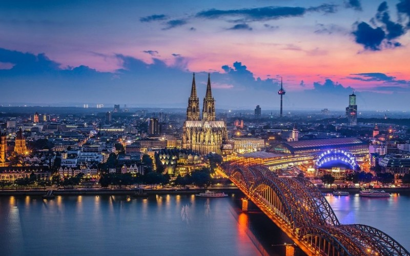
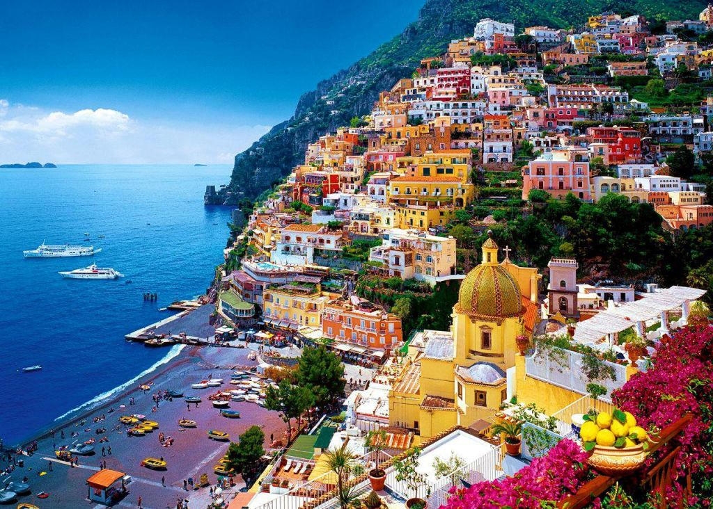
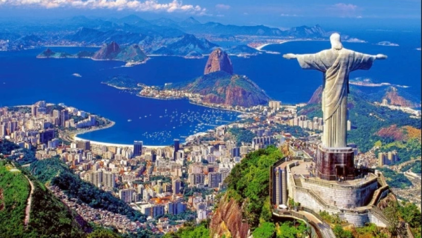
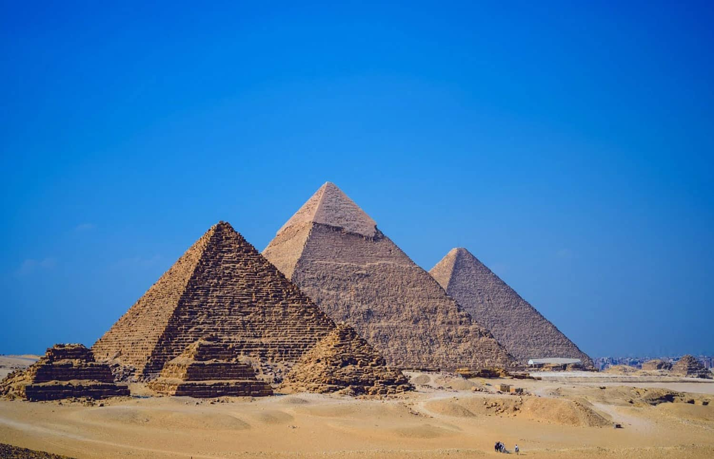
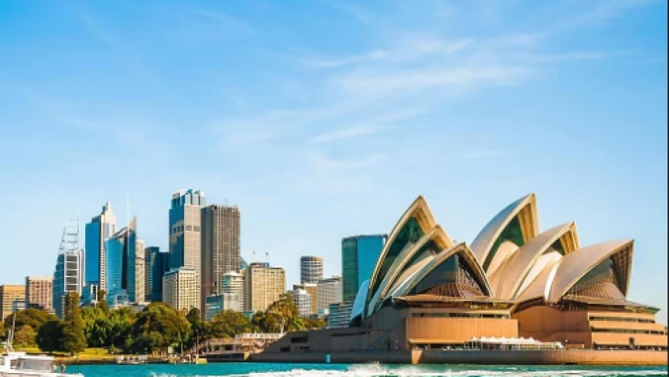

საქართველო
საქართველო (აფხ. Қырҭтәыла) — სახელმწიფო ევრაზიაში, კავკასიაში, შავი ზღვის აღმოსავლეთ სანაპიროზე. ესაზღვრება ჩრდილოეთიდან რუსეთი, სამხრეთიდან თურქეთი და სომხეთი, და სამხრეთ-აღმოსავლეთიდან აზერბაიჯანი. ტრანსკონტინენტური ქვეყანა სამხრეთ-აღმოსავლეთ ევროპისა და დასავლეთ აზიის გასაყარზე მდებარეობს, თუმცა სოციოპოლიტიკურად და კულტურულად ევროპის ნაწილია. თანამედროვე საქართველოს ტერიტორია მუდმივად დასახლებული იყო ადრეული ქვის ხანიდან მოყოლებული. კლასიკურ ანტიკურ ხანაში აყვავდა ადრეული ქართული სახელმწიფოები კოლხეთის სამეფო და იბერია, რამაც დასაბამი მისცა საერთო ქართულ კულტურასა და სახელმწიფოებრიობას. ქრისტიანობა გაბატონდა ადრეული IV საუკუნიდან; ქვეყანა გაერთიანებული მონარქია გახდა 1008 წელს. თუმცა მას შემდეგ საქართველომ აღორძინებისა და დაცემის რამდენიმე პერიოდი განვლო, სანამ XV საუკუნეში რამდენიმე მცირე პოლიტიკურ ერთეულად დაიშლებოდა. იმპერიულმა რუსეთმა ქართული მიწები ნაწილ-ნაწილ დაიპყრო 1801–1878 წლებში. რუსეთის რევოლუციის შემდგომ აღდგენილი დამოუკიდებელი ქვეყანა — საქართველოს დემოკრატიული რესპუბლიკა (1918–1921) ბოლშევიკების მსხვერპლი გახდა და 1922 წლიდან საბჭოთა კავშირის ნაწილად იქცა. საქართველომ დამოუკიდებლობა 1991 წელს კვლავ მოიპოვა. სამოქალაქო ომისა და მკაცრი ეკონომიკური კრიზისით გამოწვეული ქაოსური პერიოდის შემდეგ ქვეყანა შედარებით სტაბილური გახდა 1990-იანი წლების ბოლოს. 2003 წელს მოხდა „ვარდების რევოლუცია“. საქართველოს მთავრობის მისწრაფება ნატოში გაწევრიანებასა და გამოყოფილი ტერიტორიების დაბრუნებისკენ რუსეთთან ურთიერთობას მკვეთრად აუარესებს. პარალელურად მიმდინარე სწრაფმა ეკონომიკურმა განვითარებამ ქვეყანა მნიშვნელოვანი ევრაზიული ენერგეტიკული პროექტების ეპიცენტრი გახადა. საქართველო წარმომადგენლობითი დემოკრატიაა, ორგანიზებული როგორც უნიტარული, საპარლამენტო რესპუბლიკა. ქვეყანა ამჟამად რამდენიმე საერთაშორისო ორგანიზაციის წევრია, მათ შორის გაეროს (31 ივლისი, 1992),[9] ევროპის საბჭოს (27 აპრილი, 1999), სუამის, მსოფლიო სავაჭრო ორგანიზაციისა და შავი ზღვის ეკონომიკური თანამშრომლობის. საქართველო ასევე მიისწრაფვის ევროპის კავშირში ინტეგრაციასა და ჩრდილოატლანტიკურ ალიანსში გაწევრიანებას. სახელწოდება მთავარი სტატია: საქართველოს სახელწოდება. ქვეყნის სახელწოდება „საქართველო“ მომდინარეობს „ქართ“ ძირისაგან, რაც უძველეს სატომო სახელს „ქართუ, კარდუ, ხალდუ“-ს უკავშირდება. 1918-1921 წლებში იწოდებოდა „საქართველოს დემოკრატიულ რესპუბლიკად“, 1990-1995 წლებში — „საქართველოს რესპუბლიკად“. ქვეყნის საერთაშორისო კოდია GE. ისტორია მთავარი სტატია: საქართველოს ისტორია. უახლესი ისტორია ყურადღება: ეს სტატია/სექცია შეიცავს ფრაგმენტებს, რომლებიც არ იცავს მიუკერძოებლობის პრინციპს. შესაბამისი განხილვა შესაძლოა იხილოთ განხილვის გვერდზე. გთხოვთ ნუ ამოიღებთ ამ შეტყობინებას კამათის დასრულებამდე. დამოუკიდებლობის აღდგენა საქართველოს ისტორია ძველი კოლხეთისა და იბერიის სამეფოს რუკა წინაისტორიული საქართველო საქართველო ანტიკურ ხანაში შუა საუკუნეები ადრეული ახალი ისტორია ახალი ისტორია ისტორიული მხარეების მიხედვით ისტორია თემატურად საქართველოს ისტორია vte 1990 წლის 28 ოქტომბერს საქართველოში ჩატარდა პირველი მრავალპარტიული, დემოკრატიული საპარლამენტო არჩევნები, სადაც დამაჯერებელი გამარჯვება მოიპოვა ეროვნული პოლიტიკური პარტიებისა და ორგანიზაციების მემარჯვენე საარჩევნო ბლოკმა „მრგვალი მაგიდა — თავისუფალი საქართველო“ (სპიკერი: ზვიად გამსახურდია). იმავე წლის 14 ნოემბერს, საქართველოს ახლადარჩეული უზენაესი საბჭოს პირველ სესიაზე უზენაესი საბჭოს თავმჯდომარედ ერთხმად იქნა არჩეული ბ-ნი ზვიად კ. გამსახურდია (1939–1993). იმავე სესიაზე რესპუბლიკას ეწოდა „საქართველოს რესპუბლიკა“, დამტკიცებულ იქნა ახალი სახელმწიფო სიმბოლიკა და სრული სახელმწიფოებრივი დამოუკიდებლობის აღდგენამდე გამოცხადდა გარდამავალი პერიოდი. 1991 წლის 31 მარტს საქართველოში ჩატარდა საყოველთაო-სახალხო რეფერენდუმი, რომლის ერთადერთ კითხვას: „გსურთ თუ არა საქართველოს რესპუბლიკის სახელმწიფოებრივი დამოუკიდებლობის აღდგენა 1918 წლის 26 მაისის აქტის საფუძველზე?“ დადებითი პასუხი გასცა ქვეყნის საარჩევნო ხმის უფლების მქონე მოსახლეობის 98 %-მა, მათ შორის აფხაზებმაც. რეფერენდუმის შედეგების საფუძველზე, 1991 წლის 9 აპრილს საქართველოს რესპუბლიკის უზენაესმა საბჭომ მიიღო „საქართველოს სახელმწიფოებრივი დამოუკიდებლობის აღდგენის აქტი“. იმავე დღეს აშშ-ის სენატმა საგანგებო რეზოლუციით[10] ლეგიტიმურად ცნო 31 მარტის რეფერენდუმის შედეგები, რაც წარმოადგენდა საქართველოს დამოუკიდებლობის დე-ფაქტო ცნობას. საქართველოს რესპუბლიკის უზენაესი საბჭოს 1991 წლის 9 აპრილის დამოუკიდებლობის გამოცხადებას მალევე მოჰყვა შედეგი აღიარებების სახით. საქართველოს დამოუკიდებლობა სცნეს: 1991 წლის 27 აგვისტოს — რუმინეთი და მოლდოვა, 30 აგვისტოს — აზერბაიჯანი, 13 სექტემბერს — სომხეთი, 12 დეკემბერს — უკრაინა,[11] 16 დეკემბერს — თურქეთი,[12] 20 დეკემბერს — ლიეტუვა და მონღოლეთი, 25 დეკემბერს — აშშ, კანადა და ირანი, 26 დეკემბერს — ინდოეთი, ბრაზილია, კუბა, ტაილანდი, 27 დეკემბერს — ჩინეთი, ბელარუსი, სლოვენია, ვიეტნამი, ეგვიპტე, ალჟირი, 28 დეკემბერს — ხორვატია, იორდანია, 30 დეკემბერს — ლიბანი, 31 დეკემბერს — პაკისტანი, 1992 წლის 2 იანვარს — ერაყი, ეთიოპია, ლაოსი და ა.შ., ხოლო 1992 წლის 31 ივლისს გაერთიანებული ერების მორიგ სხდომაზე საქართველოს რესპუბლიკა მიღებულ იქნა მის 179-ე წევრად.[13] რუმინეთის მიერ საქართველოს რესპუბლიკის აღიარების დეკლარაცია (რუმინულ ენაზე) რუმინეთის მიერ საქართველოს რესპუბლიკის აღიარების დეკლარაცია (რუმინულ ენაზე) რუმინეთის მიერ საქართველოს რესპუბლიკის აღიარების დეკლარაცია (რუსულ ენაზე) რუმინეთის მიერ საქართველოს რესპუბლიკის აღიარების დეკლარაცია (რუსულ ენაზე) საქართველოს რესპუბლიკის პრეზიდენტის მადლობის წერილი რუმინეთის პრეზიდენტს (ინგლისურ ენაზე) საქართველოს რესპუბლიკის პრეზიდენტის მადლობის წერილი რუმინეთის პრეზიდენტს (ინგლისურ ენაზე) სამხედრო გადატრიალება მთავარი სტატია: საქართველოს სამოქალაქო ომი. 1991 წლის 26 მაისის პირველ საპრეზიდენტო არჩევნებში გაიმარჯვა ზვიად გამსახურდიამ. რადიკალური ოპოზიციის მოქმედების შედეგად, 1991 წლის 22 დეკემბრიდან თბილისში დაიწყო სამხედრო გადატრიალება, რაც დასრულდა 1992 წლის 6 იანვარს პრეზიდენტ გამსახურდიას სამშობლოდან გაძევებით. ხელისუფლების სათავეში მოექცა, ძალაუფლების უზურპაციის გზით მოსული არალეგიტიმური ე. წ. „სამხედრო საბჭო“, რომელმაც იმავე წლის მარტში ძალაუფლება გადასცა ამ უკანასკნელის წევრებით დაკომპლექტებულ, ასევე არალეგიტიმურ ე. წ. „სახელმწიფო საბჭოს“ (თავმჯდომარე: ე. შევარდნაძე). ქვეყანაში დამყარდა ედუარდ შევარდნაძის რეჟიმი, რომლის 12-წლიანი მმართველობა აღინიშნა ადამიანის უფლებებისა და ძირითად თავისუფლებათა უხეში და მასობრივი დარღვევებით, საქართველოს ტერიტორიული მთლიანობის რღვევით, ქვეყნის ტერიტორიაზე რუსეთის საოკუპაციო სამხედრო ბაზების დაკანონებით და ა. შ. პირველი პრეზიდენტის და მის მხარდამჭერთა წინააღმდეგ აღიძრა სისხლის სამართლის საქმე, ციხეებში აღმოჩნდა რამდენიმე ათეული პოლიტიკური პატიმარი. საქართველოში ეროვნულ-განმათავისუფლებელი მოძრაობის ახალი მძლავრი ტალღის აგორებამ 1988 წელს, შემდეგ კი საქართველოს მიერ სახელმწიფოებრივი დამოუკიდებლობის გამოცხადებამ მძაფრი რეაქცია გამოიწვია მის ავტონომიურ წარმონაქმნებში, რასაც შედეგად მოჰყვა სამოქალაქო შეიარაღებული დაპირისპირება (1989-1993) და სეპარატისტული რეჟიმების ჩამოყალიბება აფხაზეთსა და ე. წ. სამხრეთ ოსეთში (შიდა ქართლში). 1993 წლის სექტემბერში სამშობლოში დაბრუნებულმა ზვიად გამსახურდიამ (ჩეჩნეთის დედაქალაქიდან იგი სამეგრელოში ჩაფრინდა) სცადა აფხაზეთის გადარჩენა და კანონიერი ხელისუფლების აღდგენა, მაგრამ ე. შევარდნაძემ მოიწვია რუსეთის შავი ზღვის ფლოტის სამხედრო ხომალდები ადმირალ ბალტინის მეთაურობით და დახმარების შემთხვევაში რუსეთს აღუთქვა საქართველოს დსთ-ში შეყვანა. ამან გადაწყვიტა კანონიერი პრეზიდენტისა და მისი ხელისუფლების ბედი. სამეგრელოს მაღალმთიან, ტყიან მასივში გახიზნული პრეზიდენტი გაურკვეველ ვითარებაში დაიღუპა 1993 წლის 31 დეკემბერს. ვარდების რევოლუცია — შევარდნაძის გადადგომა მთავარი სტატია: ვარდების რევოლუცია. 2003 წლის 2 ნოემბრის საპარლამენტო არჩევნების შედეგების გაყალბების მიზეზით გამოწვეულ საერთო-სახალხო მღელვარების ფონზე, იმდროინდელმა ოპოზიციამ, მიხეილ სააკაშვილის მეთაურობით მოახდინა „ვარდების რევოლუცია“, რამაც 2003 წლის 23 ნოემბრის შევარდნაძის გადადგომა გამოიწვია. საპროტესტო მოძრაობა მთავარი სტატია: საქართველოს პოლიტიკური კრიზისი (ნოემბერი 2007). 2007 წლის ნოემბერში გამართული საპროტესტო მიტინგი პარლამენტის წინ. 2007 წლის 25 სექტემბერს, საქართველოს ყოფილმა მინისტრმა ირაკლი ოქრუაშვილმა სკანდალური განცხადებები გააკეთა. მან განაცხადა იმის შესახებ, თუ რა დანაშაულები ჩაიდინა მიხეილ სააკაშვილმა მისი მინისტრობის დროს, რასაც ოქრუაშვილის დაპატიმრება მოჰყვა 2007 წლის 27 სექტემბერს; ოქრუაშვილი მის მიერ შექმნილი პარტიის — „ერთიანი საქართველოსთვის“ ოფისში დააკავეს. ექს-მინისტრს თანამდებობის ბოროტად გამოყენება და ფულის გამოძალვაში დასდეს ბრალი. ამის შემდეგ აგორდა ოპოზიციური წინააღმდეგობის ტალღა, ოპოზიციის გაერთიანება ლოზუნგით — „საქართველო პრეზიდენტის გარეშე“. 2 ნოემბერს, გრანდიოზული მიტინგი გაიმართა პარლამენტის შენობის წინ, მაგრამ, 7 ნოემბერს, ხელისუფლებამ მიტინგი ძალის გამოყენებით დაარბია, შემდეგ შეიჭრა ტელეკომპანია იმედში და დახურა ეს არხი. 8 ნოემბერს, სააკაშვილი გადადგა და დაინიშნა საპრეზიდენტო არჩევნები. 2008 წლის 5 იანვარს გამართულ არჩევნებში, ხმათა 52 %-ით გაიმარჯვა მიხეილ სააკაშვილმა, ხოლო ამავე წლის საპარლამენტო არჩევნებში 59 %-ით გაიმარჯვა ერთიანმა ნაციონალურმა მოძრაობამ. საქართველო-რუსეთის ომი მთავარი სტატია: რუსეთ-საქართველოს ომი (2008). 2008 წლის აგვისტოში რუსეთმა საქართველოს მიმართ ღია აგრესია განახორციელა, მოტივით სამხრეთ ოსეთის მშვიდობიანი მოქალაქეების დაცვა. ამ ომის შედეგად საქართველომ ზემო აფხაზეთად წოდებული კოდორის ხეობა, ლიახვის ხეობა და ახალგორის რაიონი დაკარგა. 2012 წლის საპარლამენტო არჩევნები 2012 წლის 1 ოქტომბერს საქართველოში საპარლამენტო არჩევნები ჩატარდა, რომელშიც გაიმარჯვა კოალიცია ქართულმა ოცნებამ, რომელსაც სათავეში ედგა ცნობილი ქართველი ბიზნესმენი ბიძინა ივანიშვილი. იმ არჩევნებში ქართულმა ოცნებამ ხმების 54 %-ის მიღება მოახერხა და უკან ჩამოიტოვა ერთიანი ნაციონალური მოძრაობა, რომელიც საქართველოს სათავეში 2004–2012 წლებში იყო. 2013 წლის საპრეზიდენტო არჩევნები 2013 წელს საქართველოში საპრეზიდენტო არჩევნები ჩატარდა, რომელშიც ქართული ოცნების კანდიდატმა, გიორგი მარგველაშვილმა გაიმარჯვა. ამ გამარჯვებით მარგველაშვილი საქართველოს რიგით მე-4 პრეზიდენტი გახდა და ჩაანაცვლა მიხეილ სააკაშვილი, რომელიც საქართველოს პრეზიდენტი 2004–2007 და 2008–2013 წლებში იყო. 2016 წლის საპარლამენტო არჩევნები 2016 წლის 8 ოქტომბერს საქართველოში საპარლამენტო არჩევნები ჩატარდა, რომელშიც გაიმარჯვა პარტია ქართულმა ოცნებამ, რომელმაც 856 638 ხმა მიიღო (48,7 %) და მიიღო 115 მანდატი პარლამენტში. 2018 წლის საპრეზიდენტო არჩევნები 2018 წლის 28 ოქტომბერს გაიმართა საპრეზიდენტო არჩევნების პირველი ტური, სადაც პირველი ადგილი დაიკავა სალომე ზურაბიშვილმა 38,64 %-ით, ხოლო მეორე ადგილზე გავიდა გრიგოლ ვაშაძე 37,73 %-ით. არჩევნების მეორე ტური გაიმართა 28 ნოემბერს. არჩევნებში 1 146 258 ხმით (59,55 %) გაიმარჯვა სალომე ზურაბიშვილმა და გახდა პირველი ქალი პრეზიდენტი საქართველოს ისტორიაში. გავრილოვის ღამე საპროტესტო გამოსვლა, 21 ივნისი, 2019 მთავარი სტატია: გავრილოვის ღამე. მთავარი სტატია: საპროტესტო გამოსვლები საქართველოში (2019-2020). საპროტესტო გამოსვლები და დარბევა თბილისში 2019 წლის 20 და 21 ივნისს, რომელიც თბილისში მართლმადიდებლობის საპარლამენტთაშორისო ასამბლეის სესიის დროს რუსეთის დუმის დეპუტატის სერგეი გავრილოვის მიერ საქართველოს პარლამენტის თავმჯდომარის, ირაკლი კობახიძის სკამის დაკავებასა და საქართველოს პარლამენტში რუსულ ენაზე ასამბლეის სესიის ჩატარებას მოყვა. აქციების მეორე დღეს გადადგა პარლამენტის თავმჯდომარე ირაკლი კობახიძე, საქართველოს პარლამენტი დატოვა ზაქარია ქუცნაშვილმა. 2020 წლის საპარლამენტო არჩევნები არჩევნების პირველი ტური 2020 წლის 31 ოქტომბერს გაიმართა და მასში „ქართულმა ოცნებამ“ ხმათა 48,22 %-ით. არჩევნების მეორე ტური გაიმართა 2020 წლის 21 ნოემბერს. არჩევნების მეორე ტურს ოპოზიციურმა პარტიებმა ბოიკოტი გამოუცხადეს. პირველ ტურში ამომრჩეველთა აქტივობა 56,11 % იყო, ხოლო მეორე ტურში – 26,29 %. გეოგრაფია მთავარი სტატია: საქართველოს გეოგრაფია. საქართველო ევროპისა და აზიის გასაყარზე, კერძოდ, კავკასიაში მდებარეობს. დასავლეთიდან მას ესაზღვრება შავი ზღვა, ჩრდილოეთით — რუსეთის ფედერაცია, სამხრეთ-აღმოსავლეთით — აზერბაიჯანი, სამხრეთით — სომხეთი და თურქეთი. საქართველო იმ უძველეს სატრანსპორტო გზაჯვარედინზე მდებარეობს, რომელიც აკავშირებდა და აკავშირებს ჩრდილოეთისა და სამხრეთის, დასავლეთისა და აღმოსავლეთის ქვეყნებს. სწორედ მასზე გადიოდა ევროპა-აზიის დამაკავშირებელი სატრანსპორტო მაგისტრალი — ძველი აბრეშუმის გზა. საქართველო შავი ზღვით უკავშირდება შავიზღვისპირეთის ქვეყნებს, ხოლო ბოსფორისა და დარდანელის სრუტეებით — ხმელთაშუა ზღვის აუზის ქვეყნებს; გიბრალტარის სრუტით შესაძლებელია კავშირი მთელს მსოფლიოსთან, მდინარე დუნაის მეშვეობით კი — აღმოსავლეთ და ცენტრალურ ევროპის ქვეყნებთან. საქართველო ჩ.გ. 41°07' და 43°35' და ა.გ. 40°04' და 46°44'-ს შორის მდებარეობს. ფიზიკურ-გეოგრაფიული მდებარეობა გეოტექტონიკური თვალსაზრისით, საქართველოს ალპურ-ჰიმალაური დანაოჭების ვრცელ სარტყელში ცენტრალური მდებარეობა უკავია. იგი იწყება ატლანტის ოკეანის სანაპიროებიდან და მოიცავს ხმელთაშუა და შავი ზღვების მიმდებარე მთიან ნაწილებს, წინა აზიასა და ჰიმალაის მთიანეთს. ცნობილია, რომ სუბტროპიკულ და ზომიერ კლიმატურ სარტყლებს შორის საზღვარი მიუყვება კავკასიონის მთავარ წყალგამყოფ ქედს, რის გამოც საქართველო მდებარეობს სუბტროპიკულ კლიმატური სარტყლის უკიდურეს ჩრდილო ნაწილში. საქართველოში ჩამოყალიბებულია სუბტროპიკული კლიმატური სარტყლის ჰავის თითქმის ყველა ტიპი — ნოტიო სუბტროპიკული, ზომიერად ნოტიო, ზომიერად მშრალი და მშრალი-კონტინენტური. ეს განპირობებულია მისი სუბტროპიკულ და ზომიერ კლიმატური სარტყლების მიჯნაზე მდებარეობით, ასევე ბუნებრივი ბარიერების — კავკასიონისა და სამხრეთ მთიანეთის არსებობითა და შავი ზღვის გავლენით. ეკონომიკურ-გეოგრაფიული მდებარეობა ეკონომიკურ-გეოგრაფიული თვალსაზრისით, საქართველო ევროპისა და აზიის შესაყარზე მდებარეობს და ოდითგან დასავლეთისა და აღმოსავლეთის ცივილიზაციების დამაკავშირებელ ხიდს წარმოადგენდა, შავიზღვისპირა მდებარეობა კი მას დიდ უპირატესობას ანიჭებს სამხრეთ კავკასიის სხვა სახელმწიფოებთან, აზერბაიჯანთან და სომხეთთან შედარებით. საქართველოს ევროპასა და აზიას შორის მდებარეობის შესახებ რამდენიმე მოსაზრება არსებობს: ა) თუ ევროპასა და აზიას შორის საზღვარს ყუმა-მანიჩის ღრმულზე გავატარებთ, მაშინ საქართველო აზიაში მდებარეობს. ბ) ძვ. წ. V საუკუნეში მცხოვრები ბერძენი ისტორიკოსი და გეოგრაფი ჰეროდოტე ევროპასა და აზიას შორის საზღვარს მდინარეებზე — რიონსა და მტკვარზე ატარებდა. ამ შეხედულებით საქართველოს ნაწილი ევროპაში ხვდება, ნაწილი კი — აზიაში. გ) თუ ევროპასა და აზიას შორის საზღვარს საქართველოს, სომხეთისა და აზერბაიჯანის სახელმწიფო საზღვრებზე გავატარებთ (თურქეთთან და ირანთან), მაშინ საქართველო და მთლიანად კავკასია ევროპაში ხვდება. დ) რადგანაც კავკასიაში უფრო ევროპული ტიპის ლანდშაფტები ჭარბობს (კავკასიის ბუნება ევროპის ბუნებას ემსგავსება), ამიტომ საქართველო ევროპაშია. ე) ისტორიის, ტრადიციებისა და რელიგიის გათვალისწინებით საქართველო ევროპას ეკუთვნის. ვ) თუ საზღვრებს კლიმატური თავისებურებებიდან გამომდინარე კავკასიონის მთავარ წყალგამყოფ ქედზე გავატარებთ, მაშინ საქართველოს დიდი ნაწილი აზიაში მოხვდება, ხოლო მცირე — ევროპაში. საქართველოს სატრანსპორტო-გეოგრაფიული მდებარეობა ამჟამად მეტად ხელსაყრელია. საბჭოთა კავშირში ყოფნისას იგი სატრანსპორტო „ჩიხში“ იყო და მსოფლიოს ქვეყნებთან ურთიერთობა მხოლოდ მოსკოვის გავლით ხორციელდებოდა. დამოუკიდებლობის მოპოვების შემდეგ ქვეყანამ პრაქტიკულად სატრანსპორტო გზაჯვარედინის ფუნქცია შეიძინა. ტერიტორია: ქვეყნის ფართობი შეადგენს 69 700 კვ. კმ-ს, საზღვრების სიგრძე — 1771 კმ-ს, მათ შორის სახმელეთო — 1461 კმ (სომხეთი 164, აზერბაიჯანი 322, რუსეთი 723, თურქეთი 252) და საზღვაო — 310 კმ. ბუნება: ქვეყნის ტერიტორია ძირითადად მთებს უკავია, ბუნება მრავალფეროვანია — სუბტროპიკებიდან კავკასიონის მყინვარებამდე; უმაღლესი მწვერვალია მთა შხარა 5068 მ, უდაბლესი წერტილი — შავი ზღვა (0 მ); სახნავ-სათესი მიწა — 16 %, საძოვრები — 25 %, ტყეები — 34 %. მთავარი მდინარეები — მტკვარი და რიონი. ბუნებრივი რესურსები: ტყეები, ჰიდროენერგია, მანგანუმი, რკინის მადანი, სპილენძი, ქვანახშირის და ნავთობის მცირე მარაგი; მთისა და ზღვის კლიმატური კურორტები. საწვავი ნავთობი — სამგორ-პატარძეული, თბილისის მიდამოები, სუფსა ნახშირი — ტყიბული, ტყვარჩელი მურანახშირი — ახალციხე ტორფი — კოლხეთის დაბლობი, ფოთის მიდამოები ლითონები რკინა — ქვემო ქართლი (ბოლნისი) მანგანუმი — ჭიათურა სპილენძი — ბოლნისი ტყვია-თუთია — ბოლნისი ტყვია-თუთია-ბარიტი — ბოლნისი დარიშხანი — სვანეთი, რაჭა ვერცხლისწყალი — რაჭა, აფხაზეთი საშენი და სხვა მასალა საცემენტე მასალა — კასპი თაბაშირი — სამეგრელო, ახალციხე მარმარილო — კახეთი, აფხაზეთი ტუფი — ბოლნისი, იმერეთი, შიდა ქართლი მინერალური წყლები და სხვა მინერალური წყლები — თითქმის ყველა რეგიონში (ბორჯომის ხეობა, საირმე, ნაბეღლავი, ზვარე) თერმული წყლები — სამეგრელო (მენჯი), იმერეთი (წყალტუბო, სულორი) სამკურნალო ტალახი — ახტალა (კახეთი) საქართველოს საზღვრები სახმელეთო საზღვარი საქართველოს ჩრდილო-დასავლეთ ნაწილში, დაბა ლესელიძესთან იწყება. შემდგომ იგი მიუყვება ფსოუს, რომელიც სათავეს მთა აგეფსთასთან იღებს. საქართველოს ჩრდილო საზღვარი ძირითადად ემთხვევა კავკასიონის მთავარ წყალგამყოფ ქედს. მთა ვაციკფარსიდან მთა შავიკლდემდე საქართველოს საზღვარი გადის წყალგამყოფი ქედის ჩრდილოეთით მთა მყინვარწვერზე და გვერდით ქედზე. აღმოსავლეთ საზღვარი იწყება მთა ტინოვროსოდან, ეშვება ალაზნის ველზე, მიუყვება მდინარე ალაზანს, ვიდრე 1 კმ არ დარჩება მინგეჩაურის წყალსაცავთან მდინარის შეერთებამდე. საქართველოს სამხრეთი საზღვარი იწყება შავ ზღვასთან, სოფელ სარფის მიდამოებში. იგი ჯერ მიუყვება, შემდეგ კი კვეთს ჭანეთის ქედის ჩრდილო დაბოლოებას, მიუყვება შავშეთის და კვლავ კვეთს არსიანის ქედს, ჯავახეთ-სომხეთის ვულკანურ მთიანეთს, ლოქის ქედს, მდინარე მტკვარს და ივრის ზეგანს. ფლორა და ფაუნა მთავარი სტატია: საქართველოს ფლორა და საქართველოს ფაუნა. ცხვრის ფარა ჩრდილო-აღმოსავლეთ საქართველოში საქართველოს მცენარეთა სამყარო (ფლორა) მდიდარი და მრავალფეროვანია. იგი დაახლოებით 13 300 სახეობას ითვლის, მათ შორის 4225 თესლოვან მცენარეთა რიცხვს მიეკუთვნება, 75 — გვიმრისებურს, 600 — ხავსებს, 650 — ლიქენებს, 5000 — სოკოვნებსა და 2000 — წყალმცენარეებს. საქართველოს ცხოველთა სამყარო (ფაუნა) საკმაოდ მრავალფეროვანია. აქ ცნობილია ძუძუმწოვრების 100-მდე, ფრინველების 330-ზე მეტი, ქვეწარმავლების 48, ამფიბიების 11, თევზების 160-მდე და უხერხემლო ცხოველების ათასობით სახეობა. სახელმწიფო საქართველოს გზები საქართველო საპარლამენტო რესპუბლიკაა. სახელმწიფოს მეთაურია პრეზიდენტი, რომელიც ირჩევა 5 წლის ვადით პირდაპირი წესით. 2018 წლის საპრეზიდენტო არჩევნების შემდეგ ამოქმედდება კონსტიტუციური ცვლილებები, რომლის მიხედვითაც უქმდება პრეზიდენტის პირდაპირი წესით არჩევა, მის ნაცვლად პრეზიდენტს საარჩევნო კოლეგია აირჩევს. აღმასრულებელ ხელისუფლებას ახორციელებს მთავრობა, რომელსაც ხელმძღვანელობს პრემიერ-მინისტრი. ქვეყნის უმაღლესი საკანონმდებლო ორგანოა ერთპალატიანი პარლამენტი (150 წევრი), რომელიც ოთხ წელიწადში ერთხელ ირჩევა პროპორციული და მაჟორიტარული სისტემით. დედაქალაქი: თბილისი. სახელმწიფო ენა: ქართული, აფხაზეთის ავტონომიურ რესპუბლიკაში – აგრეთვე აფხაზური. ეროვნული დღესასწაული: 26 მაისი – სახელმწიფოებრივი დამოუკიდებლობის დღე (1991 წლის 9 აპრილს, საბჭოთა კავშირის შემადგენლობაში 70-წლიანი ყოფნის შემდეგ, იმავე წლის 31 მარტის საყოველთაო-სახალხო რეფერენდუმის შედეგების საფუძველზე, საქართველოს რესპუბლიკის უზენაესმა საბჭომ მიიღო საქართველოს სახელმწიფოებრივი დამოუკიდებლობის აღდგენის აქტი), 9 აპრილი – საქართველოს ეროვნული ერთიანობის და სამშობლოსათვის დაღუპულთა მოგონების დღე, 14 აპრილი – დედაენის დღე. ძირითადი პოლიტიკური პარტიები (ანბანურ რიგზე): ახალი გირჩი გირჩი — მეტი თავისუფლება ევროპული საქართველო ერთიანი ნაციონალური მოძრაობა ლელო საქართველოსთვის მოქალაქეები საქართველოსთვის საქართველოს ლეიბორისტული პარტია საქართველოს პატრიოტთა ალიანსი საქართველოს რესპუბლიკური პარტია ქართული ოცნება — დემოკრატიული საქართველო ხალხისთვის შეიარაღებული ძალები მთავარი სტატია: საქართველოს შეიარაღებული ძალები. 2007 წლის მონაცემებით ქვეყნის შეიარაღებულ ძალებში ირიცხებოდა 37 000-მდე სამხედრო მოსამსახურე. სახმელეთო ჯარები (35 000), სამხედრო-საჰაერო ძალები (1300), სამხედრო-საზღვაო ძალები (400). რეზერვში ირიცხებოდა 60 000 ადამიანი. შეიარაღებაში იმყოფებოდა 235-მდე ტანკი, 250-მდე საბრძოლო შეჯავშნული მანქანა, 240-ზე მეტი საველე არტილერიის ქვემეხი, ზალპური ცეცხლის რეაქტიული სისტემა და ნაღმსატყორცნი, 80-მდე საზენიტო სარაკეტო კომპლექსი, 15 თვითმფრინავი და 50 შვეულმფრენი, (ასევე 40 ერთეული უპილოტო საფრენი აპარატი), 25 საპატრულო კატარღა და მცირე ხომალდი. შეიარაღებული ძალების დაკომპლექტება ხდება შერეული პრინციპით — სავალდებულო გაწვევით და კონტრაქტის საფუძველზე. 2007 წელს თავდაცვის სამინისტროს საქართველოს ბიუჯეტიდან გამოეყო დაახლოებით 1 მლრდ. დოლარი. ტერიტორიული მოწყობა მთავარი სტატია: საქართველოს ტერიტორიული მოწყობა. დღევანდელი ტერიტორიული დაყოფით საქართველოში 2 ავტონომიური რესპუბლიკა: აჭარისა და აფხაზეთის. ეს უკანასკნელი ოკუპირებულია რუსეთის მიერ. ქვეყნის დანარჩენი ტერიტორია დაყოფილია პირობით მხარეებად, რომლებიც მეტ-ნაკლებად ემთხვევა საქართველოს ისტორიულ მხარეებს, თუმცა მხარეებს იურიდიული სტატუსი არ გააჩნიათ. კონსტიტუციის თანახმად ქვეყნის სახელმწიფო-ტერიტორიული მოწყობა უნდა განისაზღვროს საქართველოს მთელ ტერიტორიაზე ცენტრალური ხელისუფლების იურისდიქციის აღდგენის შემდეგ. ადგილობრივი თვითმმართველობის ერთეულია 69 მუნიციპალიტეტი. მუნიციპალიტეტის სტატუსი აქვს დედაქალაქ თბილისსაც. საქართველოს რეგიონები აფხაზეთი რაჭა-ლეჩხუმი და ქვემო სვანეთი კახეთი მცხეთა- მთიანეთი ქვემო ქართლი შიდა ქართლი სამცხე- ჯავახეთი იმერეთი სამეგრელო და ზემო სვანეთი გურია აჭარა შავი ზღვა რუსეთის ფედერაცია თურქეთი სომხეთი აზერბაიჯანი • თბილისი № რეგიონი ცენტრი 1 აფხაზეთის არ სოხუმი 2 სამეგრელოს და ზემო სვანეთის ზუგდიდი 3 გურია ოზურგეთი 4 აჭარის არ ბათუმი 5 რაჭა-ლეჩხუმის და ქვემო სვანეთი ამბროლაური 6 იმერეთი ქუთაისი 7 სამცხე-ჯავახეთი ახალციხე 8 შიდა ქართლი გორი 9 მცხეთა-მთიანეთი მცხეთა 10 ქვემო ქართლი რუსთავი 11 კახეთი თელავი დემოგრაფია მთავარი სტატია: საქართველოს დემოგრაფია. საქართველოს მუნიციპალიტეტების მოსახლეობის სიმჭიდროვე ისტორიოგრაფიაში მიღებული მონაცემებით XIII საუკუნეში ქართველები რაოდენობა 5 მილიონს აღწევდა. უცნობია XIV-XVII საუკუნეების მონაცემები. XVIII საუკუნის შუა ხანებში საქართველოს მოსახლეობას (დღევანდელ საზღვრებში) 761 ათასით ანგარიშობენ, აქედან 5% ცხოვრობდა ქალაქებში. 1800 წლისთვის საქართველოს (დღევანდელ საზღვრებში) მოსახლეობა 675 ათასზე მეტი იყო, აქედან აღმოსავლეთ საქართველოზე მოდიოდა მოსახლეობის 45,6 %, ხოლო დასავლეთზე – 54,4 %. 1832 წელს ის 840 ათასამდე გაიზარდა, ხოლო 1865 წელს 1 289 200-ს გადააჭარბა. 1897 წელს საქართველოს მოსახლეობა იყო 1 919 400 ადამიანი, 1914 წელს კი 2 600 400. ერთი საუკუნის განმავლობაში საქართველოს მოსახლეობა 3,4-ჯერ გაიზარდა. პავლე ინგოროყვას ცნობით 1916 წელს საქართველოს მოსახლეობა შეადგენდა 3 365 000 ადამიანს, აქედან 2 349 000 ადამიანი იყო ქართველი.[14] საქართველოს მოსახლეობა დაახლოებით 200 ათასით შემცირდა პირველი მსოფლიო ომის დროს და პირველი რესპუბლიკის წლებში, რაც გამუდმებული ომებით იყო განპირობებული. 1921 წელს საქართველოს მოსახლეობა 2410 ათასამდე დავიდა. XX საუკუნიდან მოსახლეობის რაოდენობის დადგენა მოსახლეობის საყოველთაო აღწერის საშუალებით ხდება. პირველი აღწერა საქართველოს სსრ-ში 1926 წელს ჩატარდა, უკანასკნელი 1989 წელს. დამოუკიდებელ საქართველოში მოსახლეობის აღწერები ჩატარდა 2002 და 2014 წლებში. აღწერის წელი მოსახლეობა კაცი ქალი 1926 2 677 200 1939 3 540 000 1959 4 044 045 1970 4 686 358 1979 5 014 800 1989 5 400 800 2002 4 601 500 2014 3 787 000 2024 3 914 000[15] 47% 53% საქართველოს მიერ დამოუკიდებლობის აღდგენის შემდეგ 30 წლის განმავლობაში საქართველოს მოსახლეობა ერთი მეხუთედით შემცირდა, რაც განაპირობა ომებმა და სოციალურ-ეკონომიკურმა კრიზისმა. მკვეთრად იკლო შობადობამ, იმატა სიკვდილიანობამ და ემიგრაციამ და საბოლოოდ ქვეყანა მძიმე დემოგრაფიულ მდგომარეობაში აღმოჩნდა. უკანასკნელი, 2014 წლის აღწერის მიხედვით, საქართველოს ტერიტორიაზე (გარდა ოკუპირებული ტერიტორიებისა) მოსახლეობა დაახლოებით 3,7 მილიონ ადამიანს შეადგენს. ეთნიკური და რელიგიური შემადგენლობა ქართველების რაოდენობა საქართველოში იზრდებოდა XIX საუკუნიდან მოყოლებული, თუმცა 1940 წლამდე მცირდებოდა მისი წილი მთლიან მოსახლეობაში. მინიმალურ ნიშნულს მან მიაღწია 1939 წელს, როცა ქართველები მოსახლეობის 61,4 %-ს შეადგენდნენ. ქართველების წლიური საშუალო მატების ყველაზე დაბალი მაჩვენებელი დააფიქსირა 1959 წლის აღწერამ. ეს გამოწვეული იყო მეორე მსოფლიო ომის დროს ქართველთა დიდი მსხვერპლით. ომმა 300 000 ქართველი შეიწირა, ასევე 1944 წელს მუსლიმი მესხების საქართველოდან გასახლებით. დეპორტირებულთა შორის 69 869 ადამიანს ითვლიან. ქართველების რაოდენობა 1989 წლიდან 2002 წლამდე მხოლოდ 4%-ით შემცირდა ანუ საქართველოს მოსახლეობის კლება ძირითადად სხვა ეთნოსების ხარჯზე მოხდა. XXI საუკუნეში ყველაზე მრავალრიცხოვანი ეთნიკური უმცირესობა აზერბაიჯანელებია. 2014 წლის აღწერის შედეგების მიხედვით საქართველოს ეთნიკური შემადგენლობა ასეთია: ქართველები — 86,8 % , აზერბაიჯანელები — 6,3 % , სომხები — 4,5 % , რუსები — 0,7 % , ოსები — 0,4 % , ეზიდები — 0,3 % , უკრაინელები — 0,2 % , ქისტები — 0,2 % , ბერძნები — 0,1 % , ასურელები — 0,1 %, სხვა 0,4 %; XVIII-XX საუკუნეებში საქართველოში ყველაზე მეტი რაოდენობის ეთნიკურ უმცირესობას სომხები წარმოადგენდნენ. 1800 წელს სომხები მთლიანი მოსახლეობის 4 %-ს შეადგენდნენ, 1926 წელს შეადგინეს 11 %. ამის შემდეგ XX საუკუნის განმავლობაში სომხური მოსახლეობის წილის შემცირება შეინიშნება, რაც განპირობებული იყო მათი მიგრაციით რუსეთსა და სომხეთში. აფხაზების წილი მოსახლეობაში მერყეობდა 1,5-დან 6 %-მდე, ოსებისა კი 3-4 %-ს შორის. 2014 წლის აღწერის შედეგების მიხედვით მოსახლეობის რელიგიური შემადგენლობა შემდეგია: მართლმადიდებელი ქრისტიანები — 83,4 % , მუსლიმანები — 10,7 % , სომეხი გრიგორიანელები — 2,9 % , კათოლიკეები — 0,5 % , იეჰოვას მოწმეები — 0,3 %, ეზიდები – 0,2 % , პროტესტანტები — 0,1 %, იუდეველები — 0,0 % , სხვა – 0,0 %, ათეისტები – 0,5 %. ურბანიზაცია XVIII საუკუნის მეორე ნახევარში საქართველოს მოსახლეობის მხოლოდ 5 % ცხოვრობდა ქალაქებში. 1800-1832 წლებში ეს მაჩვენებელი კვლავ 5 %-ის ფარგლებში რჩებოდა. 1865 წელს ურბანული მოსახლეობის წილმა 9,2 %-ს მიაღწია. 1913 წელს ქალაქებში მოსახლეობის 25,6 % ცხოვრობდა, 1939 წელს — 30,1 %. მოსახლეობის 57,4 % ქალაქებში ცხოვრობს. მოსახლეობის მესამედზე მეტი (1,2 მლნ) ცხოვრობს დედაქალაქ თბილისში. სხვა დიდი ქალაქებია: ბათუმი — 183 181, რუსთავი — 127 154, ქუთაისი — 125 589. ქალაქების მოსახლეობა თბილისი თბილისი ბათუმი ბათუმი ქუთაისი ქუთაისი № ქალაქი მხარე მოსახლეობა № ქალაქი მხარე მოსახლეობა viewtalkedit რუსთავი რუსთავი გორი გორი ზუგდიდი ზუგდიდი 1 თბილისი თბილისი 1 227 811 11 ხაშური შიდა ქართლი 24 131 2 ბათუმი აჭარის არ 183 181 12 სამტრედია იმერეთ 21 063 3 რუსთავი ქვემო ქართლი 127 154 13 ზესტაფონი იმერეთი 20 212 4 ქუთაისი იმერეთი 125 589 14 თელავი კახეთი 19 737 5 სოხუმი აფხაზეთის არ 65 146[16] 15 ქობულეთი აჭარის არ 17 372 6 გორი შიდა ქართლი 42 596 16 ახალციხე სამცხე-ჯავახეთი 17 287 7 ფოთი სამეგრელო-ზემო სვანეთი 41 170 17 სენაკი სამეგრელო-ზემო სვანეთი 15 652 8 ზუგდიდი სამეგრელო-ზემო სვანეთი 40 100 18 ოზურგეთი გურია 13 973 9 ცხინვალი დროებითი ადმინისტრაციულ- ტერიტორიული ერთეული 32 699[16] 19 კასპი შიდა ქართლი 12 415 10 მარნეული ქვემო ქართლი 25 752 20 ჭიათურა იმერეთი 12 089 ეკონომიკა მთავარი სტატია: საქართველოს ეკონომიკა. საქართველოს ეკონომიკა ვალუტა ლარი (GEL) ფისკალური წელი კალენდარული წელი სავაჭრო ორგანიზაციები WTO, სუამი, ბისეკი სტატისტიკა მშპ რანგი 116-ე (2019) [3] მშპ (მუპ) $47,9 მილიარდი (2019) მშპ ზრდა 4,8% (2018) მშპ/სულზე $12 227 (2019) მშპ სექტორით მრეწველობა (24,6%), ვაჭრობა (12,4%), მშენებლობა (11,3%) , ტრანსპორტი და კომუნიკაცია (9,5%), სოფლის მეურნეობა (7,8%) (2018) ინფლაცია 4,6% (2020) ღარიბი მოსახლეობა 20,1% (2011) სამუშაო ძალა 2,011 მილიონი (2019) სამუშაო ძალა დაკავებულია სოფ. მეურნეობაში (8,2%), მრეწველობაში (23,7%), მომსახურება (67,9%) (2017). უმუშევრობა 18,5% (2020) მთავარი მრეწველობა მანუფაქტურა, ფოლადი, ელექტროხელსაწყოები, სამთო მოპოვება, ქიმიური, ხე-ტყე, ღვინო სავაჭრო პარტნიორები ექსპორტი $3,566 მილიარდი (2017) მთავარი პარტნიორები რუსეთი 14,5%, აზერბაიჯანი 10%, თურქეთი 7,9%, სომხეთი 7,7%, ჩინეთი 7,6%, ბულგარეთი 6,6% (2017) იმპორტი $7,415 მილიარდი (2017) მთავარი პარტნიორები თურქეთი 17,2%, რუსეთი 9,9%, ჩინეთი 9,2%, აზერბაიჯანი 7,6%, უკრაინა 5,6% გერმანია 5,4% (2017) საჯარო ფინანსები სახელმწიფო ვალი მშპ-ს 44,9% (2017) შემოსავლები $4,352 მილიარდი (2017) გასავლები $4,925 მილიარდი (2017) ეკონომიკური დახმარება ODA $626,0 მლნ (2010) რედ. დამოუკიდებლობის გამოცხადებიდან დღემდე გრძელდება საბაზრო რეფორმები. ეკონომიკის მთავარი დარგებია სოფლის მეურნეობა (ჩაი, ციტრუსი, ხილი, თამბაქო, ღვინო), მანქანათმშენებლობა, მეტალურგია, ჰიდრორესურსები. დიდი ყურადღება ეთმობა საკურორტო-ტურისტული კომპლექსის აღდგენას, რომელიც ადრე ყოველწლიურად 2 მლნ ადამიანს ემსახურებოდა. სოფლის მეურნეობის პროდუქცია (ყურძენი, ჩაი, ციტრუსები); მთავარი სავაჭრო პარტნიორებია რუსეთი (18 %), თურქეთი (14 %), აზერბაიჯანი (12 %) და აშშ (6 %). • ერთობლივი ეროვნული პროდუქტი: სტრუქტურა (%) — სოფლის მეურნეობა 32; 1 სულ მოსახლეზე — 860 $. • ვალუტა — ქართული ლარი (GEL). დამატებითი ინფორმაცია: ქართული კომპანიები და ორგანიზაციები საბანკო-საფინანსო და დაზღვევის სისტემები დამატებითი ინფორმაცია: საქართველოს ბანკების სია ილია ჭავჭავაძე საადგილმამულო სათავადაზნაურო ბანკის ხელმძღვანელობის პერიოდში, ჯერ კიდევ 1883 წლიდან გაზეთ „ივერიაში“ აქვეყნებს, ხსენებული ორგანიზაციის, საზოგადოებრივი მუშაობისა და ღვაწლის შემაჯამებელ ოქმებს (რუბრიკაში — შინაური მიმოხილვა). ეს უკანასკნელი კი საფუძველი ხდება პირველი ქართული საბანკო-საფინანსო ინსტიტუტის — პირველი საჯარო წარდგინებისა. ილია მიზანმიმართულად მუშაობდა საბანკო მომსახურების კულტურის საქართველოში დამკვიდრების საკითხებზე. ასსზე მეტი წლის შემდეგ, XX საუკუნის 90-იან წლებში, დამოუკიდებლობის დაბრუნებიდან — დღემდე, საქართველოს საბანკო — საფინანსო ჯგუფები, მათი მოღვაწეობა და მიღწევები წარმოადგენს კიდევ ერთ, უმნიშვნელოვანეს ეროვნულ ფასეულობას სტაბილური, სახელმწიფოებრივი განვითარების გზაზე. დღეს საქართველოს ეკონომიკის სექტორში მუშაობს რამდენიმე ძლიერი კომერციული ბანკი და ბანკების ასოციაცია: საქართველოს ბანკების ასოციაცია ბანკი ქართუ ბაზისბანკი ბანკი რესპუბლიკა (ჯგუფი სოსიეტე ჟენერალი) ვითიბი (ყოფილი გაერთიანებული ქართული ბანკი) თიბისი ბანკი პროკრედიტბანკი საქართველოს ბანკი ლიბერთი ბანკი (ყოფილი სახალხო ბანკი) სილქ როუდ ბანკი კორ სტანდარტ ბანკი არასაბანკო საკრედიტო-სადეპოზიტო ორგანიზაციები და საფინანსო-საკრედიტო მხარდაჭერის პროგრამები: განათლების ერთიანი საკრედიტო კავშირი დაზღვევის სისტემა: დაზღვევის ასოციაცია ალდაგი-ბი-სი-აი ჯი-პი-აი ჰოლდინგი სახელმწიფო ინსტიტუტები: საქართველოს ფინანსთა სამინისტრო საქართველოს ეროვნული ბანკი განათლება შოთა რუსთაველი უნივერსიტეტები, სასწავლო დაწესებულებები და განათლების ცენტრები: ივანე ჯავახიშვილის სახელობის თბილისის სახელმწიფო უნივერსიტეტი თბილისის სახელმწიფო სამედიცინო უნივერსიტეტი თბილისის ვანო სარაჯიშვილის სახელობის სახელმწიფო კონსერვატორია კავკასიის უნივერსიტეტი კავკასიის საერთაშორისო უნივერსიტეტი საქართველოს ტექნიკური უნივერსიტეტი საქართველოს საზოგადოებრივ საქმეთა ინსტიტუტი შავი ზღვის საერთაშორისო უნივერსიტეტი ილია ჭავჭავაძის სახელობის სახელმწიფო უნივერსიტეტი საქართველოს უნივერსიტეტი საქართველოს დავით აღმაშენებლის სახელობის უნივერსიტეტი საქართველოს შოთა რუსთაველის თეატრისა და კინოს სახელმწიფო უნივერსიტეტი საქართველოს საპატრიარქოს წმიდა ანდრია პირველწოდებულის სახელობის ქართული უნივერსიტეტი თავისუფალი უნივერსიტეტი საქართველოს აგრარული უნივერსიტეტი კულტურა მთავარი სტატია: საქართველოს კულტურა. არქიტექტურა: ქალაქი-მუზეუმი მცხეთა, გელათის სამონასტრო კომპლექსი, თბილისის ისტორიული ცენტრი, უფლისციხის და ვარძიის კლდეში ნაკვეთი კომპლექსები, დავით გარეჯის და შიო მღვიმის კომპლექსები; ბაგრატის ტაძარი; ზემო სვანეთი; ლიტერატურა: ქართული ეპოსი — ვეფხისტყაოსანი (შოთა რუსთაველი, XIII ს.). თეატრი: ფალიაშვილის სახ. ოპერისა და ბალეტის (თბილისი, 1851), რუსთაველის სახ. დრამატული (თბილისი, 1821), მარჯანიშვილის სახ. დრამატული (თბილისი, 1928). კულტურის თავისებურებები: პოლიფონიური სიმღერა, ორიგინალური დამწერლობა. არქიტექტურა სვანური კოშკი ქართული არქიტექტურა დიდი მრავალფეროვნებითა და თავისებურებით გამოირჩევა. საქართველოს ყოველ კუთხეს თავისი დამახასიათებელი არქიტექტურული სტილი ჰქონდა და საცხოვრებელი სახლებიც მხარეების მიხედვით მკვეთრად განსხვავდებოდა ერთმანეთისაგან. ეს განსხვავება ახლა თანდათან მცირდება: საქართველოს ყველა რაიონში ფართოდ გავრცელდა ევროპული სტილი. მიუხედავად ამისა, განსხვავება მთისა და ბარის რაიონებს, დასავლეთ და აღმოსავლეთ საქართველოს შორის მაინც საგრძნობია. აღმოსავლეთ საქართველოს სოფლები უფრო კომპაქტურია და მჭიდროდაა დასახლებული. ეზოები აქ პატარაა და ამიტომ დასამუშავებელი მიწები სოფლის გარეთაა. დასავლეთ საქართველოში საკარმიდამო ნაკვეთები გაცილებით დიდია და საცხოვრებელი და სამეურნეო ნაგებობებიც ერთადაა. საცხოვრებელი სახლები სხვადასხვა ეთნოგრაფიულ პროვინციებში მეტად განსხვავებულია. სვანეთსა და აღმოსავლეთ კავკასიონის კუთხეებში (თუშეთში, ფშავ-ხევსურეთში) უმეტესად ქვისა და ფიქლის ციხე-სახლებია. ამასთან განსხვავება საკმაოდაა სვანური და თუშურ-ხევსურული კოშკების არქიტექტურაშიც. ამავე რეგიონებში გვხვდება 2-4 სართულიანი ჩარდახიანი სახლები, აგრეთვე ერთსართულიანი ქვითკირის სახლები მიწის ბრტყელი სახურავით (ძირითადად ფშავ ხევსურეთში). ფიქლით აშენებული სახლები, როგორც წესი, მშრალი (დუღაბის გარეშე) წყობისაა. აღმოსავლეთ საქართველოს ბარისა და მთისწინეთის ზონაში საცხოვრებელი სახლი ძირითადად დარბაზის ტიპისა იყო. ქვითა და აგურით აშენებული ერთსართულიან ნაგებობას საფეხურებრივ-გვირგვინისებური გუმბათის მსგავსი გადახურვა ჰქონდა, რომელიც ბოლოვდებოდა ერდოთი - კვამლისა და სინათლისათვის დატოვებული ხვრელით. დარბაზის გარდა, აღმოსავლეთ საქართველოს ბარის ზოგიერთ რაიონში განსაკუთრებით სამცხე-ჯავახეთში გაცრცელებული იყო მიწური სახლები — მიწის სიღრმეში გამოკვეთილი ქვისკედლებიანი და მიწის სახურავიანი ნაგებობები. დასავლეთ საქართველოში მაღალი ტენიანობისა და ჭაობიანობის გამო უმეტესად აშენებდნენ ერთ ან ორსართულიან ხის სახლებს, რომლებიც ხიმინჯებზე იდგა და ყავრის ორფერდა ან ოთხფერდა სახურავი ჰქონდა. სამეგრელოსა და აფხაზეთში ფართოდ იყო გავრცელებული მოწნული, ჩალით დახურული სახლების ტიპი — ფაცხა. XIX საუკუნის მეორე ნახევრიდან საქართველოში ახალი არქიტექტურული სტილი დამკვიდრდა: ორსართულიანი, რამდენიმეოთახიანი, ფანჯრებიანი და ხისიატაკიანი სახლები, რომლებშიც ღია კერიის ნაცვლად ბუხრები იყო ამოშენებული. აღმოსავლეთ საქართველოში სახლები ძირითადად ქვითა და აგურით შენდებოდა, დასავლეთ საქართველოში კი — ხით. გადასახურავად ძირითადად კრამიტი გამოიყენებოდა, გურია-სამეგრელოში კი ყავარი. სახლის მნიშვნელოვანი ელემენტი გახდა ხის აივანი. XX საუკუნის მეორე ნახევრიდან ტრადიციულმა არქიტექტურამ ადგილი თანამედროვე ევროპულ სტილს დაუთმო. ამჟამად ძირითად საშენ მასალად გამოიყენება აგური, ცემენტის ბლოკები, რკინა-ბეტონი და თუნუქი. განსხვავებაც სხვადასხვა კუთხეში აშენებულ სახლებს შორის მინიმუმამდე დავიდა. სამზარეულო და სუფრის ტრადიციები მთავარი სტატია: ქართული სამზარეულო. ქართული ტრადიციული სამზარეულო ქართული ტრადიციული სამზარეულო ერთ-ერთი უმდიდრესია მთელ მსოფლიოში. ეროვნული ტანსაცმლისაგან განსხვავებით, ქართული სამზარეულო არა მარტო შენარჩუნებული იქნა, არამედ ფართოდ გავრცელდა საქართველოს ფარგლებს გარეთაც. წარსულში საქართველოს ცალკეული კუთხეების სამზარეულოებს შორის საგრძნობი განსხვავება შეინიშნებოდა. ამჟამად ეს განსხვავება თითქმის აღარ არის და ნებისმიერ კუთხეში ფართოდ გავრცელდა ის კერძები, რომლებიც ადრე დამახასიათებელი არ იყო. აღმოსავლეთ საქართველოს ბარის რაიონებში ძირითადად ხორბლის პურს აცხობდნენ (შოთი, ლავაში), მთაში კი — ქერის ხმიადებს. დასავლეთ საქართველოში ხორბლის მაგივრობას სიმინდი ასრულებდა და ამიტომ მოსახლეობის ძირითადი საკვებიც მჭადი (იმერეთი, გურია) ან ღომი (სამეგრელო, აფხაზეთი) იყო. დასავლეთ საქართველოში ძირითადად სულგუნი და იმერული ყველია მიღებული, აღმოსავლეთ საქართველოში კი — გუდის ყველი. ქვეყნის დასავლეთ ნაწილში ფართოდ არის გავრცელებული მრავალფეროვანი მცენარეული საკვები, რომლებიც ნიგვზითა და სანელებლებითაა შეზავებული (სხვადასხვა ფხალეული). აღმოსავლეთ საქართველოს მოსახლეობის კვების რაციონში კი ხორცს უფრო დიდი ადგილი უკავია. როგორც დასავლეთ, ისე აღმოსავლეთ საქართველოში ფართოდ გავრცელებულია ლობიო, ხაჭაპური, ხინკალი, თევზეული, მწნილი და სხვადასხვა საწებლები. მთავარი სასმელი საქართველოს თითქმის ყველა კუთხეში ღვინოა. მხოლოდ მაღალმთიან პროვინციებში, სადაც ვენახები არ არის, ღვინოს არაყი და ლუდი ცვლის. ქართული სუფრის ტრადიციები მკაცრ წესრიგს ემორჩილება. თამადა და სადღეგრძელოები სუფრის აუცილებელი ელემენტებია საქართველოს ნებისმიერი კუთხისათვის. სადღესასწაულო სუფრა ასევე წარმოუდგენელია სიმღერის, ცეკვისა თუ ხუმრობების გარეშე. სადღეგრძელოების თანმიმდევრობა თამადაზეა დამოკიდებული, თუმცა გარკვეული ტრადიციები ჩამოყალიბებულია და განსხვავებებიც შეინიშნება სხვადასხვა პროვინციებს შორის. გურიაში მაგალითად, პირველი სადღეგრძელო მშვიდობისაა, კახეთში კი ოჯახის ჭერს დალოცავენ ხოლმე. აღმოსავლეთ საქართველოში ბოლო სადღეგრძელო საყველაწმინდოა, თუშეთსა და ფშავ-ხევსურეთში კი სუფრაზე განსაკუთრებულ ყურადღებას უთმობენ წინაპრებისა და გარდაცვლილთა მოგონების სადღეგრძელოებს.

აშშ
ამერიკის შეერთებული შტატები (ინგლ. The United States of America, USA; ასევე უწოდებენ შეერთებულ შტატებს, აშშ-ს, შტატებს და ამერიკას) — ფედერალური სახელმწიფო, რომელიც მოიცავს ორმოცდაათ შტატსა და ერთ ფედერალურ ოლქს. ქვეყნის ტერიტორიის ძირითადი ნაწილი მდებარეობს ჩრდილოეთ ამერიკის ცენტრალურ ნაწილში, უშუალოდ კონტინენტზე მდებარეობს ორმოცდაცხრა შტატი, შეერთებულ შტატებს ჩრდილოეთიდან ესაზღვრება კანადა, ხოლო სამხრეთიდან მექსიკა. ქვეყანა მოქცეულია ორ ოკეანეს შორის. შტატი ალასკა მდებარეობს კონტინენტის უკიდურეს ჩრდილოეთ ნაწილში, კანადის დასავლეთით და რუსეთის აღმოსავლეთით; რუსეთსა და აშშ-ს ბერინგის სრუტე აკავშირებს. ორმოცდამეათე შტატი ჰავაი არის არქიპელაგი წყნარი ოკეანის ცენტრალურ ნაწილში. აშშ აგრეთვე ფლობს ტერიტორიებს კარიბის ზღვასა და წყნარ ოკეანეში. ქვეყნის ფართობი შეადგენს 9,83 მილიონ კვადრატულ კილომეტრს და ცხოვრობს 327 მილიონი ადამიანი (2018 წლის შეფასებით). შეერთებული შტატები ფართობისა და მოსახლეობის სიდიდის მიხედვით მსოფლიოს პირველ ათ სახელმწიფოს შორის შედის. აშშ მსოფლიოში ერთ-ერთი ყველაზე ეთნიკურად მრავალფეროვანი და მულტიკულტურული ქვეყანაა, სადაც მრავალი იმიგრანტი ცხოვრობს. ეკონომიკის მაჩვენებლებით აშშ-ს მსოფლიოში პირველი ადგილი უკავია. ქვეყნის მკვიდრი მოსახლეობა აზიური წარმოშობისაა, ისინი აქ მრავალი ათასი წინ დასახლდნენ. შეერთებული შტატები დააარსა ცამეტმა ბრიტანულმა კოლონიამ. 1776 წლის 4 ივლისს მათ თავი დამოუკიდებლად გამოაცხადეს. ამას მოჰყვა დამოუკიდებლობის ომი ბრიტანეთის იმპერიასთან, სადაც აშშ-მ გაიმარჯვა. 1787 წლის 17 სექტემბერს მიიღეს ამერიკის შეერთებული შტატების კონსტიტუცია. XIX საუკუნეში, ამერიკის შეერთებულმა შტატებმა შეიერთა ტერიტორიები: საფრანგეთისგან, ესპანეთისგან, გაერთიანებული სამეფოსგან, მექსიკისგან, რუსეთისგან; მოახდინა ტეხასის რესპუბლიკისა და ჰავაის ანექსია. 1861 წელს ქვეყანაში დაიწყო სამოქალაქო ომი, რომელშიც ერთმანეთს ჩრდილოეთისა და სამხრეთის შტატები დაუპირისპირდნენ, საბოლოო გამარჯვება კი ჩრდილოეთს დარჩა. სამოქალაქო ომის დასრულების შემდეგ მთელი ქვეყნის მასშტაბით მონობა გაუქმდა, რის შემდეგაც შეერთებული შტატების ეკონომიკა სწრაფი ტემპებით განვითარდა. აშშ მონაწილეობდა როგორც პირველ, ასევე მეორე მსოფლიო ომში. აშშ გახდა პირველი სახელმწიფო, რომელმაც ბირთვული იარაღი შექმნა. ქვეყანა არის გაეროს უშიშროების საბჭოს მუდმივი წევრი. ეტიმოლოგია ეტიმოლოგია: სახელი ეწოდა ამერიკის კონტინენტის მიხედვით, რომელიც თავის მხრივ მიღებულია იტალიელი მკვლევარისა და კარტოგრაფის ამერიგო ვესპუჩის სახელისაგან. არაფორმალურ ურთიერთობებში ქვეყანას ამერიკად მოიხსენიებენ, ხოლო მის მცხოვრებთ — ამერიკელებად. ოფიციალური სახელწოდება: ამერიკის შეერთებული შტატები, შემოკლებით — აშშ. ეროვნული სახელწოდება: United States of America, შემოკლებით — USA. გეოგრაფია მთავარი სტატია: აშშ-ის გეოგრაფია. სახელმწიფო ჩრდილოეთ ამერიკაში. იგი გადაჭიმულია ატლანტის ოკეანიდან წყნარ ოკეანემდე, მოიცავს ტერიტორიულად დაშორებულ ალასკისა და ჰავაის შტატებს. აშშ-ს ეკუთვნის აგრეთვე რიგი კუნძულებისა წყნარ ოკეანეში (გუამი, პუერტო-რიკო და სხვა). ფართობი: 9 833 520 კვ. კმ. აშშ სიდიდით მე-3 ქვეყანაა რუსეთისა და კანადის შემდეგ. საზღვრები: ჩრდილოეთით ესაზღვრება კანადა, სამხრეთით — მექსიკა. ალასკის მონაკვეთზე, ბერინგის სრუტეზე გადის მისი საზღვარი რუსეთთან. საზღვაო საზღვრების სიგრძე — ალასკისა და ჰავაის ჩათვლით 19 928 კმ; სახმელეთო — 9656 კმ. მთიანი სისტემები: როკი-მაუნთინი, სიერა-ნევადა, აპალაჩები; უმაღლესი მწვერვალი — მაკ-კინლი 6194 მ; ჰიდროგრაფია: მთავარი მდინარეები — არკანზასი, კოლორადო, მისისიპი, მისური, რიო-გრანდე; ტბები — ერი, ჰურონი, მიჩიგანი, ონტარიო, ზემო ტბა. მთები და უდაბნოები ალასკა და აშშ-ის დასავლეთის მესამედი ნაწილი უმეტესად მთიანია. კლდოვანი მთები რომელიც, ალასკიდან მექსიკამდეა გადაჭიმული, რამდენიმე ქედისაგან შედეგბა და მათ ზეგნები და აუზები ყოფს. სამხრეთ-დასავლეთის შტატები, მაგალითად, არიზონა, ცხელი უდაბნოა, ხოლო ჩრდილო-დასავლეთისა, მაგალითად, ორეგონი, ქვეყნის ყველაზე ტენიანი მხარეა. დიდმა მდინარეებმა (კოლორადომ და სნეიკმა) ქედებში ღრმა კანიონები და ხეობები გათხარეს. ალაგ-ალაგ მდინარეებზე კაშხლებია აგებული და წყალს სარწყავად და ქალაქების ელექტრომომარაგებისთვისაც იყენებენ. ისტორია მთავარი სტატია: აშშ-ის ისტორია. აშშ-ის შტატები ქრონოლოგიურად. აშშ-ს ისტორია 1776 წლიდან იწყება, როდესაც მიღებული იქნა დამოუკიდებლობის დეკლარაცია. 1787 წელს მიღებული იქნა მსოფლიოში პირველი კონსტიტუცია. პირველი პრეზიდენტი ჯორჯ ვაშინგტონი გახდა. 1963 წელს მოკლეს პრეზიდენტი ჯონ კენედი. ომი ვიეტნამში 1964-1975. 1969 წელს პირველი ამერიკელი გადავიდა მთვარეზე. 1973-1974 წლების უოტერგეიტის სკანდალის შედეგად გადადგა პრეზიდენტი რიჩარდ ნიქსონი. სსრ კავშირის დაშლის შემდეგ ერთადერთი ზესახელმწიფოა. სათავეში უდგას ტერორიზმისა და ტოტალიტარიზმის წინააღმდეგ ბრძოლას. 2001 წლის ოქტომბერში წამოიწყო სამხედრო კამპანია თალიბანის მოძრაობის წინააღმდეგ ავღანეთში, ხოლო 2003 წლის მარტში - სადამ ჰუსეინის რეჟიმისა ერაყში. სახელმწიფო მთავარი სტატია: აშშ-ის პოლიტიკური მოწყობა. პოლიტიკური სისტემა: ფედერაციული რესპუბლიკა. კონსტიტუცია მიღებულია 1787 წელს. სახელმწიფოს მეთაური: პრეზიდენტი. აშშ-ის პრეზიდენტი არის სახელმწიფოს და მთავრობის მეთაური, შეიარაღებული ძალების მთავარსარდალი. 2025 წლიდან პრეზიდენტია დონალდ ტრამპი საკანონმდებლო ორგანო: ორპალატიანი კონგრესი, რომელიც შედგება სენატისაგან (ზედა პალატა, 100 წევრი) და წარმომადგენელთა პალატისაგან (ქვედა პალატა, 435 წევრი). პოლიტიკური პარტიები: დემოკრატიული პარტია (დაარსებულია 1828 წელს), რესპუბლიკური პარტია (დაარსებულია 1854 წელს). ადმინისტრაციული დაყოფა მთავარი სტატია: აშშ-ის ადმინისტრაციული დაყოფა. პრეზიდენტის რეზიდენცია კაპიტოლიუმი აშშ ფედერალური რესპუბლიკაა, რომლის სუბიექტებია 50 შტატი (State). გარდა ამისა, არსებობს 1 ფედერალური ოლქი (კოლუმბია) და 14 დამოკიდებული ტერიტორია (პუერტო-რიკო და სხვ.). ფედერაციის სუბიექტები გეოგრაფიულად 9 რეგიონს ქმნიან. ესენია: ახალი ინგლისის რეგიონი (N.E) : მენი – ნიუ-ჰემპშირი – ვერმონტი – მასაჩუსეტსი – როდ-აილენდი – კონექტიკუტი შუა ატლანტიკური რეგიონი (M.A.) : ნიუ-იორკი – ნიუ-ჯერსი – პენსილვანია ჩრდილო-აღმოსავლეთის ცენტრალური რეგიონი (E.N.C.) : ოჰაიო – ინდიანა – ილინოისი – მიჩიგანი – უისკონსინი ჩრდილო-დასავლეთის ცენტრალური რეგიონი (W.N.C.) : მინესოტა – აიოვა – მისური – ჩრდილოეთი დაკოტა – სამხრეთი დაკოტა – ნებრასკა – კანზასი სამხრეთ ატლანტიკური რეგიონი (S.A.) : დელავერი – მერილენდი – კოლუმბიის ოლქი – ვირჯინია – დასავლეთი ვირჯინია – ჩრდილოეთი კაროლინა – სამხრეთი კაროლინა – ჯორჯია – ფლორიდა სამხრეთ-აღმოსავლეთის ცენტრალური რეგიონი (E.S.C.) : კენტუკი – ტენესი – ალაბამა – მისისიპი სამხრეთ-დასავლეთის ცენტრალური რეგიონი (W.S.C.) : არკანზასი – ლუიზიანა – ოკლაჰომა – ტეხასი მთიანი რეგიონი (Mt) : მონტანა – აიდაჰო – უაიომინგი – კოლორადო – ნიუ-მექსიკო – არიზონა – იუტა – ნევადა წყნარი ოკეანის რეგიონი (Pac) : ვაშინგტონი – კალიფორნია – ორეგონი – ალასკა – ჰავაი დამოკიდებული (შემოუერთებელი) ტერიტორიები აშშ-ის მფლობელობაშია აგრეთვე 14 სხვადასხვა სტატუსის ტერიტორია: აშშ-ის ვირჯინის კუნძულები ამერიკის სამოა კუნძული ბეიკერი გუამი რიფი კინგმენი მიდუეი ნავასა პალმირა პუერტო-რიკო უეიკი ჩრდილოეთ მარიანას კუნძულები ჯერვისი ჯონსტონი ჰოულენდი დემოგრაფია მოსახლეობა მთავარი სტატია: აშშ-ის მოსახლეობა. აშშ-ის სტატისტიკური აღწერის ბიუროს 2019 წლის პირველი ივლისის მონაცემების მიხედვით ქვეყნის მოსახლეობა 328,239,523-ია.[5] აღნიშნული ბიურო ამერიკის 50-ივე შტატის მოსახლეობის რაოდენობას მუდმივად ანახლებს და სტატისტიკას აშშ-ის მოსახლეობის სააათის სახით წარმოგვიდგენს.[6] საათის მიხედვით, 2020 წლის 23 მაისის მონაცემებით აშშ-ის მოსაქლეობამ 329 მილიონს გადააჭარბა, ანუ ყოველდღიურად მოსახლეობა 4,547-ით იზრდებოდა. მოსახლეობის რაოდენობით აშშ მსოფლიოში მესამე უდიდესი სახელმწიფოა (პირველი ჩინეთი, ხოლო მეორე ინდოეთია). 2018 წელს ქვეყნის მოსახლეობის საშუალო ასაკი 38,1 წელი იყო.[7] 2018 წლის მონაცემებით აშშ-ში დაახლოებით 90 მილიონი ემიგრანტი ან ემიგრანტის შთამომავალი (ემიგრანტების მეორე თაობა) ცხოვრობდა, რაც მთლიანი მოსახლეობის დაახლოებით 28 %-ია.[8] ქვეყნის მოსახლეობა მეტად მრავალფეროვანია; ვხვდებით ისეთ 37 ეთნიკურ ჯგუფს, რომელსაც მილიონზე მეტი წევრი ჰყავს.[9] უდიდეს ეთნიკურ ჯგუფს გერმანელი ამერიკელები ქმნიან (50 მილიონზე მეტი მცხოვრები); მას მოსდევს ირანელი ამერიკელები (დაახლოებით 37 მილიონი), მექსიკელი ამერიკელები (დაახლოებით 31 მილიონი) და ინგლისელი ამერიკელები (დაახლოებით 28 მილიონი).[10][11] რასის მიხედვით მთლიანი მოსახლეობის 73,1 %-ით უდიდეს ჯგუფს თეთრკანიანები ქმნიან; რასის კუთხით ქვეყნის უმცირესობებს შორის პირველ ადგილს აფრიკელი ამერიკელები იკავებენ,[9]; უმცირესობებს შორის მეორე ადგილს აზიელი ამერიკელების ეთნიკური ჯგუფი წარმოადგენს, რომელიც ძირითადად ჩინელი, ფილიპინელი და ინდოელი ამერიკელებისგან შედგება.[9] ევროპელების წინაპრებს შორის უდიდეს ჯგუფს გერმანელები აყალიბებენ, რომელთა რაოდენობა ქვეყნის მთლიანი მოსახლეობითს 14 %-ზე მეტია.[12] 2010 წელს აშშ-ის მოსახლეობაში ამერიკელი ინდოელების ან ადგილობრივი ალასკელების შთამომავლების რიცხვი დაახლოებით 5,2 მილიონს უტოლდებოდა, ხოლო ადგილობრივი ჰავაიელების ან წყნარი ოკეანის კუნძულების მკვიდრი ხალხის შთამომავლები 1,2 მილიონ მცხოვრებს შეადგენდა.[13] 1980-2017 წლებში ქვეყანაში ჩამოსულ ლტოლვილებს შორის 55 % აფრიკიდან, 27 % ევროპიდან, 13 % აფრიკიდან, ხოლო 4 % ლათინური ამერიკიდან ჩამოვიდა.[13] ენა ინგლისური (განსაკუთრებით, ამერიკული ინგლისური) არის არაოფიციალური ეროვნული ენა აშშ-ში. მიუხედავად იმისა, რომ ფედერალურ დონეზე ქვეყანას საერთაშორისო ენა არ აქვს, ზოგიერთი კანონი, მაგალითად, აშშ-ის ნატურალიზაციის მოთხოვნები, ითხოვს ინგლისური ენის ცოდნას. 2010 წელს, დაახლოებით 230 მილიონი ადამიანი, ანუ ქვეყნის 5 წელზე უფროსი მოსახლეობის 80 %-სთვის მშობლიური ენა ინგლისური იყო. მეორე ყველაზე გავრცელებული ენა აშშ-ში ესპანურია, რომელიც მშობლიური ენა მოსახლეობის 12 %-სთვის არის. ჰავაის ორი ოფიციალური ენა აქვს, ჰავაიური და ინგლისური.[14] მიუხედავად იმისა, რომ ქვეყანის ოფიციალური ენა არცერთია, ნიუ-მექსიკო კანონით ითხოვს ინგლისური ან ესპანური ენის ცოდნას, ხოლო ლუიზიანა - ინგლისური და ფრანგულის.[15] რელიგია 2013 წლის გამოკითხვის თანახმად, ამერიკელთა 56 % ამბობს, რომ რელიგია „ძალიან მნიშვნელოვანი როლს თამაშობს მათ ცხოვრებაში“; სხვა ნებისმიერ დასავლურ ერთან შედარებით აღნიშნული მაჩვენებელი ბევრად უფრო მაღალია. 2009 წლის გალუპის (Gallup) გამოკითხვის თანახმად, ამერიკელთა 42 % ამბობს, რომ ისინი ყოველ კვირას ან რამდენიმე კვირაში ერთხელ მაინც დადიან ეკლესიაში; გამოკითხვაში ყველაზე დაბალი მაჩვენებელი ვერმონტში (23 %), ხოლო ყველაზე მაღალი მაჩვენებელი მისისიპიში (63 %) დაფიქსირდა.[16] 2014 წელს ჩატარებული გამოკითხვით, აშშ-ის ზრდასრულთა 70,6 % თავს ქრისტიანებად თვლიდა;[17] პროტესტანტები (46,5 %) და კათოლიკეები (20,8 %) აყალიბებენ უდიდეს ქრისტიანულ ჯგუფებს.[18] 2014 წელს აშშ-ის ზრდასრული მოსახლეობის 5.9% აცხადებდა თავს არა ქრისტიანობის, არამედ სხვა რელიგიის მიმდევრად;[19] ესენია იუდაიზმი (1,9 %), ისლამი (0,9 %), ინდუიზმი (0,7 %) და ბუდიზმი (0,7 %).[19] კვლევაში ასევე ნათქვამია, რომ ამერიკელთა 22,8 % საკუთარ თავს, აგნოსტიკად, ათეისტად ან ურელიგიო ადამიანად აღიქვამდა - მაჩვენებელი 1990 წლის შემდეგ 8,2 %-ით გაიზარდა.[18][20][21] პროტესტანტიზმი არის უდიდესი ქრისტიანული რელიგიური დაჯგუფება შეერთებულ შტატებში, რომლის მიმდევარი აშშ-ის მოსახლეობის თითქმის ნახევარია. ბაპტისტები ერთობლივად ქმნიან პროტესტანტების უმსხვილეს ქვეჯგუფს (15,4 %).[22] დასავლეთის სხვა ქვეყნების მსგავსად აშშ-ს მოსახლეობაც თანდათან ნაკლებად რელიგიური ხდება. ურელიგიობა განსაკუთრებით სწრაფად იზრდება 30-წლამდე ამერიკელებში.[23] კვლევები აჩვენებს, რომ ამერიკაში რელიგიისადმი ნდობამ კლება 1980-იანი წლებიდან დაიწყო[24] და პროცესის სისწრაფე სულ უფრო და უფრო იზრდება, განსაკუთრებით ახალგაზრდებში.[19][25] ურელიგიო ამერიკელებს საშუალოდ 1,7 შვილი ყავთ, ხოლო ქრისტიანებს - 2,2. აგრეთვე, ურელიგიო მოსახლეობა უფრო ნაკლებადაა მიდრეკილი ქორწინებისკენ (37 %), ვიდრე ეს რელიგიის მიმდევართა შემთხვევაშია (52 %). ოჯახური მდგომარობა 2018 წლის მონაცემებით აშშ-ის მოსახლეობის 15 წლის, ან უფრო მეტი ასაკის ხალხიდან 52 % დაქორწინებული იყო, 6 % - ქვრივი, 10 % - განქორწინებული, ხოლო 32 % არასოდეს ყოფილა დაქორწინებული.[26] დღესდღეობით, ქალების უმეტესი ნაწილი სახლის გარეთ მუშაობს; ბაკალავრის ხარისხის უმეტესობას სწორედ ქალები იღებენ.[27] აშშ-ის მოსახლეობაში თინეიჯერების ორსულობის მაჩვენებლი 1000 ქალზე 26,5-ია. 1991 წლის შემდეგ ეს მაჩვენებელი 57 %-ით შემცირდა.[28] აბორტი კანონიერია მთელ ქვეყანაში. აბორტის სიხშირე 1000 ახალდაბადებულ სიცოცხლეზე 254-ია, ხოლო 15-44 ასაკში მყოფ ყოველ 1000 ქალში 15 შემთხვევა ფიქსირდება. აშშ-ში აბორტის სიხშირე კლებას განაგრძობს, თუმცა მაინც ინარჩუნებს დასავლეთის ქვეყნებს შორის მოწინავე პოზიციას.[29] 2013 წელს ქალებში პირველი ბავშვის გაჩენის საშუალო ასაკი 26 წელია; მათ შორის, ქალების 41 % დაუქორწინებელი იყო.[30] 2016 წელს შობადობის საერთო მაჩვენებელი 1000 ქალზე 1820,5 იყო.[31] აშშ-ში შვილად აყვანა ფართოდაა გავერცელებული და კანონიერი თვალსაზრისით მარტივიც არის.[32] 2001 წლის მდგომარეობით 127 000-ზე მეტ შვილად აყვანილი ბავშვით, აშშ–ს მაჩვენებელმა შეადგენდა მთელ მსოფლიოში შვილად აყვანის მთლიანი რაოდენობის თითქმის ნახევარი.[33] ერთსქესიანთა ქორწინება ქვეყნის მასშტაბით კანონიერია; აგრეთვე კანონიერია ერთსქესიანი წყვილის მიერ ბავშვის აყვანა. პოლიგამია აშშ-ს მთელს ტერიტორიაზეა აკრძალული.[34] 2019 წელს აშშ-ში ყველაზე მეტი ბავშვი იზრდებოდა მარტოხელა ოჯახში.[35] ქალაქები მთავარი სტატია: აშშ-ის ქალაქები. დედაქალაქი: ვაშინგტონი (~659 ათასი). ქალაქები: ნიუ-იორკი (8,108), ლოს-ანჯელესი (3,903, აგლომერაცია - 16,810), ჩიკაგო (2,940), ჰიუსტონი (2,088, აგლომერაცია - 4,710), დეტროიტი (966), ფილადელფია (1,520), ფინიქსი (1,457, აგლომერაცია - 3,159), სან დიეგო (1,292). აშშ-ის უდიდესი ქალაქების სია № ქალაქი შტატი მოსახლეობა Metro area rank მეტროპოლიის მოსახლეობა რეგიონი New York City ნიუ-იორკი Los Angeles ლოს-ანჯელესი 1 ნიუ-იორკი ნიუ-იორკი 8 175 133 1 18 897 109 ჩრდილო-აღმოსავლეთი 2 ლოს-ანჯელესი კალიფორნია 3 792 621 2 15 250 000 დასავლეთი 3 ჩიკაგო ილინოისი 2 695 598 3 9 461 105 ცენტრალური 4 ჰიუსტონი ტეხასი 2 099 451 6 6 108 060 სამხრეთი 5 ფილადელფია პენსილვანია 1 526 006 5 6 385 461 ჩრდილო-დასავლეთი 6 ფინიქსი არიზონა 1 445 632 13 4 192 887 დასავლეთი 7 სან-ანტონიო ტეხასი 1 327 407 29 2 142 508 სამხრეთი 8 სან-დიეგო კალიფორნია 1 307 402 17 3 095 313 დასავლეთი 9 დალასი ტეხასი 1 197 816 4 6 477 315 სამხრეთი 10 სან-ხოსე კალიფორნია 945 942 30 1 975 342 დასავლეთი 2010 წლის მონაცემები ეკონომიკა მთავარი სტატია: აშშ-ის ეკონომიკა. აშშ — უპირველესი ეკონომიკური და სამხედრო სახელმწიფოა. იგი მდიდარია ბუნებრივი და მინერალური რესურსებით — ქვანახშირი, სპილენძი, ტყვია, მოლიბდენი, ფოსფატები, ურანი, ბოქსიტები, ოქრო, რკინა, ვერცხლისწყალი, ნიკელი, ვერცხლი, ვოლფრამი, თუთია, ნავთი, ბუნებრივი აირი, საშენი ხე-ტყე. ვალუტა: აშშ დოლარი (USD). ეროვნული პროდუქტი: 14.657 მლრდ $ (2010), ერთობლივი ეროვნული პროდუქტის მოცულობით 1-ელ ადგილზეა მსოფლიოში. ექსპორტი: თვითმფრინავები, ავტომობილები, ქიმიკატები, ქვანახშირი, სამანქანო მოწყობილობები, ნავთობი, სიმინდი, ხორბალი. ბიუჯეტი: 18.558 ტრილიონი $ (2016). ეროვნული შემოსავალი ერთ სულზე შეადგენს 57 220 $-ს. ფერმერები, მაღაროები და საწარმოები აშშ თითქმის ყველა სახის სასოფლო — სამეურნეო და სამრეწველო პროდუქციას აწარმოებს. აქ მსოფლიოში ყველაზე მეტი სიმინდი, სოია, პომიდორი, ფორთოხალი, ატამი, ყველი და საქონლისა თუ ფრინველის ხორცი იწარმოება. აშშ-ში მოიპოვება თითქმის ყველა ის ბუნებრივი რესურსი, რაც აუცილებელია თანამედროვე საზოგადოებისათვის. აქ იმაზე მეტ ქვანახშირს, სპილენძს, თაბაშირს, მარილს, ფოსფატებსა და გოგირდს მოიპოვებენ, ვიდრე რომელიმე სხვა ქვეყანაში. ალასკა და მექსიკის ყურის მიმდებარე შტატები ქვეყანას თითქმის მთლიანად უზრუნველყოფს ნავთობითა და ბუნებრივი აირით. ამერიკულია მსოფლიოს სამი უდიდესი კომპანია: „ჯენერალ მოტორსი“, „ფორდი“ (საავტომობილო) და „ექსონი“ (ნავთობმომპოვებელი). ქვეყანა აწარმოებს მრეწველობის ძველ, განვითარებულ, ქიმიურ და საფეიქრო დარგებთან დაკავშირებულ მრავალნაირ პროდუქციას, თუმცა მრეწველობის ისეთ ახალ დარგებშიც ლიდრეობს, როგორიც ელექტრონიკა, პროგრამული უზრუნველყოფა და ბიოტექნოლოგიაა. ამ დარგებში ბევრი მნიშვნელოვანი გამოგონება აშშ-ის კოსმოსური და თავდაცვის მრეწველობის განვითარების შედეგად მოხდა. მემკვიდრეობა მთავარი სტატია: აშშ-ის კულტურა. აშშ მნიშვნელოვანწილად განაპირობებს დანარჩენი მსოფლიოს ცხოვრების წესს. ამერიკამ შვა ტელეფონი, ელექტრობა, ტელევიზია, კომპიუტერი, ინტერნეტი, ატომური ბომბი, ასევე მასობრივი ავტოინდუსტრია, სწაფი კვების რესტორნები, საკრედიტო ბარათები, ჯინსები და სხვა. ამერიკული ტელევიზია, ჰოლივუდის კინო, ჯაზი, ბლუზი, როკი და რეპი თანამედროვე მასობრივი კულტურის საფუძველია, რომელიც დიდ ზეგავლენას ახდენს მსოფლიოს სხვადასხვა ქვეყნების და ხალხების კულტურებზე. ბუნებრივი ძეგლები: იელოუსტონის პარკი, დიდი კანიონის ეროვნული პარკი, იოსემაიტის ეროვნული პარკი; ღირსშესანიშნაობები: დამოუკიდებლობის დარბაზი ფილადელფიაში, თავისუფლების ქანდაკება ნიუ-იორკში; ხალხური შემოქმედება: ჩრდილო-ამერიკული ეპოსი - სიმღერა ჰაიავატზე (1855). კულტურა ლიტერატურა, ფილოსოფია და ვიზუალური ხელოვნება ფრენსის სკოტ ფიცჯერალდი, ცნობილი ამერიკელი მწერალი XVIII და XIX საუკუნეების დასაწყისში ამერიკულმა ხელოვნებამ და ლიტერატურამ მისი დიდი ნაწილი ევროპისგან მიიღო. XIX საუკუნის შუა წლებში მწერლებმა, როგორებიც იყვნენ: ვაშინგტონ ირვინგი, ნათანიელ ჰოთორნი, ედგარ ალან პო, ჰენრი დევით თორეა, ჩამოაყალიბეს ადგილობრივი ამერიკული ლიტერატურა. საუკუნის პირველ ნახევარში ძირითადი ფიგურები მარკ ტვენი და პოეტი უოლტ უიტმენი იყვნენ; სიცოცხლის განმავლობაში თითქმის უცნობი მწერალი, ემილი დიკინსოსი ახლა აღიარებულია, როგორც ერთ-ერთი მნიშვნელოვანი ამერიკელი მწერალი.[36] ისეთი ნაწარმოებებს, რომლებშიც ეროვნული ხასიათი და გამოცდილება გამოვლინდა, ეწოდათ „დიდი ამერიკული რომანები“; მათ შორისაა: ჰერმან მელვილის მობი დიკი, ტვენის „ჰეკლბერი ფინის თავგადასავალი“, ფრენსის სკოტ ფიცჯერალდის „დიდი გეტსბი“ და ჰარპერ ლის „ნუ მოკლავ ჯაფარას“.[37] თორმეტ აშშ-ს მოქალაქეს მიღებული აქვს ნობელის პრემია ლიტერატურის დარგში; უკანასკნელად ეს ბობ დილანმა, 2016 წელს შეძლო. უილიამ ფოლკნერს, ერნესტ ჰემინგუეის, ჯონ სტეინბეკს ხშირად მოიხსენიებენ XX საუკუნის ყველაზე გავლენიან მწერლებს შორის.[38] ამერიკაში განვითარდა ისეთი პოპულარული ჟანრები, როგორიცაა დასავლური ლიტერატურა („ვესტერნი“). ტრანსცენდენტალისტებმა, ტორეასა და რალფ უალდო ემერსონის მეთაურობით, ჩამოაყალიბეს პირველი მნიშვნელოვანი |ამერიკული ფილოსოფიური მიმდინარეობა. სამოქალაქო ომის შემდეგ, პრაგმატიზმის განივთარებას ჯერ ჩარლზ სანდერს პირსი, ხოლო შემდგომ უილიამ ჯეიმზი და ჯონ დიუი წინამძღოლობდნენ. XX საუკუნეში, ჯერ ვ. ვ. ო. ქუინმა და რიჩარდ როთიმ, ხოლო შემდეგ ნოამ ჩომსკიმ ანალიტიკური ფილოსოფია ამერიკის ფილოსოფიური აკადემიის წინა პლანზე წამოსწია. ჯონ რაულსი და რობერტ ნოზიცკი აგრეთვე ხელმძღვანელობდნენ პოლიტიკური ფილოსოფიის აღორძინებას. საკვები ძირითადი ამერიკული სამზარეულო დასავლეთის სხვა ქვეყნების მსგავსია. ძირითადი მარცვლეული ხორბალია. ადგილობრივი ამერიკელები და ადრეული ევროპული მოახალშენეები საკვებად იყებდნენ ისეთ ინგრედიენტებს, როგორებიცაა: ინდაური, ირმის ხორცი, კარტოფილი, ტკბილი კარტოფილი, სიმინდი.[39] ამერიკელების ნაწილი ისეთი დღესასწაულების აღსანიშნავად, როგორიცაა მადლიერების დღე, ადგილობრივი ინგრედიენტებისგან სხვადასხვა კერძს ამზადებენ.[40] მსოფლიოში უდიდესია ამერიკის სწრაფი კვების ინდუსტრია,[41] რომელიც 1940-იან წლებში გამოჩნდა.[42] ისეთი დამახასიათებელი კერძები, როგორებიცაა: ვაშლის ღვეზელი, შემწვარი ქათამი, პიცა, ჰამბურგერი და ჰოთ-დოგი, სხვადასხვა შემოტანილი რეცეპტებისგანაა შექმნილი. ქვეყანაში ფართოდაა გავრცელებული მექსიკური სამზარეულოს წარმომადგენელი ბურიტო და ტაკო და იტალიური პასტა.[43] ამერიკელები სვამენ სამჯერ მეტ ყავას, ვიდრე ჩაის.[44] კინო ჰოლივუდის ნიშანი ლოს-ანჯელესში, კალიფორნია ჰოლივუდი, რომელსაც ლოს-ანჯელესის (კალიფორნია) ჩრდილოეთი ნაწილი უკავია, მოძრავი სურათებით მიღებული პროდუქტის წარმოებაში ერთ-ერთ მოწინავე ადგილს იკავებს.[45] ტომას ალვა ედისონის კინეტოსკოპის გამოყენებით 1994 წელს ნიუ-იორკში შედგა მსოფლიოს პირველი კომერციული მოძრავი სურათების ჩვენება.[46] XX საუკუნიდან მოყოლებული აშშ-ის კინოინდუსტრია ძირითადად ჰოლივუდის მიმდებარედ დაფუძნდა. უხმო ფილმების პერიოდში ერთ-ერთი ყველაზე ცნობილი ამერიკელი რეჟისორი, დეივიდ უორკ გრიფითის, ფილმის სტრუქტურის ჩამოყელიბებას უძღვებოა, ხოლო ანიმაციურ ფილმებსა და ფილმებით ვაჭრობას პროდიუსერ-მეწარმე უოლტ დისნეი წინამძღოლობდა.[47] რეჟისორებმა, როგორიც იყო ჯონ ფორდი, შეცვალეს კინოგადაღებაში ამერიკის ძველდასავლური სახე და ჯონ ჰიუსტონის მსგავსად ადგილმდებარეობის გადაღებით ფილმის შესაძლებლობები გააფართოვეს. ამერიკის ფილმების ინსტიტუტის „AFI 100“ საუკეთესო ფილმების ჩამონათვალში შედის შემდეგი ფილმები: ორსონ უელსის მოქალაქე კეინი, რომელსაც ხშირად ყველა დროის საკუეთესო ფილმად მოიხსენიებენ,[48][49] კასაბლანკა (1942), ნათლია (1972), ქარწაღებულნი (1939), ლოურენსი არაბეთიდან (1962), ოზის ჯადოქარი (1939), კურსდამთავრებულები (1967), შინდლერის სია (1993), მღერა წვიმაში (1952), ეს მშვენიერი ცხოვრება (1946), სანსეტ ბულვარი (1950).[50] აკადემიის პრიზებს, ცნობილი როგორც ოსკარი, 1929 წლიდან მოყოლებული ყოველწლიურად გასცემს კინემატოგრაფიული ხელოვნებისა და მეცნიერების აკადემია,[51] ხოლო ოქროს გლობუსი გაიცემა 1944 წლიდან.[52] სპორტი მეთ რეიენი, ცნობილი ამერიკული ფეხბურთის მოთამაშე კევინ პლავეკი, ცნობილი ამერიკელი ბეისბოლის მოთამაშე აშშ-ში ამერიკული ფეხბურთი გულშემატკივრის დასწრების მხრივ ყველაზე პოპულარული სპორტია;[53] ნაციონალურ საფეხბურთო ლიგაში (NFL) გულშემატკივართა საშუალო მაჩვენებელი მსოფლიოში უმაღლესია, ხოლო სუპერ თასს ათობით მილიონი ადამიანი ადევნებს თვალს მსოფლიოში. XIX საუკუნის მიწურულიდან აშშ-ის ეროვნული სპორტი ბეისბოლია. პროფესიონალურ საგუნდო სპორტის სახეობებს შორის ამერიკაში შემდგომ ადგილებს კალათბურთი და ყინულის ჰოკეი იკავებენ; კალათბურთში ძირითადი ლიგა ნაციონალური საკალათბურთო ასოციაციაა (NBA), ხოლო ჰოკეიში - ბეისბოლის მთავარი ლიგა (NHL). დიდი რაოდენობის მაყურებელს იზიდავს საკოლეჯო, ახალგაზრდული ფეხბურთი და კალათბურთი.[54] 1994 წელს ამერიკამ ფიფას მსოფლიო საფეხბურთო თასს უმასპინძლა. ძირითადი საფეხბურთო ლიგა არის ფეხბურთის უმაღლესი ლიგა ამერიკაში (მოიცავს 23 ამერიკულ და კანადურ გუნდს). აშშ-ში პროფესიონალური სპორტის ბაზარი დაახლოებით 69 მილიარდია, დაახლოებით ორჯერ მეტი, ვიდრე ერთად აღებული ევროპის, შუა აზიისა და აფრიკის.[55] აშშ-ში ოლიმპიური თამაშები სულ რვაჯერ არის გამართული. 1904 წლის ზაფხულის ილიმპიადა იყო პირველი ოლიმპიადა, რომელიც ევროპის საზღვრებს გარეთ, სენტ-ლუისში, მისურის შტატში ჩატარდა.[56] 2017 წლის მდგომარეობით, ამერიკას მოგებული ჰქონდა 2522 მედალი ზაფხულის ოლიმპიურ თამაშებზე და 305 მედალი ზამთრის ოლიმპიადებზე.[57] ამერიკის ორი ყველაზე პოპულარული სპორტი, ბეისბოლი და ამერიკული ფეხბურთი, მის საზღვრებს გარეთ არიან ჩამოყალიბებულნი, მაგრამ ისეთი სპორტის სახეობები, როგორებიცაა: კალათბურთი, ფრენბურთი, სკეითბორდი და სნოუბორდი ამერიკაში გამოიგონეს, ხოლო შემდგომ მთელ მსოფლიოში გახდნენ პოპულარულები. ყველაზე ყურებადი ინდივიდუალური სპორტი გოლფი და ავტორბოლაა, განსაკუთრებით NASCAR.[58][59]
საფრანგეთი
საფრანგეთი (ფრანგ. France), ოფიციალურად საფრანგეთის რესპუბლიკა (ფრანგ. République française) — ქვეყანა დასავლეთ ევროპაში, მოიცავს ევროპის ამ ნაწილის, რამდენიმე კუნძულისა და ზღვისიქითა ტერიტორიების ნაწილს. მას ესაზღვრება (ჩრდილოეთიდან საათის ისრის მიმართულებით) ევროპის შემდეგი ქვეყნები: ბელგია, ლუქსემბურგი, გერმანია, შვეიცარია, იტალია, მონაკო, ესპანეთი და ანდორა. ზღვისგადაღმა ტერიტორიებს ესაზღვრება ბრაზილია და სურინამი (საფრანგეთის გვიანას), ნიდერლანდების ანტილის კუნძულები (სენ-მარტენს). საფრანგეთი გაერთიანებული სამეფოს ევროგვირაბით უკავშირდება, რომელიც გადის ლა-მანშის სრუტის ქვეშ. საფრანგეთი უდიდესი სახელმწიფოა დასავლეთ ევროპაში, ხოლო სიდიდით მესამე მთლიანად კონტინენტზე. ის ფლობს მეორე ყველაზე დიდ განსაკუთრებულ ეკონომიკურ ზონას. საფრანგეთს აქვს დიდი ძალაუფლება ძლიერი კულტურული, ეკონომიკური, სამხედრო და პოლიტიკური ზეგავლენით ევროპასა და მთელს მსოფლიოზე.[6] საფრანგეთის ძირითადი იდეალები აღბეჭდილია, XVIII საუკუნეში მიღებულ, „ადამიანისა და მოქალაქის უფლებათა დეკლარაციაში“. XVI-XX საუკუნეებში საფრანგეთი ფლობდა ყველა დროის სიდიდით მეორე უდიდეს კოლონიურ იმპერიას, რომელიც დავდაპირველად მოიცავდა ვრცელ ტერიტორიებს ჩრდილოეთ ამერიკისა და ინდოეთში, ხოლო შემდგომ ჩრდილო-დასავლეთ და ცენტრალურ აფრიკაში. ის, ასევე, ფლობდა მადაგასკარს, ინდოჩინეთს, გუანჩჟოუვანსა და კარიბის ზღვისა და წყნარი ოკეანის აუზის მრავალ კუნძულს. საფრანგეთი არის განვითარებული ქვეყანა[7] და მსყიდველობითი უნარის პარიტეტის მიხედვით აქვს ევროპაში მეორე, ხოლო მსოფლიოში მეშვიდე უდიდესი ეკონომიკა.[8] საოჯახო ქონების მონაცემით საფრანგეთი უმდიდრესი ქვეყანაა ევროპაში და მეოთხეა მსოფლიოში.[9] მთლიანი შიდა პროდუქტის მიხედვით მას მეხუთე ადგილი უკავია მსოფლიოში. საფრანგეთს ყველაზე ხშირად სტუმრობენ, ის ყოველწლიურად 83 მილიონ უცხოელ ტურისტს მასპინძლობს.[10] საფრანგეთს გააჩნია მეექვსე უმსხვილესი სამხედრო ბიუჯეტი[11] და 29-ე უდიდესი არმია მსოფლიოში. ის ფლობს ბირთვული იარაღის მესამე უდიდეს მარაგს მსოფლიოში[12] და სიდიდით მეორე დიპლომატიურ კორპუსს აშშ-ის შემდეგ.[13] საფრანგეთი არის გაეროს დამფუძნებელი წევრი, ასევე უშიშროების საბჭოს ხუთიდან ერთ-ერთი მუდმივი წევრი და წევრი საერთაშორისო ორგანიზაციებისა: ფრანკოფონია, დიდი რვიანი, დიდი ოცეული, ნატო, OECD, WTO და ლათინური კავშირი. გარდა ამისა, ის არის ევროპის კავშირის დამფუძნებელი და მოწინავე წევრი, ამასთან ფართობით მისი უდიდესი სახელმწიფო. 2013 წლისთვის საფრანგეთს მეოცე ადგილი ეკავა მსოფლიოში ადამიანის განვითარების ინდექსის მიხედვით, ხოლო, 2012 წელს, 22-ე – კორუფციის აღქმის ინდექსით.[14] სახელწოდება ოფიციალური: ქართულად - საფრანგეთის რესპუბლიკა; ფრანგულად — France; République française. ეტიმოლოგია — სახელი მომდინარეობს ფრანკების ტომებისაგან. თვით სიტყვა „ფრანკი“ თავისუფალ ადამიანს ნიშნავს. ამ ტერიტორიას რომაელები გალიას უწოდებდნენ გალების კელტური ტომის მიხედვით. საფრანგეთის სახელები სხვა ენებზე: Gallia (ბერძნული), Francogallia (ლათინური), Fagguo (ჩინური), Ranska (ფინური), Tsarf (ებრაული), Valland (ძველნორვეგიული), Bro-C'hall (ბრეტონული), Perancis (ინდონეზიური). ქვეყნის კოდი — FR. ისტორია მთავარი სტატია: საფრანგეთის ისტორია. პრეისტორია ლასკოს გამოქვაბულში აღმოჩენილი ნახატი, რომელზეც გამოსახულია ცხენი (დორდონი, ძვ.წ 18 000 წელი) ადამიანთა ცხოვრების უძველესი კვალი, რომელიც დაახლოებით ძვ. წ 18 000 წლით თარიღდება, საფრანგეთის ტერიტორიაზე მდებარეობს.[15] ამ პერიოდში ადამიანებს, გამყინვარების ხანისთვის დამახასიათებელ მკაცრ და ცვალებად კლიმატთან უხდებოდათ გამკლავება, რამაც მათი ცხოვრების ნირის შეცვლა გამოიწვია: მათ ხელი მიჰყეს მომთაბარეობას, ხოლო თავს ნადირობითა და შემგროვებლობით ირჩენდნენ.[15] საფრანგეთი ცნობილია იმ გამოქვაბულთა სიმრავლით, რომლებიც ზედა პალეოლითის ერას მიეკუთვნებიან, ხოლო მათგან ყველაზე ცნობილია ლასკოს გამოქვაბული[15] (დორდონი, ძვ. წ 18 000 წელი). გამყინვარების ხანის ბოლო ეტაპზე (ძვ. წ 10 000 წელი) კლიმატი შერბილდა[15] და დაახლოებით ძვ. წ 7000 წლიდან დასავლეთ ევროპის ამ ნაწილმა ნეოლითის ხანაში გადაინაცვლა, რამდენადაც მოსახლეობის ცხოვრების წესი შეიცვალა, ამ ეტაპზე ჩნდება დამჯდარი მოსახლეობის სამიწათმოქმედო კულტურა. ძვ. წ IV—III ათასწლეულების ძლიერი დემოგრაფიული და სასოფლო სამეურნეო განვითარების შემდეგ, ძვ.წ III ათასწლეულში მოსახლეობამ მეტალურგიას მიჰყო ხელი, თავდაპირველად მუშაობდნენ: ოქროზე, სპილენძსა და ბრინჯაოზე, ხოლო მოგვიანებით დაიწყეს რკინის დამუშავებაც.[16] საფრანგეთის ტერიტორიაზე მრავალი მეგალითი მდებარეობს, მათგან ყველაზე გამორჩეული კი კარნაკის ქვებია (მორბიანი, ძვ. წ 3300 წელი). გალია მთავარი სტატია: გალია და კელტები. გალია, ძვ. წ. I საუკუნე. გალიის ტერიტორიებზე, რომელიც დღევანდელ საფრანგეთს, ბელგიას, შვეიცარიას, ნიდერლანდებისა და გერმანიის გარკვეულ ნაწილს (მდ. რაინის მარცხენა სანაპირო) და ჩრდოლოეთ იტალიის ნაწილს მოიცავდა, კელტები სახლობდნენ. მეისონ კარეს ტაძარი რომაულ - გალური კულტურის ერთ-ერთი უმნიშვნელოვანელი ძეგლია, იგი აშენებულია ქალაქ ნემასუსში (დღევანდელი ნიმი) ძვ. წ 600 წელს იონიელმა ბერძნებმა, რომლებიც წარმოშობით ფოკაიადან იყვნენ, ხმელთაშუა ზღვის სანაპიროზე დააარსეს მასალიის კოლონია (დღევანდელი მარსელი, რომელიც საფრანგეთის უძველესი ქალაქია).[17][18] აღსანიშნავია ისიც, რომ დღევანდელი საფრანგეთის ტერიტორიაზე ასევე სახლობდნენ გალურ-კელტური ტომები, მაგრამ მხოლოდ ძვ. წ V-III საუკუნეებში.[19] გალიის ცნება სწორედ ამ დროს ჩამოყალიბდა; იგი მოიცავს კელტთა დასახლებას მდინარე რაინიდან ატლანტიკის ოკეანემდე, ანუ პირენეებსა და ხმელთაშუა ზღვას. დღევანდელი საფრანგეთის საზღვარიც თითქმის იმავე ტერიტორიებს მოიცავს, რასაც ძველი გალია მოიცავდა, რომელიც დასახლებული იყო კელტი გალებისაგან. ამ დროის გალია საკმაოდ ძლიერ სახელმწიფოს წარმოადგენდა. ძვ. წ 390 წელს გალთა ბელადმა ბრენუსმა მდინარე ტიბრთან რომაელებს ცხარე ბრძოლა გაუმართა, რომელიც ალიის ბრძოლის სახელითაა ცნობილი, სადაც გალებმა სასტიკად დაამარცხეს რომაელი ლეგიონერები. ბრძოლის შემდეგ გალებმა რომი დაიკავეს და ხარკი დაადეს. გალთა თავდასხმამ საკუთრივ რომი ძალიან დაასუსტა, ხოლო მის მოხარკეებს აჯანყების სურვილი აღუძრა, რომმა კი მათ ხელმეორედ დამორჩილებას 50 წელი მოანდომა. გალები რეგიონს მანამდე ავიწროებდნენ, სანამ რომთან ფორმალური სამშვიდობო ხელშეხრულება არ გააფორმეს, რაც ძვ. წ 345 წელს მოხდა. სამშვიდობო ხელშეკრულების გაფორმების მიუხედავად რომისა და გალიის მტრული პოლიტიკა მომდევნო საუკუნეებშიც გაგრძელდა. ძვ. წ 125 წელს რომაელებმა სამხრეთ გალია დაიპყრეს და დაპყრობილ ტერიტორიას რომის პროვინცია დაარქვეს. სახელმა საუკუნეების მანძილზე ცვლილება განიცადა და დღესდღეობით მას პროვანსის სახელით ვიცნობთ.[20] იულიუს კეისარმა დანარჩენი გალიაც დაიპყრო, ხოლო ძვ. წ 52 წელს გალების აჯანყებაც ჩაახშო, რომლის ინიციატორიც გალთა ბელადი, ვერცინგეტორიქსი იყო.[21] ძვ. წ 125 წელს რომაელებმა სამხრეთ გალია დაიპყრეს და დაპყრობილ ტერიტორიას რომის პროვინცია დაარქვეს. სახელმა საუკუნეების მანძილზე ცვლილება განიცადა და დღესდღეობით მას პროვანსის სახელით ვიცნობთ.[20] იულიუს კეისარმა დანარჩენი გალიაც დაიპყრო, ხოლო ძვ. წ 52 წელს გალების აჯანყებაც ჩაახშო, რომლის ინიციატორიც გალთა ბელადი, ვერცინგეტორიქსი იყო.[21] გალიის რომის პროვინციებში გაერთიანება ავგუსტუსს მიეწერება, ისევე როგორც მისი დაყოფა ოთხ პროვინციად: სამხრეთ გალია — ნარბონენსად, სამხრეთ-აღმოსავლეთ გალია — აკვიტანიად, ცენტრალური გალია — ლუგდუნენსად და ჩრდილოეთ გალია - ბელგიკად.[22] გალურ-რომაულ პერიოდში მრავალი ქალაქი დაარსდა, მათ შორის გალიის დედაქალაქი — ლუგდუნუმი (დღევანდელი ლიონი).[22] ეს ქალაქები ტრადიციულ რომაულ სტილში შენდებოდა; ფორუმით, თეატრით, ამფითეატრით, ცირკით და თერმული აბანოებით. გალები თანდათან აერივნენ რომაულ მოსახლეობაში და მათთან თანაცხოვრების პერიოდში თითქმის მთლიანად შეითვისეს რომაული კულტურა და ენა (ლათინური, რომლისგანაც მოგვიანებით ფრანგული ენა წარმოიშვა). ასევე მოხდა რომაული და გალური რელიგიების ერთმანეთში აღრევა, რის შედეგადაც რელიგიური სინკრეტინიზმი წარმოიქმნა. III საუკუნის მეორე ნახევარში რომაული გალია ლიმესის სერიოზულ ნაკლებობას განიცდიდა, იმ დროს, როდესაც მთელი იმპერია ბარბაროსთა შემოსევებისგან იტანჯებოდა.[23] გალიამ რომის სისუსტე სათავისოდ გამოიყენა: გამოეყო მას და შექმნა დამოუკიდებელი გალების იმპერია,[23] რომელმაც მხოლოდ რომის იმპერიის კრიზისის პერიოდში იარსება (260-273 წლებში). თუმცაღა, სიტუაცია საგრძნობლად გამოსწორდა IV საუკუნის მეორე ნახევარში, რომელიც რომაული გალიის აყვავებისა და აღორძინების პერიოდად ითვლება.[24] 312 წელს კონსტანტინე დიდმა მრწამსი შეიცვალა და ქრისტიანობა მიიღო. მას შემდეგ ბოლო მოეღო ქრისტიანთა დევნას რომის იმპერიაში,[25] მაგრამ V საუკუნის დასაწყისში ბარბაროსთა შემოსევები კვლავ განახლდა,[26] ხოლო გერმანულმა ტომებმა: ვანდალებმა, ალანებმა და სვებებმა გადალახეს რაინი და დასახლდნენ გალიაში, ესპანეთში და იმპერიის სხვა ნაწილებში.[27] ფრანკთა სახელმწიფო (მესამე საუკუნე — 843) მთავარი სტატია: ფრანკთა სამეფო, მეროვინგების დინასტია და კაროლინგების დინასტია. ფრანკთა ექსპანსია ხლოდვიგ I-ს დროიდან (481) ფრანკთა იმპერიის დაყოფამდე (843). ანტიკური ხანის დასასრულს გალია რამდენიმე გერმანულ სამეფოდ დაიყო (ფრანკთა სახელმწიფო (ჩრდილოეთი), ალემანია (ჩრდილო-აღმოსავლეთი), ბურგუნდია (აღმოსავლეთი), სეპტიმანია (სამხრეთი), ვესტგოთების სახელმწიფო (სამხრეთ-აღმოსავლეთი) და დარჩენილ ტერიტორიაზე სუასონის სამეფო). ამავდროულად, ბრიტებს (კელტური მოდგმის ტომები) ანგლო-საქსთა მიერ ბრიტანეთის დაპყრობის ხანაში მშობლიური ტერიტორიის დატოვება და სხვაგან, კერძოდ კუნძულ არმორიკაზე გადასახლება მოუხდათ (გალიის შორეული დასავლეთით). შედეგად კუნძულს სახელი შეუცვალეს და ბრეტანი დაარქვეს, ხოლო კელტებმა კვლავ შეძლეს აღორძინება და ამ ტერიტორიაზე დააარსეს პეტის დამოუკიდებელი სამეფო. ცრუმორწმუნე ფრანკები გალიის ჩრდილოეთ ნაწილში დასახლდნდენ, მაგრამ ხლოდვიგ I-ის მმართველობის ხანაში თითქმის მთელი ჩრდილოეთ და ცენტრალური გალია დაიპყრეს. ხლოდვიგ I პირველი გერმანელი დამპყრობელია, რომელმაც რომის იმპერიის დანგრევის შემდეგ, მრწამსი შეიცვალა და არიანელობის ნაცვლად ქრისტიანობა მიღო (498); ალბათ ამიტომ უწოდებენ პაპები საფრანგეთს „ეკლესიის უხუცეს ქალიშვილს“ (ფრანგ. La fille aînée de l’Église),[28] ხოლო საფრანგეთის მეფეები „ყველაზე ქრისტიანი მეფეების“ ტიტულატურით სარგებლობენ (Rex Christianissimus). ხლოდვიგ I-ის კათოლიკედ მონათვლა 498 წელს.თუ აქამდე მეფობა არჩევითი იყო, ამ ცერემონიის შემდეგ მეფობა ხლოდვიგის შთამომავალთა ღვთებრივი უფლება გახდა. ფრანკებმა მიიღეს გალურ-რომაულ მემკვიდრეობა და ამ ნიადაგზე ჩამოაყალიბეს ფრანკთა სახელმწიფო. ფრანკებმა რომანული ენები შეითვისეს, გარდა ჩრდილოეთ გალიისა, სადაც მოსახლეობა ნაკლებად მჭიდრო იყო. გალიის ამ ნაწილში ჩამოყალიბდა გერმანიკული ენები. ხლოდვიგმა დაუდო საფუძველი მეროვინგების დინასტიის მმართველობას ფრანკთა სახელმწიფოში, მანვე გამოაცხადა ქვეყნის დედაქალაქად პარიზი, თუმცაღა მისი გარდაცვალების შემდეგ სამეფოს დაშლა ელოდა. მართლაც მისი გარდაცვალების შემდეგ სამეფოს მის 4 ვაჟს შორის გადანწილდა და წარმოიქმნა ახალი პოლიტიკური ერთეულები: ორლეანი, პარიზი, რეიმსი და სუასონი. ბოლო მეროვინგი მეფეები ფაქტობრივ ძალაუფლებას არ ფლობდნენ და მათ მაგიერ სამეფოს მაიორდომები მართავდნენ, ამიტომ მათ დაცინვით ზარმაც მეფეებს უწოდებდნენ (Rois fainéants). მაიორდომების ძალაუფლება განსაკუთრებით გაძლიერდა კარლოს მარტელის დროს. მისი მეთაურობით ფრანკებმა 732 წელს პუატიეს ბრძოლაში არაბები დაამარცხეს, ესპანეთიდან განდევნეს და ევროპაში მათი შემდგომი წინსვლა შეაჩერეს. ამ ბრძოლის შემდეგ მან დიდი ძალაუფლება და პატივისცემა მოიპოვა ფრანკთა შორის, ხოლო მისმა ვაჟმა — პიპინ მოკლემ 751 წელს ტახტიდან ჩამოაგდო უკანასკნელი მეროვინგი მეფე და ბერად აღკვეცა, სამეფოს კი კაროლინგთა დინასტია ჩაუდგა სათავეში. პიპინ მოკლეს ვაჟმა, კარლოსმა შეძლო ფრანკების კვლავ გაერთიანება და შექმნა ფრანკთა იმპერია, რომელიც დასავლეთ და ცენტრალურ ევროპაში იყო გადაჭიმული. კარლოს დიდის დროს ფრანკთა სამეფომ არნახულ ძლიერებას მიაღწია. თავად კარლოსი ენერგიული და ჭკვიანი მმართველი აღმოჩნდა, მან მთელი მეფობა ომებში გაატარა და შეძლო ფრანკთა სამეფოს გაერთიანება და ახალი ტერიტორიების შემოერთებაც, დაამარცხა საქსები, დუნაის ავარები, არაბები ესპანეთში, ასევე გადალახა პირენეს ქედი და სახელმწიფოს შეუერთა ნავარა, არაგონი და კატალონია. იგი ასევე დიდ მნიშვნელობას აქცევდა საგარეო ურთიერთობებს: მან კავშირი დაამყარა რომის პაპთან, ლეო III-თან და 800 წელს მისგან რომის იმპერატორის ტიტული მიიღო. საფრანგეთის ტერიტორიის ცვლილება 985 წლიდან 1947 წლამდე კარლოსს მართლაც სურდა ახალი რომის იმპერიის შექმნა მაგრამ მისი სამეფოს ძლიერებამ და ერთიანობამ დიდხანს არ გასტანა: მისი ვაჟის ლუი ღვთისმოსავის (814-840 წწ) გარდაცვალების შემდეგ, 843 წელს, ვერდენის ხელშეკრულებით სამეფო სამად გაიყო ლუის სამ ვაჟს შორის: ლოთარს, რომელმაც შეინარჩუნა იმპერატორის ტიტული, ერგო იტალია და რაინისა და რონას გასწვრივ მდებარე მიწების ზოლი, ლუი გერმანელს — აღმოსავლეთ ფრანკთა სახელმწიფო, ხოლო შარლ მელოტს — დასავლეთ ფრანკთა სახელმწიფო. დასავლეთ ფრანკთა სამეფო დაახლოებით იმავე ტერიტორიას მოიცავდა, რასაც თანამედროვე საფრანგეთი.[29] IX-X საუკუნეებში, ვიკინგთა შემოსევებისგან დასუსტებული საფრანგეთი ყოვლად დეცენტრალიზებული სახელმწიფო გახდა: თავად-აზნაურობის ტიტულები და მიწები მემკვიდრეობითი გახდა, რაც მათ ავტორიტეტსა და ძალაუფლებას საგრძნობლად ზრდიდა, იმ დროს, როდესაც მეფის ძალაუფლება რელიგიური უფრო იყო ვიდრე საერო. ამგვარმა ვითარებამ ხელი შეუწყო ფეოდალიზმის ჩამოყალიბებას საფრანგეთში. ფეოდალები თანდათან ძლიერდებოდნენ და თამამდებოდნენ, ხოლო ზოგჯერ საქმე იქამდეც მიდიოდა, რომ თავს მეფეს უტოლებდნენ, ხანდახან კი ემუქრებოდნენ კიდეც. მაგალითად, ჰოსტინგების ბრძოლის შემდეგ, 1066 წელს ნორმანდიის ჰერცოგმა თავი ინგლისის მეფედ გამოაცხადა, რითაც თავი გაუტოლა საფრანგეთის მეფეს, თუმცაღა იმავდროულად იგი, როგორც ჰერცოგი, საფრანგეთის მეფის ვასალად ითვლებოდა. საფრანგეთის სამეფო (843—1791) მთავარი სტატია: საფრანგეთის სამეფო, კაპეტინგები, ვალუები და ბურბონები. კაროლინგები საფრანგეთს 987 წლამდე მართავდნენ, მანამდე სანამ საფრანგეთის ჰერცოგი და პარიზის გრაფი — ჰუგო კაპეტი არ გახდებოდა ფრანკთა მეფე.[30] მისმა შთამომავლებმა – კაპეტინგებმა, ვალუებმა და ბურბონებმა – ქვეყანა თანდათანობით გააერთიანეს. საფრანგეთის სამეფოს ჩამოყალიბებამ ფილიპ II ოგიუსტის ზეობის ხანაში დასასრულს მიაღწია. პროცესს თან ერთვოდა შინაომები. ფრანგი რაინდები აქტიურად მონაწილეობდნენ ჯვაროსნულ ლაშქრობებში (1095-1291 წწ), საღვთო მიწაზე კონტროლის აღსადგენად. ჯვაროსნულ ომებში იმდენი ფრანგი რაინდი მონაწილეობდა, რომ არაბულად სიტყვა „ჯვაროსანი“ ითარგმნება, როგორც Al-Franj („ფრანკი“),[31] ხოლო ძველი ფრანგული სალაპარაკო ენა გახდა იერუსალიმის სამეფოში.[32] რამდენიმე ბრძოლაში, ასწლიანი ომისას საფრანგეთის არმიას ჟანა დ’არკი ხელმძღვანელობდა, რამაც საფრანგეთს საბოლოო გამარჯვებისკენ გაუკვალა გზა. XI საუკუნის სამხრეთ საფრანგეთში, ლანგედოკში კატარების ერესი. სექტის მოძღვრება კათოლიკურ მოძღვრებას ეწინააღმდეგებოდა, ამიტომ კათოლიკური ეკლესია, პაპ ინოკენტი III-ის თაოსნობით აქტიურად ცდილობდა მათ კვლავ შემოერთებას კათოლიკური ეკლესიის წიაღში, ჯერ მოლაპარაკების გზით, ხოლო შემდეგ ძალადობასაც მიმართა: 1209 წელს ინოკენტი III-ის მოწოდებით დაიწყო კატარების ხოცვა-ჟლეტა, რაც ალბიგოელთა ჯვაროსნული ლაშქრობის სახელითაა ცნობილი. ომი 1209 წლიდან 1229 წლამდე მიმდინარეობდა, თუმცაღა კათოლიკურმა ელკლესიამ კატარიზმის სრულიად აღმოფხვრა მაინც ვერ შეძლო, მის აღმოფხვრას კიდევ 100 წელი დასჭირდა.[33] მომდევნო წლებში საფრანგეთის მეფეებმა კიდევ უფრო გააფართოვეს საფრანგეთის საზღვარი. ამავდროულად გაიზარდა სამეფო ძალაუფლება და საფრანგეთმა აბსოლუტიზმისკენ დაიწყო გადახრა. 1338 წელს შარლ IV (მართალი) უმემკვიდროდ გარდაიცვალა,[34] ხოლო 1316 წელს დაწერილი სალიკური სამართლის მიხედვით საფრანგეთის მეფე არც ქალი შეიძლებოდა ყოფილიყო და არც მდედრობით შტოზე შეიძლებოდა გადასულიყო.[34] ამგვარად საფრანგეთის მეფე ფილიპ VI დე ვალუა (ბედნიერი) გახდა, ვისი მეფობაც ძალზედ წარმატებული გამოდგა საფრანგეთისთვის და შუა საუკუნეების ზენიტს მიაღწია.[34] XIV საუკუნეში საფრანგეთში შავი ჭირი დაატყდა თავს,[35] სიტუაციას ამწვავებდა ისიც, რომ ფილიპ VI-ს თავისი დისწული, ინგლისის მეფე — ედუარდ III დაუპირისპირდა, რაც ასწლიანი ომის დაწყების საბაბი გახდა.[36]. 1337 წელს საფრანგეთსა ინგლისს შორის ასწლიანი ომი დაიწყო, რომელიც გარკვეული შესვენებებით 116 წელი გაგრძელდა, 1453 წლამდე. 116 წლიდან საფრანგეთმა და ინგლისმა დაახლოებით 55 წელი იომა, ხოლო 61 წელი ზავის პირობებში გაატარა. ამ ქვეყნების ძველ მტრობას თან დაერთო მეტოქეობა ფლანდრიის ხელში ჩასაგდებად, ამისთანავე ინგლისის მეფე, ედუარდ III პრეტენზიას გამოთქვამდა საფრანგეთის ტახტზე, რამაც განაპირობა მათი დაპირისპირება და ასწლიანი ომის დაწყება. ასწლიანი ომი პირობითად სამ ნაწილად იყოფა: აქედან პირველი ინგლისის წარმატებით წარიმართა, განსხვავებით მეორე პერიოდისგან, რომელშიც საფრანგეთი დომინირებდა. მესამე პერიოდის პირველი ნაწილი ინგლისის სრული დომინირებით წარიმართა, თუმცაღა ჟანა დ’არკის თაოსნობით 1429 დაწყებული სახალხო-პატრიოტული მოძრაობის მეშვეობით საფრანგეთმა იმარჯვა და ომიც მათი გამარჯვებით დასრულდა. საფრანგეთმა ომის შედეგად თითქმის ყველა ტერიტორიის დაბრუნება მოახერხა ინგლისისგან. მალევე საფრანგეთს, ევროპის სხვა ქვეყნების მსაგავსად შავი ჭირის ეპიდემიამ შეუტია და საკმაოდ დიდი ზიანიც მიაყენა. 1340 წლის აღწერით საფრანგეთს დაახლოებით 17 მილიონი მაცხოვრებელი ჰყავდა,[37] შავმა ჭირმა კი მოსახლეობის ნახევარი იმსხვერპლა.[38] ბართლომეს ღამე (1572) არის კულმინაცია საფრანგეთის რელიგიური ომებისა, რომელიც საბოლოოოდ ნანტის ედიქტით დასრულდა (1598). 1494 წელს საფრანგეთმა, შარლ VIII-ს თაოსნობით წამოიწყო ომი იტალიის ტერიტორიების დასაკავებლად, რომელიც იტალიური ომების სახელითაა ცნობილი. 1495 წელს ნეაპოლს საფანგეთი დაეუფლა, რამაც შეაშფოთა მთელი რიგი ევროპული სახელმწიფოები და მალევე ომში ჩაებნენ: მილანი, ვენეცია, არაგონი, სიცილიის სამეფო და საღვთო რომის იმპერია, მოგვიანებით კი ესპანეთი. ომი რამდენიმე ეტაპად წარიმართა და საბოლოოდ 1559 წელს კატო-კამბრეზის ზავით დაგვირგვინდა. შედეგად საფრანგეთი იტალიიდან გააძევეს, რამაც საგრძნობლად შეარყია საფრანგეთის პოზიცია ევროპაში, მით უფრო, რომ იგი ისევე, როგორც ესპანეთი ომის გამო გაწეული ხარჯების გამო ფინანსურად ძალზედ გამოიფიტა. იტალიურ ომებში განცდილი მძიმე მარცხის მიუხედავად ეს საუკუნე საფრანგეთისთვის საკმაოდ წარმატებული აღმოჩნდა კულტურული თვალსაზრისით: დადგინდა ფრანგული ენის სალიტერატურო ნორმები და იგი სახელმწიფო ენად გამოცხადდა. ამავე პერიოდში ფრანგმა მოგზაურებმა: ჟაკ კარტიემ და სამუელ დე ჩემპლეინმა ახალი ტერიტორიები აღმოაჩინეს ამერიკაში და დასაბამი დაუდეს მის ფრანგულ კოლონიზაციას. XVI საუკუნის მეორე ნახევარში, საფრანგეთში დაიწყო რელიგიური დაპირისპირება კათოლიკეებსა და ჰუგენოტებს შორის, რომელიც მალევე სამოქალაქო ომში გადაიზარდა. პროცესი ასევე ცნობილია საფრანგეთის რელიგიური ომების სახელით. კათოლიკეთა წინამძღოლები გიზები იყვნენ, ხოლო ჰუგენოტებისა ბურბონები. საფრანგეთის სამეფო ხელისუფლების სისუსტის პირობებში ჰუგენოტებმა მალევე მოიპოვეს დიდი გავლენა და უფლებები და წარმოიშვა „სახელმწიფო სახელმწიფოში“. საფრანგეთის რელიგიურ ომებს უკავშირდე ბართლომეს ღამე, რომელიც ამ პროცესის კულმინაციას წარმოადგენდა.[39] საბოლოოდ რელიგიურ დაპირისპირება ბოლო მოუღო ანრი IV-მ 1598 წლის ნანტის ედიქტით, რომლის მიხედვითაც ჰუგენოტებს გარკვეული რელიგიური თავისუფლება მიენიჭათ. ანრი IV ფანატკოსმა კათოლიკემ ფრანსუა რავაიაკმა მოკლა. ჰუგენოტთა დაუმორჩილებლობა XVIII საუკუნემდე გაგრძელდა. აბსოლუტიზმი საფრანგეთში ანრი IV-ის გარდაცვალების შემდეგ, ქვეყანაში პოლიტიკური ვითარება მთლიანად შეიცვალა. საფრანგეთის ტახტზე ავიდა 9 წლის ლუი XIII, რომელიც, რა თქმა უნდა არ ფლობდა ძალაუფლებას, განსხვავებით მისი რეგენტის — მარია მედიჩისაგან, რომლის მმართველობამ მძიმე დაღი დაასვა საფრანგეთს. 1617 წელს ლუი XIII-მ და მისმა მომხრეებმა მარია მედიჩის ხელისუფლება დაამხეს და ქვეყნიდან გააძევეს იგი. ამგვარად, ძალაუფლება ლუი XIII-ეს ხელში აღმოჩნდა, ოღონდ ამჯერადაც ფორმალურად: ქვეყნის ფაქტობრივი მმართველი არა მეფე, არამედ კარდინალი რიშელიე იყო. ლუი XIV, „მეფე მზე“ - საფრანგეთის მონარქი აბსოლუტური მონარქიის ხანაში. მან საფრანგეთის ევროპის ლიდერ სახელმწიფოდ აქცია კარდინალი რიშელიე ჭკვიანი და ენერგიული მმართველი აღმოჩნდა. მან დაუღალავი შრომით შეძლო საფრანგეთისთვის ძველი დიდების დაბრუნება. იგი უპირველეს ყოვლისა ძალაუფლების ცენტრალიზებას შეუდგა, რაც დიდებულთა თვითნებობის ალაგმითა და ჰუგენოტებისთვის ძალაუფლრბის წართმევით მოახერხა. ამავე პერიოდში, რიშელიესა და მეფის გადაწყვეტილებით საფრანგეთი ოცდაათწლიან ომში ჩაება, თავდაპირველად დიპლომატიურად და ფინანსებით, ხოლო შემდეგ აქტიურად, ჯარით. ომის დასრულების შემდეგ კი, ვესტფალიის ზავით საფრანგეთმა ელზასის და ლოთარინგიის ტერიტორიები მიიღო და ევროპის უძლიერეს სახელმწიფოდ იქცა. რიშელიეს ბრძანებითვე გამოიცა ედიქტი დუელების წინააღმდეგ, 1626 წელს, რომლის მიხედვითაც ფრანგ დიდებულებს დუელში მონაწილეობა აეკრძალათ. 1642 წელს რიშელიე გარდაიცვალა, ხოლო დაახლოებით ნახევარ წელიწადში თავად ლუი XIII-ც. მეფედ 5 წლის უფლისწული, ლუი XIV აკურთხეს, რომელსაც მამის მსგავსად არავითარი რეეალური ძალაუფლება არ ჰქონდა; რეალურ ძალაუფლებას მისი დედა და რეგენტი — ანა ავსტრიელი ფლობდა. ასევე დიდი ძალაუფლებას ფლობდა კარდინალი მაზარინი, რომელმაც ღირსეულად გააგრძელა რიშელიეს დაწყებული საქმე. მას დიდი წვლილი მიუძღვის საფრანგეთის იმდროინდელ ძლიერებაში. იგი 1661 წელს გარდაიცვალა. ლუი XIV-ეს დროს ფრანგულმა აბსოლუტიზმმა თავის მწვერვალს მიაღწია. ლუიმ საფრანგეთში აბსოლუტური მონარქია დაამყარა, მაგრამ ამავდროულად იგი ევროპის უძლიერეს სახელმწიფოდ აქცია. მეფე არავის აღარ უწევდა ანგარიშს, რამაც საფრანგეთი თითქმის სამოქალაქო ომამდე მიიყვანა. 1648 წელს დიდებულებმა და ბურჟუაზიამ მეფეს მოთხოვნები წაუყენეს, ხოლო მეფემ მათ ასე მიუგო: „არ გეგონოთ, რომ სახელმწიფო თქვენ ხართ. გეშლებათ. სახელმწიფო მე ვარ!“ ალბათ ყველაზე უკეთ ამ სიტყვებით გამოიხატება ფრანგული აბსოლუტიზმის არსი. მეფის ასეთ ქმედებას აჯანყება მოჰყვა და 1648 წელს სამეფო ოჯახს ქალაქის დატოვება და ვერსალში გადასვლა მოუხდა (ამ პერიოდში აშენდა ვერსალის სასახლე). აჯანყება ჯულიო მაზარინიმ ჩაახშო. მალევე ლუი XIV-მ ნანტის ედიქტი გაუქმებულად ცნო, რის გამოც საფრანგეთი მრავალმა ჰუგენოტმა ვაჭარ-ხელოსანმა დატოვა და პროტესტანტულ ქვეყნებს შეაფარა თავი, საფრანგეთს კი დიდი ეკონომიკური ზიანი მიადგა. მეფე მზე, მამის მსგავსად აქტიურად აწარმოებდა ომებს, რამაც საფრანგეთს დიდი სახელი და ტერიტორიები კი შესძინა, მაგრამ ფინანსურად გამოფიტა. აღსანიშნავია, რომ ლუი XIV დროს ფრანგული ენა ბევრად უფრო პოპულარული გახდა და საერთაშორისო კომუნიკაციისთვის გამოიყენებოდა.[40] ლუი XIV-ს გარდაცვალების შემდეგ აბსოლუტიზმმა დაქვეითება დაიწყო. რესპუბლიკები და იმპერიები (1792 — დღემდე) მთავარი სტატია: საფრანგეთის რევოლუცია, საფრანგეთის პირველი იმპერია, საფრანგეთის მეორე იმპერია და ნაპოლეონის ომები. ბასტილიის აღება XVIII საუკუნის ბოლომდე საფრანგეთის მმართველობის ძირითად ფორმად აბსოლუტური მონარქია შენარჩუნდა, რაც ნამდვილად არ შედიოდა მესამე წოდების (გლეხობა, ვაჭრები, ხელოსნები, მეწარმეები და ინტელექტუალები) ინტერესებში, რომლებიც ქვეყნის უმრავლესობას და ამავე დროს ყველაზე უუფლებო ფენას წარმოადგენდნენ. ასეთ პირობებში თანდათან იზრდებოდა უკმაყოფილება ლუი XVI-ს და ზოგადად მონარქიული მმართველობის წინააღმდეგ, იმ დროს, როდესაც თავად მეფე დროს განცხრომაში ატარებდა და სახელმწიფოს ბიუჯეტის გაფლანგვით იყო დაკავებული. 1789 წლის 7 მაისს ფინანსურად შეჭირვებული მეფე იძულებული გახდა გენერალური შტატები მოეწვია, რათა ხაზინა შეევსო, მაგრამ ნაცვლად ამისა მა მესამე წოდების დეპუტატები დაუპირისპირდნენ: მოითხოვეს, რომ გადასახადები არისტოკრატიასაც გადაეხადა. მეფე, რა თქმა უნდა არ დაყაბულდა მათ მოთხოვნას, მაგრამ არც მესამე წოდების დეპუტატები დაემორჩილენ მეფეს: ვერსალის სასახლეში შეიკრიბნენ და თავი დამფუძნებელ კრებად გამოაცხადეს. 14 ივლისს კი ბასტილიის ციხეს შეუტიეს და აიღეს კიდეც, როგორც აბსოლუტიზმის სიმბოლო საფრანგეთში. საბოლოოდ მეფე იძულებული გახდა ეღიარებინა დამფუძნებელი კრების კანონიერება, რომელმაც 1791 წლის სექტემბერში კონსტიტუცია მიიღო, რომლის მიხედვითაც საფრანგეთის მმართველობის ფორმად კონსტიტუციური მონარქია გამოცხადდა. დამფუძნებელი კრება დაკომპლექტებული იყო კონსტიტუციური მონარქიის მომხრე დეპუტატების, ჟირონდისტებისა და იაკობინელებიგან. მათგან ბოლო ორის გავლენა და ავტორიტეტი თანდათანობით იზრდებოდა მთავრობის არაეფექტური და ხალხის მზარდი უკმაყოფილების ფონზე. ჟირონდისტები და იაკობინელები მეფის ხელისუფლების დამხობისთვის და რესპუბლიკური მმართველობის დამყარებისთვის ემზადებოდნენ და გააჩნდათ კიდეც ამის რესურსიც, რის გამოც მეფემ დასახმარებლად თავის ცოლისძმას — ავსტრიის მეფეს უხმო, რომელმაც არ დააყოვნა და 1791 წლის აგვისტოში დამფუძნებელ კრებას ულტიმატუმი გამოუცხადა. 1792 წელს საკანონმდებლო კრებამ პასუხად ომი გამოუცხადა ავსტრიას და როგორც აღმოჩნდა დროზე ადრე: ფრანგები ბრძოლას ბროლაზე აგებდნენ. საქმე იქამდე მივიდა, რომ 1792 წლის ზაფხულში საკანონმდებლო კრებამ გამოსცა დეკრეტი ფრანგი მოქალაქეების მასობრივი მობილიზაციის შესახებ. ეს ღონისძიება ეფექტური აღმოჩნდა და მალე სასწორი რევოლუციონერთა მხარეს გადაიხარა და 1792 წლსი 10 აგვისტოს მათ დიდ წარმატებას მიაღწიეს, აიღეს რა მეფის სასახლე და დააპატიმრეს იგი ოჯახითურთ. 22 სექტემბერს საფრანგეთი რესპუბლიკად გამოცხადდა. 1792 წელს მუშაობას შეუდგა ახლად არჩეული კონვენტი, რომელშიც მალევე იჩინა თავი უთანხმოებამ, კერძოდ მეფისა და მისი ოჯახის ბედის თაობაზე: იაკობინელები მეფის სიკვდილით დასჯას მოითხოვდნენ, ხოლო ჯირონდისტები ამის წინააღმდეგი იყვნენ და თვლიდნენ, რომ უმჯობესი იქნებოდა, თუ მეფეს სიკვდილით არ დასჯიდნენ, რადგანაც ამ ქმედებას შესაძლოა ევროპის მონარქიული სახელმწიფოების აღშფოთება გამოეწვია. საბოლოოდ ჟირონდისტების წინააღმდეგობის მიუხედავად, იაკობინელებმა თავისას მიაღწიეს და მეფე 1793 წლის იანვარში თავი მოჰკვეთეს, თავისივე დაპატენტებული მექანიზით, გილიოტინით. აღნიშნული წლის ივნისში კი იაკობინური დიქტატურა დამყარდა და დაიწყო „რევოლუციის მტერთა“ მასობრივი დაპატიმრება-დასჯა, რაც საფრანგეთის ისტორიაში „დიდი ტერორის“ სახელითაა ცნობილი. რეპრესიებს 16 000-40 000 ადამიანი შეეწეირა, ხოლო 1793 წელს დასავლეთ საფრანგეთში დაწყებულ დაპირისპირებას რევოლუციის მომხრეებსა და მონარქიის მომხრეებს შორის, რომელიც სამოქალაქო ომში გადაიზარდა და 1796 წლამდე გაგრძელდა 200,000-დან 400,000 ადამიანამდე შეეწირა.[41][42] 1794 წლიდან იაკობინური მმართველობის კრიზისი დაიწყო: მას შეუტიეს, ერთი მხრივ, ებერტისტებმა (ებერტის მომხრეები, რომლებიც დიქტატურისა და ტერორის გამკაცრებას მოითხოვდნენ), მეორე მხრივ, კი დანტონისტებმა (ჟორჟ ჟაკ დანტონის მომხრეები, რომლებიც რობესპიერის პოლიტიკის შერბილებას მოითხოვდნენ). იაკობინელებმა საპასუხოდ 1794 წლის მარტსა და აპრილში ჯერ ებერტისტები და შემდეგ დანტონისტები დააპატიმრეს, ხოლო სიკვდილით დასჯის დასაჩქარებლად ამა წლის ივნისში გამოსცეს კანონი, რომლის მიხედვითაც უქმდებოდა ბრალდებულთა წინასწარი დაკითხვა და დამცველის ინსტიტუტი. შეშფოთებულმა კონვენტმა გადააყენა და დაიჭირა რობესპიერი, თავისი მომხრეებითურთ და 1794 წლის ივლისში, დაჩქარებული წესით, სიკვდილით დასაჯა. ნაპოლეონ ბონაპარტი 1797 წელს საფრანგეთს სათავეში დირექტორია ჩაუდგა, რომელსაც საკანონმდებლო ორგანოს ზედა პალატა — უხუცესთა საბჭო ირჩევდა, თუმცაღა მათ ვერ შეძლეს საფრანგეთის დაცვა ეკონომიკური და პოლიტიკური კრიზისისგან, ამიტომ 1799 წელს მათი მმართველობა დასრულდა. საფრანგეთის მმართველობის სასწორი კვლავაც ერთპიროვნული მმართველობისკენ გადაიხარა: 1799 წლის ოქტომბერში ეგვიპტიდან დაბრუნებულმა კორსიკელმა გენერალმა, ნაპოლეონ ბონაპარტმა დირექტორია გადააყენა და სახელმწიფოს სათავეში სამი კონსული ჩაუდგა, რომელთაგანაც მთავარი ძალაუფლება სწორედ ნაპოლეონს ჰქონდა. 1802 წელს იგი სამუდამო კონსულად აირჩიეს, ხოლო 1804 წელს იმპერატორად გამოაცხადეს ნაპოლეონ I-ის სახელით. ნაპოლეონის მმართველობა ომებით გამოირჩა, რაც, მართალია, თავდაპირველად დიდ წარმატებას უქადდა საფრანგეთს, მაგრამ საბოლოოდ მხოლოდ გააჩანაგა იგი. ნაპოლეონის ომები, შეგვიძლია, ორ ნაწილად დავყოთ 1805 წლიდან 1810 წლამდე და 1810 წლიდან 1815 წლამდე. ომის საწყის ეტაპზე ნაპოლეონმა დიდ წარმატებას მიაღწია: დაამარცხა ავსტრია, რუსეთი, პრუსია და ინგლისი, ხოლო თავისი გავლენის ქვეშ მოაქცია: 1801 წელს ბელგია, ლომბარდია, შვეიცარია და ნიდერლანდები, 1808 წელს კი ესპანეთიც დაიმორჩილა. ზოგიერთ დამორჩილებულ ქვეყანაში ნაპოლეონმა თავისი ნათესავები გაამეფა, მაგალითად ესპანეთში 1808 წელს.[43] ნაპოლეონის ომები, ისევე როგორც მმართველობა გადამწყვეტ ფაზაში 1810 წელს შევიდა, როდესაც მან „რუსეთის კამპანიისთვის“ დაიწყო მზადება. ნაპოლეონი 600 000-მდე ჯარისკაცითა და 1372 ზარბაზნით გაემგზავრა რუსეთის დასაპყრობად, რუსებმა კი 240 000 მდე ჯარისკაცის მობილიზება შეძლეს. 1812 წელს ნაპოლეონის არმია რუსეთში შევიდა. რუსეთის ჩანაფიქრი აშკარა იყო, ისინი ომის გაჭიანურებას ცდილობდნენ, თუმცაღა პირველი გენერალური ბრძოლის გამართვა მაინც მოუხდათ 1812 წლის 26 აგვისტოს ბოროდინოს ველზე. ბრძოლაში ნაპოლეონმა იმარჯვა. აღნიშნულ ბრძოლაში რუსეთის ჯარის მარცხენა ფლანგს პეტრე ბაგრატიონი სარდლობდა, რომელიც შეეწირა კიდეც ამ საბრძოლო ბატალიას. ნაპოლეონი 2 სექტემბერს გადამწვარ მოსკოვში შევიდა, მაგრამ რუსეთის დაპყრობა ვერ შეძლო, პირიქით ომის გაჭიანურების გამო თავად ჩავარდა სავალალო მდგომარეობაში და დაზავებაც კი შესთავაზა ალექსანდრე I-ს. საბოლოოდ 26-28 ნოემბერს საფრანგეთის ჯარი მდინარე ბერეზინაზე გადასვლისას გაანადგურა კუტუზოვმა, არმიის უკან დაბრუნება მარშალმა მიურატმა უზრუნველყო, ხოლო ნაპოლეონი პარიზში დაბრუნდა. 1812 წელს პარიზში დაბრუნებული იმპერატორი ახალი არმიის შეკრებას შეუდგა გადამწყვეტი ბრძოლისთვის, რომლის როლიც 1813 წლის 16-19 წლის ოქტომბერში მომხდარმა ლაიფციგის ბრძოლამ ითამაშა. იგი ისტორიაშ ხალხთა ბრძოლის სახელითაა შესული. ნაპოლეონი დამარცხდა, რაც მისი ელბაზე გადასახლებისა და მონარქიის აღდგენის მიზეზი გახდა. ნაპოლეონმა ისარგებლა იმით, რომ მსოფლიოს ყურადღება ვენის კონგრესისკენ (1815 წ.) ჰქონდა მიპყრობილი და 1815 წლის 1 მარტს 100-კაციანი რაზმით პარიზისკენ დაიძრა. მან მეფე საზღვარგარეთ გააქცია, თავად კი ძალაუფლება იგდო ხელთ, თუმცა ხანმოკლე პერიოდით, 100 დღით. 1815 წლის 18 ივნისს ინგლისელთა და პრუსიელთა ჯარებმა ნაპოლეონი დაამარცხეს და ამჯერად საბოლოოდ განდევნეს ქვეყნიდან: იგი წმინდა ელენეს კუნძულზე გადაასახლეს, სადაც გარდაიცვალა კიდეც 1821 წელს. საფრანგეთს სათავეში კვლავ მონარქები ჩაუდგნენ. მონარქიის აღდგენის შემდეგ ჯერ ლუი XVIII-მ (1814-1824 წწ.), შემდეგ კი შარლ X-მ (1824-1830 წწ.) იმეფა. მათი მმართველობა ხალხისთვის შვებისა და ბედნიერების მომტანი არ აღმოჩნდა, ამოტომ საფრანგეთის საზოგადოება პროტესტმა მოიცვა, რომელმაც კულმინაციას 1830 წელს მიაღწი. ამას თან დაერთო მეფის გადაწყვეტილება პარლამენტის დათხოვის თაობაზე, რამაც მეტად უბიძგა ხალხს აჯანყებისაკენ, რომელიც ამა წლის 2 აგვისტოს ხალხის გამარჯვებით დასრულდა: შარლ X ინგლისში გაიქცა, მეფე კი ლუი-ფილიპე ორლეანელი გახდა. აღსანიშნავია, რომ იგი „ხალხის ნებით“ არჩეული პირველი მეფეა, რადგან სწორედ ამ დროს დაემატა მეფის ტიტულატურას — „ხალხის ნებით“. ხალხის იმედები ვერც ახალმა მონარქმა გაამართლა, პირიქით, მეფე და მთავრობა არაეფექტური მუშაობით გამოირჩა, რამაც საზოგადოებაში პროტესტის ახალი ტალღა ააგორა. ამას დაერთო ეკონომიკური კრიზისი, რომელიც 1847 წლისთვის მთელ ევროპაში მძვინვარებდა. 1848 წლის 24 თებერვალს ხალხმა ლუი-ფილიპე ორლეანელი გადააყენა. იგი 25 თებერვალს ინგლისში გაიქცა, საფრანგეთში კი საფუძველი ჩაეყარა მეორე რესპუბლიკას. დროებითმა მთავრობამ ქვეყანა მხოლოდ რამდენიმე თვე მართა, ივნისის სისხლიანი დაპირისპირების შემდეგ კი მთავრობის მეთაური - ლუი ბლანი ქვეყნიდან გაიქცა და ხალხი კვლავ არჩევანისს წინაშე აღმოჩნდა: აერჩიათ ლუი ნაპოლეონი, რომელსაც ზურგს დიდი წინაპრის — ნაპოლეონ ბონაპარტის სახელი უმაგრებდა, თუ ლუი ეჟენ კავენიაკი, რომელსაც დიდი ძალაუფლება ჰქონდა და ადმინისტრაციული რესურსიც მის ხელში იყო. საბოლოოდ, 1848 წლის 10 დეკემბერს ჩატარებულ არჩევნებში ლუი ნაპოლეონმა იმარჯვა 72 პროცენტით. სამი წლის მან ხალხისა და პოლიტიკური ოპონენტების წინააღმდეგობის მიუხედავად ეროვნული ასამბლეა დაითხოვა, ხოლო 1852 წლის 2 დეკემბერს ახალი იმპერიალისტური კონსტიტუცია მიიღო და თავი იმპერატორად გამოაცხადა. ნაპოლეონ III-ს მმართველობა აქტიური საშინაო და საგარეო პოლიტიკით გამოირჩა. 1860 წელს ინგლისთან დადებულმა ხელშეკრულებამ რამდენიმე წელიწადში გააორმაგა საგარეო ვაჭრობის საქონელბრუნვა. გარკვეულ წარმატებებს მიაღწია ნაპოლეონ III-მ სოციალური კუთხითაც: შექმნა სადაზღვევო სალაროები ხანშიშესული მუშებისთვის. მისი ზეოობის ხანაშივე განხორციელდა კაცობრიობის ერთ-ერთი უდიდესი საინჟინრო პროექტი: 1859-1869 წლებში გაიჭრა 16 კილომეტრი სიგრძისა და 8 მეტრი სიღრმის სუეცის არხი. გარკვეული წარმატებები შეიმჩნეოდა საფრანგეთის საგარეო პოლიტიკაშიც: იმპერია ომებს აწარმოებდა მექსიკაში, ინდოჩინეთსა და აფრიკაში. აღნიშნული წარმატებების მიუხედავად სწორედ მან აგემა საფრანგეთს ისტორიაში ერთ-ერთი უდიდესი სირცხვილი: 1870 წელს გამართულ სედანის ბრძოლაში პრუსიელთა წინააღმდეგ განცდილი სამარცხვინო მარცხი. ამ დიდი წარუმატებლობით სრულდება იმპერატორ ნაპოლეონ III-ს მმართველობა საფრანგეთში. გეოგრაფია და ბუნება მთავარი სტატია: საფრანგეთის გეოგრაფია. საფრანგეთი კოსმოსიდან საფრანგეთი, რომლის ტერიტორიასაც ექვსკუთხედის მსგავსი კონფიგურაცია აქვს, ფართობით ევროკავშირის უდიდესი ქვეყანაა. ქვეყანა დასავლეთ ევროპაში მდებარეობს. მოსაზღვრე ქვეყნებია: ბელგია, ლუქსემბურგი, გერმანია, შვეიცარია, იტალია, მონაკო, ანდორა და ესპანეთი, რომელთაგანაც 3 ევროკავშირის წევრი არ არის. მის შემადგენლობაშია კუნძული კორსიკა ხმელთაშუა ზღვაში. საფრანგეთი შედგება 27 რეგიონისგან. მათ შორის 22 თავად საფრანგეთის ტერიტორიაზე მდებარეობს, ხოლო 5 ზღვისიქითა დეპარტამენტია: გვადელუპა, მარტინიკა, გვიანა, მაიოტა და რეიუნიონი. იგი ასევე ფლობს 5 ზღვისიქითა გაერთიანებას - სენ-ბართელმი, სენ-მარტენი, სენ-პიერი და მიკელონი, უოლისი და ფუტუნა და საფრანგეთის პოლინეზია და 3 განსაკუთრებული სტატუსის მქონე ზღვისიქითა ადმინისტრაციულ-ტერიტორიულ წარმონაქმნს — კლიპერტონი, ახალი კალედონია და საფრანგეთის სამხრეთული და ანტარქტიდული ტერიტორია. ქვეყნის რელიეფში ჭარბობს ვაკეები და დაბლობები, უმაღლესი მწვერვალია მონბლანი, რომელიც მთელ დასავლეთ ევროპაში უმაღლესია. იგი იტალიასთან სასაზღვრო რაიონში მდებარეობს. საფრანგეთი ენერგეტიკული რესურსებით მდიდადი არ არის (თუ არ ჩავთვლით ევროპული მასშტაბების ურანის მადანს). მოიპოვებენ ბოქსიტებს, რკინის მადანს, მარილებს, საშენ მასალას. ქვეყანა მდიდარია მდინარეებით, მაგრამ ღარიბია ტბებით. დიდი ყურადღება ექცევა ბუნების დაცვას. საფრანგეთში წარმოდგენილია ლანდშაფტების მდიდარი ნაირსახეობა. ატლანტის ოკეანის კლდოვანი სანაპირო, მდინარეათა ფართო ველები, მაღალი დათოვლილი მთები, ხმელთაშუაზღვისპირა ქვიშიანი სანაპიროები. ჩრდილოეთ საფრანგეთის დიდი ნაწილი უჭირავს ისეთი ფართო მდინარეების დაბლობებს, როგორებიცაა სენა და მარნა, ამ მოსავლიან მიწებს დასავლეთით ესაზღვრება ნორმანდიული კლდნოვანი მთები, აღმოსავლეთით კი, ბელგიის საზღვარზე იჭიმება ტყეები, რომლები სამხრეთით ქვეყნის შვეიცარიასთან საზღვარზე გადადის მთის მასივში. ტბა როსლენი კამარგი სამხრეთ საფრანგეთის ნაწილი უჭირავს საფრანგეთის ცენტრალურ მასივს, ეს არის ჩამქრალი ვულკანების მხარე. ქვეყნის სამხრეთ აღმოსავლეთ ნაწილში, საფრანგეთის ცენტრალური მასივის მიდამოებში, სევენის მთებში სათავეს იღებს ქვეყნის უგრძესი მდინარე ლუარა. სამხრეთ – დასავლეთ რაიონი, მდინარე გარონის აუზი, ესაა წიწვოვანი ტყის მხარე. ცნობილია როგორც ლანდა. პირენეს მთები წარმოადგენს საზღვარს საფრანგეთსა და ესპანეთს შორის. საფრანგეთის ცენტრალური მასივის აღმოსავლეთით გაშლილია მდინარეების სონასა და რონას უხვმოსავლიანი დაბლობები. საფრანგეთისა და იტალიის საზღვართან იჭიმება ალპები, ევროპის ყველაზე მაღალი მთათა სისტემა. ფართობი — 551 000 კვ. კმ. საზღვრები: საზღვაო — 3010 კმ; სახმელეთო — 2250 კმ. ბუნება: გეოგრაფიული რაიონები — აკვიტანიის აუზი, არმორიკის მასივი (ბრეტანი), კოტანტინის ნახევარკუნძული (ნორმანდია), პარიზის აუზი, ხმელთაშუაზღვის დაბლობი, ცენტრალური მასივი, რონა-საონის ველი, პირენეები, ალპები და ჟურა, ელზასი და ლოტარინგია. მთიანი რეგიონები — ალპები, პირენეები, ჟურა, არდენები, ვოგეზები. უმაღლესი მწვერვალი — მონბლანი 4807 მ; მდინარეები (კმ) — გარონა 650, ლუარა 1020, მარნა, რაინი, რონა 548 (სულ 812), საონი, სენა 776; ტბები (კვ. კმ) — ჟენევის 234 (სულ 581), ეტან-დე-ბერი 155, ანესი; კუნძულები (კვ. კმ) — კორსიკა 8680, ილ-დ-ოლერონი 174; კლიმატი — კონტინენტური, ოკეანური. ბუნებრივი რესურსები — ქვანახშირი, რკინის მადანი, ბოქსიტები, თუთია, საშენი ხე-ტყე, თევზი. ჰავა და ჰიდროგრაფია სევენის მთები საფრანგეთს ყოფს ორ კლიმატურ რაიონად: ხმელთაშუაზღვური და ატლანტის, ასევე ოთხ კლიმატურ ზონად: ოკეანური, მშრალი კონტინენტური, ხმელთაშუაზღვური და მთის. საფრანგეთის ჩრდილოეთი რაიონების კლიმატი რბილი და ნესტიანია. გაზაფხულზე ამინდი ცვალებადია, სითბო და მზე იცვლება წვიმებითა და ქარებით. ზაფხული შედარებით თბილია, შემოდგომაზე დილას და საღაომოობით გრილა, არ იცის მკაცრი ზამთარი. საშუალო ტემპერატურა მერყეობს იანვარში 0 გრადუსსა და აგვისტოში +25 გრადუსს შორის, პარიზის საშუალო ტემპერატურა მერყეობს ზამთარში 0 (+10) გრადუსებს შორის, ხოლო ზაფხულში +20 (+30) გრადუსებს შორის. ქვეყნის სამხრეთით კლიმატი რბილი და თბილია, ზამთრობით მთებში ხშირად არის დიდთოვლობა, ტემპერატურის მერყეობა ზამთარსა და ზაფხულში უმნიშვნელოა. ალპები სამხრეთ–აღმოსავლეთით ხელს უშლის ხმელთაშუაზღვური კლიმატის გავრცელებას ქვეყნის სიღრმეებში, ასე რომ აღნიშნული კლიმტი ვრცელდება რონისა და ლიონის დაბლობებში. მდინარეები და ტბები რბილი და ნესტიანი კლიმატი საფრანგეთში ხელ უწყობს ხშირი სამდინარო ქსელის განვითარებას, წყალუხვობასა და გაუყინვადობას. წყლის სიუხვის რეჟიმისა და დინების ხასიათის მიხედვით საფრანგეთში გამოიყოფა მდინარეთა ოთხი ტიპი: პრეატლანტური ტიპი: მოიცავს ქვეყნის ტერიტორიის ნახევარზე მეტს. ახასიათებს მდინარის კვება წვიმის წყლით და მდინარის დონის მცირე ცვალებადობა. მდინარეები სავსეა წლის ნებისსმიერ დროს. ამ სახეობის მდინარეებს მიეკუთვნება სენა მარნის შენაკადებით, მარჯვენა შენაკადი უაზა, მარცხენა შენაკადი იონა, ქვედა ლუარა, შარანტა, სონა. ერცოგული ტიპი: აერთიანებს მდინარეებს, რომლებიც მოედინებიან მაღალი მთებიდან. ზემო ლუარა მარჯვენა შენაკადებით: ალე, შერი, ენდრი, ვენა, გარონა მარჯვენა შენაკადებით: ტარნი, ლო, დორდონი. რონა მარჯვენა შენაკადებით: დუ, არდეში. მდინარეთა კვება დაომოკიდებულია წვიმებსა და თოვლზე. ალპების ტიპი: ამ ტიპს მიეკუთვნება ალპებისა და პირენეს მდინარეები: რონა თავისი მარცხენა შენაკადებით: (იზერი, დურანსი) ზემო გარონა ასევე თავისი შენაკადებით. მდინარეები იკვებებიან თოვლითა და გაყინული წყლებიით, ამაზეა დამოკიდებული ზამთარ — ზაფხულობით მდინარეთა წყალუხვობა. ხმელთაშუაზღვური ტიპი: დამახასიათებელია ქვეყნის სამხრეთში მდებარე მდინარეებისათვის. (ოდი, ორბი, ერო), მდინარეები იკვებებიან წვიმის წყლით. გაზაფხულსა და შემოდგომაზე კოკისპირულმა წვიმებმა შეიძლება გამოიწვიოს წყალდიდობები. საფრანგეათის დიდი მდინარეებია: ლუარა – 1010 კმ, რონა – 522 კმ, სენა – 780 კმ, გარონა – 650 კმ. ევროპის ერთ – ერთი მნიშვნელოვანი საწყლოსნო არტერიაა მდინარე რაინი, რომელიც 190 კოლომეტრის სიგრძეზე მიუყვება საფრანგეთ – გერმანიის საზღვარს. ქვეყნის უმსხვილესი მდინარეები გამოიყენება სანაოსნოდ, ლუარასა და გარონას აქვს შემოვლითი არხები. საფრანგეთი ღარიბია ტბებით, ალპებში საფრანგეთს ეკუთვნის ჟენევის ტბის სამხრეთი სანაპირო. სავის ალპები მოიცავს საკმაოდ დიდ ყინულოვან ტბებს: ანესი და ბურჟე. საფრანგეთის ცენტრალურ მასივში ვხვდებით ვულკაური წარმოშობის ტბებს, ხმელთაშუა ზღვის კუნძულებსა და ბისკაის ყურეში მნიშვნელოვნად გავრცელებულია ლაგუნისებური ტბები. ფლორა და ფაუნა მთავარი სტატია: საფრანგეთის ფლორა და საფრანგეთის ფაუნა. ცხვრის საძოვრები მდინარე სენის ნაპირებზე. საფრანგეთის ტერიტორიის დაახლოებით მესამედი უკავია ტყეს. საკმაოდ დიდი ტყის მასივები განთავსებულია აკვიტანიაში, ალპებში, პირენეებში, ვოგეზებში. აკვიტანიის აღმოსავლეთით მუხნარი ტყეები გადადის წაბლნარში, აქ ასევე წარმოდგენილია სუბტროპიკულ მცენარეთა ელემენტები. ქვეყნის ჩრდილოეთში განთვასებულია მუხნარი და წიფლის ტყეები. ქვეყნის ჩრდილო-დასავლეთით მიდამოები გამოყენებულია საძოვრებად. ხმელთაშუაზღვიურ სამხრეთში დამახასიათებელია ბუჩქნარებით შეთხელებული ტყეები. ალპებში მუხნარი და წაბლის ტყეები 700-800 მეტრზე იცვლება წიფლნარი, ნაძვნარი და ფოთლოვანი ტყეებით, რომლებიც 1600–1900 მეტრზე მდებარეობს. პირენეებში ტყეთა ზემო საზღვარი აღწევს 1800–2100 მ. უფო ზემოთ (სუბალპურ ზონაში) ვხვდებით ბუჩქნარსა და მაღალბალახოვან მინდვრებს. საფრანგეთის ტყეებში, განსაკუთრებით მთებში ადვილად ვხვდებით გარეულ კატას, მელას, ირემს, შველს, კურდღელს, ტახს, ციყვს. მაღალ მთებში ვხვდებით მთის თხას... განსხვავებულ ფრინველებს: კაკაბი, ქორი, ყვავი, სამხრეთში ვხვდებიათ ფლამინგოს. გარემოს დაცვა რეგიონული (მწვანე) და ეროვნული (წითელი) პარკები საფრანგეთში. საფრანგეთი იყო ერთ–ერთი პირველი ქვეყანა, სადაც შეიქმნა გარემოს დაცვის სამინისტრო, 1971 წელს.[44] მიუხედავად იმისა, რომ საფრანგეთი ერთ–ერთი ყველაზე განვითარებული მრეწველობის მქონე ქვეყანაა, ის მხოლოდ მეჩვიდმეტეა მსოფლიოში ნახშირორჟანგის გამოყოფით და ჩამორჩება ისეთი მცირე მოსახლეობის მქონე ქვეყნებს, როგორიცაა კანადა და ავსტრალია. ეს შედეგია, 1973 წლის ნავთობის კრიზისის შემდეგ მიღებული, საფრანგეთის ხელისუფლების გადაწყვეტილებისა, დააბანდოს ფული ბირთვულ ენერგიაში.[45] დღეს ქვეყანაში წარმოებული ელექტროენერგიის 75 % სწორედ ბირთვულ ენერგიაზე მოდის,[46] ამითვე აიხსნება, რატომ ბინძურდება საფრანგეთი სათბურის აირებით ნაკლებად ზემოაღნიშნულ ქვეყნებთან შედარებით.[47][48] ევროკავშირის სხვა წევრი ქვეყნების მსგავსად, საფრანგეთი დათანხმდა, შეემცირებინა ნახშირორჟანგის გამოყოფა გარემოში, 2020 წლისთვის, სულ მცირე 20 %-ით, 1990 წელთან შედარებით.[49] 2009 წელს საფრანგეთში ნახშირორჟანგის გამოყოფა, საშუალოდ ერთ მოსახლეზე, უფრო მცირე იყო, ვიდრე ჩინეთში.[50] 2009 წელს საფრანგეთმა შემოიღო ნახშირორჟანგის გადასახადი – 17 ევრო გამოყოფილი ნახშირორჟანგის ყოველ ტონაზე.[51] ამ გადასახადს ქვეყნის ბიუჯეტისათვის ოთხი მილიარდი ევროს მოგება უნდა მოეტანა ყოველწლიურად,[52] თუმცა ის გაუქმდა რამდენიმე მიზეზის გამო, მათ შორის უმთავრესია ფრანგული კომპანიების მდგომარეობა, რომლებიც არათანაბარ პირობებში დგებოდნენ მეზობელი ქვეყნების კონკურკურენტებთან, რომლებსაც არ უწევდათ მსგავსი გადასახადის გადახდა. ნახშირორჟანგის გადასახადის შემოღება პრეზიდენტ ნიკოლა სარკოზის არაპოპულარულ პოლიტიკურ ნაბიჯად ჩაითვალა.[53] 2010 წელს იელისა და კოლუმბიის უნივერსიტეტების მიერ ჩატარებულ კვლევაში საფრანგეთმა მეშვიდე ადგილი დაიკავა ყველაზე შეგნებული გარმოს დაცვითი პოლიტიკის მქონე ქვეყნებს შორის.[54][55] საფრანგეთის მიწის ფართობის 28 % ტყითაა დაფარული.[56][57] საფრანგეთის ტყეები ერთ-ერთი ყველაზე მრავალფეროვანია ევროპაში 140-ზე მეტი სახეობის ხით.[58] ქვეყანაში არის 9 ეროვნული პარკი[59] და 46 დაცული ლანდშაფტი.[60] საფრანგეთს სურს, 2020 წლისთვის, თავისი განსაკუთრებული ეკონომიკური ზონის 20 % გადააქციოს დაცულ საზღვაო ტერიტორიად.[61] მმართველობა მთავრობა მთავარი სტატია: საფრანგეთის მთავრობა და საფრანგეთის კონსტიტუცია. ფრანსუა ოლანდი, საფრანგეთის რესპუბლიკის პრეზიდენტი, 2012-2017 წელებში საფრანგეთის მოქმედი პრეზიდენტი ემანუელ მაკრონი საფრანგეთი არის უნიტარული, ნახევრად საპრეზიდენტო რესპუბლიკა, ძლიერი დემოკრატიული ტრადიციებით.[62] დღეს მოქმედი მეხუთე რესპუბლიკის კონსტიტუცია მიღებულ იქნა 1958 წლის 28 სექტემბერს ჩატარებული რეფერენდუმით.[63] ქვეყანაში აღმასრულებელი ხელისუფლება მჭიდროდ არის დაკავშირებული პარლამენტთან. საკუთრივ აღმასრულებელ ხელისუფლებას ჰყავს ორი ლიდერი: რესპუბლიკის პრეზიდენტი (ამჟამად ემანუელ მაკრონი), რომელიც არის სახელმწიფოს მეთაური და ირჩევა პირდაპირი არჩევნების გზით, ხუთწლიანი ვადით (წარსულში 7 წლით)[64] და მთავრობა, რომელსაც მართავს პრეზიდენტის დანიშნული პრემიერ–მინისტრი (ამჟამად ჟან–მარკ ერო). საფრანგეთის პარლამენტი არის ორპალატიანი საკანონმდებლო ორგანო, რომელიც მოიცავს ეროვნულ კრებასა (ქვედა პალატა) და სენატს (ზედა პალატა).[65] ეროვნული კრების დეპუტატები ირჩევიან ადგილობრივი ამომრჩევლების მიერ ხუთწლიანი ვადით პირდაპირი არჩევნების გზით.[66] კრებას აქვს ძალა, დაითხოვოს მინისტრთა კაბინეტი, შესაბამისად აქ უმრავლესობის ქონა ხელისუფლების ჩამოყალიბების უფლებას განაპირობებს. სენატორებს ირჩევს ამომრჩეველთა კოლეგია ექვსწლიანი ვადით (თავდაპირველად 9–წლიანით). წევრთა ნახევრის ხელახალი არჩევა ხდება ყოველ სამ წელიწადში.[67] სენატის საკანონმდებლო უფლებები შეზღუდულია. პალატებს შორის უთანხმოების შემთხვევაში საბოლოო სიტყვა ეროვნულ კრებას ეკუთვნის.[68] მთავრობას აქვს დიდი ზეგავლენა პარლამენტის დღის წესრიგის ფორმირებაზე. ფრანგულ პოლიტიკაში გამოირჩევა ორი მოწინააღმდეგე ჯგუფი: მემარცხენეები, რომლებიც ძირითადად გაერთიანებულია „საფრანგეთის სოციალისტური პარტიის“ ირგვლივ და მემარჯვენეები, რომელთა მთავარი პარტიაა „კავშირი სახალხო მოძრაობისათვის“ (UMP).[69] 2012 წლის არჩევნების შემდეგ აღმასრულებელი ხელისუფლება ძირითადად სოციალისტური პარტიის ხელშია. სამხედრო სისტემა მთავარი სტატია: საფრანგეთის შეიარაღებული ძალები. საფრანგეთის სამხედრო ძალების მაგალითები. საათის ისრის მიმართულებით ზედა მარცხენა სურათიდან: 1. ბირთვული ავიამზიდი „შარლ დე გოლი“; 2. ავიაგამანადგურებელი; 3, ფრანგული მთის მონადირეები პატრულირებელენ კაპისას პროვინციაში, ავღანეთში; 4. ლეკლერკის ტანკი პარიზში, ბასტილიის დღეს გამართულ აღლუმზე. საფრანგეთის შეიარაღებული ძალები (Armées françaises) მოიცავს სამხედრო და გასამხედროებულ ძალებს. ის ემორჩილება უმაღლეს მხედართმთავრს, საფრანგეთის პრეზიდენტს. მასში შედის საფრანგეთის არმია (Armée de Terre), საფრანგეთის ფლოტი (Marine Nationale), საჰაერო ძალები (Armée de l'Air) და დამხმარე გასამხედროებული ძალა, ეროვნული ჟანდარმი (Gendarmerie nationale). საფრანგეთის არმია ითვლება ერთ-ერთ უდიდეს შეიარაღებულ ძალებად მსოფლიოში. ადმინისტრაციულად სამხედრო ძალები თავდაცვის სამინისტროს, ხოლო ჟანდარმენია – შინაგან საქმეთა სამინისტროს ეკუთვნის. ჟანდარმერია სამხედრო პოლიციაა, რომლის მოვალეობა ქვეყნის შიგნით მოსახლეობის დაცვაა. ის, ასევე, შეიცავს ეროვნული ჟანდარმერიის საპარაშუტე ინტერვენციის ესკადრონის (Escadron Parachutiste d'Intervention de la Gendarmerie Nationale) ანტი-ტერორისტულ დივიზიონსა და ეროვნული ჟანდარმერიის ინტერვენციის ჯგუფს (Groupe d'Intervention de la Gendarmerie Nationale, GIGN). თავდაცვის სამინისტროს ეკუთვნის, ასევე, ერთ-ერთი სადაზვერვო ქვედანაყოფი, საგარეო უსაფრთხოების გენერალური დირექტორიატი (Direction Générale de la Sécurité Extérieure). შიდა დაზვერვის ცენტრალური დირექტორიატი (Direction Centrale du Renseignement Intérieur) კი პირდაპირ ემორჩილება შინაგან საქმეთა სამინისტროს. 1997 წლის შემდეგ საფრანგეთში სამხედრო სამსახური სავალდებულო აღარ არის.[70] ყოველ 14 ივლისს, ბასტილიის აღების დღეს, პარიზში იმართება სამხედრო აღლუმი, რომელიც ითვლება ევროპის უდიდეს და უძველეს ყოველწლიურ სამხედრო მსვლელობად.[71] სახელმწიფო ფინანსები საფრანგეთის სახელმწიფო სესხი (საბიუჯეტო დეფიციტი) მეპ-ის პროცენტებით, 1960-2019 წწ. 2012 წლის გაზაფხულზე საფრანგეთში ჩატარებულ საპრეზიდენტო არჩევნებში გამარჯვებული ფრანსუა ოლანდი ხისტი ეკონომიკური პოლიტიკის წინააღმდეგი წავიდა. მან პირობა დადო, რომ 2017 წლისთვის გაანულებდა საბიჯეტო დეფიციტს. ახალმა მთავრობამ განაცხადა, რომ მათი მიზანია, გააუქმონ ახალშემოღებული შეღავათები მდიდრებისთვის, გაზარდონ გადასახადი 75 %–მდე მილიონ ევროზე მეტი შემოსავლის მქონე პირებისთვის, საპენსიო ასაკად კვლავ დააწესონ 60 წელი სრული საპენსიო დახმარებით იმ პირებისთვის, რომლებსაც აქვთ 42–წლიანი სამუშაო სტაჟი, აღადგინონ ახლადგაუქმებული 60 000 სამუშაო ადგილი განათლების სისტემაში, მოაწესრიგონ იჯარის გადასახადის ზრდა და ააშენონ დამატებითი სახელმწიფო საცხოვრებლები ღარიბებისთვის. 2012 წლის ივნისის საპარლამენტო არჩევნებში გაიმარჯვა ფრანსუა ოლანდის სოციალისტურმა პარტიამ, მოიპოვა საფრანგეთის კონსტიტუციაში ცვლილებების შეტანის შესაძლებლობა და მიიღო შესაბამისი კანონების შემოღების უფლება დაპირებული რეფორმების გასატარებლად. საფრანგეთის ხელისუფლების საობლიგაციო პროცენტი დაეცა რეკორდულ ნიშნულამდე, 30 %–მდე,[72] რაც 50 საბაზო პუნქტით დაბალია გერმანიის ხელისუფლების საობლიგაციო პროცენტზე.[73] ადმინისტრაციული დაყოფა მთავარი სტატია: საფრანგეთის ადმინისტრაციული დაყოფა, საფრანგეთის რეგიონები და საფრანგეთის დეპარტამენტები. საფრანგეთი იყოფა 27 ადმინისტრაციულ რეგიონად. 22 მათგანი მდებარეობს მეტროპოლიურ საფრანგეთში (21 კონტინენტურ ნაწილზე და ერთი კუნძულ კორსიკაზე), ხოლო 5 წარმოადგენს საფრანგეთის ზღვისიქითა დეპარტამენტს. რეგიონები იყოფიან 101 დეპარტამენტად.[74] ყველა მათგანს მინიჭებული აქვს საკუთარი ნომერი (ძირითადად ანბანის მიხედვით). ეს ნომრები გამოიყენება მათს საფოსტო კოდებსა და სატრანსპორტო ნომრებში. 101 დეპარტამენტი აერთიანებს 341 ოლქს, რომლებიც თავის მხრივ იყოფიან 4051 კანტონად. კანტონები მოიცავენ 36 697 კომუნას. კომუნა არის უმდაბლესი დონის ადმინისტრაციული ოლქი, საკუთარი არჩევითი მუნიციპალური საბჭოთი. 36 697 კომუნიდან 33 414 (91,1 %) ქმნის 2588 კომუნათაშორის გაერთიანებას. 3 კომუნა (პარიზი, ლიონი, მარსელი) დაყოფილია 45 მუნიციპალურ ოლქად. რეგიონები, დეპარტამენტები და კომუნები ცნობილია, როგორც ტერიტორიული გაერთიანებები, რაც ნიშნავს, რომ ისინი განაგებენ როგორც საკრებულოებს, ისე აღმასრულებელ ორგანოს. ოლქები და კანტონები მხოლოდ ადმინისტრაციული ერთეულებია. თუმცა, 1940 წლამდე ოლქი იყო ტერიტორიული გაერთიანება არჩევითი საბჭოთი. შემდეგში ის შეიცვალა ვიშის რეჟიმის მიერ და საბოლოოდ გაუქმდა, 1946 წელს, საფრანგეთის მეოთხე რესპუბლიკის დროს. მეტროპოლიური საფრანგეთი მეტროპოლიური საფრანგეთის 22 რეგიონი და 96 დეპარტამენტი. პარიზის ტერიტორია გადიდებულია (მარცხნივ). რეგიონი დეპარტამენტები დედაქალაქი აკვიტანია ატლანტური პირენეები, დორდონი, ლანდი, ლო და გარონა, ჟირონდა ბორდო ბრეტანი ილი და ვილენი, კოტ-დ’არმორი, მორბიანი, ფინისტერი რენი ბურგუნდია იონა, კოტ-დ’ორი, ნიევრი, სონა და ლუარა დიჟონი ელზასი ზემო რეინი, ქვემო რეინი სტრასბურგი ზემო ნორმანდია ერი, ზღვისპირა სენა რუანი ილ-დე-ფრანსი ესონა, ვალ-დე-მარნი, ვალ-დ'უაზი, იველინი, ო-დე-სენი, პარიზი, სენა და მარნა, სენა-სენ-დენი, პარიზი კორსიკა სამხრეთი კორსიკა, ჩრდილოეთი კორსიკა აიაჩო ლანგედოკი-რუსილონი აღმოსავლეთი პირენეი, გარი, ერო, ლოზერი, ოდი მონპელიე ლიმუზენი ზემო ვიენა, კორეზი, კრეზი ლიმოჟი ლოთარინგია ვოგეზი, მიოზი, მიორტი და მოზელი, მოზელი, მეცი ლუარა ატლანტიის ლუარა,ვანდეია, მაიენი, მენი და ლუარა, სარტა ნანტი ნორდ-პა-დე-კალე ნორი, პა-დე-კალე ლილი ოვერნი ალიე, ზემო ლუარა, კანტალი, პუი-დე-დომი კლერმონ-ფერანი პიკარდია ენა, სომა, უაზა ამიენი პროვანსი-ალპები-ლაჟვარდოვანი ნაპირი ბუშ-დიუ-რონი, ვარი, ვოკლიუზი, ზემო ალპები, ზემო პროვანსის ალპები, ზღვისპირა ალპები მარსელი პუატუ-შარანტი დიო-სევრი, ვიენა, ზღვისპირა შარანტა,შარანტა პუატიე რონა-ალპები არდეში, დრომი, ენი, ზემო სავოია, იზერი, ლუარა, რონა, სავოია ლიონი სამხრეთი პირენეები ავერონი, არეჟი, ზემო გარონა, ზემო პირენეი, ლო, ჟერი, ტარნი, ტარნი და გარონა ტულუზა ფრანშ-კონტე ბელფორის ტერიტორია, დუ, ზემო სონა, იურა ბეზანსონი ქვემო ნორმანდია კალვადოსი, მანში, ორნი კანი შამპან-არდენი არდენი, ზემო მარნა, მარნა, ობი, შალონ-ან-შამპანი ცენტრი ენდრი, ენდრი და ლუარა, ერი და ლუარი, ლუარე, ლუარი და შერი, შერი, ორლეანი ზღვისიქითა რეგიონები მთავარი სტატია: საფრანგეთის ზღვისიქითა ტერიტორიები. მთავარი სტატია: საფრანგეთის ზღვისიქითა დეპარტამენტი. მთავარი სტატია: საფრანგეთის ზღვისიქითა გაერთიანება. საფრანგეთის 101 დეპარტამენტიდან ხუთი (საფრანგეთის გვიანა, გვადელუპა, მარტინიკა, მაიოტა და რეიუნიონი) არის ზღვისიქითა რეგიონი (ROM), ამავდროულად ისინი წარმოადგენენ ზღვისიქითა დეპარტამენტებს (DOMs) და არიან საფრანგეთის, შესაბამისად ევროკავშირის, განუყრელი წევრები და გააჩნიათ ზუსტად იგივე სტატუსი, რაც მეტროპოლიურ დეპარტამენტებს. სახელი კონსტიტუციური სტატუსი დედაქალაქი საფრანგეთის გვიანა ზღვისიქითა რეგიონი (régions d'outre-mer) და, ამავდროულად, ზღვისიქითა დეპარტამენტი (département d'outre-mer ან DOM) კაიენა გვადელუპა ზღვისიქითა რეგიონი (régions d'outre-mer) და, ამავდროულად, ზღვისიქითა დეპარტამენტი (département d'outre-mer ან DOM) ბას-ტერი მარტინიკა ზღვისიქითა რეგიონი (régions d'outre-mer) და, ამავდროულად, ზღვისიქითა დეპარტამენტი (département d'outre-mer ან DOM) ფორ-დე-ფრანსი მაიოტა ზღვისიქითა რეგიონი (régions d'outre-mer) და, ამავდროულად, ზღვისიქითა დეპარტამენტი (département d'outre-mer ან DOM) მამუცუ რეიუნიონი ზღვისიქითა რეგიონი (régions d'outre-mer) და, ამავდროულად, ზღვისიქითა დეპარტამენტი (département d'outre-mer ან DOM) სენ-დენი ზღვისიქითა ტერიტორიები და გაერთიანებები 27 რეგიონისა 101 დეპარტამენტის გარდა, საფრანგეთის რესპუბლიკას ეკუთვნის 5 ზღვისიქითა გაერთიანება (საფრანგეთის პოლინეზია, სენ-ბართელმი, სენ-მარტენი, სენ-პიერი და მიკელონი და უოლისი და ფუტუნა) და 3 განსაკუთრებული სტატუსის მქონე საფრანგეთის ზღვისიქითა ადმინისტრაციულ-ტერიტორიული წარმონაქმნი (ახალი კალედონია, კლიპერტონი საფრანგეთის სამხრეთული და ანტარქტიდული ტერიტორია). მიწები, რომლებიც შედიან საფრანგეთის რესპუბლიკაში, ნაჩვენებია ტოლი მასშტაბით. ზღვისიქითა გაერთიანებები და ტერიტორიები ყალიბდებიან საფრანგეთის რესპუბლიკის ნაწილად, მაგრამ არა ევროკავშირის ან მისი საფინანსო ზონის (გამონაკლისი სენ-ბართელმი, რომელიც გამოეყო გვადელუპეს 2007 წელს). საფრანგეთის პოლინეზიის წყნაროკეანური გაერთიანებები (COM), უოლისი და ფუტუნა და ახალი კალედონია აგრძელებენ ფრანგული წყნაროკეანური ფრანკის გამოყენებას,[75] რომლის კურსი მკაცრად არის დაკავშირებული ევროსთან. შედარებისთვის, ხუთივე ზღვისიქითა რეგიონი წარსულში იყენებდა ფრანგულ ფრანკს, ხოლო დღეს, აქ ევროა ხმარებაში.[76] სახელი კონსტიტუციური სტატუსი დედაქალაქი საფრანგეთის პოლინეზია ზღვისიქითა გაერთიანება (collectivité d'outre-mer ან COM) პაპეეტე სენ-ბართელმი ზღვისიქითა გაერთიანება (collectivité d'outre-mer ან COM) გუსტავია სენ-მარტენი ზღვისიქითა გაერთიანება (collectivité d'outre-mer ან COM) მარიგო სენ-პიერი და მიკელონი ზღვისიქითა გაერთიანება (collectivité d'outre-mer ან COM). სენ-პიერი უოლისი და ფუტუნა ზღვისიქითა გაერთიანება (collectivité d'outre-mer ან COM). მატა-უტუ ახალი კალედონია განსაკუთრებული სტატუსის მქონე ზღვისიქითა ადმინისტრაციულ-ტერიტორიული წარმონაქმნი (collectivité sui generis) ნუმეა საფრანგეთის სამხრეთული და ანტარქტიდული ტერიტორია განსაკუთრებული სტატუსის მქონე ზღვისიქითა ადმინისტრაციულ-ტერიტორიული წარმონაქმნი (collectivité sui generis) პორტ-ო-ფრანსე კლიპერტონი განსაკუთრებული სტატუსის მქონე ზღვისიქითა ადმინისტრაციულ-ტერიტორიული წარმონაქმნი (collectivité sui generis) დაუსახლებელი დემოგრაფია მთავარი სტატია: საფრანგეთის დემოგრაფია და ფრანგები. საფრანგეთის მოსახლეობის რაოდენობის ზრდა 1960-2010 წლებში 2016 წლის მონაცემებით საფრანგეთში 66 660 000 მილიონი ადამიანი ცხოვრობს, ამ მონაცემით მას მსოფლიოში 21-ე ადგილი უკავია.[77] 2004 წელს მონტენის ინსტიტუტის მიერ ჩატარებული კვლევის მიხედვით, მეტროპოლიური საფრანგეთის 55 მილიონი (85 %) მცხოვრები თეთრკანიანია, 6 მილიონი (10 %) – ჩრდილო აფრიკელი, 2 მილიონი (3,5 %) – შავკანიანი, ხოლო 1 მილიონი (1,5 %) – აზიური წარმოშობის.[78][79] მეტროპოლიური საფრანგეთის სიმჭიდროვე 2011 წელს 2003 წელს, საფრანგეთში მოსახლეობის ბუნებრივი ზრდა იყო ერთ-ერთი მაღალი ევროკავშირში. 2006 წელს მოსახლეობის ბუნერივმა მატებამ შეადგინა 300 000 ადამიანი,[80] რაც იყო ყველაზე მაღალი მაჩვენებელი „ბავშვთა ბუმის“ დასრულების, 1973 წლის, შემდეგ. 2010 წელს საერთო ნაყოფიერების შეფასება გაიზარდა 2-მდე,[81] როდესაც 1994 წელს იყო 1,7.[82] 2006-დან 2011 წლამდე მოსახლეობის საშუალო ყოველწლიური ზრდა 0,6 % იყო.[80] 2010 წელს მეტროპოლიურ საფრანგეთში ახალშობილთა 27 %-ს ჰყავდა, სულ მცირე, ერთი უცხოეთში დაბადებული მშობელი, ხოლო 24 %-ის ერთი მშობელი მაინც ევროპის მიღმა იყო დაბადებული.[83] 2008 წელს საფრანგეთის სტატისტიკის ეროვნულმა ინსტიტუტმა (INSEE) დაიანგარიშა, რომ 11,8 მილიონი უცხოეთში დაბადებული იმიგრანტი და მათი პირდაპირი შთამომავალი (საფრანგეთში დაბადებული) ცხოვრობს ქვეყანაში, რაც საერთო მოსახლეობის 19 %-ს შეადგენს. მათგან 5 მილიონი ევროპიდან, ხოლო 4 მილიონი მაღრიბის რეგიონიდანაა. საფრანგეთში, ოფიციალურად, 2,7 მილიონი იმიგრანტი ცხოვრობს, რომელთა ასაკი 18-დან 50-მდეა (18–50 წლის ასაკის მოსახლეობის 10%), ხოლო მთლიანობაში – 5 მილიონი (საერთო მოსახლეობის 8 %). გარდა ამისა, რესპუბლიკაში მეორე თაობის (იმიგრანტთა პირდაპირი შთამომავლები) წარმომადგენლთა რაოდენობა, ასაკით 18-50, 3,1 მილიონს აღწევს (ამ ასაკის მოსახლეობის 12 %), ხოლო საერთო რიცხვი - 6,5 მილიონს (ქვეყნის მოსახლეობის 11 %).[84][85][86] 2008 წელს საფრანგეთმა მოქალაქეობა უბოძა 137 000 ადამიანს, რომელთა უმეტესობა მაროკოდან, ალჟირიდან და თურქეთიდან იყვნენ.[87] ქალაქები 200 000-ზე მეტი მცხოვრებით მეტროპოლიური არეალები პარიზი 2 181 374 პარიზი 12 269 433 მარსელი 888 043 ლიონი 2 218 271 ლიონი 472 305 მარსელი 1 876 095 ტულუზა 437 715 ლილი 1 164 716 ნიცა 347 060 ტულუზა 1 102 887 ნანტი 282 853 ბორდო 1 092 149 სტრასბურგი 272 975 ნიცა 1 041 903 მონპელიე 251 634 ნანტი 763 118 ბორდო 235 178 სტრასბურგი 638 670 რენი 209 613 ტულონი 595 884 მიუხედავ იმისა, რომ საფრანგეთში უკანონობად მიიჩნევა მოქალაქეების ეროვნებისა და წარმომავლობის შესახებ ინფორმაციის მოპოვება იმ კანონით, რომელიც მომდინარეობს 1789 წლის რევოლუციიდან, ხოლო ხელახლა მიიღეს 1958 წლის კონსტიტუციაში, 2008 წლის კვლევები (INSEE-ის და INED-ის) იყო ნებადართული.[88][89] ამ გამოკითხვამდე ითვლებოდა, რომ საფრანგეთში 5 მილიონი ადამიანი იყო იტალიური წარმოშობის (იმიგრანტთა უდიდესი თემი),[90] 3-დან[91] 6 მილიონამდე[92] მცხოვრები – ჩრდილო აფრიკიდან, 2,5 მილიონი – სუბსაჰარული აფრიკიდან, ხოლო 200 000 – თურქეთიდან.[93] ასევე, აქ ცხოვრობდნენ ევროპის მრავალი ეთნიკური ჯგუფის წარმომადგენლები, მათ შორის: ესპანელები, პორტუგალიელები, პოლონელები, ბერძნები და სხვ.[90][94][95] უკანასკნელი კვლევებით, ქვეყნის მცხოვრებთა 40 %, ნაწილობრივ მაინც, არის სხვადასხვა იმიგრანტთა ტალღის დროს ჩამოსულ პიროვნებათა შთამომავალი.[96] 1921-დან 1935 წლამდე 1,1 მილიონი იმიგრანტი ჩავიდა საფრანგეთში.[97] გარდა ამისა, ჩრდილო აფრიკული ქვეყნების მიერ დამოუკიდებლობის მოპოვების შემდეგ, 1,6 მილიონი ფრანკოალჟირელი დაბრუნდა ქვეყანაში.[98][99] ყოველწლიურად საფრანგეთი 200 000 კანონიერ იმიგრანტს იღებს.[100] ის, ასევე, ლტოლვილთა მიმღები მთავარი სახელმწიფოა დასავლეთ ევროპაში. 2005 წელს ლტოლვილის სტატუსზე ქვეყანამ 50 000 განაცხადი მიიღო (2004 წელთან შედარებით 15 %–ით ნაკლები).[101] რესპუბლიკის უდიდესი ქალაქები, მეტროპოლიური არეალების მოსახლეობის მიხედვით, არიან: პარიზი (11 836 970), ლიონი (1 757 180), მარსელი (1 618 369), ლილი (1 163 934), ტულუზა (1 118 472), ბორდო (1 009 313), ნიცა (999 678) და ნანტი (768 305). ენა ფრანგული ენის გავრცელება მსოფლიოში მშობლიური ენა ადმინისტრაციული ენა მეორეული ან არაოფიციალური ენა ფრანკოფონული უმცირესობები მთავარი სტატია: საფრანგეთის ენები და ფრანგული ენა. საფრანგეთის კონსტიტუციის მეორე მუხლის მიხედვით, ქვეყნის ოფიციალური ენა არის ფრანგული[102], რომანული ენა, რომელიც ლათინურიდან მომდინარეობს. 1635 წლიდან ფრანგულ ენის ოფიციალური გამგებელი არის საფრანგეთის აკადემია, თუმცა მის რეკომენდაციებს კანონიერი ძალა არ გააჩნია. საფრანგეთის ხელისულება არ არეგულირებს მოქალაქეთა შორის სასურველი ენით საუბრის უფლებას, თუმცა ფრანგულის გამოყენება სავალდებულოა სავაჭრო და სამუშაო ადგილებში. გარდა იმისა, რომ რესპუბლიკის მთავრობა ქვეყნის შიგნით იცავს ფრანგულ ენას, ის, ასევე, ხელს უწყობს მის გავრცელებას ევროკავშირსა და მთელ მოფლიოში, ისეთი ორგანიზაციის მეშვეობით, როგორიცაა ფრანკოფონია. ანგლიფიკაციის გაძლიერების საფრთხე კიდევ უფრო უბიძგებს მთავრობას, დაიცვას ფრანგული ენის პოზიციები საფრანგეთში. გარდა ფრანგულისა, ქვეყანაში კიდევ 77 ადგილობრივთა ენაა, მათ შორის რვაზე საუბრობენ მეტროპოლიურ საფრანგეთში, ხოლო 69-ზე ზღვისიქითა ტერიტორიებზე. XVII საუკუნიდან XX საუკუნის შუა წლებამდე ფრანგული ითვლებოდა მთავარ საერთაშორისო ენად დიპლომატიაში, ასევე, გამოიყენებოდა ლინგვა ფრანკად ევროპის განათლებულ წრეებს შორის.[103] საერთაშორისო ურთიერთობებში ფრანგულს გაბატონებული მდგომარეობა, აშშ-ს მიერ სამხედრო ძალის გამომჟღავნების შემდეგ, ინგლისურმა ჩამოართვა.[40][104][105] თუმცა იმ ხნის განმავლობაშიც კი, როდესაც ფრანგული საერთაშორისო ლინგვა ფრანკად ითვლებოდა, ის არ წარმოადგენდა ფრანგულის მცოდნეთა უმრავლესობისათვის მშობლიურ ენას. ჰენრი გრეგუარის 1794 წლის ანგარიშის მიხედვით, საფრანგეთის 25 მილიონი მცხოვრებიდან მხოლოდ 3 მილიონისთვის იყო ფრანგული დედაენა; დანარჩენი ნაწილი კი ლაპარაკობდა ქვეყნის მრავალი რეგიონული ენიდან ერთ-ერთზე, როგორებიცაა: ელზასური, ბრეტონული და ოქსიტანური.[106] თუმცა საყოველთაო განათლებამ, სადაც ფრანგული სწავლების ერთადერთი ენა იყო და ისეთმა ფაქტორებმა, როგორებიცაა ურბანიზაციისა და ხალხთა მასებს შორის კომუნიკაციის ზრდა, განაპირობეს მისი თანდათანობით გავრცელება ქვეყნის მთლიან მოსახლეობაზე. ეს პროცესი XX საუკუნემდე გაგრძელდა. XVII-XX სს.-ში საფრანგეთის კოლონიურმა იმპერიამ ფრანგული ენა გაავრცელა ამერიკაზე, აფრიკაზე, პოლინეზიაში, სამხრეთ-აღმოსავლეთ აზიასა და კარიბებზე. ფრანგულს, ინგლისურის შემდეგ, ყველაზე მეტი ადამიანი სწავლობს მსოფლიოში,[107] ის, ასევე, დღემდე რჩება ლინგვა ფრანკად ზოგიერთ რეგიონში (ძირითადად აფრიკის). დღეს, ევროპის გარეთ, ფრანგულის, როგორც სასაუბრო ენის, მდგომარეობა განსხვავებულია: ზოგიერთ ყოფილ კოლონიაში (სამხრეთ-აღმოსავლეთ აზიაში) ის თითქმის გაქრა, ხოლო ვესტ-ინდოეთისა და წყნაროკეანურ (საფრანგეთის პოლინეზია) დეპარტამენტებში წარმოიშვა არაერთი კრეოლი და პიჯინი. მეორე მხრივ, კონოლიური იმპერიის ბევრმა ყოფილმა წევრმა ქვეყანამ, ძირითადად აფრიკაში, ფრანგული მშობლიურ ენად შეითვისა და აქ მასზე მოსაუბრეთა რაოდენობა კიდევ უფრო იზრდება. დღესდღეობით მსოფლიოში ფრანგულად საუბრობარი შეუძლია 300 მილიონიდან[108] 500 მილიონამდე[109] ადამიანს, როგორც მშობლიურ, ისე მეორეულ ენად. რელიგია მთავარი სტატია: რელიგია საფრანგეთში. რეიმსის საკათედრო ტაძარი, სადაც 1825 წლამდე საფრანგეთის მეფეები ეკურთხებოდნენ.[110] საფრანგეთი სეკულარული ქვეყანაა და აქ რელიგიის თავისუფლება კონსტიტუციური უფლებაა. ფრანგული რელიგიის პოლიტიკა დაფუძნებულია ლაიციზმის პრინციპებზე, რაც სახელმწიფოსა და ეკლესიის მკაცრ გამიჯვნას გულისხმობს. ათასწლეულზე მეტი ხანია, რაც კათოლიციზმი ქვეყნის უმთავრესი რელიგიაა, თუმცა დღეს ის ისე ფართოდ აღარ არის გავრცელებული, როგორც ადრე. საფრანგეთის 47 000 რელიგიური შენობიდან 94 % რომის კათოლიკურ ეკლესიას ეკუთვნის.[111] მაშინ, როდესაც, 1965 წელს, მოსახლეობის 81 % მიიჩნევდა თავს კათოლიკე ქრისტიანად, 2009 წელს ეს პროპორცია 64 %-მდე შემცირდა. გარდა ამისა, თუ 1952 წლისთვის ყოველკვირეულ წირვაზე ქვეყნის მცხოვრებთა 27 % დადიოდა, 2006 წლისთვის ეს მაჩვენებელი მხოლოდ 5 % იყო.[112] ამავე კვლევის მიხედვით, მოსახლეობის 3 % თავს პროტესტანტად თვლის (რაც წინა კვლევებთან შედარებით გაზრდილი მაჩვენებელია), 5 % კი სხვადასხვა რელიგიის მიმდევარია, დანარჩენი 28 % აცხადებს, რომ მათ რელიგია არ აქვთ.[112] ევანგელიკური ქრისტიანობა შეიძლება, საფრანგეთში ყველაზე სწრაფად მზარდ რელიგიად ჩაითვალოს.[113] 2007 წლის იანვარში ჩატარებული საარჩევნო კვლევის მიხედვით,[114] მოსახლეობის მხოლოდ 5 % დადის სამლოცველოებში რეგულარულად, ხოლო იმ მოქალაქეების 10 %, რომლებიც თავს კათოლიკე ქრისტიანებად თვლიან, სისტემატურად ესწრება წირვებს. კვლევა გვიჩვენებს, რომ ქვეყნის მცხოვრებთა 51 % თავს კათოლიკედ მიიჩნევს,[115], 31 % კი – აგნოსტიკოსად ან ათეისტად (სხვა კვლევით ათეისტები ქვეყნის მოსახლეობის 27 %-ს შეადგენენ[116]). ასევე, 4 %–ის თქმით, ის მუსლიმანია, 3 % – პროტესტანტი, 1-1 % – ბუდისტი და იუდეველი, 10 % კი ან სხვა რელიგიას მისდევდა, ან უარი განაცხადა პასუხზე. თუმცა, პოლიტოლოგ პიერ ბრეშონის მიერ, 2009 წელს, ჩატარებული დამოუკიდებელი კვლევის მიხედვით, საფრანგეთში კათოლიკეთა რაოდენობა 42 %–მდეა შემცირებული მაშინ, როდესაც აგნოსტიკოსებისა და ათეისტების რიცხვი 50 %–მდეა გაზრდილი.[117] მონაცემები საფრანგეთში მუსლიმანთა რაოდენობის შესახებ ძალიან განსხვავებულია. 2003 წლის შინაგან საქმეთა სამინისტოს შეფასებით ქვეყანაში 5-დან 6 მილიონამდე (8-10 %) მუსლიმი ცხოვრობს.[118][119] Pew Research Center-ის ცნობით: ვიკიციტატა „საფრანგეთში 2004 წელს მიღებული კანონი, რომელიც კრძალავს სკოლებში რელიგიური სიმბოლოების ტარებას, ერთი მხრივ, იცავს იმ გოგონებს, ვისაც აიძულებენ ჩადრის ტარებას, მაგრამ, მეორე მხრივ, ის, ასევე, ზღუდავს იმ ადამიანებს, რომლებსაც თავად სურთ, ატარონ ჩადრი ან სხვა ნებისმიერი „თვალშისაცემი“ რელიგიური სიმბოლო, მათ შორის: დიდი ქრისტიანული ჯვარი და დასტარი, როგორც საკუთარი რწმენის გამოხატულება.[120]“ დღესდღეობით საფრანგეთის ებრაულ თემში 600 000 ადამიანი შედის, რითაც უდიდესია ევროპაში. 1905 წლის შემდეგ საფრანგეთი მისდევს ლაიციზმის პრინციპებს, რომლითაც იკრძალება განსაკუთრებული უფლების მინიჭება რომელიმე რელიგიური საზოგადოებისათვის (გამონაკლისია სამხედრო კაპელანებისთვის მინიჭებული სპეციალური უფლებები). ასევე, რელიგიური ორგანიზაციები არ უნდა ერეოდნენ სახელმწიფო პოლიტიკაში.[121] ქვეყანაში არსებობს არაერთი სექტაც, რომლებსაც რელიგიის სტატუსი არ აქვთ.[122] სექტა (Secte) საფრანგეთში რელიგიაზე ნაკლები ძალის ტერმინად მიიჩნევა.[123] ეკონომიკა მთავარი სტატია: საფრანგეთის ეკონომიკა. ლა დეფანსი, პარიზი - საფრანგეთის ეკონომიკის გული საფრანგეთი დიდი რვიანის წევრი ქვეყანაა და მსყიდველობითი უნარის პარიტეტის მიხედვით მსოფლიოში მეშვიდე, ხოლო ევროკავშირში მეორე უდიდესი ეკონომიკა აქვს.[124] 2010 წლისთვის მსოფლიოს 500 უდიდესი კომპანიიდან 39 საფრანგეთიდანაა, რითაც ის Fortune Global 500–ში მეხუთე ადგილზეა და უსწრებს ისეთ ქვეყნებს, როგორებიც არიან გერმანია და გაერთიანებული სამეფო.[125] 1999 წელს საფრანგეთმა, ევროკავშირის სხვა 11 წევრ ქვეყანასთან ერთად, მხარი დაუჭირა ერთიანი ევროპული ვალუტის, ევროს შემოღებას, რომელმაც 2002 წლისთვის მთლიანად ჩაანაცვლა რესპუბლიკის ძველი ვალუტა – ფრანკი (₣).[126] საფრანგეთს აქვს შერეული ეკონომიკის სისტემა,[127][128] რომელიც აერთიანებს, როგორც მასობრივ კერძო წარმოებას, ისე სახელმწიფოს აშკარა ჩარევას ქვეყნის ეკონომიკაში. მთავრობა ინარჩუნებს მნიშვნელოვან გავლენას ინფრასტრუქტურულ სექტორში – ის რკინიგზაში, ელექტრობაში, ავიაციაში, ტელეკომუნიკაციებსა და ბირთვულ წარმოებაში დღემდე უდიდეს წილებს ფლობს.[77] რესპუბლიკის ხელისუფლებამ 1990-იანი წლების დასაწყისში დაიწყო ამ სფეროებზე კონტროლის შემცირება.[77] მათ ნელ–ნელა დაიწყეს სახელმწიფო კუთვნილების აქციონირება და გაყიდეს წილები სადაზღვეო, საბანკო და სამხედრო ინდუსტრიებში, ასევე ისეთ კომპანიებში, როგორებიც არიან: „France Télécom“ და „Air France“.[77] საფრანგეთს აქვს ძლიერი საჰაერო ინდუსტრია, რომლის უმთავრესი მოთამაშე ევროპული კონსორციუმი „Airbus-ია“. სწორედ ის ფლობს ეროვნულ კოსმოდრომს საფრანგეთის გვიანაში. მსოფლიო სავაჭრო ორგანიზაციის (WTO) მიხედვით, 2009 წლისთვის საფრანგეთი მსოფლიოში საწარმო საქონლის მეექვსე უმსხვილესი ექსპორტიორი და მეოთხე უმსხვილესი იმპორტიორი ქვეყანა იყო.[129] 2008 წელს საფრანგეთი, OECD–ს წევრ ქვეყნებს შორის, იყო პირდაპირი უცხოური ინვესტიციის მესამე უდიდესი მიმღები სახელმწიფო. ის ჩამორჩებოდა ლუქსემბურგსა (სადაც პირდაპირ ინვესტიციას არსებითად ფულის იმ ბანკებში გადარიცხვა განაპირობებს, რომლებიც აქ მდებარეობენ) და აშშ–ს ($316 მლრდ.), სამაგიეროდ გაუსწრო დიდ ბრიტანეთს ($96,9 მლრდ.), გერმანიასა ($25 მლრდ.) და იაპონიას ($24 მლრდ.).[130][131] საფრანგეთი საკუთარი ელექტრობის 75 %–ს ბირთვული ენერგიით გამოიმუშავებს, რაც უდიდესი მაჩვენებელია მსოფლიოში.[132] იმავე წელს ფრანგულმა კომპანიებმა საფრანგეთის ფარგლებს გარეთ $220 მილიარდის ინვესტიცია ჩადეს, რითაც რესპუბლიკა OECD–ში მეორე უდიდესი გარე ინვესტორი გახდა, აშშ–ს შემდეგ ($311 მლრდ.), და აჯობა გაერთიანებულ სამეფოს ($111 მლრდ.), იაპონიასა ($128 მლრდ.) და გერმანიას ($157 მლრდ.).[130][131] საფინანსო მომსახურება, საბანკო და სადაზღვეო სექტორები ქვეყნის ეკონომიკის მნიშვნელოვან ნაწილს წარმოადგენენ. პარიზის საფონდო ბირჟა (La Bourse de Paris) ძველი ორგანოა, რომელიც ლუი XV–მ შექმნა 1724 წელს.[133] 2000 წელს, პარიზის, ბრიუსელისა და ამსტერდამის საფონდო ბირჟები გაერთიანდა Euronext–ში.[134] 2007 წელს Euronext შეერწყა ნიუ-იორკის საფონდო ბირჟას და ჩამოყალიბდა NYSE Euronext – მსოფლიოს უდიდესი საფონდო ბირჟა.[134] Euronext Paris, NYSE Euronext ჯგუფის ფრანგული ფილიალი, ევროპის მეორე უდიდესი საფონდო ბირჟაა, ლონდონის შემდეგ. ფრანგული კომპანიები ინარჩუნებენ წამყვან პოზიციებს სადაზღვეო და საბანკო ინდუსტრიებში: AXA, დღეისათვის, მსოფლიოს უდიდესი სადაზღვეო კომპანიაა; 2010 წლის მონაცემებით, წამყვანი ფრანგული ბანკები: BNP Paribas და Crédit Agricole, შესაბამისად, პირველი და მეექვსე უდიდესი კომპანიები იყვნენ საკუთარ სფეროში (საერთო აქტივებით).[135] გარდა ამისა, Société Générale, 2009 წელს, დასახელდა მსოფლიოს მერვე უმსხვილეს საფინანსო კომპანიად. საფრანგეთი, დიდი შვიდიანის წევრ ქვეყნებს შორის, სათბურის აირების ყველაზე მცირე რაოდენობით გამომყოფია, რაც ბირთვული ენერგიის აქტიურად გამოყენების შედეგია.[136] ქვეყნის ელექტროენერგიის მთავარ წილს მეტროპოლიაში მოქმედი 59 ატომური ელექტროსადგური გამოიმუშავებს (75 %-ს 2012 წელს).[137] ამის გამო ქვეყანაში განახლებადი ენერგიის გამოყენება მცირდება. სოფლის მეურნეობა ვენახები შამპან-არდენის რეგიონში. საფრანგეთი, ისტორიულად, სოფლის მეურნეობის ნაწარმის მსხვილი მწარმოებელი იყო.[138] ვრცელმა ნაყოფიერმა მიწებმა, თანამედროვე ტექნოლოგიების გამოყენებამ და ევროკავშირის სუბსიდიებმა განაპირობეს საფრანგეთის, როგორც ევროპაში უდიდეს [139] (ევროკავშირში წარმოებული პროდუქციის 20 %[140]), ხოლო მსოფლიოში სიდიდით მესამე, სოფლის მეურნეობის პროდუქციის მწარმოებელ და ექსპორტიორ ქვეყნად ჩამოყალიბება.[141] საფრანგეთის მთავარი საექსპორტო სოფლის მეურნეობის პროდუქტებია: ხორბალი, შინაური ფრინველი, რძის ნაწარმი, საქონლისა და ღორის ხორცი, ასევე, ნახევარფაბრიკატი საკვები. ქვეყნის შიგნით ყველაზე გაყიდვადი ვარდისფერი ღვინოა, მაგრამ შამპანური და ბორდო მთავარ საექპორტო ღვინოებად ითვლება. ბოლო წლებში შემცირდა ევროკავშირის სუბსიდიები საფრანგეთისადმი, თუმცა, 2007 წლისთვის, ის 8 მილიარდ დოლარს შეადგენდა.[142] იმავე წელს საფრანგეთმა გაყიდა 33,4 მილიარდი ევროს ღირებულების სოფლის მეურნეობის პროდუქტი.[143] სოფლის მეურნეობა საფრანგეთის ეკონომიკის მნიშვნელოვანი დარგია: შრომისუნარიანი მოსახლეობის 3,8 % სწორედ ამ სფეროშია დასაქმებული და ის, 2005 წლის მონაცემებით, ქვეყნის მშპ-ს 4,2 %-ს გამოიმუშავებდა.[140] შრომის ბაზარი ამერიკის შრომის სტატისტიკის ბიუროს (BLS) 2011 წლის კვლევის მიხედვით, საფრანგეთის მშპ ერთ სულ მოსახლეზე იმდენივეა, რამდენიც გაერთიანებულ სამეფოში — 35 000 $.[144] გაზეთ „ნიუ-იორკ ტაიმზის“ მიმომხილველმა პოლ კრუგმანმა თავის სტატიაში გამოიყენა BLS–ის კვლევის შედეგები და დაასკვნა, რომ „ფრანგი მუშაკები ისევე მაღალპროდუქტიულები არიან, როგორიც ამერიკელები“, თუმცა 2011 წელს უფრო ცოტა ფრანგი მუშაობდა პროცენტულად და, ამასთან, „მათი სამუშაო საათების რაოდენობა ნაკლები იყო“. კრუგმანის აზრით, ეს სხვაობა განპირობებულია იმით, რომ „ფრანგები აკეთებენ განსხვავებულ არჩევანს პენსიაში გასვლასა და შვებულებაზე“.[145] ტრანსპორტი მთავარი სტატია: ტრანსპორტი საფრანგეთში. საფრანგეთი ფლობს ევროპის უდიდეს სარკინიგზო ქსელს, რომელიც გადაჭიმულია 40 000 კილომეტრზე, 50 ქალაქზე მეტი ერთმანეთთან დაკავშირებულია მაღალსიჩქარიანი სარკინიგზო მაგისტრალებით. გზის მთლიანი სიგრძე შეადგენს 1,3 მლნ. კილომეტრს, მათ შორის ავტოსტრადა – 7 ათ. კილომეტრი. ტვირთმზიდი საზღვაო პორტების 90 %-ზე მეტი მოდის მარსელზე, ჰავრზე, დიუნკერკზე, ნანტზე, ბორდოსა და რუანზე. ფრანგული ავიაკომპანიების საჰაერო გზის სიგრძე 630 ათ.კმ. საავიაციო გადაზიდვები ხორციელდება სამი უმსხვილესი ავიაკომპანიის მიერ: ეარფრანსი, იუტა, ეარინტერი. საქალაქო ტრანსპორტთა შორის მნიშვნელოვან როლს თამაშობს მეტრო. პარიზში სულ 366 მეტროსადგურია, აქედან 75 გადასასვლელი პუნქტი, ის მუშაობას იწყებს დილის ექვსის ნახევარზე და ასრულებს ორის ნახევარზე, პიკი საათების დროს მატარებლების გასვლებს შორის ინტერვალი წუთნახევარია, ჩვეულებრივ კი 5-7 წუთი. პარიზის შემოგარენი პარიზის ცენტრს უკავშირდება შიდა მატარებლებით. სამოქალაქო ტრანსპორტი ძალიან ძვირია, ამიტომ უმჯობესია 10 ბილეთის ერთდროულად ან ტურისტული ბილეთის აღება ერთი დღით, რომლის საშუალებითაც შესაძლებელია ქალაქში მგზავრობა „Paris visite“. ტაქსებში გადახდა დამოკიდებულია გავლილ მანძილსა და დროზე. ტურიზმი მთავარი სტატია: ტურიზმი საფრანგეთში. ვერსალის სასახლე ეიფელის კოშკი შამბორის სასახლე საფრანგეთი განვითარებული ტურისტული ინდუსტრიის ქვეყანაა, მას წელიწადში დაახლოებით 60 მლნ. ადამიანი სტუმრობს. ძვირადღირებული კურორტებიისა და სასტუმროების (კანი, ნიცა, სენ-ტროპე) გვერდით ვხვდებით შედარებით დაბალფასიან ტურისტულ ზონებს. გარდა ხმელთაშუა ზღვის რეგიონისა, ტურიზმი განვითარებულია ატლანტის ოკეანის და ჩრდილოეთის ზღვის სანაპიროზე, პროვანსში. საფრანგეთის ალპები მთელი წლის განმავლობაში იღებს ტურისტებს. სასტუმროს სერვისები უმაღლეს დონეზეა და ქვეყნისათვის დიდი მოგება მოაქვს. პარიზი არის საფრანგეთის ადმინისტრაციული, პოლიტიკური და კულტურული ცენტრი. მიუხედავად ორი მსოფლიო ომისა, ქალაქის ცენტრი შესანიშნავი ბულვარებითა და ინფრასტრუქტურით ნაპოლეონის დროს მოგვაგონებს. ლუვრი, ვერსალი, ტრიუმფალური თაღი, ვანდომის მოედანი, ტუილრის ბაღი, ეიფელის კოშკი, დ’ორსეს სადგური, პარიზის ღვთისმშობლის ტაძარი ეს ის ნაგებობებია, რომლებიც იზიდავს ათასობით ტურისტს. ისტორიული ადგილები, მდიდრული კაფეები და მეფეთა სასახლეები, არისტოკრატული რეზიდენციები და ულტრათანამედროვე მაღალსართულიანი სახლები აქ ერთადაა თავმოყრილი. პარიზი მსოფლიოს ერთ – ერთი სიცოცხლით სავსე ქალაქია. აქ მდებარეობს 2000–მდე მონუმენტი, 200 მუზეუმი, მთავარი ღირსშესანიშნაობები მდინარე სენის სანაპიროზე, ქალაქის ცენტრშია თავმოყრილი. „პარიზის გულიდან“ ოდნავ მოშორებით, კუნძულ სიტეზე, განთავსებულია ლუვრი, მსოფლიოს ერთ – ერთი ღირსშესანიშნავი მუზეუმი. ლუვრიდან ელისეს მინდვრების მიმართულებით ტუილრის ბარში მდებარეობს იმპრესიონისტებისა და ორანჟერის მუზეუმი. თანხმობის მოედნიდან, ელისეის მინდვრების მარცხნივ მდებარეობს ორი მსგავსი შენობა: გრან – პალე და პტი — პალე. პირველში იმართება სეზონური გამოფენები, მეორეში განთავსებულია ქალაქის მუზეუმი, სადაც ხელოვნების ნიმუშები ინახება. ლუვრიდან მარჯვნივ მდებარეობს პომპიდუს ცენტრი, სადაც XX ს. – ის ნახატები და სკულპტურები ინახება, მისგან ოდნავ მოშორებით მდებარეობს პარიზის ისტორიის მუზეუმი – კარნავალე. ყველაზე დიდი მუზეუმები მდებარეობს მდინარე სენას მარცხენა სანაპიროზე: იმპრესიონისტთა მუზეუმი, გარ დ’ორსე, შუასაუკუნეების ხელოვნების მუზეუმი, როდენის მუზეუმი. გარდა ამისა პარიზში თავმოყრილია დიდი რაოდენობის კოლექციები, საგამოფენო დარბაზები, ძალიან საინტერესო ექსპონატები. მთელი ქალაქი, მთელი თავისი უძვირფასესი სასახლეებით, უნიკალური არქიტექტურული ასამბლებით და სკულპტურებით ტურისტების წინაშე იშლება, როგორც უძვირფასესი მუზეუმი. არქიტექტურულ — ისტორიულ ღირსშესანიშნაობებს შორის აუცილებლად გამოყოფენ პარიზის ღვთისმშობლის ტაძარს, რომელიც ადრინდელი გოთიკის ნაგებობაა (1163-1345), აღფრთოვანებას იწვევს ტაძრის სამი პორტალი: გალერეა ქიმებით, კოშკები, უნიკალური ვიტრაჟები. პარიზში იმართება უმაღლესი დონის სამოდელო ჩვენებები, აქ მაღალი მოდა უკავშირდება ისეთი მოდელიორებისა და დიზაინერების სახელებს, როგორიცაა ივ სენ ლორანი, კოკო შანელი, კრისტიან დიორი, პიერ კარდენი და სხვები. მათი ატელიეები დღეს მსოფლიო სამოდელო სახლებადაა ქცეული. პარფიუმერია, გალანტერეა და სხვადასხვა ხელოსნის საიუველირო ნაკეთობები სამოდელო სახლებთან ერთად შეადგენს დიდი „ლუქსის ინდუსტრიას“. გაზაფხულსა და შემოდგომაზე ყოველდღიურად იმართება გამოფენები, რომლებიც სეზონებთანაა დაკავშირებული, გამოიფინება ასევე მზა ტანსაცმელი „პრეტ - ა - პორტეს ხაზები“. ტურისტული ფორმალობები და სასაზღვრო შეზღუდვები ტრიუმფალური თაღი შამს-ელისეზე საფრანგეთში გასამგზავრებლად და ვიზის ასაღებად სავალდებულო დოკუმენტაციაა: საზღვარგარეთის პასპორტი, ორი ფოტოსურათი, პირადობის ქსეროასლი, ბავშვებისათვის დაბადების მოწმობის ქსეროასლები. ანკეტის შევსება და ასევე ბავშვის გამგზავრების შემთხვევაში ნოტარიუსის მიერ დამოწმებული მშობლების ნებართვა. ვიზა ფორმდება 20 დღის განმავლობაში. ქვეყანაში აკრძალულია იარაღის, ნარკოტიკის, ფეთქებადი და აკრძალული ნივთების შეტანა. სასაზღვრო კონტროლს ექვემდებარება ანტიკვარიატი, იარაღი, ოქროს გარკვეული რაოდენობა. შესაძლებელია ფულისა და მასთან ერთად სამგზავრო ჩეკების გამოყენება. ქვეყნის ვალუტაა ევრო €. საფრანგეთის ტურისტული ინდუსტრია უმსხვილესია მსოფლიოში. უნიკალური ლანდშაფტი, უმდიდრესი ისტორიულ-არქიტექტურული მემკვიდრეობა, ხმელთაშუაზღვისპირეთი და ულტრათანამედროვე საკომუნიკაციო საშუალებები საფრანგეთს ნამდვილ ტურისტულ სამოთხედ აქცევს. ყოველწლიურად აქ 70 მლნ-ზე მეტი ტურისტი ჩამოდის მსოფლიოს მრავალი კუთხიდან (უმეტესად ევროკავშირის ქვეყნებიდან). უმსხვილესი ტურისტული რეგიონებია პარიზი, მდ. ლუარის ხეობა, ლაჟვარდოვანი სანაპირო, ალპები და ა. შ. ჯანდაცვა მთავარი სტატია: ჯანდაცვა საფრანგეთში. პიტიე-სალპეტრიერის ჰოსპიტალი, სასწავლო საავადმყოფო პარიზში, ევროპის ერთ-ერთი უდიდესი ჰოსპიტალი.[146] ჯანდაცვის მსოფლიო ორგანიზაციამ საფრანგეთის ჯანდაცვის სისტემა მსოფლიოში პირველ ადგილზე პირველად 1997 წელს,[147] ხოლო მეორედ 2000 წელს დაასახელა.[148] ქვეყანაში უფასოა ქრონიკული დაავადებების მკურნალობა, როგორებიცაა: სიმსივნე, შიდსი, მუკოვისციდოზი და სხვ. სიცოცხლის საშუალო ხანგრძლივობა მამაკაცებში 78 წელი, ხოლო ქალებში 85 წელია, რაც ერთ-ერთი მაღალი მაჩვენებელია ევროკავშირში.[149] საფრანგეთში ყოველ ათას კაცზე 3,22 ექიმი მოდის, ხოლო ერთ სულ მოსახლეზე, 2008 წლის მონაცემებით, სახელმწიფო ყოველწლიურად $4719-ს ხარჯავს.[150] და საშუალო ჯანდაცვის ხარჯები ერთ სულ მოსახლეზე იყო US$4,719 in 2008.[151] 2007 წლისთვის ქვეყანაში, დაახლოებით, 140 000 (მოსახლეობის 0.4 %) შიდსით დაავადებული ადამიანი ცხოვრობდა.[77] ფრანგები განვითარებული სამყაროს ერთ-ერთ ყველაზე „გამხდარ ხალხად“ ითვლებიან.[152][153][154][155][156][157] თუმცა საფრანგეთი, ისევე როგორც სხვა მდიდარი ქვეყნები, მოსახლეობის მასობრივი ჭარბწონიანობის პრობლემის წინაშე დგას, აქ თანდათანობით სწრაფი კვების პროდუქტები ტრადიციულ ფრანგულ კერძებს ანაცვლებს ფრანგთა კვების რაციონში.[152][153][158] მიუხედავად იმისა, რომ საფრანგეთის სიმსუქნის მაჩვენებელი ჯერ კიდევ საგრძნობლად დაბალია ამერიკისაზე (შედარებისთვის, ის ემთხვევა იმ მონაცემს, რომელიც აშშ-ში 1970-იან წლებში იყო[153]) და დღემდე ყველაზე დაბალია ევროპაში,[155][158] ხელისუფლება მას, როგორც ერთ-ერთ მთავარ ჯანდაცვის საკითხად განიხილავს და აქტიურად ებრძვის.[159] შედეგად, საფრანგეთში ბავშვთა ჭარბწონიანობის მაჩვენებელი მცირდება მაშინ, როდესაც სხვა ქვეყნებში განაგრძობს ზრდას.[160] განათლება მთავარი სტატია: განათლება საფრანგეთში. ეროვნული და საუნივერსიტეტო ბიბლიოთეკა სტრასბურის უნივერსიტეტის შენობაში. 1802 წელს ნაპოლეონმა შექმნა ლიცეუმი, თუმცა თანამედროვე ფრანგული სკოლის ფუძემდებლად, რომელიც არის უფასო, საჯარო და სავალდებულო 16 წლამდე[161] (თავდაპირველად 13 წლამდე), 1882 წლიდან ჟიულ ფერი ითვლება.[162] დღესდღეოობით სასკოლო სისტემა საფრანგეთში ცენტრალიზებულია და იყოფა სამ საფეხურად: დაწყებითი, საშუალო (მეორეული) და უმაღლესი განათლება. ეკონომიკური თანამშრომლობისა და განვითარების ორგანიზაციის (OECD) მიერ კოორდინებულმა სტუდენტთა საერთაშორისო შეფასების პროგრამამ, უახლეს რეიტინგში, საფრანგეთი განათლების ხარისხით მსოფლიოში 25-ე ადგილზე გაიყვანა, როგორც OECD-ის საშუალო მონაცემებზე არც მკვეთრად მაღალი, არც დაბალი მაჩვენებლის მქონე ქვეყანა.[163] ქვეყანაში დაწყებითი და საშუალო განათლება საყოველთაოა და იმართება საფრანგეთის განათლების სამინისტროს მიერ. უმაღლეს განათლებაში კი გამოიყოფა საჯარო უნივერსიტეტები და პრესტიჟული და არჩევითი დიდი სკოლები (Grandes écoles), როგორებიც არიან: Sciences Po პოლიტიკის სწავლებისთვის, HEC Paris ეკონომიკისთვის, პოლითექნიკის სკოლა და პარიზის სამთო სკოლა (Mines ParisTech) უშვებენ მაღალი ხარისხის ინჟინრებს, ასევე ადმინისტრაციის ეროვნული სკოლა (ÉNA), რომელიც სახელმწიფო სტრუქტურებში სამუშაოდ ამზადებს სტუდენტებს. დიდ სკოლებს ხშირად აკრიტიკებენ ელიტიზმის გამო,[164] თუმცა სწორედ მათი კურსდამთავრებულები მუშაობენ, უმეტესად, საფრანგეთის მაღალი კვალიფიკაციის საჯარო მოხელეებად, აღმასრულებელ დირექტორებად და პოლიტიკოსებად. მემკვიდრეობა მონ-სენ მიშელი და მისი ყურე, ვერსალის სასახლე და პარკი, ფონტენბლოს სასახლე და პარკი, ამიენის და შარტრის საკათედრო ტაძრები, პარიზის ღვთისმშობლის ტაძარი, ეიფელის კოშკი, სენის სანაპიროები, ავინიონის და ლიონის ისტორიული ცენტრები; ფორტიფიცირებული ქალაქი კარკასონი; ლუარის ველები; ფრანგული ეპოსი - სიმღერა როლანდზე (XII ს.).
გერმანია
გერმანია (გერმ. Deutschland), ოფიციალურად გერმანიის ფედერაციული რესპუბლიკა (გერმ. Bundesrepublik Deutschland) — ქვეყანა ცენტრალურ ევროპაში. ჩრდილოეთით ესაზღვრება — ჩრდილოეთის ზღვა, დანია და ბალტიის ზღვა, აღმოსავლეთით — პოლონეთი და ჩეხეთი, სამხრეთით — ავსტრია და შვეიცარია, ხოლო დასავლეთით — საფრანგეთი, ბელგია, ლუქსემბურგი და ნიდერლანდები. მისი ფართობია 357 021 კმ². 2023 წლის მონაცემებით, ქვეყნის მოსახლეობა დაახლოებით 84 მილიონი კაცია.[5] სახელწოდება ოფიციალური: ქართულად — გერმანიის ფედერაციული რესპუბლიკა; გერმანულად — Die Bundesrepublik Deutschland. ეტიმოლოგია — ლათინურად — Germania, მომდინარეობს Ger, Germani, Germanus-დან, რაც გალების კელტური ტომის ენაზე „მეზობელს“ ან „ძმას“ უნდა ნიშნავდეს. გერმანულად – Deutschland, ეს სახელი უკავშირდება ძველ გერმანულ სატომო სახელს — Diutisce-ს. ფრანგულად — Allemagne, ალემანებიც ერთ-ერთი გერმანული სატომო სახელია, alle man „ყველა ადამიანს“ ნიშნავს. სლავურ ენებზე — Niemcy, Nemecko, მომდინარეობს სიტყვა „მუნჯისაგან“ ანუ მეტაფორულად გულისხმობს მათ, ვისაც „ჩვენი ენა არ ესმის“. ქვეყნის კოდი — DE. ისტორია მთავარი სტატია: გერმანიის ისტორია. გერმანიის იმპერია გერმანიის იმპერია გერმანია 1919-1937 წლებში გერმანია 1919-1937 წლებში გერმანია მეორე მსოფლიო ომის შემდეგ 1945 წელს გაყოფილ იქნა 4 საოკუპაციო ზონად. 1949 წელს ამერიკული, ფრანგული და ბრიტანული ზონებისაგან — შეიქმნა გერმანიის ფედერაციული რესპუბლიკა, საბჭოთა ზონისაგან — გერმანიის დემოკრატიული რესპუბლიკა. 1961 წელს აღიმართა ბერლინის კედელი. ეროვნული საზღვრები გახსნილ იქნა 1989 წელს, ოფიციალურად გერმანიის გაერთიანება გამოცხადდა 1990 წლის ოქტომბერში. გაერთიანებული გერმანიის პირველ კანცლერად აირჩიეს ჰელმუტ კოლი. გეოგრაფია მთავარი სტატია: გერმანიის გეოგრაფია. ფიზიკური რუკა გერმანია ცენტრალური ევროპის ქვეყანაა, რომლის გეოპოლიტიკური მდგომარეობა არაერთხელ შეიცვალა გასულ საუკუნეში. რელიეფში მკვეთრად არჩევენ სამ საფეხურს, რომელიც ჩრდილოეთიდან სამხრეთისაკენ თანდათან მაღლდება. უმაღლესი მწვერვალია ცუგშპიცე, ქვეყნის სამხრეთში. ენერგეტიკული რესურსებით ქვეყანა შედარებით ღარიბია, მართალია, იგი მდიდარია ქვანახშირით, მაგრამ ღარიბია ნავთობითა და გაზით. მნიშვნელოვანია ჰიდრორესურსები. კლიმატი ძირითადად ოკეანურია. ძლიერია ატლანტის ოკეანის გავლენა. ქვეყნის ტერიტორიაზე ევროპის არაერთი მნიშვნელოვანი მდინარე გაედინება. მდ. რაინი ქვეყნის „მთავარი სამრეწველო ქუჩაა“. ბოდენის ტბას იგი მის ორ სამხრეთელ მეზობელთან იყოფს. ქვეყანაში, განსაკუთრებით მისი სამრეწველო რაიონებში, მნიშვნელოვანი ეკოლოგიური პრობლემებია. მოსაზღვრე ქვეყნებია: დანია, პოლონეთი, ჩეხეთი, ავსტრია, შვეიცარია, საფრანგეთი, ლუქსემბურგი, ბელგია, ნიდერლანდები. ფართობი — 357 021 კმ². საზღვრები: საზღვაო — 892 კმ; სახმელეთო — 3767 კმ. ბუნება: გეოგრაფიული რაიონები — ჩრდილოეთ გერმანიის დაბლობი, ცენტრალური გერმანიის ზეგანი მრავალრიცხოვანი მდინარეებით, სამხრეთ გერმანიის ნაყოფიერი დაბლობები, ბავარიის ალპები. მთის სისტემები — ბავარიის ალპები, ჰარცი, ერცგებირგე, ტაუნუსი. უმაღლესი მწვერვალები (მ) — ცუგშპიცე 2962, ჰოხვანერი 2746; მთავარი მდინარეები (კმ) — რაინი 865 (სულ 1 320), ელბა 700 (სულ 1 165), დუნაი 647 (სულ 2 858), მაინი 524; მთავარი ტბები (კმ²) — ბოდენის ტბა 305 (სულ 571), მიურიცი 110, კიმზეე 80, ლაახერ-ზეე 3,31; მთავარი კუნძულები (კმ²) — რიუგენი 930, უზედომი 373 (სულ 445), ფემარნი 185; კლიმატი — ატლანტიკური. ბუნებრივი რესურსები — რკინის მადანი, ქვანახშირი, საშენი ხე-ტყე, ურანი, სპილენძი, ბუნებრივი აირი, მარილი, ნიკელი, სასოფლო-სამეურნეო მიწები. კლიმატი გერმანიის კლიმატი ზომიერია. ჩრდილოეთით ზღვიური ჰავაა გაბატონებული, დანარჩენ ტერიტორიაზე ზღვიურიდან კონტინენტურზე გარდამავალი. ჩრდილო-აღმოსავლეთით შესამჩნევია ატლანტის ოკეანის გავლენა, სამხრეთ-აღმოსავლეთით იზრდება კონტინენტური ჰავა. სიცივე ძირითადად აღინიშნება მაღალ სიმაღლეზე, მთებში, სამხრეთ საზღვარზე (-6 °C). რაინის ხეობაში მდელოები და ველები ზამთარშიც მწვანეა. იქ თოვლი იშვიათად მოდის და ისიც მალე დნება. ივლისი ყველაზე ცხელი თვეა. ამ თვის საშუალო ტემპერატურა 16 °C-დან 20 °C-მდე მერყეობს. ვაკე ადგილებში ყოველწლიურად მოდის 500-600 მმ ნალექი, მთებში 900, 1100 მმ. ყველაზე მშრალი ამინდი იცის მარტში, ყველაზე წვიმიანი — ივლისში. რაც შეეხება მზიანი დღეების რაოდენობას, იგი დეკემბერში დღეში საშუალოდ 1,1 სთ-ია, ივნისში 8,1 სთ. შიდა წყლები მდინარეებს ძალიან დიდი მნიშვნელობა აქვს გერმანელებისთვის. ისინი ვაჭრობისა და სატრანსპორტო გადაზიდვებისთვის აქტიურად გამოიყენება. გერმანიის ძირითადი მდინარეებია: რაინი, ელბა, მაინი, დუნაი. მდინარეების უმეტესობა სანაოსნოა. სატრანსპორტო შესაძლებლობები მდინარეებზე გაიზარდა არხების მშენებლობის ხარჯზე. ყველა დიდი მდინარე მოედინება სამხრეთიდან და სამხრეთ-აღმოსავლეთიდან ჩრდილოეთით, რომლებიც შიდა რაიონებს ზღვასთან აკავშირებენ. გამონაკლისია დუნაი, ის სათავეს იღებს შვარცვალდის მასივში, მიედინება აღმოსავლეთით და ჩაედინება შავ ზღვაში. დუნაი და რაინი განსაკუთრებით წყალუხვია გაზაფხულზე და ზაფხულში, როდესაც დნება თოვლი და მყინვარები. წყალგამყოფები მდინარეებს შორის მაღალი არ არის, რაც იმის საშუალებას იძლევა რომ მდინარეები არხების საშუალებით დაუკავშირდნენ ერთმანეთს. სახელმწიფო მოწყობა სასახლე ბელვიუ - პრეზიდენტის რეზიდენცია გერმანია ფედერაციული მმართველოს ქვეყანაა, სადაც მოქმედებს 1949 წელს მიღებული კონსტიტუცია. ქვეყნის უმაღლეს საკანონმდებლო ორგანოს პარლამენტს, ბუნდესტაგს, ირჩევენ ოთხი წლის ვადით და შედგება 630 დეპუტატისაგან. პარლამენტში შეიძლება არჩეულ იქნეს 21 წელს მიღწეული მოქალაქე, არჩევნებში მონაწილეობის უფლება კი აქვს 18 წლის მოქალაქეს. საკანონმდებლო სისტემაში მნიშვნელოვანია ასევე ბუნდესრატის როლი, სადაც შედიან მიწების მთავრობათა წევრები. მთავრობას მეთაურობს კანცლერი. გერმანია მრავალპარტიული ქვეყანაა. სახელმწიფოს მეთაურია პრეზიდენტი. პრეზიდენტს, კონსტიტუციის თანახმად, ირჩევენ 5 წლის ვადით ფედერალურ კრებაზე. ერთი და იმავე კანდიდატურის არჩევა შესაძლებელია მხოლოდ 2-ჯერ. სიმბოლოები – ჰიმნი: Das Lied der Deutschen. პოლიტიკური სისტემა — ფედერაციული რესპუბლიკა. სახელმწიფოს მეთაური — ფედერალური პრეზიდენტი. მთავრობის მეთაური — ფედერალური კანცლერი ანგელა მერკელი. საკანონმდებლო ორგანო — ორპალატიანი პარლამენტი, რომელიც შედგება ბუნდესტაგისა (630 წევრი) და ბუნდესრატისაგან (69 წევრი). პარტიები — სოციალ-დემოკრატიული პარტია (თავმ. ზიგმარ გაბრიელი, 591 ათასი წევრი), ქრისტიანულ-დემოკრატიული კავშირი (ანგელა მერკელი, 574 ათასი წევრი). ადმინისტრაციული დაყოფა გერმანია მთავარი სტატია: გერმანიის ადმინისტრაციული დაყოფა. გერმანია ადმინისტრაციულ-ტერიტორიულად იყოფა 16 ფედერაციულ მხარედ (Bundesland), მათ შორის 5 აღმოსავლეთ გერმანიის ტერიტორიაზე შეიქმნა, დანარჩენი — დასავლეთ გერმანიაში. გერმანიის მხარეებია(ფრჩხილებში დედაქალაქები): ბადენ-ვიურტემბერგი (შტუტგარტი) ბავარია (მიუნხენი) ბერლინი (მხარე) (ბერლინი) ბრანდენბურგი (პოტსდამი) ბრემენი (ბრემენი) თიურინგია (ერფურტი) მეკლენბურგ-წინა პომერანია (შვერინი) რაინლანდ-პფალცი (მაინცი) ზაარლანდი (ზაარბრიუკენი) საქსონია (დრეზდენი) საქსონია-ანჰალტი (მაგდებურგი) შლეზვიგ-ჰოლშტაინი (კილი) ჩრდილოეთ რაინ-ვესტფალია (დიუსელდორფი) ქვემო საქსონია (ჰანოვერი) ჰამბურგი (ჰამბურგი) ჰესენი (ვისბადენი) დემოგრაფია მთავარი სტატია: გერმანიის დემოგრაფია. მოსახლეობის რაოდენობით გერმანია მეორე ქვეყანაა ევროპაში და პირველი - ევროკავშირში. ბუნებრივი ნამატი დაბალია, მნიშვნელოვანია საგარეო მიგრაციის როლი. აქ თითქმის 8 მლნ უცხოელი ცხოვრობს. სიმჭიდროვე და ურბანიზაცია ერთ-ერთი უმაღლესია მსოფლიოში. მოსახლეობის თითქმის 89 % ცხოვრობს ქალაქებში. „რურშტადტი“ მაღალურბანიზებული რეგიონია 10-11 მლნ მცხოვრებით. მოსახლეობა — 82 მლნ (2010), მათ შორის 91,5 % გერმანელები, 2,4 % თურქები. ქვეყანაში 5 მილიონი უცხოელი მუშაა, მათგან 1,6 მილიონი თურქია, დანარჩენი — იუგოსლავები, იტალიელები, ბერძნები. ენა — გერმანული. რელიგია (2004:) — კათოლიციზმი (31,7 %), პროტესტანტიზმი (31,3 %). დიდი ქალაქები (ათასი მცხ.): ბერლინი (3.274), ჰამბურგი (1.686), მიუნხენი (1.185), კიოლნი (965), ესენი (589), მაინის ფრანკფურტი (648), დორტმუნდი (588), შტუტგარტი (591), დიუსელდორფი (570), ბრემენი (528), ჰანოვერი (516), დუისბურგი (513), ნიურნბერგი (486), ლაიფციგი (486), დრეზდენი (473). ეკონომიკა მთავარი სტატია: გერმანიის ეკონომიკა. ფრანკფურტი - გერმანიის ფინანსური ცენტრი ეკონომიკური პოტენციალით გერმანია უძლიერესი ქვეყანაა ევროპაში, და არა მარტო ევროპაში. „დიდი რვიანის“ ქვეყნებს შორის, იგი მხოლოდ აშშ-სა და იაპონიას ჩამორჩება. მომსახურების სფეროს უდიდესი დარგებია ტრანსპორტი და საბანკო-საფინანსო საქმე. ენერგეტიკა ვითარდება როგორც ადგილობრივ, ასევე შემოტანილ ნედლეულზე. მანქანათმშენებლობა და ქიმიური ინდუსტრია ქვეყნის მრეწველობის წამყვანი დარგებია. მანქანათმშენებლობის წამყვანი სფეროა საავტომობილირო ინდუსტრია, დარგის სიძლიერით მას კონკურენტი არა ჰყავს ევროპაში. პირველობით გამოირჩევა ქიმიური ინდუსტრიაც. „ბასცი“ და „ბაიერი“ ქიმიური გიგანტები არიან. აგრობიზნესი უმსხვილესია მეზობელი საფრანგეთის ანალოგიური დარგის შემდეგ ევროკავშირში. გერმანია მაღალგანვითარებული ინდუსტრიული ქვეყანაა, მშპ-ს მოცულობით (2.321 ტრილიონი $) მსოფლიოში მე-3 ადგილი უკავია აშშ-სა და იაპონიის შემდეგ. მშპ-ს სტრუქტურა (%) — სოფლის მეურნეობა — 1, მრეწველობა — 32, მომსახურება — 67; ე.ე.პ. (1 სულზე) — 28.280 $. ექსპორტი — ჩარხები (უდიდესი ექსპორტიორი მსოფლიოში), ავტომობილები, სატრანსპორტო საშუალებები, ელექტრონიკა, სამრეწველო საქონელი, საფეიქრო ნაწარმი, ქიმიკატები, რკინა, ქვანახშირი, პლასტმასი. ბიუჯეტი — 802,000 მლდ $. ვალუტა — ევრო (EUR); 2002 წლამდე გერმანული მარკა. უდიდესი კომპანიები — დაიმლერ-მერსედეს-ბენცი, ფოლკსვაგენი, აუდი, BMW, პორშე, ოპელი, ზიმენსი, ალიანცი, ადიდასი, აგფა, ბასფ, ლუფტჰანზა. უდიდესი ბანკები — დოიჩე ბანკი, კომერცბანკი, ბაიერიშე ფერაინსბანკი. ტურიზმი მთავარი სტატია: გერმანიის ტურიზმი. მართალია, ტურისტული თვალსაზრისით ევროპის დიდ ოთხეულთან შედარებით (საფრანგეთი, იტალია, ესპანეთი, გაერთიანებული სამეფო) გერმანია მსხვილი ევროპული ქვეყანა არ არის, მაგრამ ეკონომიკის ეს დარგი ბოლო პერიოდში სწრაფი ტემპით ვითარდება. ქვეყანაში ყოველწლიურად ჩამოდის 20-22 მლნ ტურისტი, ძირითადად ნიდერლანდებიდან, აშშ-დან, გაერთიანებული სამეფოდან, შვეიცარიიდან და იტალიიდან. უმნიშვნელოვანესი ტურისტული ადგილებია: ბერლინი, მიუნხენი, კიოლნი, ბალტიის ზღვის სანაპირო, ჰამბურგი. მემკვიდრეობა ბრანდენბურგის კარიბჭე ბერლინი — პრუსიის კულტურული საგანძურის მუზეუმი, პერგამონისა და ბოდეს მუზეუმები, შარლოტენბურგის სასახლე, სან-სუსის სასახლე და პარკი (XVII ს.), ბრანდენბურგის კარიბჭე და არსენალი (XVIII ს.), წმ. ნიკოლოზის ტაძარი (XIV ს.), რაიხსტაგის შენობა, მსოფლიოში უდიდესი ზოოპარკი; ლაიფციგი — ციხე-სიმაგრე (XIII ს.), რატუშა (XVII ს.), კოშკი „ხალხთა ბრძოლა“ (XIX ს.); დრეზდენი — ცვინგერის სასახლე სურათების გალერეით და იარაღის მუზეუმით; კიოლნი — მსოფლიოში ერთ-ერთი უდიდესი გოთური ტაძარი (XIII — XIX სს.); ბონი — ბეთჰოვენის სახლ-მუზეუმი; ვაიმარი — ციხე-სიმაგრე (XII ს.), გოეთეს სახლ-მუზეუმი; აახენის კათედრალური ტაძარი, პოტსდამისა და ბერლინის სასახლეები და პარკები, ქალაქი ბამბერგი, მაულბრონის სამონასტრო კომპლექსი, შვარცვალდის მთები; გერმანული ეპოსი — სიმღერა ნიბელუნგებზე და გუდრუნი (XIII ს.). რესურსები ინტერნეტში wikt:გერმანია გერმანია ვიქსიკონში commons:Deutschland გერმანია ვიკისაწყობში www.deutschland.de – მრავალენოვანი პორტალი გერმანიის შესახებ გერმანიის კანცლერის ოფიციალური საიტი დაარქივებული 2012-10-14 საიტზე Wayback Machine. Deutsche Welle – გერმანიის საერთაშორისო სამაუწყებლო კომპანია Germany დაარქივებული 2009-02-21 საიტზე Wayback Machine. at UCB Libraries GovPubs Einbürgerung დაარქივებული 2006-11-04 საიტზე Wayback Machine. — ოფიციალური საიტი მოქალაქეობის მიღების შესახებ Germany at the Open Directory Project დაარქივებული 2012-02-07 საიტზე Wayback Machine. ფაქტები გერმანიის შესახებ – ფედერალური საგარეო ოფისისგან Destatis.de – სტატისტიკის ფედერალური ოფისი Key Development Forecasts for Germany.
იტალია
იტალია (იტალ. Italia), ოფიციალურად იტალიის რესპუბლიკა (იტალ. Repubblica italiana[6]) — უნიტარული, საპარლამენტო რესპუბლიკა სამხრეთ ევროპაში. ჩრდილოეთით, ალპების გასწვრივ ესაზღვრება საფრანგეთი, შვეიცარია, ავსტრია და სლოვენია. სამხრეთით მთლიანად მოიცავს აპენინის ნახევარკუნძულს, ხმელთაშუა ზღვის ორ უდიდეს კუნძულს — სიცილიასა და სარდინიას, ასევე სხვა მრავალ პატარა კუნძულს. იტალიის საზღვრებში მდებარეობს ორი ანკლავი, დამოუკიდებელი სახელმწიფოები სან-მარინო და ვატიკანი. ამავე დროს, იტალია შვეიცარიის ტერიტორიაზე ფლობს ექსკლავ კამპიონე-დ'იტალიას. იტალიის ტერიტორია მოიცავს 301 338 კმ²-ს და ახასიათებს ზომიერი სარტყლის კლიმატი. 60,6 მლნ მცხოვრებით იტალია ევროპაში მე-5 სახელმწიფოა მოსახლეობის რაოდენობის მხრივ და მსოფლიოში 23-ე. იტალიის დედაქალაქი რომი საუკუნეთა განმავლობაში დასავლური ცივილიზაციის პოლიტიკურ და რელიგიურ ცენტრს წარმოადგენდა, როგორც რომის იმპერიის დედაქალაქი და წმინდა ეპარქიის ადგილსამყოფელი. რომის იმპერიის დაცემის შემდეგ იტალიამ გაუძლო უცხოელ ხალხთა მრავალ ინვანსიას, ძირითადად ისეთი ხალხებისგან როგორებიც იყვნენ გერმანიკული ტომები — ლანგობარდები და ოსტგუთები, შემდეგ ბიზანტიელები, უფრო მოგვიანებით კი ნორმანები და ა. შ. საუკუნეების შემდეგ, იტალია საზღვაო რესპუბლიკებისა და რენესანსის სამშობლო გახდა.[7] პოსტ-რომის იმპერიული საკმაოდ ხანგრძლივი ისტორიის მანძილზე იტალია დაყოფილი იყო მრავალ სამეფოდ და ქალაქ-სახელმწიფოდ (მაგალითად, როგორებიც იყო სარდინიის სამეფო, ორი სიცილიის სამეფო, მილანის საჰერცოგო), მაგრამ 1861 წელს გაერთიანდა.[8] გაერთიანების მღელვარე პერიოდი ისტორიაში ცნობილია როგორც „Il Risorgimento“. გვიანდელ XIX საუკუნიდან და მეორე მსოფლიო ომის ბოლომდე იტალია ფლობდა კოლონიურ იმპერიას, რომელზეც მისი მმართველობა ვრცელდებოდა და ოგო მოიცავდა ლიბიას, ერიტრეას, სომალის, ეთიოპიას, ალბანეთს, დოდეკანესის კუნძულებსა და ტიანძინის კონსესიას ჩინეთში.[9] თანამედროვე იტალია დემოკრატიული რესპუბლიკაა. რანგირებულია როგორც მსოფლიოს 24-ე ყველაზე განვითარებული ქვეყანა[10] და ცხოვრების ხარისხის ინდექსით შედის მსოფლიო ქვეყანათა ათეულში.[11] იტალია გამოირჩევა ცხოვრების ძალიან მაღალი სტანდარტით და ერთ სულ მოსახლეზე მთლიანი შიდა პროდუქტის მაღალი მაჩვენებლით.[12][13] წარმოადგენს ევროკავშირის ჩანასახის დამფუძნებელ წევრს და ევროზონის ნაწილს. იტალია ასევე არის დიდი რვიანის, დიდი ოციანისა და ნატოს წევრი. გააჩნია მსოფლიოში მესამე უდიდესი ოქროს მარაგი, მშპ-ის მერვე უდიდესი მაჩვენებელი მსოფლიოში, მეათე უდიდესი მშპ,[14] და მეექვსე უდიდესი სახელმწიფო ბიუჯეტი.[15] ის ასევე არის ეკონომიკური თანამშრომლობისა და განვითარების ორგანიზაციის, მსოფლიო სავაჭრო ორგანიზაციის, ევროპის საბჭოს, დასავლეთ ევროპის კავშირისა და გაეროს წევრი. იტალია ფლობს მსოფლიოში მეცხრე უდიდეს თავდაცვით ბიუჯეტს და მის ტერიტორიაზე განთავსებულია ნატოს ბირთვული იარაღი. იტალია დიდ როლს თამაშობს გლობალურ სამხედრო, კულტურულ და დიპლომატიურ საქმიანობებში. ქვეყნის ევროპული პოლიტიკის, სოციალური და ეკონომიკური გავლენა მას მთავარ რეგიონულ ძალად აქცევს.[16][17] იტალიას გააჩნია საზოგადოების განათლების მაღალი დონე და წარმოადგენს მაღალგლობალიზებულ ერს.[18] სახელწოდება ოფიციალური: ქართულად — იტალიის რესპუბლიკა; იტალიურად — Italia, Repubblica Italiana. ეტიმოლოგია — სახელი უკავშირდება ძველ იტალიკურ ტომებს, რომელთა ერთმა ნაწილმა, კერძოდ ლათინებმა დაიმორჩილეს დანარჩენები და შექმნეს რომის რესპუბლიკა. სხვა ვერსიით, იგი მომდინარეობს „ხბოთა ღვთაების“ სახელისაგან (ლათინურად vituli ხბოებს ნიშნავს). ქვეყნის კოდი — IT. ისტორია მთავარი სტატია: იტალიის ისტორია. 1861 წელს თანამედროვე იტალიის ტერიტორიაზე არსებული პატარა სამეფო-სამთავროები გაერთიანდნენ დამოუკიდებელ სახელმწიფოდ. სულ ბოლოს მათ შეუერთდა რომი, სადაც მანამდე პოლიტიკური ძალაუფლება ეკუთვნოდა პაპს. 1922 წელს ქვეყნის სათავეში მოვიდა ფაშისტური ხელისუფლება ბენიტო მუსოლინის მეთაურობით, რომელიც ჩათრეულ იქნა მეორე მსოფლიო ომში. 1947 წელს იტალია გახდა დემოკრატიული რესპუბლიკა. გეოგრაფია მთავარი სტატია: იტალიის გეოგრაფია. იტალიის რესპუბლიკა ქვეყანა დასავლეთ ევროპაში, აპენინის ნახევარკუნძულსა და მიმდებარე კუნძულებზე. მოსაზღვრე ქვეყნებია: საფრანგეთი, შვეიცარია, ავსტრია, სლოვენია. იტალიის ტერიტორიაზე მდებარეობს ორი სუვერენული სახელმწიფო-ანკლავი: ვატიკანი და სან-მარინო. იტალია მდებარეობს ზომიერი სარტყლის ტყის ზონისა (ჩრდილოეთით) და სუბტროპიკული სარტყლის (სამხრეთით) ფარგლებში. მის ბუნებაზე დიდ გავლენას ახდენს ხმელთაშუა ზღვა. ნაპირი სუსტადაა დანაწევრებული, ცოტაა მოხერხებული უბე. შედარებით მეტადაა დანაწევრებული აპენინის ნახევარკუნძულის სამხრეთი სანაპირო. სანაპირო ხაზის სიგრძეა დაახლოებით 7500 კმ. ტერიტორიის დაახლოებით 4/5 უჭირავს მთებსა და მაღლობებს. ჩრდილოეთით გადაჭიმულია ალპები (მთა მონბლანი, 4807 მ — იტალიის უმაღლესი წერტილი), მის სამხრეთით, აპენინის ნახევარკუნძულის გასწვრივ, თითქმის 1200 კმ-ზე გადაჭიმულია აპენინის მთები (მთა კორნო-გრანდე, 2914 მ), ეტნა (3340 მ), სტრომბოლი, ვულკანო. შუა და სამხრეთ იტალიაში ხშირია მიწისძვრა (მესინის — 1908, სიცილიის — 1968). სასარგებლო წიაღისეულიდან აღსანიშნავია ქვანახშირი, ლიგნიტი, ნავთობი, ბუნებრივი აირი, ტყვიის, თუთიისა, და რკინის მადანი, ბოქსიტი, პირიტი, ვერცხლისწყლის მადანი, გოგირდი, მარმარილო. ჰავა იტალიის დიდ ნაწილში სუბტროპიკულია, ხმელთაშუაზღვიური, პადანის ვაკეზე — სუბტროპიკულიდან ზომიერში გარდამავალი. ზაფხული ცხელი და მშრალია. მდინარეთა ქსელი ყველაზე ხშირია ჩრდილოეთ ნაწილში, სადაც გადის იტალიის უდიდესი მდინარე პო (სიგრძე 652 კმ.) პადანის ვაკეზე მიედინება მდინარეები: ადიჯე, ბრენტა, პიავე, ტალიამენტო, რენო და სხვ. აპენინის ნახევარკუნძულის უდიდესი მდინარეებია: არნო, და ტიბრი. დიდი ტბების უმეტესობა (გარდა, კომო, ლაგო-მაჯორე და სხვ.) ლომბარდიის ალპების მთისწინეთშია, აპენინის ნახევარკუნძულის უდიდესი უდიდესი ტბებია: ბოლსენა, ბრაჩანო და სხვ. ალპებში 800 მეტრამდე სიმაღლეზე მთის ფართოფოთლოვანი ტყეა, 800-დან 1800 მ-მდე — წიფლნარი და წიწვნარია მთა-ტყის ყომრალ და ნეშომპალა ნიადაგებზე; მაღლა — ბუჩქნარი, სუბალპური და ალპური მდელოები მთა-მდელოს ნიადაგზე, თხემურ, ნაწილში გაშიშვლებული კლდეები და შვავებია. აპენინებში სიცილიასა და სარდინიაში 500-600 მ-მდე მარადმწვანე ქვამუხის, კორპის მუხის, მინიისა და ალეპოს ფიჭვის კორომები და ბუჩქნარია უმთავრესად ყავისფერ ნიადაგზე, მაღლა, 1000-1500 მ-მდე ჭარბობს მთის ფართოფოთლოვანი ტყეები ყავისფერ და მთის მურანიადაგებზე. ცხოველები შემორჩენილია მხოლოდ მთაში. ალპებსა და აპენინებში ბინადრობს არჩვი, ველური კატა, კვერნა, ქრცვინი, ცენტრალურ აპენინებში — მურა დათვი. გავრცელებულია: კურდღელი, ციყვი, ფრინველთა 400-მდე სახეობა. ბევრია ქვეწარმავალი და თევზი. ფართობი — 301 230 კმ² საზღვრები: საზღვაო — 4852 კმ; სახმელეთო — 1703 კმ. ბუნება: გეოგრაფიული რაიონები — ალპები, აპენინები, პოს ველი. უმაღლესი მწვერვალები (მ) — გრან-პარადიზო 4 061, მონბლანი 4 807 (საფრანგეთთან ერთად); უდიდესი მდინარეები (კმ) — პო 652, ადიჯე 410, ტევერე 405; უდიდესი ტბები (კმ²) — გარდა 370, ლაგო-მაჯორე 170 (სულ 212), კომო 146, ტრაზიმენო 128; უდიდესი კუნძულები (კმ²) — სიცილია 25 426 სარდინია 23 813, ელბა 223; კლიმატი — ხმელთაშუაზღვიური, კონტინენტური, ალპური. ბუნებრივი რესურსები — ვერცხლისწყალი, მარმარილო, გოგირდი, ბუნებრივი აირის და ნავთობის მცირე რეზერვები, თევზი, ქვანახშირი, სასოფლო-სამეურნეო მიწები. წყლები ხმელთაშუა ზღვაში მდებარე იტალიის ნახევარკუნძული შემოსაზღვრულია 3 ზღვით: აღმოსავლეთით - ადრიატიკის ზღვა,[19] სამხრეთით - იონიის ზღვა,[20] და დასავლეთით - ტირენიის და ლიგურიის ზღვები.[21] იტალიის მდინარეების უმეტესობა ჩაედინება ან ადრიატიკის ზღვაში: პო, პიავე, ადიჯე, ბრენტა, ტალიამენტო და რენო; ან ტირენიის ზღვაში: არნო, ტიბრი და ვოლტურნო. ზოგიერთი სასაზღვრო მუნიციპალიტეტიდან მომავალი მდინარე (ლივინგო ლომბარდიაში, ინიჩენი და სექსტონი ტრენტინო-ალტო-ადიჯეში) დრავასა და დუნაის აუზების გავლით შავ ზღვაში ჩაედინება; აგრეთვე, აგო-დი-ლეიდან მომავალი მდინარე რაინის აუზის გავლით ჩრდილოეთის ზღვაში ჩაედინება.[22] ქვეყნის ჩრდილოეთ ნაწილში ვხვდებით მრავალ სუბალპურ ტბებს, რომელთაგან უდიდესია გარდა (370 კმ2). სხვა ცნობილი სუბალპური ტბებია: ლაგო-მაჯორეს ტბა (212.5 კმ2), რომლის უკიდურესი ჩრდილოეთ ტერიტორია შვეიცარიას ეკუთვნის; კომოს ტბა (146 კმ2), ერთ-ერთი ყველაზე ღრმა ტბა ევროპაში, ორტა, ლუგანოს ტბა, იზეოს ტბა და იდროს ტბა.[23] სხვა აღსანიშანი ტბებია: ტრაზიმენო, ბოლსენის ტბა, ბრაჩანოს ტბა, ვიკოს ტბა, ლაგო-დი-ვარანო, ლესინას ტბა (გარგანოში) და ომოდეოს ტბა სარდინიაში.[24] ვულკანოლოგია იტალიაში მდებარეობს 14 ვულკანი, რომელთაგანაც 4 აქტიურია: ეტნა, სტრომბოლი, ვულკანო და ვეზუვი. ვეზუვი ევროპის ძირითად ტერიტორიაზე ერთადერთი მოქმედი ვულკანია; იგი ცნობილია 79 წელს ამოფრქვევით, რომელმაც ჰერკულანუმი და პომპეი გაანადგურა. ვულკანური აქტივობებით რამდენიმე გორაკი და კუნძულია წარმოქმნილი. ბიომრავალფეროვნება იტალიის ფაუნა ევროპაში ყველაზე მრავალფეროვანია 57,000-ზე მეტი დაფიქსირებული სახეობით, რაც მთელი ევროპის ფაუნის მესამედზე მეტია.[25] კლიმატი გეოგრაფილი მდებარეობის გამო კლიმატი იტალიის სხვადასხვა ტერიტორიაში ერთმანეთისგან მკვეთრად განსხვავდება. ქვეყნის ჩრდილოეთით და ცენტრალურ ნაწილში მდებარე ტერიტორიებზე კლიმატი ზომიერი სუბტროპიკულიდან ზომიერ კონტინენტურამდე და ოკეანურამდე იცვლება. უფრო კონკრეტულად, პოს ხეობაში კლიმატი უმეტესად კონტინენტურია, მკაცრი ზამთრით და ცხელი ზაფხულით.[26][27] კიოპენის კლიმატის კლასიფიკაციის მიხედვით, ლიგურიას, ტოსკანასა და ქვეყნის სამხრეთ ნაწილის უმეტესი ტერიტორიები მოქცეულნი არიან ხმელთაშუა ზღვის კლიმატის გავლენის ქვეშ. სანაპირო ზოლის კლიმატი მკვეთრად განსხვავდება ქვეყნის შიდა ნაწილის, გორაკებისა და ხეობების კლიმატისაგან; განსხვავება განსაკუთრებით შეიმჩნევა ზამთარში: ზღვის დონიდან სიმაღლის მატებასთან ერთად ამინდი უფრო ცივი, სველი და ხშირად თოვლიანი ხდება. სანაპირო ტერიტორიები ძირითადად ხასიათდება ზომიერი, თბილი ზამთრით და მშრალი ზაფხულით; აგრეთვე, დაბლობზე მდებარე ტერიტორიები ზაფხულის განმავლობაში უფრო ცხელია. ქვეყნის ტერიტორიაზე ზამთრის საშუალო ტემპერატურა 0 გრადუსიდან (ალპებში) 12 გრადუსამდე (სიცილიაში), ხოლო ზაფხულის საშუალო ტემპერატურა 20-25 გრადუსებს შორის მერყეობს. სახელმწიფო პრეზიდენტის რეზიდენცია პოლიტიკური სისტემა — საპარლამენტო რესპუბლიკა. სახელმწიფოს მეთაური — პრეზიდენტი სერჯო მატარელა. მთავრობის მეთაური — პრემიერ-მინისტრი ჯუზეპე კონტე — იტალიელი პოლიტიკოსი. იტალიის პრემიერ-მინისტრი 2018 წლიდან. საკანონმდებლო ორგანო — ორპალატიანი პარლამენტი, შედგება რესპუბლიკის სენატისა (315 წევრი) და დეპუტატთა პალატისაგან (630 წევრი). ადმინისტრაციული დაყოფა მთავარი სტატია: იტალიის რეგიონები და იტალიის პროვინციები. იტალიის პირველი დონის ქვედანაყოფი რეგიონია. იტალიის შემადგენლობაში შედის 20 რეგიონი (Regione): აპულია, აბრუცი, ბაზილიკატა, ემილია-რომანია, ვენეტო, კალაბრია, კამპანია, ლაციო, ლიგურია, ლომბარდია, მარკე, მოლიზე, პიემონტი, ტოსკანა, უმბრია, ვალე-დ-აოსტა, სარდინია, სიცილია, ტრენტინო-ალტო-ადიჯე, ფრიული-ვენეცია-ჯულია. უკანასკნელ ხუთ რეგიონს ავტონომიური რეგიონის სტატუსი აქვს. რეგიონები თავის მხრივ პროვინციებად იყოფა. 2010 წლის მონაცემებით ქვეყანაში სულ 110 პროვინციაა. პროვინციებზე დაბალი დონის ქვედანაყოფია კომუნა, იგივე მუნიციპალიტეტი. იტალიაში 8 047 კომუნაა. დემოგრაფია მთავარი სტატია: იტალიის დემოგრაფია და იტალიის ქალაქების სია მოსახლეობის მიხედვით. იტალიის მოსახლეობის პირამიდა (2017) 2020 წლის დასაწყისში იტალიის მოსახლეობა 60,317,116 კაცს შეადგენდა.[1] იტალიის მოსახლეობის საშუალო სიმჭიდროვე (202 კაცი/კვ2) დასავლეთ ევრoპის ნებისმიერ ქვეყანასთან შედარებით მაღალია. ამასთან, მოსახლეობის განაწილება ძალიან არათანაბარია. ყველაზე მჭიდროდ დასახლებულ ტერიტორიებს მიეკუთვნება პოს ხეობა და რომისა და ნეაპოლის მეტროპოლიტები, ხოლო ყველაზე ნაკლებად დასახლებული ტერიტორიებია ალპების და აპენინის მთები, ბაზილიკატის პლატო და კუნძული სარდინია. XX საუკუნის განმავლობაში ქვეყანაში მოსახლეობა თითქმის გაორმაგდა, მაგრამ ზრდა უკიდურესად არათანაბარი იყო და ამის მიზეზს წარმოადგენდა ქვეყნის ჩრდილოეთ ნაწილიდან სამხრეთ ნაწილში ფართომასშტაბიანი ინდუსტრიული დანიშნულების მიგრაცია, რაც 1950-60-იან წლებში იტალიის ეკონომიკურმა სასწაულმა გამოიწვია. შობადობის მაჩვენებლის მკვეთრი ზრდა 1970-იან წლებამდე შენარჩუნდა, ხოლო შემდეგ კლება დაიწყო. მოსახლეობა მაღალი ტემპით განაგრძობს დაბერებას; 2010 წლის მონაცემებით, ყოველი მეხუთე იტალიელი 65 წელზე მეტი ასაკის იყო; საშუალოდ 45.8 წლით, ქვეყანას მეხუთე ყველაზე ხნიერი საზოგადოება ჰყავს მსოფლიოში.[28][29] თუმცა, ბოლო წლების განმავლობაში ქვეყანაში შობადობის მაჩვენებელი საგრძნობლად გაიზარდა.[30] შობადობის ყველაზე დაბალი მაჩვენებელი, 1.3 ბავშვი/ქალზე, 1995-2008 წლებში ფიქსირდებოდა, ხოლო ყველაზე მაღალი მაჩვენებელი, 5.06 ბავშვი/ქალზე, - 1883 წელს.[31] ვარაუდობენ, რომ 2030 წლისთვის ქვეყანაში შობადობის მაჩვენებელი 1.6-1.8-ს მიაღწევს.[32] XIX საუკუნის ბოლოდან 1960-იან წლებამდე იტალია იყო მასიური ემიგრაციის ქვეყანა. 1898-1914 წლებში, იტალიის დიასპორის პიკის პერიოდში, წლიურად დაახლოებით 750,000 იტალიელი ტოვებდა ქვეყანას.[33] ემიგრაცია დაახლოებით 25 მილიონ იტალიელს შეეხო და იგი ითვლება თანამედროვეობის ერთ-ერთ უდიდეს მასობრივ მიგრაციად.[34] შედეგად, დღესდღეობით 4.1 მილიონზე მეტი იტალიელი ცხოვრობს ქვეყნის საზღვრებს გარეთ, ხოლო თუ ნაწილობრივ იტალიელებსაც ჩავთვლით, აღნიშნული რიცხვი 60 მილიონს აჭარბებს;[35] იტალიელი ემიგრანტების ძირითადი საცხოვრებელი ქვეყნებიია: არგენტინა,[36] ბრაზილია,[37] ურუგვაი,[38] ვენესუელა,[39] აშშ,[40] კანადა,[41] ავსტრალია[42] და საფრანგეთი.[43] ენები — იტალიური, გერმანული (ტრენტინო-ალტო-ადიჯეს რეგიონში), ფრანგული (ვალე დ-აოსტა), სლოვენური (ტრიესტე-გორიცია). რელიგია — კათოლიციზმი. ქალაქები (ათ.) — რომი (2 456, აგლომ. — 3 550), მილანი (1 180, აგლომ. — 4 047), ნეაპოლი (992, აგლომ. — 3 612), ტურინი (856, აგლომ. — 1.612), პალერმო (652, აგლომ. — 946), გენუა (602, აგლომ. - 675), ბოლონია (369, აგლომ. - 536), ფლორენცია (352, აგლომ. - 824). იტალია ერთ-ერთი ყველაზე მჭიდროდ დასახლებული ქვეყანაა. საშუალო სიმჭიდროვე შეადგენს 200 კაცას 1 კმ² - ზე. დაახლოებით 60 % ქალაქში ცხოვრობს, რომელთა შორისაც უდიდესებია რომი, მილანი, ნეაპოლი, ტურინი. იმიგრაცია 2016 წელს იტალიის მოსახლეობაში დაახლოებით 5.05 მილიონი უცხოელი მცხოვრები ირიცხებოდა, რაც მთლიანი მოსახლეობის 8.3% იყო.[44] აღნიშნულ რიცხვში შედის ნახევარ მილიონზე მეტი ბავშვი, რომლის მშობლებიც უცხოელები იყვნენ, თუმცა არ შედის ის ხალხი, რომლმებმაც აღწერის შემდეგ მიიღეს იტალიის მოქალაქეობა. 2016 წელს ქვეყნის მოქალაქეობა 201,000 ადამიანმა მიიღო,[45] ხოლო 2014 წელს - 130,000-მა.[46] ოფიციალურ სტატისტიკაში არ ირიცხება ის ხალხიც (დაახლოებით 670,000), რომლებიც 2008 წელს არალეგალურად შევიდნენ ქვეყანაში.[47] ბერლინის კედლის დაცემის და ევროკავშირის 2004 და 2007 წლის გაფართოების შემდეგ, მიგრაციის დიდი ტალღები წარმოიშვა აღმოსავლეთ ევროპის ყოფილი სოციალისტური ქვეყნებიდან (განსაკუთრებით რუმინეთიდან, ალბანეთიდან, უკრაინადან და პოლონეთიდან). ემიგრაციის მნიშვნელოვანი ტალღები წამოვიდა ჩრდილოეთ აფრიკის ქვეყნებიდანაც (კერძოდ, მაროკოდან, ეგვიპტიდან და ტუნისისად); მიგრანტთა რაოდენობა განსაკუთრებით გაიზარდა არაბული გაზაფხულის შემდეგ. გარდა ამისა, ბოლო წლებში იტალიაში აზია-წყანრი ოკეანეთიდან (განსაკუთრებით ჩინეთიდან[48] და ფილიპინებიდან) და ლათინური ამერიკიდან მიგრანტთა მნიშვნელოვანი ტალღები წამოვიდა. ამჟამად, იტალიის ტერიტორიაზე დაახლოებით ერთი მილიონი ოფიციალურად დარეგისტრირებული რუმინელი ცხოვრობს (მათგან დაახლოებით 10% ეთნიკურად არის ბოშა[49]); აღნიშნულ ეთნიკურ ჯგუფს რაოდენობით მოსდევენ ალბანელები და მაროკოელები (თითოეული 500,000 წევრით). არარეგისტრირებული რუმინელების რეალური რიცხვის დასახელება რთულია, თუმცა ბალკანეთის საგამოძიებო რეპორტირების ქსელიის 2007 წლის შეფასებით, მათი რაოდენობა დაახლოებით 1.5 მილიონია.[50] 2010 წლის მდგომარეობით, იტალიაში უცხოეთში დაბადებული მოსახლეობა წარმოშობის მიხედვით შემდეგნაირად ნაწილდება: ევროპა (54%), აფრიკა (22%), აზია (16%), ამერიკა (8%) და ოკეანეთი(0.06%). იტალიაში ემიგრანტები უმეტესად არათანაბრად არიან განაწილებულები: მათი 87% ცხოვრობს ქვეყნის ჩრდილოეთ და ცენტრალურ ნაწილებში (ეკონომიკურად განვითარებული ტერიტორიები), ხოლო სამხრეთში - 13%. ენა იტალიის მიერ ოფიციალურად აღიარებული ეთნო-ენობრივი უმცირესობები[51] ქვეყნის ოფიციალური ენა იტალიურია. მსოფლიოს მასშტაბით ვხვდებით 64 მილიონ ადამიანს, რომლისთვისაც იტალიური მშობლიური ენაა,[52][53][54] ხოლო დაახლოებით 21 მილიონისთვის - მეორე ენა.[55] ბოლოდროინდელი ემიგრაციის გამო, იტალიაში უამრავი ადამიანი ცხოვრობს, რომელთათვის იტალიური ენა არც მშობლიურია და არც რეგიონული. იტალიის სტატისტიკის ეროვნული ინსტიტუტის თანახმად, იტალიის უცხოელ მაცხოვრებლებში რუმინული ყველაზე გავრცელებული მშობლიური ენაა: დაახლოებით 800,000 ადამიანისთვის რუმინული მშობლიური ენაა (ქვეყნის, 6 წელზე უფროსი, უცხოელი მოსახლეობის დაახლოებით 21.9%). სხვა გავრცელებული მშობლიური ენებია: არაბული (საუბრობს 475,000-ზე მეტი ადამიანი, უცხოელი მოსახლეობის 13.1%), ალბანური (საუბრობს 380,000 მცხოვრები) და ესპანური (საუბრობს 250,000 მცხოვრები).[56] განათლება იტალიაში განათლება არის უფასო და 6-16 წლის ასაკში სავალდებულო;[57] შედგება ხუთი ნაწილისგან: საბავშვო ბაღი (scuola dell'infanzia), დაწყებითი სკოლა (scuola primaria), ქვედა საშუალო სკოლა (scuola secondaria di primo grado), ზედა საშუალო სკოლა (scuola secondaria di secondo grado) და უნივერსიტეტი (università).[58] დაწყებითი განათლება გრძელდება 8 წელი. სტუდენტები იღებენ საბაზისო განათლებას იტალიურ და ინგლისურ ენებში, მათემატიკაში, საბუნებისმეტყველო მეცნიერებებში, ისტორიაში, გეოგრაფიაში, სოციალურ კვლევებში, ფიზიკურ განათლებაში და ვიზუალურ და მუსიკალურ ხელოვნებებში. საშუალო განათლება გრძელდება ხუთი წლის განმავლობაში და მოიცავს სამ ტრადიციულ ტიპს, რომლებიც ორიენტირებულია სხვადასხვა აკადემიურ დონეზე: liceo ამზადებს სტუდენტებს საუნივერსიტეტო სწავლისთვის კლასიკური ან სამეცნიერო სასწავლო გეგმით, ხოლო istituto tecnico და Istituto profesionalale მოსწავლეებს ამზადებს პროფესიული განათლებისთვის. ეკონომიკა მთავარი სტატია: იტალიის ეკონომიკა. იტალია მაღალგანვითარებული ინდუსტრიულ-აგრარული ქვეყანაა, ე.ე.პ. მოცულობით (1.160 მლრდ $) მსოფლიოში მე-6 ადგილი უკავია. ე.ე.პ. სტრუქტურა (%) — სოფლის მეურნეობა — 3, მრეწველობა — 33, მომსახურება — 64; ე.ე.პ. (1 სულზე) — 20 170 $. უდიდესი კომპანიები — მონტედისონი, ფიატი, ალფა-რომეო, ბუგატი, პირელი, ირი, ბენეტონი, ფერარი. ექსპორტი — ღვინო, მანქანათმშენებლობის პროდუქცია, ფეხსაცმელი, ტანსაცმელი, ზეითუნის ზეთი, ტექსტილი. ბიუჯეტი — 504 000 მლნ $. ვალუტა — ევრო (EUR); 2002 წლამდე იტალიური ლირა. იტალიის ეკონომიკის ყველაზე მომგებიანი „დარგი“ მაფია აღმოჩდა, რომლის წლიური ბრუნვა 130 მლრდ ევროა, სუფთა მოგება კი 70 მლრდ. ამ მონაცემებს შეიცავს დანაშაულებების შესახებ მოხსენება, რომელიც საცალო ვაჭრობის ეროვნულმა კონფედერაციამ მოამზადა. დოკუმენტში აღნიშნულია, რომ ორგანიზებული დანაშაულის კომერციული შემადგენელი ნაწილი, რომელიც უშუალოდ სამეწარმეო საქმიანობაზე მოქმედებს, 92 მლრდ ევროს აჭარბებს. ეს მთლიანი ეროვნული პროდუქტის 6 %-ს შეადგენს, აღნიშნავს. სპორტი მთავარი სტატია: სპორტი იტალიაში. Azzurri, იტალიის ეროვნული საფეხბურთო ნაკრები, 2012 წლის შემადგენლობით იტალიაში ყველაზე პოპულარული სპორტის სახეობა ფეხბურთია.[59][60] იტალიის ეროვნული საფეხბურთო ნაკრები არის მსოფლიოს ერთ-ერთი ყველაზე წარმატებული გუნდი, რომელსაც მოგებული აქვს ოთხი მსოფლიო საფეხბურთო ჩემპიონატი (1934, 1938, 1982 და 2006).[61] იტალიურ კლუბებს მოგებული აქვთ 48 ძირითადი ევროპული თასი, რაც იტალიას ევროპული ფეხბურთის მეორე ყველაზე წარმატებულ ქვეყნად აქცევს. ქვეყნის მთავარი საფეხბურთო ლიგა არის სერია A, რომელსაც მსოფლიოს მასშტაბით მილიონობით მაყურებელი ჰყავს. სხვა პოპულარულ სპორტის სახეობებში შედის ფრენბურთი, კალათბურთი და რაგბი. იტალიის კაცთა და ქალთა ფრენბურთის ეროვნული ნაკრებები ხშირად მოისაზრება მსოფლიოში საუკეთესო ნაკრებებს შორის. იტალიის ეროვნულმა საკალათბურთო ნაკრებმა საუკეთესო შედეგი აჩვენა 1983 და 1999 წლის ევრობასკეტებზე, როცა მათ ჩემპიონატები ოქროს მედლებით დაასრულეს; აგრეთვე, მათ 2004 წლის ოლიმპიურ თამაშებში ვერცხლის მედალი მოიგეს. ლიგა ბასკეტ სერია A-ს, იტალიის ძირითადი საკალათბურთო ლიგას, ხშირად თვლიან ევროპის ერთ-ერთ ყველაზე კონკურენტუნარიან ჩემპიონატად. აგრეთვე მნიშვნელოვანი ადგილი უჭირავს რაგბსაც, რომელიც განსაკუთრებით პოპულარობით ქვეყნის ჩრდილოეთ ნაწილში სარგებლობს. იტალიის ეროვნული ნაკრები ასპარეზობს ექვსი ერის ჩემპიონატში; აგრეთვე არის რაგბის მსოფლიო ჩემპიონატის რეგულარული მონაწილე. კაცთა ფრენბურთის ნაკრებმა მსოფლიო ჩემპიონატი მიყოლებით, რამდენჯერმე მოიგო (1990, 1994 და 1998 წლებში), ხოლო ოლიმპიური ვერცხლის მედლის მფლობელი გახდა 1996, 2004 და 2016 წლებში. მემკვიდრეობა მთავარი სტატია: იუნესკოს მსოფლიო მემკვიდრეობის ძეგლები იტალიაში. კოლოსეუმი პიზის კოშკი რომი — პანთეონის ტაძარი (ძვ. წ. I ს.), კოლოსეუმი (I ს.), ფორუმი, კარაკალას აბანოები (III ს.), ტრიუმფალური თაღი, წმინდა პავლეს ტაძარი (IV ს.), კაპიტოლიუმის მუზეუმი, ეროვნული მუზეუმი, გალერეა ბორგეზე; მილანი — ოპერა „ლა სკალა“, ტაძარი (XIV ს.), სან-ამბროჯიოს ეკლესია (XII ს.), სანტა-მარია-დელლა-გრაციეს ტაძარი ლეონარდო და ვინჩის ფრესკით „საიდუმლო სერობა“; ფლორენცია — ისტორიული ცენტრი, ტაძარი (XIII ს.), სტროცის სასახლე (XV ს.); ვენეცია და მისი ლაგუნა, პიზის ტაძარი და კოშკი, პომპეის არქეოლოგიური ტერიტორია, ნეაპოლის ცენტრი და ყურე, სამეფო სასახლე კაზერტაში, სავოიის სამეფო სახლის რეზიდენცია; რომაული ეპოსი — ენეიდა (ძვ.წ. I). ბიბლიოგრაფია Hacken, Richard. History of Italy: Primary Documents. EuroDocs: Harold B. Lee Library: Brigham Young University. ციტირების თარიღი: 6 March 2010. FastiOnline: A database of archaeological excavations since the year 2000. International Association of Classical Archaeology (AIAC) (2004–2007). ციტირების თარიღი: 6 March 2010. Hibberd, Matthew. The media in Italy (McGraw-Hill International, 2007) Sarti, Roland, ed. Italy: A reference guide from the Renaissance to the present (2004) Sassoon, Donald. Contemporary Italy: politics, economy and society since 1945 (Routledge, 2014) Italy History – Italian History Index Italian, English. European University Institute, The World Wide Web Virtual Library (1995–2010). დაარქივებულია ორიგინალიდან — 15 აგვისტო 2021. ციტირების თარიღი: 6 March 2010. რესურსები ინტერნეტში ვიკისაწყობში არის გვერდი თემაზე: იტალია ვიქსიკონის ლოგო ვიქსიკონში განმარტებულია სიტყვა: იტალია Italy, ტურისტული მეგზური ვიკივოიაჟზე Italy entry at The World Factbook დაარქივებული 2017-07-09 საიტზე Wayback Machine. ტურიზმის ოფიციალური საიტი დაარქივებული 2009-10-18 საიტზე Wayback Machine. Italy at the Open Directory Project დაარქივებული 2011-11-14 საიტზე Wayback Machine. ვიკიმედიის ატლასი სამთავრობო President of the Republic of Italy Parliament (იტალიური) Chamber of Deputies დაარქივებული 2006-06-15 საიტზე Wayback Machine. Senate (იტალიური) Main institutional portal (იტალიური) Council of Ministries (იტალიური) Constitutional Court დაარქივებული 2011-06-07 საიტზე Wayback Machine. (იტალიური) Supreme Court დაარქივებული 2013-08-01 საიტზე Wayback Machine. (იტალიური) Ministry of Foreign Affairs დაარქივებული 2008-05-17 საიტზე Wayback Machine. Ministry of the Interior (იტალიური) Ministry of Education (იტალიური) Ministry of Education: international exchanges Ministry of Health დაარქივებული 2010-01-29 საიტზე Wayback Machine. (იტალიური) Ministry of Defense (იტალიური) Ministry of Labour and Social Welfare დაარქივებული 2007-09-22 საიტზე Wayback Machine. Ministry of Agriculture (იტალიური) Ministry of Justice Chief of State and Cabinet Members დაარქივებული 2011-10-16 საიტზე Wayback Machine.
იაპონია
იაპონია (日本 ნიჰონ ), ოფიციალურად იაპონიის სახელმწიფო (日本国 ნიპონ-კოკუ (?·i) ან ნიჰონ-კოკუ) — კუნძულოვანი სახელმწიფო აღმოსავლეთ აზიაში[4]. მდებარეობს წყნარ ოკეანეში, იაპონიის ზღვის აღმოსავლეთ. იაპონიის ტერიტორიული წყლები ესაზღვრება ჩინეთის სახალხო რესპუბლიკას, ჩრდილოეთ და სამხრეთ კორეასა და რუსეთის ფედერაციას. იაპონიის ორიგინალური სახელწოდების ზუსტი ქართული თარგმანია „მზის სამშობლო“[5]. იაპონია 6852 კუნძულისგან შემდგარი არქიპელაგია[6]. იაპონიის ოთხი უდიდესი კუნძულია ჰონსიუ, ჰოკაიდო, კიუსიუ და სიკოკუ, რომლებიც ერთობლივად ქვეყნის ტერიტორიის 97 %–ს შეადგენენ. იაპონიის ლანდშაფტი მკაცრია, 4/5-ზე მეტი მთებს უკავია. გვხვდება ბევრი მოქმედი და მიძინებული ვულკანი. მთა ფუძი, რომლის სიმაღლე 3776 მეტრა, წარმოადგენს იაპონიის ყველაზე მაღალ მთასა და ერთ-ერთ მიძინებულ ვულკანს. ნალექებმა და ზოგადად, რბილმა ტემპერატურამ ქვეყნის უდიდეს ნაწილში წარმოქმნა აყვავებული მცენარეული საფარი და, მთიანი რელიეფისა და არასახარბიელო ნიადაგების მიუხედავად, შესაძლებელი გახადა სხვადასხვა მრავალფეროვანი კულტურების მოყვანა. მოსახლეობის მიხედვით იაპონიას მსოფლიოში მეათე ადგილი უკავია. იაპონიაში 127 მილიონი ადამიანი ცხოვრობს. დიდი ტოკიო, რომლის შემადგენლობაში შედის ასევე ქვეყნის დე ფაქტო დედაქაალაქი ტოკიო და მის ირგვლივ მდებარე რამდენიმე პრეფექტურა, სადაც 30 მილიონზე მეტი ადამიანი ცხოვრობს, დედამიწის უდიდესი ქალაქია[5]. არქეოლოგიური გამოკვლევების საფუძველზე დადგენილია, რომ ადამიანებმა იაპოონიის ტერიტორია ათობით ათასი წლის განმავლობაში დაიკავეს. ტერმინი იაპონია პირველად მოხსენიებულია ჩ. წ. I საუკუნით დათარიღებულ ჩინურ ტექსტში. ადრეულ საუკუნეებში ჩინეთთან და კორეასთან კონტაქტმა მნიშვნელოვანი ცვლილებები შეიტანა კუნძულებზე. მათ შორისაა: ჩინური დამწერლობის სისტემა, ბუდიზმი და მრავალი მხატვრული ფორმა კონტინენტიდან. ქვეყნის პოლიტიკური გაერთიანების პირველი ნაბიჯები დაახ. IV საუკუნის ბოოსა და V საუკუნის დასაწყისში გადაიდგა იამატოს მმართველობის პერიოდში. იაპონიის კონსტიტუციამ, რომელიც 1947 წელს მიიღეს, იაპონია უნიტარულ კონსტიტუციური მონარქიად გამოაცხადა, იმპერატორითა და არჩევითი პარლამენტით[5]. მსოფლიოს ერთ-ერთ წამყვან ეკონომიკურ ძალას,[7] იაპონიას მსოფლიოში სიდიდით მეორე ეკონომიკა აქვს მთლიანი შიდა პროდუქტის მიხედვით და მესამე — მსყიდველობითი უნარის პარიტეტის მიხედვით. გარდა ამისა, იაპონია არის ერთადერთი აზიური ქვეყანა დიდ შვიდეულში და გაეროს უშიშროების საბჭოს არამუდმივი წევრი[5]. მიუხედავად იმისა, რომ იაპონიამ ოფიციალურად უარყო ომის წარმოების შესაძლებლობა, მას გააჩნია ძლიერი და თანამედროვე ჯარი, რომელიც გამოიყენება თავდაცვისა და სამშვიდობო ოპერაციებისათვის. ამომავალი მზის ქვეყანა არის განვითარებული სახელმწიფო ცხოვრების მაღალი სტანდარტით. იაპონელების სიცოცხლის საშუალო ხანგრძლივობა მსოფლიოში ყველაზე გრძელია[8]. ეტიმოლოგია ქვეყნის ქართული სახელწოდება „იაპონია“ არის ეგზონიმი, რომელიც ქართულში რუსული ენის გავლენითაა დამკვიდრებული (თვითონ რუსული სიტყვა Япония გერმანული ენიდან მომდინარეობს - გერმ. Japan), თუმცა ვოკალურად უფრო ფრანგულ Japon-ს ჰგავს[9]. იაპონელები საკუთარ ქვეყანას „ნიპონს“ ან „ნიჰონს“ უწოდებენ. ორივე ვარიანტი იწერება კანძის მეშვეობით — 日本. პირველი ვარიანტი ქვეყნის სახელწოდების ოფიციალური ფორმაა, სახელწოდება „ნიჰონ“ კი - უფრო სახალხო ტერმინია. თვითონ იაპონელები საკუთარ თავს ნიჰონძინ–ს (იაპონ. 日本人?) უწოდებენ, ხოლო ენას — ნიჰონგო–ს (იაპონ. 日本語?). სახელმწიფოს ოფიციალური სახელია „ნიჰონ კოკუ“ ან „ნიპონ კოკუ“ (იაპონ. 日本国?)[5]. სიტყვა „ნიჰონ“-ის პირდაპირი თარგმანი ნიშნავს „მზის სამშობლოს“, თუმცა უფრო გავრცელებულია სხვა თარგმანი - „ამომავალი მზის ქვეყანა“. ასე იხსენიებენ იაპონიას ჩინელები იაპონიის იმპერატორისა და ჩინური დინასტია სუისთან მიმოწერაში, რადგანაც იაპონია ჩინეთის აღმოსავლეთით მდებარეობს. მანამ, სანამ იაპონელებმა საკუთარ ქვეყანას „ნიჰონ“ უწოდეს, გავრცელებული იყო სახელწოდებები ვა (იაპონ. 倭?) ან ვაგოკუ (იაპონ. 倭国?)[10]. გეოგრაფია იაპონიის არქიპელაგის ტოპოგრაფიული რუკა იაპონია მდებარეობს აღმოსავლეთ აზიაში, ჩრდილოეთიდან ესაზღვრება ოხოტის ზღვა, აღმოსავლეთიდან — წყნარი ოკეანე, სამხრეთიდან — აღმოსავლეთ ჩინეთის ზღვა, ხოლო დასავლეთიდან კორეის სრუტე და იაპონიის ზღვა. იაპონია, სულ, წყნარი ოკეანის აღმოსავლეთაზიური სანაპიროს გასწვრივ მდებარე 6852 კუნძულისაგან შედგება. ქვეყანა, მის მიერ კონტროლირებადი ყველა კუნძულის ჩათვლით, მდებარეობს ჩრდილოეთ განედის 24 º და 46°-სა და აღმოსავლეთ გრძედის 122 º-სა და 146 °-ს შორის. ძირითადი კუნძულებია, ჩრდილოეთიდან სამხრეთისაკენ, ჰოკაიდო, ჰონსიუ, სიკოკუ და კიუსიუ. რიუკიუს კუნძულები, რომლებიც ოკინავას მოიცავს, კიუსიუს სამხრეთ ჯაჭვს წარმოადგენს. ერთად, მათ იაპონიის არქიპელაგის სახელითაც იცნობენ.[11] ქვეყნის საერთო ფართობია 377 944 კმ². ტერიტორიის დაახლოებით 73 % ტყიანი, მთიანი და სასოფლო-სამეურნეო თუ საცხოვრებელი მიზნებისათვის გამოუსადეგარია,[12][13] შედეგად, საცხოვრებელ არეალს, რომელიც, ძირითადად, სანაპირო ზოლში მდებარე დაბლობებს მოიცავს, მოსახლეობის უაღრესად მაღალი სიმჭიდროვე ახასიათებს. იაპონია ერთ-ერთი ყველაზე მჭიდროდ დასახლებული ქვეყანაა მსოფლიოში.[14] იაპონიის კუნძულები ვულკანური წყნაროკეანური ცეცხლოვანი რკალის ზონაში მდებარეობენ და უპირველესად, დიდი ოკეანური მოძრაობების შედეგს წარმოადგენენ, რომლებიც ასეულობით მილიონი წლის წინ ხდებოდა შუასილურული პერიოდიდან პლეისტოცენამდე, როგორც კონტინენტური ამურისა და ოკინავას ფილების ქვეშ ფილიპინების ზღვის ფილის სამხრეთისაკენ და ოხოტის ფილის ქვეშ წყნაროკეანური ფილის ჩრდილოეთისაკენ სუბდუქციის შედეგი. იაპონია, თავდაპირველად, ევრაზიის კონტინენტის აღმოსავლეთ სანაპიროს ერთვოდა, თუმცა სუბდუქციურმა ფილებმა დღევანდელი იაპონიის ტერიტორია აღმოსავლეთისაკენ განაცალკევეს და ადგილი დაუთმეს იაპონიის ზღვას დაახლოებით 15 მილიონი წლის წინ.[15] იაპონიაში 108 აქტიური ვულკანია. მეოცე საუკუნეში გაჩნდა რამდენიმე ახალი ვულკანი, მათ შორისაა ჰოკაიდოზე მდებარე შოვა-სინზანი და მიოჯინ-შო ბაიონეზის კლდეებისაგან წყნარ ოკეანეში. ხშირად ცუნამის გამომწვევი დამანგრეველი მიწისძვრები ყოველ საუკუნეში რამდენიმეჯერ ხდება.[16] 1923 წლის ტოკიოს მიწისძვრამ 140 000-ზე მეტი ადამიანი შეიწირა.[17] ბოლოდროინდელ მიწისძვრათაგან აღსანიშნავია 1995 წლის კობეს მიწისძვრა და 2011 წლის ტოჰოკუს 9 ბალიანი [18] მიწისძვრა, რომელიც იაპონიას 2011 წლის 11 მარტს დაატყდა თავს და დიდი ცუნამი გამოიწვია.[19] წყნაროკეანურ ცეცხლოვან რკალში მდებარეობის გამო, იაპონიისათვი უმნიშვნელოვანეს საფრთხეს წარმოადგენს მიწისძვრა და ცუნამი, რის გამოც იგი განვითარებულ მსოფლიოში ბუნებრივი კატასტროფების ყველაზე მაღალი რისკის მქონე ქვეყანაა.[20] კლიმატი ქვეყნის კლიმატი მუსონურ-სუბტროპიკულია, გარკვეული სხვაობებით რაიონების მიხედვით, რაც მისი ჩრდილოეთიდან სამხრეთისკენ მნიშვნელოვანი განფენითაა განპირობებული. გამოყოფენ 4 კლიმატურ ზონას: ზომიერი ოკეანური კლიმატის ზონა ცივი ზაფხულით კუნძული ჰოკაიდო. ზომიერად ოკეანური კლიმატის ზონა თბილი ზაფხულით კუნძულ ჰონშიუს ნაწილი. ტენიანი სუბტროპიკული კლიმატის ზონა კუნძულ ჰონშიუს სამხრეთი ნაწილი, კუნძული შიკოკუ, კიუშიუ და რიუკიუს არქიპელაგის ჩრდილოეთი ნაწილი. ტროპიკული კლიმატის ზონა რიუკიუს არქიპელაგის სამხრეთი ნაწილი და კუნძული ოკინავა. ზამთარი ჩრდილოეთ იაპონიაში ცივია. კუნძულ ჰოკაიდოზე საშუალო ტემპერატურა ზაფხულში 17-დან 22 °C-მდეა, ხოლო ზამთარში, იანვარში 12-დან 40 °C-მდე. სამხრეთ იაპონიაში ზამთარი თბილი და მშრალია, იანვრის ტემპერატურა +17 °C-ა. ზაფხული იაპონიაში ღრუბლიანი, დახუთული და წვიმიანია. ივლისის საშუალო ტემპერატურა +27 °C-ა. ნალექები იაპონიაში მოდის უფრო მეტი, ვიდრე კონტინენტის მეზობელ ნაწილებში. მუსონური ცირკულაცია კლიმატურ განსხვავებას ქმნის ქვეყნის აღმოსავლეთ და დასავლეთ სანაპიროებს შორის. ნალექების საშუალო ოდენობა 1700-2000 მმ, სამხრეთში კი 4000 მმ-ს აღწევს. მდინარეები და ტბები იაპონია გამოირჩევა პატარა მდინარეების ხშირი ქსელით. ისინი, ძირითადად, სულ მთის მდინარეებია, რომლებიც სწრაფი და შედეგად, ნაოსნობისთვის გამოუსადეგარია. იაპონიის უდიდესი მდინარეა იშიკარი (სიგრძე 650 კმ), რომელიც კუნძულ ჰოკაიდოზე მდებარეობს. სხვა მდინარეებია: შინანო ჰონსიუზე (320კმ), ტაკატი, ურიუ, კიტაკამი, ომონო, მოგამი, აგანო, კისო, ასაჰი და სხვა. კუნძულ სიკოკუს მთავარი მდინარეა იოშიკო. მდინარეთა ჩამონადენი განსხვავდება სეზონების მიხედვით. ჩამონადენის მაქსიმუმი წყნარი ოკეანისკენ მიქცეული ფერდობების მდინარეებზე ზაფხულში მოდის, დასავლეთის ფერდობებისაზე კი ზამთარში. წვიმიან სეზონზე ზღვისპირა დაბლობებზე ხშირია წყალდიდობები. იაპონიაში საკმაოდ ბევრი მცირე ზომის ტბაა,. ტბები, ძირითადად, ვულკანურია, ზღვის სანაპირო დაბლობებზე კი ლაგუნური ტბები მარილიანი წყლით. ყველაზე დიდია ტექტონიკური წარმოშობის ტბა ბივა (კუნძულ ჰონსიუზე), რომელიც არც ისე ღრმაა. იაპონიაში მტკნარი წყლის დეფიციტია. განსაკუთრებით იაპონიის ზღვის სანაპიროზე, კუნძულ ჰონსიუს სამხრეთით და კუნძულ კიუსიუს ჩრდილოეთში. მრავლად მოიპოვება თერმული და მინერალური წყარო, რომელთა ტემპერატურა +500 °C-ს აღემატება. ფლორა და ფაუნა ქვეყნის ტერიტორიის 2/3-ზე მეტი ტყეებსა და ბუჩქნარებს უკავია. იაპონიის ფლორაში 700 სახეობის ხესა და 300 სახეობის ბალახს ითვლიან. აქ გავრცელებულია წიწვოვანი მცენარეები, ისინი შეადგენენ ტყის ფართობის 40 %. ჰოკაიდო მდიდარია წიწვოვანი ტყეებით. სამხრეთ რაიონში კი წიწვოვანი ტყეები ფართოფოთლოვანი ტყეებით იცვლება, რომელიც შედგება: მუხის, წაბლის, ბამბუკის, ცაცხვის, ადგილობრივი კაკლის და სხვა ხეებისგან. კუნძულ კიუშიუს სამხრეთ და რიუკიუს კუნძულებზე გავრცელებულია მუსონური ტყეები, სადაც ვხვდებით: პალმებს, ფიკუსებს, ბამბუკებს და ორქიდეებს. იაპონიაში 800 სახეობის ფრინველი, 600 თევზი, 270 სახის ძუძუმწოვარა ცხოველია, კუნძულ ჰოკაიდოზე და ჰონსიუზე გვხვდება: მელა, მაჩვი, მგელი და სხვ. მურა დათვი მხოლოდ ჰოკაიდოზე ბინადრობს. სახელმწიფო მოწყობა პოლიტიკური მოწყობა მთავარი სტატია: იაპონიის მთავრობა და იაპონიის პოლიტიკური მოწყობა. იმპერატორი აკიჰიტო და დედოფალი მიტიკო იაპონია კონსტიტუციური მონარქიის სახელმწიფოა, რომელშიც იმპერატორის ძალაუფლება ძალზედ შეზღუდულია. იაპონიის კონსტიტუციის თანახმად იმპერატორი არის „ქვეყნისა და ერის ერთიანობის სიმბოლო“.[5] ძალაუფლებას სახელმწიფოში ფლობს პრემიერ-მინისტრი და პარლამენტი, ხოლო სუვერენიტეტს — იაპონელი ერი.[21] იმპერატორი ეფექტურად მოქმედებს, როგორც სახელმწიფოს მეთაური დიპლომატიური საკითხების დროს.[22]. იაპონიის საკონონმდებლო ორგანოა ორპალატიანი პარლამენტი. პარლამენტი შედგება წარმომადგენელთა პალატისგან და მრჩეველთა საბჭოსგან. წარმომადგენელთა პალატაში მსახურობს 480 დეპუტატი, ახლად არჩეული ყოველ ოთხ წელიწადში, ხოლო მრჩეველთა საბჭო შედგება 242 ადამიანისგან, რომლის წევრები ექვსი წლის ვადით ირჩევიან. ხმის მიცემაში და პარლამენტის არჩევაში მონაწილეობის მიღება შეუძლია 20 წელზე უფროს ნებისმიერ ადამიანს.[7] იაპონიის პრემიერ-მინისტრი არის ასევე მთავრობის ხელმძღვანელი. თანამდებობაზე დანიშვნა ხორციელდება იაპონიის იმპერატორის მიერ პარლამენტის მიერ პიროვნების დამტკიცების შემდეგ. იაპონიის პრემიერ-მინისტრი დღევანდელ დღეს არის ნაოტო კანი, რომელიც ამ პოსტზე 2010 წლის 2 ივნისს აირჩა და გახდა იაპონიის 94–ე პრემიერ-მინისტრი.[23] მიუხედავად იმისა, რომ ფორმალურად პრემიერ-მინისტრს იმპერატორი ნიშნავს, კონსტიტუციის თანახმად იმპერატორმა უნდა დაამტკიცოს ნებისმიერი პიროვნება, რომელსაც პარლამენტი წარადგენს.[5] იაპონიის საკანონმდებლო სისტემა განვითარდა ედოს პერიოდის დროს ტექსტ კუძიკატა ოსადამეგაკის მეშვეობით. XIX საუკუნეში იაპონიის კანონმდებლობამ განიცადა ევროპული კანონების ზეგავლენა.[22] 1896 წელს იაპონიის მთავრობამ შექმნა ახალი სამოქალაქო კოდექსი გერმანული „Bürgerliches Gesetzbuch-ის“ ბაზაზე. მეორე მსოფლიო ომის შემდგომი პერიოდის შესწორებებით თანამედროვე იაპონია სწორედ ამ კოდექსს იყენებს.[24] იაპონიის სასამართლო სისტემა დაფუძნებულია ოთხ სასამართლო კიბეზე — უმაღლესსა და სამ უფრო დაბალ სასამართლოზე.[25] კონსტიტუცია მთავარი სტატია: იაპონიის კონსტიტუცია. იაპონიის კონსტიტუციის პრეამბულა იაპონიის კონსტიტუცია, ოფიციალურად იაპონიის სახელმწიფოს კონსტიტუცია (იაპონ. 日本國憲法, 日本国憲法, ნიჰონ-კოკუ კემპო:/ნიპონ-კოკუ კემპო:) იაპონიის სახელმწიფოს უმაღლესი კანონი. მიღებული იქნა 1947 წელს.[26] კონსტიტუციის თანახმად, იაპონიაში არის მთავრობის პარლამენტური სისტემა, და ადამიანის ფუნდამენტალური უფლებების პატივისცემა და უზრუნველყოფა. კონსტიტუციის თანახმად იაპონიის იმპერატორია არის „სახელმწიფოს სიმბოლო და ხალხის ერთიანობის სიმბოლო“, თუმცა მას აკისრია სუფთა ცერომონიული და ნომინალური როლი.[26] კონსტიტუცია ცნობილია რამდენიმე სხვადასხვა სახელით – მათ შორის „ომის შემდგომი კონსტიტუცია“ (სენგო-კენპო) და „მშვიდობის კონსტიტუცია“ (ჰეივა-კენპო). კონსტიტუციის მეცხრე მუხლი უკრძალავს იაპონიას საკუთარი ჯარის ყოლასა და ომის გამოცხადებას. გარდა ამისა, იაპონიის კონსტიტუციაში წერია, რომ ქვეყნის დე-იურე მმართველი არის იმპერატორი.[26] კონსტიტუცია შეიქმნა მეორე მსოფლიო ომის შემდეგ მოკავშირეების მიერ იაპონიის ოკუპაციისას და შეცვალა მილიტარისტების აბსოლუტური მონარქიული წყობა ლიბერალური დემოკრატიით. დღეისათვის იაპონიის კონსტიტუციაში არ იყო შეტანილი არც ერთი დამატება ან შესწორება.[26] საგარეო ურთიერთობები და თავდაცვა იაპონია არის დიდი რვიანის, აპეკისა და „ასეანს პლიუს სამის“ წევრი და აღმოსავლეთ აზიის სამიტის მონაწილე. 2007 წლის მარტში იაპონიამ ავსტრალიასთან ხელი მოაწერა უსაფრთხოების ხელშეკრულებას,[27] 2008 წლის ოქტომბერში კი ინდოეთთან.[28] ქვეყანა არის ოფიციალური განვითარების დახმარების სიდიდით მესამე დონორი მსოფლიოში აშშ-სა და საფრანგეთის შემდეგ, 2009 წელს მისმა შემოწირულობამ 9,48 მილიარდი აშშ დოლარი შეადგინა.[29] იაპონიას მჭიდრო ეკონომიკური და სამხედრო ურთიერთობები აქვს ამერიკის შეერთებულ შტატებთან. ამერიკა-იაპონიის უსაფრთხოების ალიანსი მოქმედებს, როგორც ქვეყნის საგარეო პოლიტიკის ქვაკუთხედი.[30] იაპონია გაეროს წევრია 1956 წლიდან. ქვეყანა უშიშროების საბჭოს არამუდმივი წევრი იყო, საერთო ჯამში, 20 წლის განმავლობაში, უკანასკნელად 2009 და 2010 წლებში. იაპონია ერთ-ერთია G4 ქვეყნებიდან, რომლებიც უშიშროების საბჭოს მუდმივი წევრობის მოპოვებას ცდილობენ.[31] ადმინისტრაციული დაყოფა იაპონია შედგება 47 პრეფექტურისაგან, რომელთაგან თითოეული არჩეული გუბერნატორის, საკანონმდებლო და ადმინისტრაციული ბიუროკრატიული აპარატის ზედამხედველობის ქვეშ იმყოფება. თითოეული პრეფექტურა, თავის მხრივ, იყოფა დიდ ქალაქებად, ქალაქებად და სოფლებად.[32] ქვეყანა, ამჟამად, ადმინისტრაციული რეორგანიზაციის პროცესშია, რაც მრავალი ქალაქისა და სოფლის ერთმანეთთან შრწყმაში გამოიხატება, რაც შეამცირებს სუბ-პრეფექტურების ადმინისტრაციულ რეგიონებს და სავარაუდოდ, შეამცირებს ადმინისტრაციული ხარჯების მოცულობას.[33] ჰოკაიდო აკიტა აომორი ივატე იამაგატა მიაგი ფუკუსიმა ნიიგატა იბარაკი გუმა ტოტიგი საიტამა ტიბა კანაგავა ტოკიო იამანასი სიძუოკა ნაგანო ტოიამა აიტი გიფუ ისიკავა ფუკუი ოკაიამა ტოტორი ჰიროსიმა სიმანე იამაგუტი სიგა კიოტო ჰიოგო მიე ნარა ვაკაიამა ოსაკა ტოკუსიმა კაგავა ეჰიმე კოტი ფუკუოკა ოიტა საგა ნაგასაკი კუმამოტო მიაძაკი კაგოსიმა ოკინავა ისტორია მთავარი სტატია: იაპონიის კაპიტულაცია. იაპონიის საგარეო საქმეთა მინისტრი მამორუ შიგემიცუ ხელს აწერს იაპონიის კაპიტულაციის აქტს USS მისურის ბორტზე, რასაც გენერალი რიჩარდ კ. საზერლენდი უყურებს, 1945 წლის 2 სექტემბერი. USS იაპონიის იმპერიის წარმომადგენლები მისურის ბაქანზე გადაცემის აქტის ხელმოწერამდე. იაპონიის იმპერატორმა ჰიროჰიტომ იაპონიის იმპერიის კაპიტულაცია გამოაცხადა 15 აგვისტოს და ოფიციალურად ხელი მოაწერა 1945 წლის 2 სექტემბერს, რითაც დაასრულა მეორე მსოფლიო ომის საომარი მოქმედებები. 1945 წლის ივლისის ბოლოს იაპონიის საიმპერატორო საზღვაო ფლოტს (IJN) უნარი აღარ შესწევდა ჩაეტარებინა სამხედრო ოპერაციები და მოკავშირეთა შეჭრა იაპონიაში გარდაუვალი იყო. დიდ ბრიტანეთსა და ჩინეთთან ერთად, შეერთებულმა შტატებმა იაპონიის შეიარაღებული ძალების უპირობო კაპიტულაცია მოითხოვა პოტსდამის დეკლარაციაში 1945 წლის 26 ივლისს — ალტერნატივა იყო „სწრაფი და სრული განადგურება“. „სისხლის უკანასკნელ წვეთამდე“ ბრძოლის საჯარო დაპირებების მიუხედავად, იაპონიის ლიდერებმა (ომის ხელმძღვანელობის უმაღლესი საბჭო, ასევე ცნობილი, როგორც „დიდი ექვსეული“) ფარულად მიმართეს ფორმალურად ნეიტრალურ საბჭოთა კავშირს იაპონელებისთვის უფრო ხელსაყრელი სამშვიდობო პირობების თხოვნით. იაპონელებთან დიპლომატიური ურთიერთობის საკმარისი დონის შენარჩუნების მიუხედავად, სსრკ ფარულად ემზადებოდა თავდასხმისთვის იაპონურ ძალებზე მანჯურიასა და კორეაში (სამხრეთ სახალინსა და კურილის კუნძულებთან ერთად) იმ პირობის შესასრულებლად, რომელიც მან ფარულად მისცა შეერთებულ შტატებსა და გაერთიანებულ სამეფოს თეირანისა და იალტის კონფერენციებზე. 1945 წლის 6 აგვისტოს, ადგილობრივი დროით დილის 8:15 საათზე, ამერიკის შეერთებულმა შტატებმა იაპონიის ქალაქ ჰიროშიმაში ატომური ბომბი გამოიყენეს. 16:00 საათის შემდეგ, ამერიკის პრეზიდენტმა ჰარი ს. ტრუმენმა კვლავ მოუწოდა იაპონიას კაპიტულაციისკენ და გააფრთხილა, რომ „ჰაერიდან უნდა მოელოდნენ ნგრევის წვიმას, რომლის მსგავსი არასოდეს უნახავთ დედამიწაზე“. 1945 წლის 8 აგვისტოს გვიან საღამოს, იალტის შეთანხმებების შესაბამისად, მაგრამ საბჭოთა-იაპონიის ნეიტრალიტეტის პაქტის დარღვევით, საბჭოთა კავშირმა ომი გამოუცხადა იაპონიას და 1945 წლის 9 აგვისტოს შუაღამის შემდეგ შეიჭრა იაპონიის იმპერიის მარიონეტულ მანჯოუ-გოში. რამდენიმე საათში შეერთებულმა შტატებმა მეორე ატომური ბომბი ჩამოაგდო, ამჯერად იაპონიის ქალაქ ნაგასაკიში. ამ მოვლენების შემდეგ, იმპერატორი ჰიროჰიტო ჩაერია და უბრძანა ომის ხელმძღვანელობის უმაღლეს საბჭოს, მიეღო პირობები, რომლებიც მოკავშირეებმა დააწესეს პოტსდამის დეკლარაციაში ომის დასრულებისთვის. კულისებს მიღმა რამდენიმედღიანი მოლაპარაკებებისა და წარუმატებელი სახელმწიფო გადატრიალების შემდეგ, იმპერატორმა ჰიროჰიტომ 15 აგვისტოს იმპერიის მასშტაბით გაავრცელა ჩაწერილი რადიო-მიმართვა და იაპონიის კაპიტულაცია გამოაცხადა. 28 აგვისტოს დაიწყო იაპონიის ოკუპაცია მოკავშირეთა ძალების უმაღლესი სარდლის ხელმძღვანელობით. კაპიტულაციის ცერემონია გაიმართა 2 სექტემბერს, შეერთებული შტატების საზღვაო ძალების საბრძოლო ხომალდ USS მისურიზე, სადაც იაპონიის მთავრობის წარმომადგენლებმა ხელი მოაწერეს იაპონიის კაპიტულაციის აქტს, რითაც დასრულდა საომარი მოქმედებები. მოკავშირეთა მოქალაქეები და სამხედრო პერსონალი ერთნაირად აღნიშნავდნენ „იაპონიაზე გამარჯვების დღეს“ - ომის დასრულებას; თუმცა, კაპიტულაციის მიუხედავად, ცალკეული ჯარისკაცები და აზიასა და წყნარ ოკეანეში მიმოფანტული იაპონიის შორეული ძალების პერსონალი თვეებისა და წლების შემდეგაც უარს ამბობდნენ კაპიტულაციაზე, ზოგი 1970-იან წლებშიც კი უარზე იყო. იაპონიის კაპიტულაციაში ატომური დაბომბვების როლსა და ორი განხორციელებული თავდასხმის ეთიკურობის შესახებ დებატები ჯერ კიდევ მიმდინარეობს. საომარი მდგომარეობა ოფიციალურად დასრულდა, როდესაც სან-ფრანცისკოს ხელშეკრულება 1952 წლის 28 აპრილს ძალაში შევიდა. კიდევ ოთხი წელი გავიდა მანამ, სანამ იაპონიამ და საბჭოთა კავშირმა ხელი მოაწერეს 1956 წლის საბჭოთა-იაპონიის ერთობლივ დეკლარაციას, რომელმაც ოფიციალურად დაასრულა მათ შორის საომარი მდგომარეობა. ტურიზმი ტურისტები ძირითადად კ.ჰონშიუზე ჩადიან და ტოკიოს სტუმრობენ, რომელიც თავის თავში რამდენიმე რაიონს აერთიანებს: ოტემაჩი, კაზუმიგაჩი, შიბუია, უენო, იკებუკორო, სადაც უამრავი გასართობი თუ საინტერესო ადგილია თავმოყრილი. აქ არის უამრავი პარკი, მ.შ. დისნეილენდი. აქა არის იმპერატორის სასახლეც. ტოკიოს ღირსშესანიშნაობებს მიეკუთვნება ძველებური პარკები: „ჰიბია“, „შიბა“, „ასაკუსა“, „მეიძი“. დღესასწაულების დროს პარკი „ასაკუსა“ ტურისტებს იზიდავს თეატრალური წარმოდგენებით, ეროვნული თამაშებითა და ესტრადის მსახიობების ხელოვნებით. ტოკიო მნახველს აოცებს თავისი ცათამბჯენებით, რომლებშიც განთავსებულია სასტუმროები, ბანკები, კომპანიების ოფისები, დიდი მაღაზიები. ტოკიოში 333 მ სიმაღლის ტელეანძაა, რომელიც ეიფელის კოშკს გვაგონებს. ქალაქის მთავარი სავაჭრო ქუჩაა გინზა, რომელიც ფუფუნებითა და საოცარი ფანტაზიით გაფორმებულ უზარმაზარ ულტრათანამედროვე ვიტრინას წააგავს. გინზაზე გასეირნება თავისებურ იაპონურ ტრადიციად ითვლება. ტოკიოს სტუმრები გულგრილი ვერ რჩებიან ისეთი გასართობი ცენტრების მონახულებისას, როგორიცაა დისნეილენდი და აკვაპარკი. ასევე დიდ ინეტერსს იწვევს ქალაქი კიოტო ქვეყნის მნიშვნელოვანი სამრეწველო, კულტურული, ისტორიული და რელიგიური ცენტრი. აქ გავრცელებულია ძველი ტრადიციული მეწარმეობა: ბრინჯაოს, ფაიფურის, მაქმანების, ნაქარგი ნივთების დამზადება. სტუმრების ყურადღებას იპყრობს ეროვნული მუზეუმი „კიოტო“, ბოტანიკური ბაღი, იაპონური კლასიკური არქიტექტურის მრავალი ძეგლი. ყოველწლიურად კიოტოს 30 მლნ ტურისტი ჰყავს. ერთ-ერთი საინტერესო ობიექტია იმპერატორის ვილა კაცურა რიკიუ. აქ შესვლა საკმაოდ რთულია, რადგან ის დღესაც იმპერატორის ოჯახის საკუთრებაა და ისინი სარგებლობენ მისით, ამიტომ ვილის მოსანახულებლად სპეციალური ნებართვაა საჭირო. იაპონისს პირველი დედაქალაქი იყო ნარა (710-784 წლები), სადაც ბუდას ყველაზე დიდი ქანდაკება მდებარეობს, რომელიც ტოდაიძის ტაძრის კომპლექსში მდებარეობს. დიადი ბუდას დარბაზი, რომელიც მსოფლიოში უდიდეს ხის ნაგებობას წარმოადგენს, დღეს მისი პირვანდელი სახის მხოლოდ მესამედიღაა, რადგან ბევრჯერ დაიწვა და აღდგა. ქანდაკება 444 ტ ბრინჯაოსგან ჩამოასხეს. მჯდომარე ფიგურის სიმაღლე 16 მ-ია. კიდევ ერთი იაპონური ქალაქი, რომელიც ტურისტების ყურადღებას იქცევს, ეს არის ჰიროშიმა, სადაც 1945 წლის 6 აგვისტოს ამერიკელებმა პირველი ატომური ბომბი ააფეთქეს. 250 ათასამდე ადამიანი დაიღუპა. ეს ქალაქი ისტორიაშია შესული. 1949 წლისთვის ჰიროშიმა აღადგინეს და დღეს იგი ერთ-ერთი ცნობილი ქალაქია. მხოლოდ ყოფილი სავაჭრო პალატის შენობის კარკასი დატოვეს ხელუხლებლად, ვინაიდან ის აღმოჩნდა აფეთქების ეპიცენტრში. დღეს ამ ნანგრევებს „ატომური ბომბის ტაძარს“ უწოდებენ. იქვეა მშვიდობის პარკი და მასში აღმართულ მემორიალზე ამოკვეთილია აფეთქების შედეგად დაღუპულთა სახელები. მოგზაურობის სიყვარულს იაპონელებს პატარაობიდან უღვივებენ, ამიტომ ტურიზმი იაპონიაში არის გართობისა და დასვენების მასობრივი ფორმა. როგორც წესი, ის დაკავშირებულია ბუნებრივი და რელიგიური ღირსშესანიშნაობების მონახულებასთან. იაპონელებისთვის წმინდა მთაა ფუჯი ან ფუძიამა, სადაც წინაპართა სულები განისვენებენ, ისინი თავიანთ წინაპრებს ძალიან დიდი პატივით მოიხსენიებენ. ფუჯიზე პილიგრიმობას ხანგრძლივი ტრადიცია აქვს. მთის დიდი ზომები და სწორი ფორმები ხიბლავენ მნახველს. იაპონელისთვის აუცილებელია, ცხოვრებაში ერთხელ მაინც ავიდეს ამ მთაზე. ტოკიოს ივნისის აღლუმი წმინდა მთაზე ასვლის სეზონის მოახლოების მაუწყებელია. ამ პერიოდში, რომელიც მხოლოდ ორი თვე (ივლისი და აგვისტო) გრძელდება, მთის მწვერვალზე, მზის ამოსვლის მოლოდინში, ყოველღამ ათასობით პილიგრიმი-ტურისტი იყრის თავს. ცეცხლის ზეიმი „ხამაცური“ ასვლის სეზონს ასრულებს. მთელი მთა ძირიდან მწვერვალამდე ათასობით ჩირაღდნის სინათლითაა განათებული, რაც ძალზე ამაღელვებელი და საზეიმო სანახაობაა. სამოკიტაზე, კ. ჰონშიუს სამხრეთ-აღმოსავლეთ ნაწილში, მდებარეობს ყველა იაპონელისთვის ცნობილი მთა „ოსორეძანი“ ანუ საშინელი მთა. ძველებური ლეგენდის თანახმად, აქ არის ჯოჯოხეთში შესასვლელი, რომლითაც ივლისში ოთხი დღე შეუძლიათ ისარგებლონ მიცვალებულთა სულებმა, ისინი ახლობლებთან გასაუბრებას ცდილობენ. ზუსტად ამ დროს აქ მოდის უამრავი ადამიანი, ვისაც სურს, პატივი მიაგოს ახლობელთა სულებს. ადგილობრივი ტურიზმის მთავარ დესტინაციას წარმოადგენს კ. შიკოკუ, სადაც 88 წმინდა ადგილია (ბუდიზმის). ქვეითი მოგზაურობა გათვლილია 40-60 დღეზე, თუმცა თანამედროვე მომლოცველები ტრანსპორტის სხვადასხვა საშუალების გამოყენებით ამოკლებენ ამ მოგზაურობას. აქვეა ყველაზე ძველი ჩვენამდე მოღწეული იაპონური თეატრი კაბუკი კამარუ-ძა. მთელი წლის განმავლობაში შიკოკუს 9 მილიონამდე ტურისტი ჰყავს. კ. ჰოკაიდოზე, დედაქალაქ საპოროში, ტურისტების ყურადღებას იქცევს ზამთრის ფესტივალი, რომლის დროსაც ყინულის ბლოკებისგან საოცარ ნაგებობებსა და ფიგურებს კვეთენ. კუნძულის კიდევ ერთ ღირსშესანიშნაობას წარმოადგენს „სამშობლოსადმი სევდის სახლი“, რომელიც იმ ადგილზეა აგებული, საიდანაც კურილიის კუნძულებამდე მხოლოდ 4 კმ-ია. აქ ყოველ წელს იმართება აქციები ჩრდილოეთ ტერიტორიების დსაბრუნებისათვის ბრძოლის დღეები. „ონსენ-რეიკანი“ ტრადიციული იაპონური სასტუმროა, რომელიც ცხელი მინერალური წყლის სიახლოვეს შენდება. ბოლო წლებში მნიშვნელოვნად გაიზარდა მათი პოპულარობა. დიდი და მცირე ზომის ფირმები ხშირად იყენებენ დასვენების ასეთ ფორმას თავისი პერსონალისთვის, რაც კორპორატიული კულტურის შემადგენელ ნაწილად იქცა. იაპონიაში სტუმრობის ერთ-ერთი საუკეთესო დრო გაზაფხულია, როდესაც საკურა ყვავის. ყვავილებით ტკბობას ჰანამი ეწოდება და იგი ტრადიციული დღესასწაულია იაპონელებისთვის, რომელიც სათავეს VIII საუკუნიდან იღებს. საკურას ყვავილობა ერთი კვირა გრძელდება. ეს არის ყველაზე ლამაზი სანახაობა გაზაფხულზე. წარმოიდგინეთ, უამრავი ვარდისფერი ყვავილოვანი ხე, უმშვენიერესი ბაღები. ნებისმიერი ადამიანი დატკბება ამ სილამაზის ყურებით. საკურა მარტო ვარდისფერი არ არის. ის სხვადასხვა დროსა და ადგილას სხვა ფრად ყვავილობს. გვხვდება ასევე თეთრი ფერის საკურა. თუმცა იაპონიის ბაღებში ძირითადად ვარდისფერი საკურაა გავრცელებული. ტურისტები ამ ხეებს უფრო მეტ სურათს უღებენ, ვიდრე თავიანთ თავებს. ტურისტებისთვის ასევე საინტერესოა იაპონელების ტრადიციული ჩაცმულობის (კიმონო, გეტა-ქოშები), სტუმრის მომსახურების (გეიშა), სამზარეულოს (ზღვის პროდუქტები, სუში, საკე), ყვავილების გაზრდისა (ბონსაი) და გაფორმების (იკებანა) კულტურა, რომელიც ხელოვნებამდეა აყვანილი. ახალი წელი არის დღესასწაული, რომელსაც ყველა დიდი სიხარულით ელის.თითოეულ ქვეყანას თავისი ტრადიციები აქვს.არც იაპონიაა გამონაკლისი. იაპონიაში ახალ წელს შოგაცუ ჰქვია. 1 იანვრიდან 3 იანვრის ჩათვლით არავინ მუშაობს. ტრადიციაა ტაძარში წასვლა და ლოცვა. 31 დეკემბერის ღამით ბუდისტური ტაძრები ზარის რეკვას იწყებენ, რითაც ხალხს ახალი წლის შემოსვლას ამცნობენ. ზარს რეკავენ 108-ჯერ. საახალწლო კონცერტებზე ყველასთვის საყვარელი ჯგუფები იკრიბებიან და ყველა დროის პოპულარულ ჰიტებს ასრულებენ. კონცერტი ტარდება ტოკიო-დომში, ოსაკა-დომში და ტოკიო-კიოდოში (თეატრი). ღონისძიება 23:45 იწყება და ერთი საათი გრძელდება. სულ 43 სიმღერა სრულდება და ფუჯი ტვ-ის პირდაპირი ჩართვით ყველას შეუძლია კონცერტის თვალყურის დევნება. კულტურა იაპონური კულტურა მნიშვნელოვნად განვითარდა თავისი წარმოშობიდან. თანამედროვე კულტურა აერთიანებს აზიურ, ევროპულ და ჩრდილოეთამერიკულ გავლენას. ტრადიციული იაპონური ხელოვნება მოიცავს ისეთ დარგებს, როგორებიცაა კერამიკის, ტექსტილის, ლაქის, ხმლებისა და თოჯინების დამზადება; ბუნრაკუს, კაბუკის, ნოოს წარმოდგენები, ცეკვა და რაკუგო, ასევე, სხვა ტრადიციები, მაგალითად, ჩაის ცერემონია, იკებანა, საბრძოლო ხელოვნებები, კალიგრაფია, ორიგამი, ონსენი, გეიშა და თამაშები. იაპონიას გააჩნია როგორც მატერიალური, ისე არამატერიალური კულტურული მახასიათებლებისა და ეროვნული საგანძურის დაცვისა და ხელშეწყობის განვითარებული სისტემა.[34] იუნესკოს მსოფლიო მემკვიდრეობის სიაში შედის 19 იაპონური ძეგლი, რომელთაგან 15 კულტურული მნიშვნელობისაა.[35] ტრანსპორტი იაპონიას ვრცელი გზა აქვს.[36] ძირითადი სატრანსპორტო საშუალებაზე დაგებულია 1.2 მილიონი კილომეტრი (0.75 მილიონი მილი) გზა[37]. 2012 წლის მდგომარეობით, იაპონიას აქვს დაახლოებით 1 215 000 კილომეტრზე (755 000 მილი) გადაჭიმული გზა, რომელიც მოიცავს: 1 022 000 კილომეტრი (635 000 მილი) ქალაქის, სოფელსა და ქალაქს შორის დამაკავშირებელი გზა; 129 000 კილომეტრი (80 000 მილი) იდეალური გზა; 55 000 კილომეტრი (34 000 მილი) ეროვნული მაგისტრალი და 8050 კილომეტრი (5000 მილი) ეროვნული ავტომაგისტრალი. მაღალსიჩქარიანი, გაყოფილი, შეზღუდულ საგზაო მისადგომზე ფასიანი გზები აკავშირებს დიდ ქალაქებს ჰონშუზე, შიკოკუსა და კიუშუსთან (ჰოკაიდოს აქვს ცალკე ქსელი). აქ, მანქანების ღირებულება საკმაოდ დაბალია; მანქანის საკუთრების საფასური და საწვავის გადასახადი გამოიყენება ენერგოეფექტურობის გასაძლიერებლად. თუმცა, ყველა დისტანციური მოგზაურობის მხოლოდ 50 პროცენტზე, მანქანის გამოყენება ყველაზე დაბალია G8–ის ყველა ქვეყანაში 1987 წლის პრივატიზაციიდან, ათობით იაპონური სარკინიგზო კომპანია კონკურენციას უწევს რეგიონულ და ადგილობრივ სამგზავრო სატრანსპორტო ბაზრებში; მთავარი კომნაპინები მოიცავს შვიდ JR საწარმოებს, კინტეცუს, სეიბუს რკინიგზას და კეიოს კორპორაციას. დაახლოებით 250 სიჩქარით, შინკანსენის მატარებლები უკავშირდება მთავარ ქალაქებს. ზოგადად, იაპონური მატარებლები ცნობილია მათი უსაფრთხებითა და პუნქტუალობით. ტოკიოსა და ნაგოიას შორის შენდება ახალი მაგნიტური საკიდარის ხაზი სახელად ჩო შინკანსენი, რომელის მშენებლობაც 2027 წლისათვის უნდა დასრულდეს. [38] იაპონიაში 175 აეროპორტია. ჰანედას აეროპორტი ტოკიოში, უმსხვილეს შიდა აეროპორტს წარმოადგენს, ის აზიის მეორე ყველაზე დაკავებული აეროპორტია[39]. ყველაზე დიდი საერთაშორისო აეროპორტია: ნარიტას საერთაშორისო აეროპორტი, კანსაიის საერთაშორისო აეროპორტი და ჩოუენტ ცენტრაირის საერთაშორისო აეროპორტი. ნაგოიას პორტი ქვეყნის უდიდესი და ყველაზე დატვირთული ნავსადგურია, რომელიც იაპონიის სავაჭრო ღირებულების 10 პროცენტს შეადგენს. [40] ენები იაპონიაში მცხოვრები მოსახლეობის 99 %-ზე მეტი იაპონურად საუბრობს, როგორც მათი პირველი ენა. იაპონელები წერის დროს იყენებენ კანჯის (ჩინურ იეროგლიფებს) და კანას ორ კომპლექტს (სილაბური, რომელიც ემყარება კურსურ დამწერლობას და კანჯის რადიკალს), აგრეთვე ლათინურ ანბანს და არაბულ ციფრებს.[41] ზოგადად, კერძო და საჯარო სკოლებში მოსწავლეებს მოეთხოვებათ ისევე, როგორც იაპონური ენის გაკვეთილების გავლა, ასევე ინგლისურენოვანი კურსების აღება. იაპონურის გარდა, რიუკუას ენები (ამამი, კუნგიამი, ოკინავა, მიაკო, იაეიამა, იონაგუნი), იაპონური ენების ოჯახის ნაწილია, რომელზეც საუბრობენ რიუკის კუნძულებზე. ქვეყანაში, რამდენიმე ბავშვი თუ სწავლობს ამ ენებს[42], ამიტომ ბოლო წლებში ადგილობრივი ხელისუფლება ცდილობდა ტრადიციული ენების შესახებ ცნობიერების ამაღლებას. რეგიონში, ასევე საუბრობენ ოკინავას იაპონურ დიალექტზე. აინუს ენა, უკვე მომაკვდავი ენაა, ვინაიდან ჰოკაიდოში მხოლოდ რამდენიმე მოხუციღა საუბრობს. განათლება დაწყებითი და საშუალო სკოლები და უნივერსიტეტები, 1872 წელს მეიჯის რესტავრაციის შედეგად დაინერგა. 1947 წლიდან, აუცილებელი განათლება იაპონიაში მოიცავს დაწყებით და არასრული საშუალო სკოლას (7, 8, 9 კლასები), რომელიც ერთად ცხრა წელი გრძელდება (6 წლიდან-15 წლამდე). ფაქტობრივად ყველა მოსწავლე განათლებას აგრძელებს სრულ საშუალო სკოლაში (ჩვეულ. მოიცავს 10-12 კლასს) სამი წლით. იაპონიაში, ორ, უმაღლესი რანგის უნივერსიტეტს წარმოადგენს ტოკიოს უნივერსიტეტის და კიოტოს უნივერსიტეტი. მეორე მსოფლიო ომის შემდგომ ქვეყანაში ცენტრალურ ნაწილს თამაშობდა ქვეყანაში განათლების სისტემის რეგენერაცია, როდესაც ამოქმედდა განათლების ფუნდამენტური და სასკოლო განათლების კანონი. ამ უკანასკნელმა კანონმა განსაზღვრა სტანდარტული სასკოლო სისტემა. 2016 წლის, აპრილში, სხვადასხვა სკოლამ დაიწყო სასწავლო წელი დაწყებითი სკოლითა და არასრული საშუალო სკოლით, რომელიც ინტეგრირებულია ერთ ცხრა წლიან სავალდებულო სკოლაში. განათლების, კულტურის, სპორტის, მეცნიერების და ტექნოლოგიების სამინისტრო გეგმავს, ამ სისტემის დანერგვას მთელს ქვეყანაში. OECD–ის მიერ კოორდინირებული საერთაშორისო სტუდენტური შეფასების პროგრამა ამჟამად იაპონიის 15 წლის ასაკის ბავშვთა ცოდნასა და უნარებს მსოფლიოში საუკეთესოთა შორის მესამე ადგილზე აფასებს.[43] იაპონია OECD– ის ერთ – ერთი ყველაზე სრულყოფილი ქვეყანაა ლიტერატურის კითხვის, მსთემატიკის და მეცნიერების საკითხებში, საშუალო ქულის შეფასებით 529. OECD-ის ქვეყნებს შორის მსოფლიოში ყველაზე განათლეული სამუშაო ძალა იაპონიას ჰყავს. 2015 წელს იაპონიის სახელმწიფო ხარჯებმა განათლებაზე შეადგინა მისი მშპ-ს მხოლოდ 4.1 პროცენტი, OECD-ის საშუალო 5.0 პროცენტიანი მაჩვენებლით.[44] ქვეყნის მაღალკვალიფიციური და გამოცდილი პირების დიდი ნაწილი დიდწილად პასუხისმგებელია იაპონიის ომისშემდგომ ეკონომიკურ ზრდას შუწყონ ხელი. 2017 წელს, ქვეყანა მესამე ადგილზე დასახელდა 25-დან 64 წლამდე ასაკის პირთა პროცენტული მაჩვენებელით, რომელთაც საშუალო საფეხურის განათლება 51 პროცენტით მიიღეს. ამის გარდა, 25-დან 34 წლამდე ასაკის იაპონელთა 60,4 პროცენტს აქვს უმაღლესი განათლების კვალიფიკაცია, ხოლო ბაკალავრის ხარისხს ფლობს 25-დან 64 წლამდე ასაკის იაპონელების 30,4 პროცენტი, OECD-ში იგი, მეორე ადგილზეა სამხრეთ კორეის შემდეგ. ჯანმრთელობა სამედიცინო მომსახურება, ეროვნული და ადგილობრივი მთავრობის მიერ არის უზრუნველყოფილი. პირადი სამედიცინო მომსახურებისთვის გადახდა შესაძლებელია ჯანმრთელობის საყოველთაო დაზღვევის სისტემის მეშვეობით, რომელიც სამთავრობო კომიტეტის მიერ დაწესებულ გადასახადებზე უზრუნველყოფს წვდომის თანაბარ შესაძლებლობას. ადამიანებს, ვისაც დაზღვევა არ აქვთ მეპატრონესთან პირდაპირი დაკავშირების მეშვეობით შესაძლებელია მონაწილეობა მიიღონ ჯანმრთელობის დაზღვევის ეროვნულ პროგრამაში, რომელსაც ადგილობრივი მთავრობები ახორციელებენ. 1973 წლიდან, მთავრობის დაფინანსებით, ყველა ხანში შესულ ადამიანს აქვს დაზღვევა. იაპონიას თვითმკვლელობის მაღალი მაჩვენებელი აქვს. 30 წლამდე მყოფი ადამიანთათვის სიკვდილის მთავარ გამომწვევ მიზეზს თვითმკვლელობა წარმოადგენს; ასევე ერთ-ერთ ყველაზე მნიშვნელოვან საზოგადოებრივ ჯანმრთელობის პრობლემას მოწევა წარმოადგენს. ეკონომიკური თანამშრომლობისა და განვითარების ორგანიზაციაში იაპონიას დაბალი მაჩვენებელი აქვს გულის დაავადებებზე და განვითარებულ მსოფლიოში ყველაზე დაბალი მაჩვენებელი აქვს დემენციაზე (შეძენილი (და არა თანდაყოლილი) ჭკუასუსტობა). ხელოვნება და არქიტექტურა ტოკიოს საერთაშორისო ფორუმი იაპონური, უზარმაზარი ხის სკულპტურები და ნახატები, ამ ქვეყნის ხელოვნების ისტორიის ანტიკურობაზე მეტყველებს, ვინაიდან ყველაზე ადრე შესრულებული ფიგურული ნახატები ძვ.წ 300 წლით თარიღდება. იაპონიის ხელოვნების ისტორია სინთეზურად გვაჩვენებს კონკურენციას ადგილობრივ, იაპონურ ესთეთიკასა და იმპორტირებულ იდეებს შორის. ევროპული და იაპონური ხელოვნების ერთმანეთზე ზემოქმედება ძალიან საყურადღებო იყო. მაგალითად ukiyo-e-ს ანაბეჭდები, რომელმაც XIX საუკუნეში ჯაფონიზმის სახელით ცნობილ მოძრაობაში დაიწყო ექსპორტი. ეს, მნიშვნელოვან გავლენას ახდენდა დასავლეთში თანამედროვე ხელოვნების განვითარებაზე, განსაკუთრებით კი პოსტ-იმპრესიონიზმზე. იაპონური მანგა, XX საუკუნეში განვითარდა და მსოფლიოს მასშტაბით გახდა პოპულარული. იაპონური არქიტექტურა კომბინაციას წარმოადგენს ადგილობრივსა და სხვა ქვეყნის გავლენას შორის. იგი, ტიპურ, ტრადიციულ შენობებს განასახიერებდა ხის კონსტრუქციებით, ოდნავ ამაღლებული ადგილზე, კრამიტით დაფარული სახურავებით. იესეს სალოცავები, იაპონური არქიტექტურის პროტოტიპად არის მიჩნეული. მეტწილად ხისს, ტრადიციულ საცხოვრებლებსა და მრავალი ტაძრის შენობაში ჩანს ტატამისათვის საჭირო ნივთები და მოძრავი კარი, რომელიც არღვევს ოთახებსა და შიდა და გარე სივრცეებს შორის არსებულ განმასხვავებელ ნიშნებს. თუმცა, XIX საუკუნიდან, იაპონიაში კონსტრუქციებსა და დიზაინში გაერთიანდა ძირითადად ვესტერნული, მოდერნისტული და პოსტ-მოდერნისტული არქიტექტურის სტილი. დასავლელ არქიტექტორებთან მიღებული სწავლის შემდეგ დაბრუნებულმა არქიტექტორებამ იაპონიაში შემოიტანეს მოდერნიზმის საერთაშორისო სტილი. ჯერ კიდევ მეორე მსოფლიო ომი არ იყო დასრულებული, რომ იაპონელმა არქიტექტორებმა საერთაშორისო სცენაზე შთაბეჭდილება მოახდინეს, პირველ რიგში, ისეთი დიზაინერების ნამუშევრებით, როგორიცაა კენზი ტანგი, შემდეგ კი მეტაბოლიზმის მსგავსი მოძრაობების მეშვეობით. დღესასწაულები იშინ-დენშინი (以心伝心) არის იაპონური იდიომი, რომელიც აღნიშნავს ინტერპერსონალური კომუნიკაციის ერთგვარ ფორმას, გაუგებარი ურთიერთგაგების საშუალებით. ისაგიოსა (潔さ) არის გარდაცვალების სიმშვიდით მიღების სათნოების უნარი. ალუბლის ყვავილობა არის ისაგიოსის სიმბოლო, სამყაროს წუთიერობის აღქმის თვალსაზრისით. ჰენსეი არის იაპონიის კულტურის ცენტრალური იდეა, რომელიც გულისხმობს საკუთარი შეცდომის აღიარებას და გაუმჯობესების დაპირებას. კოტოდამა (言霊) მიმართულია იაპონელების რწმენისაკენ, სიტყვებსა და სახელებში მისტიური ძალის არსებობის შესახებ. იაპონიაში უამრავი ყოველწლიური ფესტივალია, რომელსაც უწოდებენ იაპონელების მაცურს (祭). ზოგადად, იაპონიისათვის განსაკუთრებული საფესტივალო დღეები არ არსებობს. თარიღები განსხვავდება რეგიონიდან რეგიონამდე ტერიტორიებზე. კონკრეტულ რეგიონშიც კი, ფესტივალის დღეები ტრადიციულ დღესასწაულებს ეხმიანება, როგორიცაა სეცუბუნ ან ობონი. ოფიციალურად, იაპონიას აქვს 16 ეროვნული, მთავრობის მიერ აღიარებული დღესასწაული. აქ, 1984 წლიდან, საზოგადოებრივი დღესასწაულები, საჯარო დღესასწაულების სასამართლოს მიერ არის რეგულირებული. 2000 წლის დასაწყსიში, დანერგა ბედნიერი ორშაბათის სისტემა, რომელმაც რიგი ეროვნული დღესასწაულები ორშაბათს გადაიტანა გრძელი უქმეების მოპოვების მიზნით. იაპონიაში ეროვნულ დღესასწაულს წარმოადგენს ახალი წელი, პირველ იანვარს. სრულწლოვნების მიღწევის დღეს აღნიშნავენ იანვრის მეორე ორშაბათს. 11 თებერვალს ერპვნული ფონდის დღე. 23 თებერვალს იმპერატორის დაბადების დღე. 20 ან 21 მარტი გაზაფხულის ბუნიობის დღე. 29 აპრილს - Shōwa-ს დღე. 3 მაისი, კონსტიტუციის დღე. 4 მაისი, მცენარეულობის დღე. 5 მაისს, ბავშების დღე ივლისის მესამე ორშაბათს, საზღვაო ფლოტის დღე 11 აგვისტო, მთების დღე სექტემბრის მესამე ორშაბათ, ასაკის პატივისცემის დღე 23 ან 24 სექტემბერს, შემოდგომის ბუნიობა ოქტომბრის მეორე ორშაბათს, ჯანმრთელოპბის და სპორტის დღე 3 ნოემბერი, კულტურის დღე 23 ნოემბერი, შრომისათვის მადლიერების დღე. კულინარია იაპონური სამზარეულოსათვის მთავარ აქცენტს სეზონური საკვები, მაღალი ხარისხის ინგრედიანტები და წარდგენა წარმოადგენს. იაპონურ სამზარეულო სთავაზობს რეგიონული სპეციალისტების ვრცელ არჩევანს, რომ გამოიყენონ ტრადიციული რეცეპტები და ადგილობრივი ინგრედიანტები. ზღვის პროდუქტები და იაპონური ბრინჯი ან ატრია წარმოადგენს მთავარ პროდუქტებს იაპონურ სამზარეულოში, რა თქმა უნდა ზღვის პროდუქტები კომბინირებული დაშისთან, სოიოს სოუსთან, მირინთან, ძმართან, შაქართან და მარილთან ერთად. კერძიბი უცხოური საჭმელისგან არის ინსპირირებული - ფაქტობრივად ჩინური საჭმელიდან - მაგალითად რამენი და გიოზა, ასევე ისეთი საჭმელები როგორიცაა სპაგეტი, კერი (თევზის ან ხორცის ცხარე საწებელი) და ჰამბურგერი. გადმოიღეს აღნიშნული საჭმელები, თუმცა შეცვალეს იაპონური გემოებითა და ინგრედიენტებით. იაპონური კერი, იაპონიაში შეიტანეს ბრიტანული ინდოეთიდან, მას ისე ფართოდ მოიხმარენ, რომ შეგვიძლია ტრადიციული კერძიც კი ვუწოდოთ. ტრადიციულ იაპონურ ტკბილეულს წარმოადგენს ვაგაში. ისინი, აქტიურად იყენებენ ისეთ ინგრედიენტებს როგორიცაა წითელი პასტას მარცვლები და მოჩი. უფრო თანამედროვე გემოებში შედის მწვანე ჩაი ნაყინით. ცნობილ იაპონურ სასმელებში შედის საკეც (იაპონური ალკოჰოლური სასმელი ნიჰონსიუ), რომელიც მოდუღული ბრინჯის სასმელს წარმოადგენს, ის ჩვეულებრივ შეიცავს 14–17 % ალკოჰოლს და მზადდება ბრინჯის მრავალჯერადი დუღილის შედეგად. ლუდის დუღილი იაპაონიაში XVII საუკუნის ბოლოს დაიწყო. მწვანე ჩაის აწარმოებენ იაპონიაში და ამზადებენ სხვადსხვანაირ ფორმით, მაგალითად როგორიცაა მაჩა, რომელიც გამოიყენება იაპონიის ჩაის ცერემონიაში.

ბრაზილია
ვიკიპედიათავისუფალი ენციკლოპედია ძიება ვიკიპედია ძიება შემოწირულობები ანგარიშის შექმნა შესვლა [დამალვა] სარჩევი დამალვა შესავალი ეტიმოლოგია ისტორია გეოგრაფია კლიმატი შიგა წყლები ფლორა და ფაუნა სახელმწიფო ადმინისტრაციული დაყოფა დემოგრაფია ეკონომიკა ტურიზმი ტრანსპორტი მემკვიდრეობა იხილეთ აგრეთვე ცნობილი ბრაზილიელები რესურსები ინტერნეტში სქოლიო ბრაზილია გვერდი განხილვა კითხვა რედაქტირება წყაროს რედაქტირება ისტორია ხელსაწყოები იერსახე დამალვა ტექსტი პატარა სტანდარტული დიდი სიგანე სტანდარტული განიერი ფერი (ბეტა) ავტომატური ნათელი ბნელი მასალა ვიკიპედიიდან — თავისუფალი ენციკლოპედია ტერმინს „ბრაზილია“ აქვს სხვა მნიშვნელობებიც, იხილეთ ბრაზილია (მრავალმნიშვნელოვანი). ბრაზილიის ფედერაციული რესპუბლიკა República Federativa do Brasil ბრაზილია ბრაზილიის დროშა გერბი დევიზი: „Ordem e Progresso“ „წესრიგი და პროგრესი“ ჰიმნი: Duration: 3 minutes and 22 seconds.3:22 Hino Nacional Brasileiro (პორტუგალიური) (ქართ: ბრაზილიის ეროვნული ჰიმნი) დედაქალაქი ბრაზილია 10°00′ ს. გ. 52°00′ დ. გ. უდიდესი სან-პაულუ ოფიციალური ენა პორტუგალიური[1] მთავრობა საპრეზიდენტო რესპუბლიკა - პრეზიდენტი ლუის ინასიუ ლულა და სილვა - ვიცე–პრეზიდენტი ჟერალდუ ალკმინი ფართობი - სულ 8 514 877 კმ2 (მე-5) - წყალი (%) 0.65 მოსახლეობა - 2012 შეფასება 193 946 886[2] (მე-5) - 2010 აღწერა 190 732 694[3] - სიმჭიდროვე 22 კაცი/კმ2 მშპ (მუპ) 2011 შეფასება - სულ $2,294 ტრილიონი[4] (მე-6) - ერთ სულ მოსახლეზე $12,788[4] (53-ე) აგი (2011) 0.755[5] მაღალი · 84-ე ვალუტა რეალი (BRL) სასაათო სარტყელი UTC-02:00-დან UTC-5-მდე თარიღის ფორმატი დდ/თთ/წწწწ სატელეფონო კოდი +55 ინტერნეტ-დომენი .br ბრაზილია (პორტ. Brasil), ოფიციალურად ბრაზილიის ფედერაციული რესპუბლიკა[6][7] (პორტ. República Federativa do Brasil) — სამხრეთ ამერიკის კონტინენტისა და ლათინური ამერიკის რეგიონის უდიდესი ქვეყანა. იგი მეხუთე უდიდესი სახელმწიფოა მსოფლიოში როგორც ფართობის (8 514 877 კმ²) ისე მოსახლეობის მხრივ (203 მლნ, 2022 წ).[2][8] ბრაზილია უდიდესი ლუზოფონური ქვეყანაა მსოფლიოში და ერთადერთი ამერიკაში.[8] ბრაზილიას აღმოსავლეთიდან ესაზღვრება ატლანტის ოკეანე, სადაც სანაპირო ზოლის სიგრძე 7491 კმ–ს შეადგენს.[8] ჩრდილოეთით ესაზღვრება ვენესუელა, გაიანა, სურინამი, და საფრანგეთის ზღვისიქითა ტერიტორია — საფრანგეთის გვიანა, ჩრდილო–დასავლეთით — კოლუმბია, დასავლეთით — ბოლივია და პერუ, სამხრეთ–დასავლეთით — არგენტინა და პარაგვაი, სამხრეთით — ურუგვაი. ფლობს მრავალ არქიპელაგს, მათ შორის ფერნანდუ-დი-ნორონიას, როკასს, წმინდა პეტრესა და წმინდა პავლეს არქიპელაგს, ტრინიდადი და მარტინ ვასს. ესაზღვრება სამხრეთ ამერიკის ყველა ქვეყანას, გარდა ეკვადორისა და ჩილესი. მას შემდეგ, რაც 1500 წელს ბრაზილიის მიწაზე ფეხი პედრუ ალვარეშ კაბრალმა დადგა, ეს ქვეყანა პორტუგალიის კოლონია იყო 1815 წლამდე, როდესაც შეიქმნა პორტუგალიის, ბრაზილიისა და ალგარვეს გაერთიანებული სამეფო. კოლონიური ბორკილები 1808 წელს დაიმსხვრა, როდესაც პორტულაგიაში ნაპოლენის შეჭრის შემდეგ პორტუგალიის კოლონიური იმპერიის დედაქალაქი ლისაბონიდან რიო-დე-ჟანეიროში გადავიდა.[9] დამოუკიდებლობა 1822 წელს გამოცხადდა ბრაზილიის იმპერიის შექმნით, რომელიც უნიტარული სახელმწიფო იყო კონსტიტუციური მონარქიითა და საპარლამენტო სისტემით. 1889 წელს ბრაზილია საპრეზიდენტო რესპუბლიკა გახდა, მას შემდეგ რაც ხელისუფლების სათავეში სამხედრო ხუნტა მოვიდა. ამ დროისთვის მოქმედებდა 1824 წელს ორპალატიანი საკანონმდებლო ორგანოს მიერ მიღებული კონსტიტუცია.[9] ამჟამინდელი კონსტიტუცია ქვეყანამ 1988 წელს მიიღო, რომელიც ბრაზილიას ფედერალურ სახელმწიფოდ განსაზღვრავს.[10] ფედერაცია შედგება ფედერალური რაიონების — 26 შტატისგან, რომლებიც საერთო ჯამში 5564 მუნიციპალიტეტად იყოფა.[10][11] ბრაზილიის ეკონომიკა მსოფლიოში მეექვსე უდიდესია მთლიანი შიდა პროდუქტის თვალსაზრისით და მეშვიდე მსყიდველობითი უნარის პარიტეტის მიხედვით (2011).[12][13] ბრაზილიის ეკონომიკა მსოფლიოში ერთ–ერთი ყველაზე სწრაფად მზარდია. ეკონომიკურმა რეფორმებმა ქვეყანას ახალი საერთაშორისო აღიარება მოუტანა.[14] ბრაზილია დამფუძნებელი წევრია გაეროსი, დიდი ოცეულის, პორტუგალიურენოვანი ქვეყნების თანამეგობრობის, ლათინური კავშრის, იბერო-ამერიკული სახელმწიფოების ორგანიზაციის, ამერიკის სახელმწიფოთა ორგანიზაციის, მერკოსურის, სამხრეთ ამერიკის ერთა კავშირის, არის BRIC–ის ერთ–ერთი ქვეყანა. ამავე დროს, ბრაზილია მიეკუთვნება მსოფლიოს ეკოლოგიურად 17 ყველაზე მეგამრავალფეროვან ქვეყანას; მრავალფეროვანია ველური ბუნება, ბუნებრივი გარემო, ფართოდაა წარმოდგენილი დაცული ტერიტორიები.[8] ინდიელთა ეროვნული ფონდის მონაცემებით, ბრაზილიის ტერიტორიაზე სახლობს 67 იზოლირებული ტომი, შესაბამისად ბრაზილიაში მსოფლიო მასშტაბით ყველაზე მეტი არაკონტაქტური ტომი ცხოვრობს.[15] ეტიმოლოგია სიტყვა „ბრაზილია“ მომდინარეობს მცენარე ბრაზილიური ხისგან (Caesalpinia echinata, პერნამბუკის ხე), რომელიც ერთ დროს უხვად იზრდებოდა ბრაზილიის სანაპიროს გასწვრივ. პორტუგალიურ ენაში ამ ხეს პაუ-ბრაზილი ჰქვია, სიტყვა ბრაზილი ნიშნავს „წითელი, როგორც ნაკვერჩხალი“, რაც ლათინური brasa–დან (ნაკვერჩხალი) მომდინარეობს.[16][17][18] იქიდან გამომდინარე, რომ ეს ხე დიდი რაოდენობით წითელ საღებავს გამოყოფდა, საკმაოდ მაღალი ღირებულების მქონე აღმოჩნდა ევროპული ტანსაცმლის ინდუსტრიისთვის, შესაბამისად ის ერთ–ერთი ყველაზე ადრეული კომერციულად გამოყენებადი პროდუქტი იყო ბრაზილიიდან. XVI საუკუნეში, ბრაზილიის სანაპიროებზე პაუ–ბრაზილის მასობრივი გაჩეხვა დაიწყო ადგილობრივი ინდიელების მიერ, რომლებიც მას ევროპელ ვაჭრებს (ძირითადად პორტუგალიელებსა და ფრანგებს) უცვლიდნენ ევროპულ სამომხმარებლო საქონელში.[19] ამ მიწის ოფიციალური სახელი პორტუგალიელთა ჩანაწერებში იყო „წმინდა ჯვრის მიწა“ (Terra da Santa Cruz), მაგრამ ევროპელი ვაჭრები და მეზღვაურები მას უბრალოდ „ბრაზილიის მიწას“ (Terra do Brasil) უწოდებდნენ. ეს დასახელება თანდათანობით გავრცელდა და ბოლოს ოფიციალური სახელად იქცა. ადრეული მეზღვაურები ზოგჯერ ასევე მას ასევე მოიხსენიებენ „თუთიყუშების მიწის“ (Terra di Papaga) სახელით. გუარანის ენაში, რომელიც პარაგვაის ერთ–ერთი ოფიციალური ენაა, ბრაზილიას „პინდორამა“ ეწოდება. ეს სახელი ამ რეგიონს ადგილობრივებმა უწოდეს და „პალმის ხეების მიწას“ ნიშნავს. ისტორია პორტუგალიისაგან დამოუკიდებლობა მოიპოვა 1822 წელს. 1889 წლიდან ფედერაციული რესპუბლიკაა. ბრაზილიის მოსახლეობის ფორმირებაში უდიდესი როლი შეასრულა იმიგრაციამ — 1808 წლის კანონით უცხოელებს მიწის საკუთრებაში შეძენის მიეცათ უფლება. პოლიტიკური პარტიების საქმიანობა აკრძალული იყო გენერალ კასტელო ბრანკოს მმართველობის წლებში. 1988-92 წლებში პრეზიდენტის პოსტი ეკავა ფერნანდო კოლონს, რომელმაც თავისუფალი საბაზრო პოლიტიკის იდეა წამოაყენა. ბოლოს იგი დაადანაშაულეს კორუფციაში და თანამდებობიდან გადააყენეს. 1992 წელს რიო-დე-ჟანეიროში ჩატარდა მსოფლიო სამიტი. 90-იან წლებში განხორციელებულმა რეფორმებმა ხელი შეუწყო ფინანსური მდგომარეობის სტაბილიზაციას. გეოგრაფია მთავარი სტატია: ბრაზილიის გეოგრაფია. ქვეყანა მდებარეობს სამხრეთ ამერიკაში და უკავია ამ კონტინენტის ნახევარი ტერიტორია. ესაზღვრება კონტინენტის 12 სახელმწიფოდან 10-ს (ყველას, ეკვადორისა და ჩილეს გამოკლებით). ესენია: ურუგვაი, არგენტინა, პარაგვაი, ბოლივია, პერუ, კოლუმბია, ვენესუელა, გაიანა, სურინამი და საფრანგეთის გვიანა.მათგან ყველაზე გრძელი საზღვარი აქვს ბოლივიასთან 3400 კმ, ყველაზე პატარა კი სურინამთან — 597 კმ. საზღვრები მეზობელ სახელმწიფოებთან არ წარმოადგენს რთულ ბუნებრივ დაბრკოლებებს, რაც აადვილებს მის ეკონომიკურ კავშირებს კონტინენტის ქვეყნებთან. აღმოსავლეთით, ჩრდილო-აღმოსავლეთით და სამხრეთ-აღმოსავლეთით ბრაზილიას ფართო გასასვლელი აქვს ატლანტის ოკეანეზე. სანაპირო ხაზის სიგრძეა 7491 კმ. ქვეყნის ტერიტორია აღმოსავლეთიდან დასავლეთით გადაჭიმულია 4348 კმ-ზე, ჩრდილოეთიდან სამხრეთისაკენ კი — 4320 კმ-ზე. ბრაზილია ფართობით ორჯერ ჭარბობს დასავლეთ ევროპას. ბრაზილიის უზარმაზარ ტერიტორიაზე გამოიყოფა ორი მსხვილი ბუნებრივი ოლქი: ამაზონის დაბლობი, რომელიც ვრცელდება ქვეყნის ჩრდილოეთით და ბრაზილიის მთიანეთი, რომელიც იკავებს ქვეყნის ტერიტორიის ცენტრალურ და სამხრეთ ნაწილებს. ბრაზილიის ტერიტორიაზე არ გვხვდება ის გრანდიოზული მთათა სისტემები, რომლებიც წარმოდგენილია კონტინენტის დასავლეთ ნაწილში. ბრაზილიის მთიანეთი მოიცავს მთელი ქვეყნის ტერიტორიის 2/3-ს. იგი აგებულია ძველი კრისტალური ქანებისაგან, სადაც ჭარბობს გრანიტი, გნეისი, კვარციტი. ეს ყველაფერი დაფარულია დანალექი ქანებით. ზოგ ადგილებში, კრისტალური ქანები გამოდიან ზედაპირზე. მთიანეთი ძირითადად ხასიათდება გორაკ-ბორცვიანი ზედაპირით, რომელიც მაღლდება ჩრდილოეთიდან სამხრეთის და სამხრეთ-აღმოსავლეთის მიმართულებით. მთიანეთი დასავლეთით გადადის პანტანალის ვაკეში, ხოლო სამხრეთით — ლა-პლატის დაბლობში. ჩრდილო დასავლეთით იგი თანდათან იშლება და უერთდება ამაზონის დაბლობს, რომლის ფართობიც 1,6 მლნ კვ.კმ-ია. მსოფლიოში უდიდესი ეს ტროპიკული დაბლობი მდებარეობს ტექტონიკური ჩაღუნვის ოლქში, რომელიც ამოვსებულია ზღვიური და კონტინენტური დანალექი მასალით. ბრაზილია მდიდარი ქვეყანაა სასარგებლო წიაღისეულით, რაც უპირველეს ყოვლისა განპირობებულია გეოლოგიური აგებულების თავისებურებით. ქვეყანა პირველ ადგილზეა ლათინურ ამერიკაში რკინის, მანგანუმის, ქრომიტების, ბარიტის, პირიტის, ნიობიის და გარსის მარაგით. მეორეზეა ტიტანის, ვოლფრამის, კობალტის, კალის, აზბესტის და კალიუმის მარილების მარაგით. ამავე დროს, ქვეყანა ენერგეტიკული რესურსების მნიშვნელოვან სიმცირეს განიცდის. ფართობი: 8 511 965 კვ. კმ. ბუნება: უმაღლესი მწვერვალი — პიკო-და-ნებლინა, 3014 მ; მთავარი მდინარეები (კმ) — ამაზონი 3500 (სულ 6280), პურუსი 3000 (სულ 3210), რიო სან-ფრანსისკუ 2900, ტოკანტისი 2700, არაგუაია 2600, რიო პარანა 2400 (სულ 4700); უდიდესი ტბა (კვ. კმ) — ლაგოა მირიმი 3000; მთავარი კუნძულები (კვ. კმ) — მარაჟუ 47 573, დიდი გურუპა 4864;კლიმატი — ეკვატორული, ტროპიკული. ბუნებრივი რესურსები: ბრაზილიას სასარგებლო წიაღისეულის დიდი მარაგი აქვს, მათ შორის ბოქსიტები, ოქრო რკინის მადანი, მანგანუმი, ნიკელი, ფოსფატები, პლატინა, კალა, ურანი, ნავთობი, ჰიდროენერგია, საშენი ხე-ტყე (ტროპიკულ ზონაში). კლიმატი ბრაზილიის ტერიტორიის უდიდესი ნაწილი მდებარეობს ტროპიკულ სარტყელში, მისი სამხრეთი ნაწილი კი ექცევა სუბტროპიკულ სარტყელში. დაბალ განედებში მდებარეობა განაპირობებს მზის რადიაციის სიუხვეს და ტემპერატურის მაღალ მაჩვენებლებს, რომლებიც მერყეობს +14,7 გრადუსიდან 28,3 გრადუსამდე. ეს ტემპერატურები თანდათან კლებულკობს ჩრდილოეთიდან სამხრეთის მიმართულებით,თვიური და წლიური ამპლიტუდა კი მატულობს. ქვეყნის მთელი ტერიტორია, ჩრდილო-აღმოსავლეთის ზოგიერთი რაიონის გამოკლებით მნიშვნელოვანი რაოდენობის ტენს იღებს — 1000 მმ-ზე მეტს წელიწადში. ტროპიკული ბრაზილიის ყველაზე ცივი თვის და ყველაზე თბილი თვეების საშუალო ტემპერატურებს შორის განსხვავება დაახლოებით 3-4 გრადუსია. ნალექები წლის მანძილზე არათანაბრად არის განაწილებული, განასხვავებენ ორ სეზონს: მშრალს და ტენიანს. ბრაზილიის მთაინეთისათვის დაახლოებით 24-იან განედამდე, ბატონობს სუბეკვატორული კლიმატი ცხელი (22-28 გრადუსი) და ტენიანი ზაფხულით და თბილი (17-20 გრადუსი), მშრალი ზამთრით. მთიანეთის აღმოსავლეთით, კლიმატი ტროპიკული, ცხელი და ტენიანია (800-1600 მმ). ბრაზილიის კლიმატური პირობები ხელსაყრელია ყველა სახის სოფლის მეურნეობის კულტურის მოსაყვანად. ცივი პერიოდის არარსებობა კარგ საშუალებას იძლევა წელიწადში ორი, ზოგიერთი კულტურისთვის კი სამი მოსავლისათვის. შიგა წყლები ბრაზილიის სამდინარო ქსელი ძლიერ ხშირი და წყალუხვია. დასავლეთიდან აღმოსავლეთით, ქვეყნის მთელს ტერიტორიას კვეთს მსოფლიოს ერთ-ერთი უგრძესი, ყველაზე წყალუხვი და აუზის ფართობით ყველაზე დიდი მდინარე ამაზონი, რომლის საშუალებითაც ხდება ქვეყნის ჩრდილოეთის რაიონების მორწყვა. ეს მდინარე წარმოიშვება მდინარეების — მარანიონის და უკაიალის შეერთებით და თუ მის სიგრძეს პირველი მდინარის სათავიდან გამოვითვლით, მაშინ იგი გაუტოლდება 6400 კმ-ს, ხოლო თუ მეორე მდინარიდან, 7000 კმ-ს. მდინარე ამაზონი ბრაზილიის ტერიტორიაზე 3165 კმ გაედინება. ქვეყნის ტერიტორიაზე მისი აუზი შეადგენს 4,8 მლნ კვ. კმ-ს. პერუს საზღვართან მისი სიგანე 1,5 კმ-ია, შუა დინებისას, ქალაქ მანაუსთან 5 კმ, ხოლო ქვემო დინებისას 20 კმ. შესართავთან კი 80-150 კმ. შუა დინებისას ამაზონის სიღრმე 70 მეტრია, ქალაქ ობიდუსთან 135 მ, ხოლო შესართავთან 15-45 მ. ამაზონს მრავალი შენაკადი აქვს. მათგან აღსანიშნავია პურუსი, ჟურუა, ტაპაჟოსი, მადეირა, რიუ-ნეგრუ, ჟაპურა, ისა. ამაზონის რეჟიმი რთული და მრავალფეროვანია. ბრაზილიის და ზოგადად სამხრეთ ამერიკის მეორე უდიდესი მდინარეა პარანა, რომლის წყლებითაც ირწყვება ქვეყნის სამხრეთი და სამხრეთ-დასავლეთი. მისი მნიშვნელოვანი შენაკადებია: პარაგვაი, ტიეტე, იგუასუ და სხვა. პარანა ჰიდროენერგიის დიდი პოტენციალით გამოირჩევა. ბრაზილიის სხვა მნიშვნელოვანი მდინარეებდან აღსანიშნავია: სან-ფრანსისისკუ, პარაიბა, ტოკანტისი, პარანაიბა, ჟაკუი. ქვეყანა შედარებით ღარიბია მნიშვნელოვანი ტბებით. გვხვდება ლაგუნური და ჭალის ტბები. ყველაზე დიდი ტბაა პატუსი (10 000 კვ. კმ). ფლორა და ფაუნა ამაზონის ტყე ბრაზლიის ტერიტორიის თითქმის ნახევარი დაფარულია ტყეებით, რომელიც გავრცელებულია წითელ ფერალიტურ ნიადაგებზე. ბრაზილიის მცენარეული საფარი ძალიან მდიდარი და მრავალფეროვანია. მისი ფლორისტული შემადგენლობა 50 000 მცენარეს შეიცავს, საიდანაც 12 000 ენდემურია. ტყეების ჯიშობრივი შემადგენლობის მრავალფეროვნებით, სიმჭიდროვით და მრავალიარუსლინობით გამოირჩევა ტენიანეკვატორული მარადმწვანე ტყე,რომელიც ცნობილია, როგორც ჰილეები (ბრაზილიაში მას სელვას უწოდებენ). ისინი ვრცელდებიან ძირითადად ამაზონის დასავლეთ ნაწილში. ამაზონის ტყეები ჯერ კიდევ არ არის კარგად შესწავლილი. ცნობილია 4000-ზე მეტი ჯიშის მერქნიანი ხე, ვხვდებით ასობით პალმის ჯიშს, რომელთა შორის ყველაზე მაღალი 60 მეტრამდე იზრდება. უფრო მრავალფეროვანი მცენარეული საფარით ხასიათდება ტყის ის ნაწილი, რომელიც წყლით არ იფარება. აქ იზრდება ისეთი ძვირფასი ჯიშები, როგორებიცაა მონგო, პაუ-ბრაზილი, „რძის ხე“, „ნესვის ხე“, უხვადაა ლიანები. მდინარე ამაზონის მცენარეთაგან სახელგანთქმულია ყვავილოვანი მცენარე ვიქტორია რეგია, რომლის ფოთლის დიამეტრი 2,5 მეტრს აღემატება. ბრაზილიის ყველაზე მშრალი ადგილი — მთიანეთის ჩრდილო-აღმოსავლეთის შიგა რეგიონები ძირითადად დაფარულია დაბალი ეკლიანი ბუჩქებითაა და კაქტუსებით. ქვეყნის უკიდურესი სამხრეთი წარმოდგენილია ტენიანი სუბტროპიკული სავანებით. ატლანტის ოკეანის სანაპირო დაფარულია მანგოს ბარდით. მრავალფეროვნებით გამოირჩევა ბრაზილიის ცხოველთა სამყარო. აღსანიშნავია: ბრაზილიური კურდრელი, იაგუარი, პუმა, ბუჩქნარის ძაღლი, ტაპირი, ჭაობის ირემი, ბრაზილიური შველი, ანაკონდა, სხვადასხვა სახის თუთიყუში, ჭიანჭველაჭამია, ნიანგი და ა.შ. მნიშვნელოვანი ყურადღება ექცევა ბუნების დაცვას და ამ მიზნით შექმნილია ეროვნული პარკები. სახელმწიფო ბრაზილიის ეროვნული კონგრესის შენობა დედაქალაქ ბრაზილიაში სახელმწიფო სისტემა: განვითარებადი დემოკრატიული ფედერაციული რესპუბლიკა. სახელმწიფოს მეთაური: პრეზიდენტი ლუის ინასიუ ლულა და სილვა (2023). საკანონმდებლო ორგანო: ორპალატიანი ეროვნული კონგრესი (81+513 წევრი). ბრაზილიის ნაპირებთან პირველი ევროპელები - ზღვაოსან კარბალის მეთაურობით 1500 წელს გამოჩნდნენ. დაიწყო ბრაზილიის კოლონიური ისტორია. მეტროპოლიის განსაკუთრებული ყურადღება პირველად გამახვილდა ძვირფასმერქნიან ხე პაუ-ბრაზილზე, რომლისგანაც წარმოიშვა შემდგომში მთელი ქვეყნის სახელწოდება და რომელიც დიდი რაოდენობით გაჰქონდათ ევროპაში. პორტუგალიელთა კოლონიური ბატონობა გაგრძელდა 1822 წლამდე. ამ წლის 7 სექტემბერს კი ქვეყანამ პოლიტიკური დამოუკიდებლობა მიიღო. ბრაზილია 67 წლის განმავლობაში მონარქიულ ქვეყანას წარმოადგენდა, ხოლო 1889 წლის 15 ნოემბერს იგი რესპუბლიკად გამოცხადდა. დღეისათვის მოქმედი კონსტიტუცია ქვეყანამ 1988 წელს მიიღო, რომლის ძალითაც სახელმწიფოს და მთავრობის მეთაურია პრეზიდენტი. მას 5 წლის ვადით ირჩევენ. ბრაზილიის უმაღლესი საკანონმდებლო ორგანოა ეროვნული კონგრესი, რომელიც შედგება დეპუტატთა პალატისგან (487 ადგილი, არჩევა ხდება 4 წლის ვადით) და ფედერალური სენატისგან (72 ადგილი, არჩევა ხდება 8 წლის ვადით). პრეზიდენტისა და ეროვნული კონგრესის ადგილსამყოფელია დედაქალაქი ბრაზილია. სახელმწიფოს მეთაურის დეპარტამენტები განლაგებულია განთიადის სასახლეში. ქვეყნის წამყვანი პოლიტიკური პარტიებიდან აღსანიშნავია: ბრაზილიის დემოკრატიული მოძრაობის პარტია, ლიბერალური ფრონტი, სოციალურ-დემოკრატიული პარტია. ადმინისტრაციული დაყოფა ბრაზილია ფედერაციული სახელმწიფოა, რომელიც შედგება 26 შტატისა (estado) და 1 ფედერალური ოლქისაგან (distrito federal). შტატებს აქვთ თავიანთი კონსტიტუცია, საკანონმდებლო ორგანო და ჰყავთ გუბერნატორები. ჩრდილოეთ ამაზონეთი: აკრი – ამაპა – ამაზონასი – პარა – რონდონია – რორაიმა – ტოკანტინსი ჩრდილო-აღმოსავლეთი: ალაგოასი – ბაია – მარანიანი – პარაიბა – პერნამბუკუ – პიაუი – რიუ-გრანდი-დუ-ნორტი – სეარა – სერჟიპი სამხრეთ-აღმოსავლეთი: ესპირიტუ-სანტუ – მინას-ჟერაისი – რიო-დე-ჟანეირო – სან-პაულუ სამხრეთი: პარანა – რიუ-გრანდი-დუ-სული – სანტა-კატარინა ცენტრალური დასავლეთი: ფედერალური ოლქი – გოიასი – მატუ-გროსუ – მატუ-გროსუ-დუ-სული დემოგრაფია მთავარი სტატია: ბრაზილიის დემოგრაფია. თანამედროვე ბრაზილიის ტერიტორია ძველად ინდიელებით იყო დასახლებული, რომლებიც ახლაც არიან შემორჩენილი ამაზონის ჯუნგლებში. XVI ს-ის დასაწყისში ბრაზილია დაიპყრეს პორტუგალიელმა კონკისტადორებმა, რომლებმაც პრაქტიკულად გაანადგურეს ადგილობრივი ინდიელები. პორტუგალიელებმა დააარსეს მსხვილი პლანტატორული მეურნეობები, რომლებიც აფრიკიდან შემოყვანილი მონების შრომას იყენებდნენ. ბრაზილიელი ერი ჩამოყალიბდა სამი ძირითადი რასის — აქ ჩამოსული ევროპული მოსახლეობის (ძირითადად პორტუგალიელების და იტალიელების), ზანგების და ინდიელი აბორიგენების შერევით. ქვეყნის ეროვნული შემადგენლობა ერთფეროვანია, მთელი მოსახლეობის 97% ბრაზილიელია. მნიშვნელოვნად იზრდება ქვეყნის მოსახლეობა, ძირითადად ბუნებრივი მატების ხარჯზე. მიგრაციის როლი უმნიშვნელოა. საშუალო სიმჭიდროვე შეადგენს 18 კაცს 1 კმ. კვ-ზე. მოსახლეობა ქვეყნის ტერიტორიაზე ძალიან არათანაბრად არის განლაგებული. მოსახლეობის თითქმის ნახევარზე მეტი ცხოვრობს ქვეყნის აღმოსავლეთ ნაწილის სანაპირო ზოლში,მთელი ტერიტორიის 1/10-ზე. ამაზონის ტროპიკული ტყეები,სავანები და მთიანეთის შიგა რაიონები მეჩხერად არის დასახლებული. ქვეყნის დასავლეთის და ჩრდილოეთის შვიდ შტატში (აკრი, ამაზონასი, პარა, მატუ-გროსუ, ამაპა, რორაიმა, რონდონია) რომლებიც ბრაზილიის ფართობის ნახევარზე მეტს მოიცავს,ცხოვრობს მთელი მოსახლეობის მხოლოდ 5 %. ბრაზილია ურბანიზაციის მაღალი დონით და ამ პროცესის ინტენსიურობით ხასიათდება. მოსახლეობა: 192 272 890 მლნ (2009), მათ შორის 55 % თეთრი (წარმოშობით პორტუგალიელები, გერმანელები, იტალიელები, ესპანელები, პოლონელები), 38 % შერეული, 6 % შავი. ენები: პორტუგალიური-სახელმწიფო ენა, რომელზეც მოსახლეობის 92 % ლაპარაკობს, ესპანური, ინგლისური, ფრანგული. რელიგია: კათოლიციზმი. ქალაქები (ათ.): ბრაზილია (2160, დედაქალაქი), სან-პაულუ (10 195; აგლომ. 18 847), რიო-დე-ჟანეირო (6120; აგლომ. 11 437), ბელუ-ორიზონტი (2347; აგლომ. 4519), სალვადორი (2590; აგლომ. 3253), ფორტალეზა (2278; აგლომ. 3044), კურიტიბა (1670; აგლომ. 2907), მანაუსი (1644), რესიფი (1515; აგლომ. 3646). ეკონომიკა ბრაზილია ინდუსტრიულ-აგრარული სახელმწიფოა, მნიშვნელოვანი ბუნებრივი რესურსებით და სამრეწველო პოტენციალით. მეოცე საუკუნის 60-იანი წლების შუა პერიოდამდე, ქვეყნის ეკონომიკა ნელი ტემპით ვითარდებოდა, მაგრამ მთავრობის ახალმა ეკონომიკურმა პოლიტიკამ, რომელიც ცნობილია როგორც განვითარების „ბრაზილიური მოდელი“, მნიშვნელოვნად დააჩქარა ეროვნული ეკონომიკური პოტენციალის შემდგომი წინსვლა. ბრაზილია ეროვნული შემოსავლის პოტენციალით პირველი ქვეყანაა ლათინურ ამერიკაში და მთელი რიგი ეკონომიკური მაჩვენებლებით შედის მსოფლიოს უმსხვილეს სახელმწიფოთა ათეულში. ქვეყნის ეკონომიკურ ცხოვრებაში მნიშვნელოვანია უცხოური კაპიტალი, რომელთა შორის განსაკუთრებული ადგილი უკავია აშშ-ს, ჩინეთს, გერმანიას, იაპონიას, შვეიცარიას, გაერთიანებულ სამეფოს. მათი პოზიციები დიდია ქიმიურ, ფარმაცევტულ და ელექტროტექნიკურ მრეწველობაში, მანქანათმშენებლობაში (განსაკუთრებით საავტომობილო მრეწველობაში), გემთმშენებლობაში. ბრაზილიის ეკონომიკის წამყვანი დარგია მრეწველობა. საერთო სამრეწველო პოტენციალით იგი შედის მსოფლიოს 15 დიდ სახელმწიფოს შორის. მრეწველობა წარმოების მაღალი კონცენტრაციით გამოირჩევა, ასევე მარალია ტერიტორიული კონცენტრაცია, მაგალითად, სან-პაულუს შტატი, რომელსაც ქვეყნის ტერიტორიის მხოლოდ 3 % უკავია და როემლზეც ცხოვრობს ქვეყნის მოსახლეობის 20 %, აწარმოებს ეროვნული მრეწველობის 55 %-ს. ბრაზილიის ეკონომიკის ტრადიციულ დარგებს განეკუთვნება კვების (შაქრის მრეწველობა, ხორცის, თამბაქოს, ზეთსახდელი) და მსუბუქი მრეწველობა. განვითარებულია ასევე ცემენტისა და ცელულოზა-ქაღალდის მრეწველობა. სოფლის მეურნეობა ბრაზილიის ეკონომიკის ერთ-ერთი წამყვანი და მნიშვნელოვანი დარგია. იგი მსოფლიოში სოფლის მეურნეობის პროდუქციის მწარმოებელი და ექსპორტიორი უდიდესი ქვეყანაა. მეურნეობის ამ დარგში, ეკონომიკურად აქტიური მოსახლეობის 30 %-ია დასაქმებული. ჭარბობს მსხვილი მემალულური (ლატიფუნდისტური) და კაპიტალისტური მეურნეობები, გვხვდება ფერმერული ტიპიც. სოფლის მეურნეობის წამყვანი დარგია მემცენარეობა. წამყვან საექსპორტო კულტურებს წარმოადგენს ყავა, კაკაო, ბამბა, შაქრის ლერწამი, ბრინჯი და სოიო. ყავის მოყვანით, ბრაზილია პირველი ქვეყანაა მსოფლიოში. იგი ძირითადად მოყავთ პარანას შტატის ჩრდილოეთ ნაწილში, სან-პაულუს შტატის ჩრდილო-დასავლეთით, მინას-ჟერაისის შტატის სამხრეთ ნაწილსა და ესპირიტუ-სანტუს შტატში. ამ კულტურამ სერიოზული კრიზისი განიცადა 1975 წლის ყინვებისას. ეროვნული პროდუქტი: მოცულობა - 784 მლრდ $ (მე-8 ადგილი); 1 სულ მოსახლეზე - 4790 $; სტრუქტურა (%) — სოფლის მეურნეობა 11, მრეწველობა 39, მომსახურება 50. ექსპორტი: ყავა, შაქარი, ბამბა, საფეიქრო ნაწარმი, ხე-ტყე, რკინა, მარგანეცი, მანქანები, იარაღი. ბიუჯეტი: 100,600 მლნ $. ვალუტა: რეალი (BRL). ეროვნული ვალუტა: ფულის ერთეულია ბრაზილიური რეალი. 1 ევრო დაახლოებით 2,5 რეალია. ქვეყნის ყველა სასტუმროში შესაძლებელია გადახდა პლასტიკური ბარათებით. 1 რეალი არის 100 სენტავო. ტურიზმი „ტროპიკული გიგანტი“, „კონტინენტი კონტინენტში“ – სწორედ ასე ხშირად მოიხსენიებენ ყველაზე დიდ ქვეყანას სამხრეთ ამერიკაში. ტურისტებს აოცებს მისი ბუნების საოცარი მრავალფეროვნება: გადაშლილი ამაზონია და უზარმაზარი ჩანჩქერები, შფოთიანი ტროპიკული ხეები და ბარის პეიზაჟები, ოკეანეს სანაპიროები და ქოქოსის ჭალები. აქ მეზობლობენ გასაოცარი სულიერება და უმეცრება, სიმდიდრე და სიღატაკე, არქიტეკტურის ულტრათანამედროვე ფორმები და ცხოვრების ტრადიციული წყობა. ყოველწლიურად ბრაზილიას სტუმრობს დაახლოებით 5 მლნ ტურისტი. (2007 წ. 5,02 მლნ. 2008 წ. 5,05 მტო-ს მონაცემებით) უნდა აღინიშნოს, რომ ბრაზილია დიდად განსხვავდება სამხრეთ ამერიკის სხვა სახელმწიფოებისგან. აქ ლაპარაკობენ არა ესპანურად, არამედ პორტუგალიურად; ბევრი სხვადასხვა რასისა და ხალხების შერევის გამო ჩამოყალიბდა ბრაზილიელების თავისებური ეთნიკური ტიპი. ტროპიკულსა და სუბტროპიკულ კლიმატურ სარტყლებში მდებარეობის გამო, ბრაზილია ცნობილია, როგორც ბოტანიკური ბაღი. აქ თავმოყრილია მცენარეების 50 ათასზე მეტი სახეობა, ანუ მთელ მსოფლიოში ცნობილი მცენარეების 1/4. იმისათვის, რომ უკეთ შევაფასოთ ქვეყანაში არსებული ტურისტული რესურსები, შეიძლება პირობითად გამოვყოთ 5 ძირითადი ზონა, რომელიც გარკვეულწილად ემთხვევა მის ეკონომიკურ-გეოგრაფიულ დაყოფას: ჩრდილოეთი, ჩრდილო-აღმოსავლეთი, სამხრეთ-აღმოსავლეთი, სამხრეთი, დასავლეთი. ჩრდილეოთი, რომელიც მოიცავს ამაზონიას, რამდენადაც მომხიბვლელია ტურისტებისთვის, იმდენადაც რთულია ტურისტული ათვისებისთვის. აქ მთავარი ტურისტული რესურსებია — ველური, ხელუხლებელი ბუნება და ჯუნგლების ეგზოტიკა. ამაზონიაში მოგზაურობის დაწყება უმჯობესია ქალაქ მანაუსიდან, სადაც მდებარეობს აეროპორტი. ამაზონია წარმოადგენს იდუმალ და უნიკალურ რაიონს, რომელიც მოიცავს ბრაზილიის ტერიტორიის 1/3-ს. მას უწოდებენ „დედამიწის ფილტვებს“, რადგან მთელი მსოფლიოს ჟანგბადის 50 % გამოიმუშავება ამაზონის წვიმიან ტყეში. მისი ფლორა შესწავლილია მხოლოდ 30 %-ით; მსოფლიო ფარმაცევტული ნივთიერებების 25 % იღება ამაზონიის ტყის მცენარეებიდან; აქ ბინადრობს ფრინველების 1800, ძუძუმწოვრების 250 და თევზების 1500 სხვადასხვა ჯიში. მსოფლიო მტკნარი წყლის 20 % მოთავსებულია ამაზონსა და მის შენაკდებში. მსოფლიო 20 ყველაზე გრძელი მდინარეებიდან 10 ამაზონიაშია. ამაზონის ჩრდილოეთით, ხელუხლებელ ცივილიზაციაში, ტყებსა და სავანებში ცხოვრობენ „არაასიმილირებული ინდიელები“. მათ შეინარჩუნეს პირველყოფილი ცხოვრების წესი და ტრადიციები. მამაკაცები ნადირობენ მშვილდ-ისრებით, ქალები მიწას თოხნიან წაწვეტებული ჯოხებით. ნადირობისა და თევზაობის გარდა ისინი ეწევიან პრიმიტიულ მიწადმოქმედებას და შემგროვებლობას. გაუვალი ტყეები, ცივილიზაციის პრაქტიკულად არარსებობა, აგრეთვე გზების ნაკლებობა, იშვიათი და ზოგჯერ მტრული მოსახლეობა, საერთო ეკონომიკური ჩამორჩენილობა, ნოტიო ეკვატორიული კლიმატი, ტყეებში მტაცებელი ცხოველებისა და შხამიანი გველების არსებობა - ეს ყველაფერი გვაძლევს საფუძველს ვიფიქროთ, რომ ჩრდილოეთში, მისი ეგზოტიკურობის მიუხედავად, ახლო მომავალში ტურიზმი ვერ განვითარდება. ჩრდილო-აღმოსავლეთი, ქვეყნის სხვა ტერიტორიებთან შედარებით, ყველაზე ადრე იქნა ათვისებული და დასახლებული, მაგრამ ტურიზმის განვითარებაში ის დიდ როლს არ ასრულებს, რადგან აქ ძირითადად სოფლის მეურნეობით არიან დაკავებული. სტუმრების ყურადღებას იპყრობს მსხვილი საპორტო ქალაქები: რესიფი, რომელშიც მდებარეობს უძველესი უნივერსიტეტი, და ასევე სალვადორი, სადაც უამრავი არქიტეკტურული ძეგლი, უძველესი ციხეები, დიდებული ტაძრებია განლაგებული. სწორედ აქ მდებარეობს, ისეთი ცნობილი პლაჟები, როგორც იტაპანი, პიტუბა და ამარალინა.სამხრეთ-აღმოსავლეთი — ბრაზილიის ყველაზე მნიშვნელოვანი ეკონომიკური რაიონი და მთავარი ტურისტული ზონა. აქ მდებარეობს მსოფლიოს ერთ-ერთი ყველაზე თვალწარმტაცი ქალაქი — რიო-დე-ჟანეირო, ლამაზად გადაშლილი გუანაბარას ყურეს სანაპიროზე. სამხრეთის ყვავილების, მწვანე მთეების, ცისა და ზღვის სილურჯის შეხამება, მთელი წლის მანძილზე მზის სიუხვე, გუანაბარას ყურეს არაჩვეულებრივი სილამაზე მრავალი კუნძულებითა და კომფორტული პლაჟებით კოპაკაბანა, იპანემა, ლებლონიტ — ეს ყველაფერი იწვევს ტურისტებში არარეალურობის შეგრძნებას.ქალაქის სიმბოლოა ქრისტეს გიგანტური ქანდაკება, რომელიც მდებარეობს ყველაზე მაღალ მწვერვალზე — კორკოვადო. ხელგაშლილი, ქრისტე თითქოს ლოცავს და იცავს ქალაქს. გუანაბარას ყურეს შუაში, რომელიც მდებარეობს მთებს შორის, დაფარული თეთრი, მზეზე მობრწყინვალე მწვერვალებით, ერთ-ერთი არის ცნობილი კრისტალის მწვერვალი — `შაქრის თავი~. საღამოობით, ხასხასად განლაგებული პლაჟები იზიდავს უამრავ ტურისტსა და ადგილობრივ მოსახლეობას. სანაპიროზე სეირნობა არის რიოს ცხოვრების ერთ-ერთი შემადგენელი ნაწილი. ეს არის ნაცნობებისა და მეგობრების შეხვედრის ადგილი. აქ ცხოვრება ღამითაც დუღს. უამრავი ხალხია თავმოყრლი ღამის კლუბებში, ბარებში, დისკოთეკებსა და რესტორნებში. განსაკუთრებლად უნდა აღინიშნოს ცნობილი ბრაზილიური კარნავალი. ყოველ წელს, აღდგომამდე 46 დღით ადრე რიოში იმართება დღესასწაული, რომლის მსგავსიც არ არის მთელ მსოფლიოში. ის გრძელდება 4 დღე და ღამე. სწორედ ამ ღონისძიების დროს რიოში თავმოყრილია ყველაზე მეტი სტუმარი. კარნავალისთვის მზადება მიმდინარეობს მთელი წლის განმავლობაში. ეს ნამვილად ძალიან შთამბეჭდავი და არარეალური სანახაობაა. რიოდან სამი საათის სავალის მანძილზე განლაგებული პატარა საკურორტო ქალაქი ბუზიოსი. ოკეანის სანაპიროს გასწვრივ განლაგებულია ათეულობით კომფორტული სასტუმრო. სტუმრების მომსახურებაშია იახტები, მაღაზიები, ბარები, რესტორნები და ა.შ. ტურიზმის მეორე მნიშვნელოვანი ცენტრია ქალაქი-გიგანტი სან-პაულო. ეს არა მხოლოდ ბრაზილიის უდიდესი სამრეწველო ცენტრია, არამედ მთელი ლათინური ამერიკის. სან-პაულო ჰგავს ჩიკაგოს - იგივე მაღალი შუშიანი შენობები, ხმაურიანი ქუჩები, შეუწყვეტელი მანქანების ნაკადი, მშენებლობის ტყეები და ამწეები. ტურისტულ ღირსშესანიშნაობებს შორის უნდა აღინიშნოს სტადიონი „პაკაემბუ“, სადაც ხშირად გამოდიოდა ცნობილი ფეხბურთელი პელე. მათთვის, ვისაც აინტერესებს ქვეყნის უნიკალური ბუნება, კარგად ცნობილია ნაკრძალი „ბუტანტანი“ და ბოტანიკური ბაღი, სადაც ორქიდეების 32 ათასი სახეობაა წარმოდგენილი. სანჩესი, რომელიც მდებარეობს სან-პაულოს მეზობლად, — მნიშვნელოვანი პორტია და საკურორტო ქალაქი კარგი პლაჟებითა და განვითარებული ტურისტული ინფრასტრუქტურით და ასევე ყველაზე დიდი საზღვაო აკვარიუმით. სამხრეთ ზონა, ტურიზმის განვითარების მიხედვით, ბევრად ჩამოუვარდება წინა ზონას, თუმცა სამხრეთ-აღმოსავლეთ ნაწილთან ახლო მდებარეობა, სასიამოვნო კლიმატი და დიდი საპორტო ქალაქი პორტუ-ალეგრი, რომელიც ცნობილია შალის ნაჭრებითა და მოქსოვილი ნაკეთებობით. ერთ-ერთი ყველაზე მთავარი ბუნებრივი ღირსშესანიშნაობა აქ არის იგუასუს ჩანჩქერი, რომელიც მდებარეობს ბრაზილიის, არგენტინისა და პარაგვაის საზღვარზე. ჩანჩქერები განლაგებულია მდინარეების იგუასუ და პარანას შეერთების ადგილას. ეს ნამდვილად ულამაზესი ადგილია. დასავლეთ ზონა ტურისტებისთვის მიმზიდველია, იმიტომ რომ აქ მდებარეობს ქვეყნის ახალი დედაქალაქი — ბრაზილია. ეს ქალაქი აშენებულია ერთიანი პროექტით და წარმოადგენს იდეალური ტექნოპილისის განხორციელებას. ქალაქი გაშენებულია თვითმფრინავის ფორმით. „ფიუზელაჟის“ ცენტრს იკავებს სამი ხელისუფლების მოედანი, „ფრთებს“ — საცხოვრებელი რაიონები. ყოველ მათგანს აქვს თავისი სავაჭრო ქუჩა, ავტოსადგური, სკოლა, ეკლესია. „ცხვირში“, ცენტრიდან მოშორებით, მდებარეობს პრეზიდენტის რეზიდენცია — ავრორას სასახლე. ქალაქის ერთ-ერთი არქიტექტურული თავისებურება არის ის, რომ მთავარი მაგისტრალი დაყოფილია ორ დამოუკიდებელ ნაკადად — მანქანებისა და ქვეითად მოსიარულეთათვის. ოთხხაზიანი მაგისტრალები, მრავალსართულიანი გასასვლელები ისეა დაპროექტებული, რომ გზაჯვარედინები არც კი არსებობს.საინტერესოა, რომ ქალაქის „საცხოვრებელ“ ნაწილში, მანქანების მოძრაობა ფაქტობრივად არ არის, აქ გასაოცარი სიმშვიდე და სუფთა ჰაერია. ასევე ტურისტების ყურადღებას იპყრობს ბოტანიკური ბაღი და ზოოპარკი. ბრაზილია ძალიან მდიდარია ტურისტული რესურსებით, როგორც ანთროპოგენური, ისე ბუნებრივი. თუმცა, როგორც აღვნიშნე, სხვადასხვა რაიონებში ტურიზმი სხვადასხვა დონეზეა განვითარებული. ბრაზილიის ხელისუფლება ბევრ რამეს აკეთებს, იმისათვის რომ ქვეყანაში იყოს სათანადო და ხელშემწყობი პირობები ტურიზმის განვითარებისთვის, მაგრამ ხშირად რთული ბუნებრივი პირობები ქმნიან ტერიტორიის ათვისების პრობლემას. 2009 წელს ბრაზილიას ესტუმრა 4802 საერთაშორისო ტურისტი და ამ წელს დანახარჯი იყო 5,305 მლნ. 2008 წლის სექტემბერს მიღებულ იქნა „ტურიზმის მთავარი კანონი“, რომლის მიხედვით ფედერაციული ხელისუფლების ფუნქციებში შედის ტურიზმის სექტორის სტიმულირება, გაუმჯობესება და განვითარება. 2010 წლის ნოემბერს ბრაზილიის ტურიზმის ინსტიტუტმა (ემბრატურმა) მიიღო მონაწილეობა მსოფლიო მოგზაურობის მარკეტში world travel market, რომელიც ჩატარდა ლონდონში. ვიზიტორებს გააცნეს ქვეყნის სხვადასხვა ღირსშესანიშნავი ადგილი და კულტურული მრავალფეროვნება. მარიო მოსეს, ემბრატურის პრეზიდენტის, თანახმად ეკონომკური ზრდის ფონზე, ბრაზილიაში 2014 წლისთვის გაიზრდება უცხოელი ტურისტების რაოდენობა 5-დან 8 მილიონამდე. ტურიზმის განვითარების ძირითად მიმართულებებზე საუბრისას, უნდა აღინიშნოს ის, რომ ბრაზილიისთვის ტურბაზას ძირითადად ქმნიან აშშ, დიდი ბრიტანეთი, კანადა, გერმანია, მექსიკა, საფრანგეთი, იაპონია და სკანდინავიის ქვეყნები. უახლესმა შეთანხმებამ ბრაზილიასა და ევროკავშირს შორის გაამაგრა ბრაზილიის პოზიციები, როგორც ერთ-ერთი მთავარი ტურისტული დანიშნულების ქვეყანა. ექსპერტების გამოთვლების თანახმად, პირველივე წელს ბრაზილიაში ჩასული ტურისტების რაოდენობა ევროპიდან გაიზრდება 335 ათასით. ბრაზილიამ, რომელსაც უწოდებდნენ „მძინარე გიგანტს“, გაიღვიძა, როგორც გეოეკონომიკურ, ისე გეოპოლიტიკურ ასპექტში. ქვეყანა ძალიან სწრაფი ტემპით ვითარდება და ამასთან ერთად ვითარდება ტურიზმი. ტრანსპორტი მთავარი სტატია: ტრანსპორტი ბრაზილიაში. ბრაზილიის ტრანსპორტის უმნიშვნელოვანეს სახეობას საავტომობილო ტრანსპორტი წარმოადგენს. მიუხედავად ამისა, გზების უმრავლესობა მყარი საფარის გარეშეა. ქვეყნის ავტოპარკი 15 მლნ ავტომანქანას აჭარბებს. სარკინიგზო ტრანსპორტი კონკურენციას ვერ უწევს საავტომობილოს. სარკინიგზო ქსელის სიხშირით გამოირჩევა სამხრეთი და სამხრეთ-აღმოსავლეთი ოკეანის სანაპირო. სამდინარო ტრანსპორტს ძირითადად ადგილობრივი მნიშვნელობა გააჩნია. განსაკუთრებულია მდინარე ამაზონის სისტემის როლი (ამაზონის აუზის მნიშვნელოვანი ნავსადგურებია: ბელენი, მანაუსი, სორტუ-სანტანა). დიდი მნიშვნელობა აქვს კაბოტიჟურ გადაზიდვებს ატლანტის ოკეანის სანაპიროზე. საზღვაო ტრანსპორტი უმნიშვნელოვანეს როლს თამშობს ქვეყნის საგარეო კავშირების განვითარებაში. უდიდესი ნავსადგურებია: სანტუსი, რიო-დე-ჟანეირო, ტუბარანი, სან-სებასტიანი, რიუ-გრანდი). მნიშვნელოვანია საჰაერო ტრანსპორტის როლი, როგორც საშინაო, ასევე საგარეო ტვირთბრუნვის საქმეში. ქვეყანაში 1500-ზე მეტი აეროპორტია, რომელთა შორის 21 საერთაშორისო კლასისაა. მემკვიდრეობა მთავარი სტატია: იუნესკოს მსოფლიო მემკვიდრეობის ძეგლები ბრაზილიაში. ბრაზილია სამხრეთ-ამერიკის უდიდესი ქვეყანაა, რომელიც მსოფლიოში ცნობილია ფეხბურთით, ყავით, რიო-დე-ჟანეიროს კარნავალით და სამბასა და ბოსანოვას მუსიკით. ღირსშესანიშნაობანი — დედაქალაქი ბრაზილია, სალვადორ დე ბაიას, ოლინდას, გოიას, დიამანტინას და ოურუ პრეტუს ისტორიული ცენტრები, იგუასუს, ჟაუს, სერა–და–კაპივარის ეროვნული პარკები. იხილეთ აგრეთვე რიო-დე-ჟანეირო ცნობილი ბრაზილიელები არქიტექტორი — ოსკარ ნიმეიერი, მწერლები — ჟორჟი ამადუ, პაულო კოელიო; პოლიტიკოსები — ჟუსელინუ კუბიჩეკი, ფერნანდო კარდოსო; სპორტსმენები — პელე, გარინჩა, ზიკო, ბებეტო, რომარიო, რონალდო, რონალდინიო, ნეიმარი, კაკა, (ყველა ფეხბურთი), ემერსონ ფიტიპალდი, აირტონ სენა, ნელსონ პიკე (ყველა ავტორბოლა), ნეიმარ და სილვა სანტოს ჟუნიორი მომღერლები — მარისა მონტე, ივეტი სანგალო, სალომე დე ბაია რესურსები ინტერნეტში ვიკისაწყობში არის გვერდი თემაზე: ბრაზილია Tourist Guide of Brazil დაარქივებული 2011-07-06 საიტზე Wayback Machine. Brazilian Federal Government Chief of State and Cabinet Members დაარქივებული 2011-08-13 საიტზე Wayback Machine. Brazilian Institute of Geography and Statistics Information and Pictures Tourism of Brazil Brazil entry at The World Factbook დაარქივებული 2015-12-22 საიტზე Wayback Machine. Brazil დაარქივებული 2008-07-05 საიტზე Wayback Machine. at UCB Libraries GovPubs Brazil at the Open Directory Project დაარქივებული 2011-02-18 საიტზე Wayback Machine. Country Profile from the U.S. Library of Congress (1997) სქოლიო ↑ Demographics. Brazilian Government (2011). ციტირების თარიღი: 2011-10-08. (ინგლისური) ↑ 2.0 2.1 Brazilian Institute of Geography and Statistics. 2011 Population Projection ↑ IBGE. Censo 2010: população do Brasil é de 190.732.694 pessoas. ↑ 4.0 4.1 Brazil. International Monetary Fund. ციტირების თარიღი: 2012-04-17. ↑ PNUD Human Development Report 2016. Table 1: Human development index 2016 and its components (WEB). PNUD. ციტირების თარიღი: 2017-06-28. ↑ As on for example the national website. ↑ Mugnier, Clifford (January 2009). „Grids & Datums – Federative Republic of Brazil“ (PDF). დაარქივებულია ორიგინალიდან (PDF) — 2009-06-21. ციტირების თარიღი: 2012-11-19. მითითებულია ერთზე მეტი |archiveurl= და |archive-url= (დახმარება); მითითებულია ერთზე მეტი |archivedate= და |archive-date= (დახმარება); მითითებულია ერთზე მეტი |accessdate= და |access-date= (დახმარება) ↑ 8.0 8.1 8.2 8.3 País tem 90 milhões de domicílios, 34% a mais que em 2010. Agência de Notícias - IBGE (in Brazilian Portuguese). (2024). დაარქივებულია ორიგინალიდან — 5 ივლისი 2023. ციტირების თარიღი: 28 ივნისი 2023. ↑ 9.0 9.1 Introduction of Brazil. Central Intelligence Agency (2008). დაარქივებულია ორიგინალიდან — 2015-12-22. ციტირების თარიღი: 2008-06-03. ↑ 10.0 10.1 Brazilian Federal Constitution Portuguese. Presidency of the Republic (1988). დაარქივებულია ორიგინალიდან — 2007-12-13. ციტირების თარიღი: 2008-06-03. Brazilian Federal Constitution. v-brazil.com (2007). დაარქივებულია ორიგინალიდან — 2018-09-28. ციტატა: „Unofficial translate“ ციტირების თარიღი: 2008-06-03. ↑ Territorial units of the municipality level Portuguese. Brazilian Institute of Geography and Statistics (2008). ციტირების თარიღი: 2008-06-03. ↑ "World Development Indicators database" (PDF file), World Bank, 7 October 2009. ↑ CIA – The World Factbook – Country Comparisons – GDP (purchasing power parity). Cia.gov. დაარქივებულია ორიგინალიდან — 4 ივნისი 2011. ციტირების თარიღი: 25 January 2011. ↑ Clendenning, Alan (2008-04-17). „Booming Brazil could be world power soon“. USA Today – The Associated Press. p. 2. ციტირების თარიღი: 2008-12-12. ↑ "Brazil sees traces of more isolated Amazon tribes", Reuters ↑ CNRTL – Centre National de Ressources Textuelles et Lexicales (ფრანგული) ↑ Michaelis – Moderno Dicionário da Língua Portuguesa (პორტუგალიური) ↑ iDicionário Aulete დაარქივებული 2012-02-29 საიტზე Wayback Machine. (პორტუგალიური) ↑ (პორტუგალიური) Eduardo Bueno, Brasil: uma História (São Paulo: Ática, 2003; ISBN 85-08-08213-4), p.36. ხ • გ • რ სამხრეთ ამერიკის ქვეყნები ხ • გ • რ სამხრეთ ამერიკის ერთა კავშირი ხ • გ • რ ამერიკის სახელმწიფოთა ორგანიზაცია (OAS) კატეგორია: ბრაზილიასამხრეთ ამერიკის ქვეყნებიპორტუგალიურენოვანი ქვეყნებიგაეროს წევრი სახელმწიფოებიქვეყნები ანბანის მიხედვით ეს გვერდი ბოლოს დარედაქტირდა: 03:03, 2 ოქტომბერი 2025. ტექსტი ვრცელდება Creative Commons Attribution-ShareAlike ლიცენზიით და შესაძლოა არსებობდეს დამატებითი პირობები. ამ საიტის გამოყენებით, თქვენ ეთანხმებით გამოყენების პირობებსა და კონფიდენციალურობის პოლიტიკას. ვიკიპედია® არის არაკომერციული ორგანიზაცია Wikimedia Foundation, Inc.-ის რეგისტრირებული სავაჭრო ნიშანი. დაგვიკავშირდით კონფიდენციალურობის პოლიტიკავიკიპედიის შესახებპასუხისმგებლობის უარყოფაქცევის კოდექსიშემქმნელებისტატისტიკამზა ფაილების პოლიტიკამობილური ვერსია Wikimedia Foundation Powered by MediaWiki ამერიკის სახელმწიფოების ორგანიზაცია — საერთაშორისო ორგანიზაცია, შტაბ-ბინით ვაშინგტონში. მისი წევრია ამერიკის კონტინენტების 35 დამოუკიდებელი სახელმწიფო. ორგანიზაცია შეიქმნა 1948 წლის 30 აპრილს საერთაშორისო კონფერენციაზე ბოგოტაში (კოლუმბია), პანამერიკული კავშირის ბაზაზე, რომელიც 1889 წლიდან არსებობდა.
ეგვიპტე
ეგვიპტე (არაბ. مصر მისრ, misˤɾ (?·i)), ოფიციალურად ეგვიპტის არაბთა რესპუბლიკა (არაბ. جمهورية مصر العربية) — ქვეყანა ჩრდილოეთ აფრიკასა და დასავლეთ აზიაში (სინაის ნახევარკუნძული). ჩრდილოეთით ეგვიპტე ესაზღვრება ხმელთაშუა ზღვას, წითელ ზღვას აღმოსავლეთით, ისრაელს ჩრდილო-აღმოსავლეთით, სუდანს სამხრეთით და ლიბიას დასავლეთით. ეგვიპტე არის ერთ-ერთი ყველაზე დასახლებული ქვეყანა აფრიკასა და დასავლეთ აზიაში. მოსახლეობის უდიდესი ნაწილი ცხოვრობს მდინარე ნილოსის მახლობლად, საჰარის უდაბნოს ტერიტორია ფაქტობრივად დაუსახლებელია. ეგვიპტის მოქალაქეთა ნახევარზე მეტი ცხოვრობს ნილოსის დელტის დიდ ქალაქებში. სახელწოდება ოფიციალური: ეგვიპტის არაბთა რესპუბლიკა. არაბული: Al-Jumhuriyat Misr al-Arabiyah. ეტიმოლოგია: ფარაონების ეპოქის მოსახლეობა თავის ქვეყანას „კემეს“ უწოდებდა, რაც „შავმიწას“ ნიშნავდა. Αἴγυπτος ანუ „ეგვიპტე“ ძველმა ბერძნებმა შეარქვეს. სავარაუდოდ იგი მიღებულია Hikuptah-ს დამახინჯებით, რაც ნიშნავს „უზენაესი ღვთაების პტას სულის ტაძარს“. დღევანდელი არაბულენოვანი მოსახლეობა თავის ქვეყანას უწოდებს „მისრ“-ს. აქედანაა ძველქართული მისრეთი“. ქვეყნის კოდი: EG. ისტორია მთავარი სტატია: ეგვიპტის ისტორია, ძველი ეგვიპტე და ეგვიპტელები. ეგვიპტის ცივილიზაცია დაიწყო ძველი წელთაღრიცხვით V ათასწლეულში და დაასრულა ახალი წელთაღრიცხვით 332 წელს. იგი ალექსანდრე მაკედონელმა დაიპყრო (ამაზე უფრო ვრცლად ქვემოთ). ძვ. წ. III ათასწლეულში ფარაონმა ნარმერმა გააერთიანა ზედა და ქვედა სამეფოები. ეგვიპტე იყოფა 3 პერიოდად: ძველი სამეფო — ძვ. წ. 3000 წ. — დედაქალაქი მემფისი. შუა სამეფო — ძვ. წ. 2000 წ. — დედაქალაქი თებე. ახალი სამეფო — ძვ. წ. XVII-XIV სს. — დედაქალაქი თებე. აღსანიშნავია ეგვიპტური პირამიდები, რომლებიც ძველ სამეფოში იგებოდა და ისინი დღესაც არის შემორჩენილი. პირველი პირამიდა იყო ჯოსერი, რომელიც გადმოცემის თანახმად ფარაონ ჯოსერის პატივსაცემად ქურუმმა იმჰოტეპმა ააგო. მისი სიმაღლეა 60 მ. ქრისტეს შობამდე 5000 წელს ხმელთაშუა ზღვიდან, პალესტინიდან და ნუბიიდან გადმოსახლდნენ უცხო ტომები და დასახლდნენ ნილოსის ნაპირებზე, ამაღლებულ ადგილას. მათ ააშენეს დაწნული ქოხები და ისინი გახდნენ პირველი ეგვიპტელები. მოიშინაურეს ცხოველები, მოჰყავდათ მშვენიერი მოსავალი და მისდევდნენ მესაქონლეობას და სოფლის მეურნეობას. წარმოიშვა ორი სამეფო — ზედა და ქვედა. ძველი ეგვიპტე მთავარი სტატია: ძველი ეგვიპტე. ძველი ეგვიპტე იყო ქვეყანა აფრიკის ჩრდილო-აღმოსავლეთ ნაწილში, რომელმაც ძვ. წ. 525 წელს არსებობა შეწყვიტა. ძველი ეგვიპტის ისტორია იყოფა დინასტიამდელ (დაახლოებით ძვ. წ. 3000 წელი) და მომდევნო პერიოდებად (სულ იყო 30 დინასტია[4]). ეს პერიოდები გრძელდება ძვ. წ. III — ძვ. წ. I ათასწლეულებში. პერიოდები თავისთავად ამგვარად იყოფა: ადრეული სამეფო (I-II დინასტია); ძველი სამეფო (III-VI დინასტია); პირველი გარდამავალი პერიოდი (VII-X დინასტია); შუა სამეფო (XI-XII დინასტია); მეორე გარდამავალი პერიოდი (XIII-XVII დინასტია); ახალი სამეფო (XVIII-XX დინასტია); გვიანი პერიოდი (XXI-XXVI დინასტია); ასურელთა მმართველობა (ჩვ. წ.-მდე 664-656); სპარსელთა მმართველობა (XXVII დინასტია], ჩვ. წ.-მდე 525-ჩვ. წ.-მდე 404); სპარსელთა მეორე მმართველობა (XXVIII-XXX დინასტია, ჩვ. წ.-მდე 343-ჩვ. წ.-მდე 332); მაკედონელთა მმართველობა (ჩვ. წ.-მდე 332-ჩვ. წ.-მდე 305); პტოლემეების მმართველობა (ჩვ. წ.-მდე 305-ჩვ. წ.-მდე 30). თანამედროვე ეგვიპტე 1922 წლიდან ეგვიპტე დამოუკიდებელი სახელმწიფოა, 50-იან წლებში გახდა რესპუბლიკა გამალ აბდელ ნასერის ხელმძღვანელობით. ახლო წარსულში იგი აწარმოებდა ომს ისრაელთან, მაგრამ 1977 წელს ანვარ სადათის პრეზიდენტობის დროს გააფორმა მასთან სამშვიდობო ხელშეკრულება. ამან გამოიწვია ეგვიპტის გარიცხვა არაბულ სახელმწიფოთა ლიგიდან. 1981 წელს ექსტრემისტმა-ისლამისტებმა მოკლეს სადათი, მისი ადგილი დაიკავა ჰოსნი მუბარაქმა, რომელიც უფრო ზომიერ ხაზს ატარებს. 1987 წელს აღადგინა ურთიერთობები არაბულ ქვეყნებთან. 1991 წელს მონაწილეობდა სპარსეთის ყურის ომში აშშ-ს მხარეზე. ეგვიპტე ასრულებს მთავარ როლს ახლო აღმოსავლეთის სამშვიდობო მოწესრიგების პროცესში. გეოგრაფია მთავარი სტატია: ეგვიპტის გეოგრაფია. ეგვიპტის გეოგრაფიული რუკა ქვეყანა მდებარეობს ორ კონტინენტზე — აფრიკის (ჩრდილო-აღმოსავლური რეგიონი) და აზიის (სამხრეთ-დასავლეთი რეგიონი). სამხრეთით ესაზღვრება სუდანი (საზღვრის სიგრძეა 1273 კმ), დასავლეთით — ლიბია (1150 კმ), აღმოსავლეთით — ისრაელი (255 კმ) და პალესტინა (11 კმ). აღმოსავლეთით აკრავს წითელი ზღვა, ჩრდილოეთით — ხმელთაშუა ზღვა. ქვეყნის ტერიტორიის დაახლოებით 96 % უდაბნოა. ყველაზე გრძელი საზღვარი ეგვიპტეს აქვს სუდანთან 1273 კმ, ყველაზე მოკლე კი ისრაელთან 266 კმ. ეგვიპტეს ფართო გასასვლელი აქვს როგორც ხმელთაშუა ზღვაზე, ასევე წითელ ზღვაზე. ქვეყნის აფრიკულ და აზიურ რეგიონებს ერთმანეთისგან გამოყოფს სუეცის არხი, არხის სიგრძე 160 კმ-ია (პორტ-საიდიდან სუეცამდე). იგი აკავშირებს ხმელთაშუა და წითელ ზღვებს. არხი მწყობრში ჩადგა 1869 წელს. 1956 წელს მოხდა მისი ნაციონალიზაცია. ფართობი: 1001 ათასი კვ. კმ. ბუნება: გეოგრაფიული რაიონები - ნილოსის ხეობა, კატარას ქვაბული, დასავლეთი უდაბნო, აღმოსავლეთი უდაბნო. უმაღლესი მწვერვალი - ჯებელ კატერინა 2638 მ.; უდიდესი მდინარე (კმ) – ნილოსი 1550 (სულ 6671); უდიდესი ტბა (კვ. კმ) — ნასერი 5500 (ხელოვნური); უდიდესი კუნძული - ჯაზირათ შადვანი; კლიმატი — ხმელთაშუაზღვის, მშრალი. ბუნებრივი რესურსები: ნავთობი, ბუნებრივი აირი, რკინის მადანი, ფოსფატები, მანგანუმი, კირქვა, თაბაშირი, ტალკი, აზბესტი, ტყვია, თუთია. სახელმწიფო წყობა სახელმწიფო სისტემა: დემოკრატიული რესპუბლიკა. სახელმწიფოს მეთაური: პრეზიდენტი აბდულ-ფათაჰ ალ-სისი (Abdel Fattah el-Sisi) – 2014 წლის 1 ივნისიდან. საკანონმდებლო ორგანო: ორპალატიანი პარლამენტი (454+264 წევრი). ადმინისტრაციული დაყოფა: ქვეყნის ადმინისტრაციულ-ტერიტორიული ერთეულებია 28 პროვინცია (Muhafazah). ეგვიპტის ტერიტორიული მოწყობა მთავარი სტატია: ეგვიპტის მუჰაფაზები. მატრუჰი ალექსანდრია ბეჰეირა ქაფრ ელ-შაიხი დაკაჰლია დუმიატი გარბია შარკია მონუფია კალიუბია კაირო გიზა პორტ საიდი ისმაილია სუეცი ჩრდილოეთი სინაი სამხრეთი სინაი ჰელუანი ელ-ფაიუმი ოქტომბრის 6 ბანი სუაფი ელ-მინია ასიუტი სუჰაგი კენა ლუქსორი ♦ ასუანი წითელი ზღვა ახალი ველი ეგვიპტე ტერიტორიულად იყოფა 29 მუჰაფაზად. მუჰაფაზა ასევე იყოფა მარკაზებად (რაიონებად). რაიონების შემადგენლობაში შედის სოფლების სუბექტები. ყველა მუჰაფაზს გააჩნია საკუთარი ადმინისტრაციული ცენტრი, ხშირად ამ ცენტრების სახელები თავად მუჰაფაზებსაც ჰქვიათ. 2008 წლის აპრილში, კაიროს და გიზას გამოეყო 4 ტერიტორია, და შეიქმნა ახალი მუჰაფაზები: 6 ოქტომბერი, ჰელუანი, კაირო და გიზა. მუჰაფაზები დედაქალაქი მხარე ალექსანდრია ალექსანდრია ჩრდილოეთი ასუანი ასუანი სამხრეთი ასიუტი ასიუტი ცენტრალური ბეჰეირა დამანჰური დასავლეთი ბანი-სუაფი ბანი-სუაფი ცენტრალური კაირო კაირო ჩრდილოეთი დაკაჰლია ელ-მანსურა ჩრდილოეთი დუმიატი დუმიატი ჩრდილოეთი ელ-ფაიუმი ფაიუმი ჩრდილოეთი გარბია ტანტა ჩრდილოეთი გიზა გიზა ჩრდილოეთი ჰელუანი ჰელუანი ჩრდილოეთი ისმაილია ისმაილია აღმოსავლეთი ქაფრ-ლ-შაიხი ქაფრ-ელ-შაიხი ჩრდილოეთი მუჰაფაზები დედაქალაქი მხარე მატრუჰი მარსა-მატრუჰი დასავლეთი ელ-მინია ელ-მინია ცენტრალური მონუფია შიბინ-ელ-ქუმი ჩრდილოეთი ახალი ველი ელ-ხარგა სამხრეთი ჩრდილოეთ სინაი ელ-არიში აღმოსავლეთი პორტ-საიდი პორტ-საიდი ჩრდილოეთი კალიუბია ბანჰა ჩრდილოეთი კენა კენა ცენტრალური წითელი ზღვა ჰურგადა სამხრეთ-აღმოსავლეთი შარკია ელ-ზაკაზიკი ჩრდილოეთი სუჰაგი სუჰაგი ცენტრალური სამხრეთ სინაი ელ-ტური აღმოსავლეთი სუეცი სუეცი აღმოსავლეთი 6 ოქტომბერი 6 ოქტომბერი ჩრდილოეთი დემოგრაფია მთავარი სტატია: ეგვიპტის დემოგრაფია და ეგვიპტის ქალაქები. ეგვიპტე არის ყველაზე დასახლებული ქვეყანა შუაგულ აღმოსავლეთში და მესამე ყველაზე დასახლებული აფრიკის კონტინენტზე, 77 მილიონი მოსახლით (2009 წლის აპრილის მონაცემებით). ბოლო 40 წლის განმავლობაში იგრძნობა მოსახლეობის სწრაფი ზრდა მედიცინის წინ წაწევისა და სასოფლო-სამეურნეო მწარმოებლურობის განვითარების გამო. როდესაც ნაპოლოენმა დაიპყრო ქვეყანა, მისი მოსახლეობა შეადგენდა მხოლოდ 3 მილიონს. დაახლ. მოსახლეობის 90 % ისლამის მიმდევარია, ხოლო დანარჩენი ნაწილის უმეტესობა ქრისტიანია. მოსახლეობა: 90,03 მლნ (2015), მათ შორის ეგვიპტელი არაბები 99,1 %, ნუბიელები 0,9 %. ქვეყნის მოსახლეობის ზრდის ტემპები საკმაოდ მაღალია (ყოველ 7 თვეში 1 მლნ). მოსახლეობის სიმჭიდროვე 1 კვ. კმ-ზე 74 კაცს შეადგენს. ნილოსის დაბლობზე სადაც ცხოვრობს ქვეყნის მოსახლეობის დაახლოებით 98 %, მოსახლეობის სიმჭიდროვე შეადგენს 1 კვ. კმ-ზე 1500 კაცს. ენები: არაბული. ინგლისური და ფრანგული ფართოდ ისწავლება. რელიგია: მუსლიმები 90 %, ქრისტიანები დაახლ. 10 %. ქალაქები (ათ.): კაირო (7.938; აგლომ. 15.892), ალექსანდრია (3.891; აგლომ. 4.443), ალ-ჯიზა (გიზა, 2.598), შუბრა ალ-ჰაიმა (870; აგლომ. 1.070), პორტ საიდი (549), ას-სუვეისი (სუეცი, 4.880). ეკონომიკა მთავარი სტატია: ეგვიპტის ეკონომიკა. ეროვნული პროდუქტი: მოცულობა - 324 მლრდ $ (34-ე ადგილი); 1 სულ მოსახლეზე — 3724 $; სტრუქტურა (%) — სოფლის მეურნეობა 16, მრეწველობა 34, მომსახურება 50. ექსპორტი: ნავთობი, ბამბა, საფეიქრო ნაწარმი, ხილი. ბიუჯეტი: 21 500 მლნ $. ვალუტა: ეგვიპტური ფუნტი (EGP). ტურიზმი მთავარი სტატია: ტურიზმი ეგვიპტეში. დიდი სფინქსი აღასანიშნია, რომ ეგვიპტე ერთადერთი მუსლიმური ქვეყანაა, რომელიც აქტიურადაა ჩართული ტურისტულ სფეროში. ეს დიდ ზეგავლენას ახდენს ქვეყნის ეკონომიკურ მდგომარეობაზე, შემოსავლების მეტი წილი სწორედ ამ სფეროზე მოდის. კაირო ეგვიპტის დედაქალაქი ერთ–ერთი ულამაზესი ქალაქია მსოფლიოში. წარმოადგენს არაბული სამყაროს კულტურულ და კომერციულ ცენტრს. ერთ–ერთი უმსხვილესი ქალაქია აფრიკასა და ახლო აღმოსავლეთში. იგი გაშენებულია ნილოსის ნაპირზე, წარმოდგენილია მაღალი შენობებით, აქ არის საუკეთესო სასტუმროები, მაღაზიები, რესტორნები. კაიროს თანამედროვე ცენტრად ითვლება ალ-თაჰრირის მოედანი, აქ არის ყველა ძირითადი სამთავრობო და არასამთავრობო ორგანიზაციის შტაბ-ბინა. აღსანიშნავია არაბულ სახელმწიფოთა ლიგა. ტურისტების ყურადღებას იქცევს კაიროს ეროვნული მუზეუმი. სადაც ძველი ეგვიპტის ფარაონების, ბერძნულ-რომაული პერიოდის საგანძურია დაცული. 155 ათასი ექსპონატს შორის არის ფარაონ ტუტანხამონის აკლდამის საგანძური. მემკვიდრეობა კაირო — ეროვნული მუზეუმი ტუტანხამონის აკლდამის ძვირფასეულობით, ეგვიპტური მუზეუმი, ისლამური კაირო; ლუქსორი — ლუქსორის და კარნაკის ტაძრები, მეფეთა ველი; ელ-გიზა — პირამიდები და დიდი სფინქსი; ასუანი — აბუ-სიმბელის ტაძარი; სინაი — წითელი ზღვის ქორალური ბაღები. ცნობილი ეგვიპტელები პოლიტიკოსები – გამალ აბდელ ნასერი, ანვარ სადათი; დიპლომატები – ბუტროს გალი; მწერლები – ნაჯიბ მაჰფუზი; მსახიობები – ომარ შარიფი, სუად ჰუსნი; ბიზნესმენი – მოჰამედ ალ-ფაიედი; სპორტსმენები – მოჰამედ სალაჰი; მიდო; მოჰამედ ზიდანი; ამრ ზაკი; რესურსები ინტერნეტში ეგვიპტე დაარქივებული 2016-01-15 საიტზე Wayback Machine. სქოლიო ↑ Egypt's Mubarak resigns as leader (11 February 2011). ციტირების თარიღი: 11 February 2011. ↑ الجهاز المركزي للتعبئة العامة والإحصاء. ციტირების თარიღი: 12 თებერვალი, 2020. ↑ أقل زيادة في 10 سنوات.. رحلة الوصول إلى 100 مليون مصري (إنفوجرافيك). დაარქივებულია ორიგინალიდან — 2020-02-12. ციტირების თარიღი: 12 თებერვალი, 2020. ↑ ერთი და იმავე საგვარეულოს მეფეები, რომლებიც თანამიმდევრობით ცვლიან ერთმანეთს ტახტზე ნათესაობისა და მემკვიდრეობის უფლების საფუძველზე
ავსტრალია
ვიკიპედიათავისუფალი ენციკლოპედია ძიება ვიკიპედია ძიება შემოწირულობები ანგარიშის შექმნა შესვლა [დამალვა] სარჩევი დამალვა შესავალი ეტიმოლოგია გეოგრაფია და ბუნება ჰავა ფლორა და ფაუნა ისტორია გატაცებული თაობები სახელმწიფო წყობა ადმინისტრაციული დაყოფა ეკონომიკა ტურიზმი დემოგრაფია ენა რელიგია განათლება კულტურა მემკვიდრეობა საერთაშორისო შეფასებები ცნობილი ავსტრალიელები (XX ს.) ლიტერატურა რესურსები ინტერნეტში შენიშვნები სქოლიო ავსტრალია გვერდი განხილვა კითხვა წყაროს ხილვა ისტორია ხელსაწყოები იერსახე დამალვა ტექსტი პატარა სტანდარტული დიდი სიგანე სტანდარტული განიერი ფერი (ბეტა) ავტომატური ნათელი ბნელი მასალა ვიკიპედიიდან — თავისუფალი ენციკლოპედია ვიკიპედიის რედაქტორების გადაწყვეტილებით, სტატიას „ავსტრალია“ მინიჭებული აქვს რჩეული სტატიის სტატუსი. ავსტრალია ვიკიპედიის საუკეთესო სტატიების სიაშია. სხვა მნიშვნელობებისთვის იხილეთ ავსტრალია (კონტინენტი). ავსტრალიის კავშირი Commonwealth of Australia ავსტრალია ავსტრალიის დროშა გერბი ჰიმნი: „ავსტრალიის ჰიმნი“ „წინ, მშვენიერო ავსტრალიავ“ Duration: 55 seconds.0:55 სამეფო ჰიმნი: „ღმერთო დაიფარე დედოფალი“[N 1] დედაქალაქი კანბერა 35°18′ ს. გ. 149°07′ ა. გ. უდიდესი სიდნეი ოფიციალური ენა ინგლისური ენა[N 2] რელიგია რელიგიების სია ეთნოქორონიმი ავსტრალიელი აუსი (სალაპარაკო)[4] მთავრობა ფედერალური საპარლამენტო კონსტიტუციური მონარქია - მონარქი ჩარლზ III - გენერალ-გუბერნატორი სერ პიტერ კოსგროუვი - პრემიერ-მინისტრი ენტონი ალბანისი - მთავარი მოსამართლე სიუზენ კიფელი საკანონმდებლო ორგანო პარლამენტი - ზედა პალატა სენატი - ქვედა პალატა წარმომადგენელთა პალატა გაერთიანებული სამეფოსგან - ფედერალური კონსტიტუცია 1 იანვარი, 1901 - ვესტმინსტერის სტატუსის მიღების აქტი 9 ოქტომბერი, 1942 (ეფექტი 3 სექტემბერი, 1939-დან) - ავსტრალიის აქტი 3 მარტი, 1986 ფართობი - სულ 7 692 024 კმ2 (მე-6) - წყალი (%) 0.76 მოსახლეობა - 2019 შეფასება 25 206 900[5] (51-ე) - 2016 აღწერა 23 401 892[6] - სიმჭიდროვე 3.3 კაცი/კმ2 (236-ე) მშპ (მუპ) 2018 შეფასება - სულ $1.313 ტრილიონი[7] (მე-19) - ერთ სულ მოსახლეზე $52 191[7] (მე-17) მშპ (ნომინალი) 2018 შეფასება - სულ $1.500 ტრილიონი[7] (მე-13) - ერთ სულ მოსახლეზე $59 655[7] (მე-10) ჯინი (2012) 44.9[8] საშუალო · 26-ე აგი (2017) 0.939[9] ძალიან მაღალი · მე-3 ვალუტა ავსტრალიური დოლარი (AUD) სასაათო სარტყელი სხვადასხვა[N 3] (UTC+8-დან +10.5-მდე) - ზაფხული (DST) სხვადასხვა[N 3] (UTC+8-დან +11-მდე) თარიღის ფორმატი დდ/თთ/წწწწ მოძრაობა მარცხენა სატელეფონო კოდი +61 ინტერნეტ-დომენი .au ავსტრალია (ინგლ. Australia), ოფიციალურად ავსტრალიის კავშირი (ინგლ. Commonwealth of Australia) — სახელმწიფო ავსტრალიის კონტინენტზე. ქვეყანა მოიცავს როგორც საკუთრივ მატერიკს, ასევე კუნძულ ტასმანიასა და სხვა მცირე კუნძულებს. ეს არის ფედერალური სახელმწიფო, რომელიც შედის დიდი ბრიტანეთის თანამეგობრობაში. უშუალო სახმელეთო მეზობელი არა ჰყავს, ზღვით კი ესაზღვრება: ინდონეზია, აღმოსავლეთი ტიმორი და პაპუა-ახალი გვინეა ჩრდილოეთით, სოლომონის კუნძულები, ვანუატუ და ახალი კალედონია ჩრდილო-აღმოსავლეთით და ახალი ზელანდია სამხრეთ-აღმოსავლეთით. 40 000 წლის განმავლობაში, XVIII საუკუნის ბოლომდე, სანამ ევროპელებმა დაიწყეს კონტინენტის ათვისება, ავსტრალიასა და ტასმანიაზე საშუალოდ 250 სხვადასხვა ტომის ავსტრალიელი აბორიგენი სახლობდა. უშუალოდ ჩრდილოეთიდან წამოსული მეთევზეების არარეგულარული სტუმრობისა და 1606 წელს ევროპული აღმოჩენის შემდეგ,[10] ავსტრალიის აღმოსავლეთი ნაწილი 1770 წელს დიდმა ბრიტანეთმა მიისაკუთრა და საწყის ეტაპზე პატიმრებით დაასახლა ახალი სამხრეთი უელსის კოლონიები, 1788 წლის 26 იანვარს აღმოჩენიდან. მომდევნო წლებში მოსახლეობა ინტენსიურად იზრდებოდა. XIX საუკუნეში კიდევ ხუთი უფრო დიდი თვითმმართველური ბრიტანეთის ზღვის გადაღმა კოლონია დაარსდა. 1901 წლის 1 იანვარს, ექვსი კოლონია ფედერაციად გაერთიანდა და ავსტრალიის კავშირი შეიქმნა. ამჟამად ავსტრალიას სტაბილური ლიბერალური დემოკრატიული პოლიტიკური სისტემა აქვს. მისი მოსახლეობა 2011 წლის აღწერის თანახმად შეადგენს 21 507 719[11] ადამიანს, რომლის დაახლ. 60 % ცხოვრობს შტატების დედაქალაქებში: სიდნეი, მელბურნი, ბრიზბენი, პერთი და ადელაიდა. ქვეყნის დედაქალაქია კანბერა, რომელიც ფედერალურ ტერიტორიაზე მდებარეობს. ავსტრალია განვითარებული ქვეყანაა, აყვავებული კოსმოპოლიტური საზოგადოებითა და გამორჩეულად მაღალი განვითარების იდექსით, ცხოვრების ხარისხით, სრულფასოვანი ჯანდაცვის სისტემით, ცხოვრების მაღალი ხანგრძლივობით, საყოველთაო საზოგადო განათლებით, ეკონომიკური და პოლიტიკური და სიტყვის თავისუფლებით.[12] ავსტრალიის ქალაქები მსოფლიოს უდიდესი ქალაქების რიგს მიეკუთვნება კულტურული მრავალფეროვნებითა და ცხოვრების ხარისხით. ქვეყანა შემდეგი საერთაშორისო ორგანიზაციების წევრია: გაერთიანებული ერების ორგანიზაცია, დიდი ოცეული, ერთა თანამეგობრობა, ეკონომიკური თანამშრომლობისა და განვითარების ორგანიზაცია, ANZUS, აზია-წყნარი ოკეანის ეკონომიკური გაერთიანება, წყნარის ოკეანის კუნძულების ფორუმი და მსოფლიო სავაჭრო ორგანიზაცია. ეტიმოლოგია სახელი ავსტრალია წარმოსდგება ლათინური australis-იდან, რაც „სამხრეთულს“ ნიშნავს. XX საუკუნის დასაწყისიდან ქვეყანა არალიტერატურულ მეტყველებაში მოიხსენიებოდა როგორც ოზი (Oz).[N 4] ოსსი (Aussie) ფართო არალიტერატურული ტერმინია ავსტრალიელის სინონიმად. ავსტრალიის მეზობელ ახალი ზელანდიაში და უფრო იშვიათად თვითონ ავსტრალიაშიც „ოსსი“ ასევე ერის ასაღნიშნავადაც გამოიყენება.[16][17][18] სპორტული ჰიმნი C'mon Aussie C'mon მაგალითია ადგილობრივ მოსახლეობაში „ოსსი“-ს როგორც ავსტრალიის სინონიმად გამოყენებისა.[17][19] Terra Australis Incognita-ს ანუ „უცნობი სამხრეთი მიწის“ ლეგენდები სათავეს რომის ეპოქიდან იღებენ და შუასაუკუნის გეოგრაფიის უბრალო მოვლენა იყო, მით უმეტეს ის არ ეყრდნობოდა კონტინენტის შესახებ არცერთ დოკუმენტურ ცოდნას. ევროპული აღმოჩენის შემდეგ, ავსტრალიის მიწის სახელები ხშირად უკავშირდებოდა ცნობილ Terra Australis-ს. მეთიუ ფლინდერსი (1774-1814) იყო პირველი ევროპელი მკვლევარი, რომელმაც გარს შემოუარა კონტინენტს, აღწერა მისი სანაპირო ზოლი და თავის პუბლიკაციებში პირველად გამოიყენა ტერმინი „ავსტრალია“. გეოგრაფია და ბუნება მთავარი სტატია: ავსტრალიის გეოგრაფია. ავსტრალიის რუკა ავსტრალიის ფართობი 7 686 850 კვ.კმ-ია, საზღვაო საზღვარი — 34 218 კმ. მას გარს აკრავს ინდოეთისა და წყნარი ოკეანეები. აზიისგან გამოყოფილია არაფურისა და ტიმორის ზღვებით. ავსტრალია მსოფლიოში ყველაზე პატარა კონტინენტია და სიდიდით რიგით მეექვსე ქვეყანა. იგი ასევე ყველაზე დიდ კუნძულად არის მიჩნეული.[20] ავსტრალია სამხრეთ ნახევარსფეროში მდებარეობს: მატერიკზე, კუნძულ ტასმანიასა და მრავალრიცხოვან პატარა კუნძულებზე. ავსტრალიის მფლობელობაშია რამდენიმე მცირე კუნძული, ე. წ. გარე ტერიტორიები, აგრეთვე სექტორი ანტარქკიდაზე. იგი მსოფლიოში ერთადერთი ქვეყანაა, რომელიც მთელ კონტინენტს იკავებს. ფართობით ოდნავ ჩამორჩება აშშ-ს (ალასკას გარეშე) და დაახლოებით 32-ჯერ აღემატება მის ყოფილ მეტროპოლიას — გაერთიანებულ სამეფოს. ქვეყანა ჩრდილოეთიდან სამხრეთისაკენ გადაჭიმულია 3680 კმ-ზე, ხოლო აღმოსავლეთიდან დასავლეთისაკენ 2000 კმ-ზე. ავსტრალია, გეოლოგიური თვალსაზრისით, ხმელეთის ერთ-ერთი უძველესი მასივია, რომელიც ჩამოყალიბდა თითქმის 3 მლნ წლის წინ. რელიეფში ჭარბობს პლატოები, მთიან რაიონებს ძირითადად ქვეყნის აღმოსავლეთი და სამხრეთ-აღმოსავლეთი უკავია. კონტინენტი მდიდარია სასარგებლო წიაღისეულით. აქ ვრცელდება სუბტროპიკული, ტროპიკული, სუბეკვატორული და ზომიერი კლიმატური სარტყლები. კონტინენტებს შორის იგი ყველაზე მშრალია. ქვეყნის აღმოსავლეთით წყნაროკეანულ სანაპიროს გაუყვება დიდი წყალგამყოფი ქედი, რომლის სამხრეთში, ავსტრალიის ალპებში, მდებარეობს ქვეყნის უმაღლესი მწვერვალი კოსციუშკო. დასავლეთი ნაწილი უდაბნოებსა და ნახევარუდაბნოებს უკავია. მათ შორის უდიდესია ვიქტორიის დიდი უდაბნო. დიდი ბარიერული რიფი წარმოადგენს მარჯნის რიფებისა და კუნძულების უზარმაზარ ჯაჭვს წყნარი ოკეანის დასავლეთ ნაწილში, ავსტრალიის კონტინენტის, იორკის ნახევარკუნძულის ჩრდილო-აღმოსავლეთ რაიონის გაყოლებაზე. იგი გადაჭიმულია 2000 კმ-ზე და მნიშვნელოვნად აფერხებს ნაოსნობას ავსტრალიის ამ რეგიონში. ტერიტორიის 40 % ტროპიკებს წარმოადგენს, ერთი მესამედი უდაბნოა (დიდი ქვიშიანი უდაბნო, ვიქტორიის დიდი უდაბნო, გიბსონის ქვიანი უდაბნო). ავსტრალიის უდაბნოების ზონაშია აღმართული მსოფლიოს უდიდესი მონოლითი — წითელი მთა ულურუ. იგი დღის განმავლობაში რამდენიმეჯერ იცვლის ფერს. ავსტრალიის გეოგრაფიული რაიონებია: დასავლეთ ავსტრალიის ზეგანი, ცენტრალური დაბლობი, აღმოსავლეთ ავსტრალიის მთები. მთის მასივებია: მაკდონელი, ჰამერსლი, კიმბერლი, ნალარბორი, ავსტრალიის ალპები. უმაღლესი მწვერვალია მთა კოსციუშკო (2228 მ). უდიდესი მდინარეებია: დარლინგი, მურეი, მარამბიჯი, ლაკლანი. უდიდესი ტბებია: ეირის ტბა, ტორენსი, გერდნერი. უდიდესი კუნძულებია (კვ. კმ) — ტასმანია (64 519), მელვილი (5786), კენგურუ (4416). უდიდესი ნახევარკუნძულებია: არმენლენდი, კეიპიორკისა და ეირის ნახ. კუნძულები. უდაბნოებია: ქვიშიანი უდაბნო, გიფსონის უდაბნო და ვიქტორია. ბუნებრივი რესურსები: ბოქსიტები, ქვანახშირი, რკინის მადანი, სპილენძი, კალა, ოქრო, ვერცხლი, ურანი, ნიკელი, ვოლფრამი, მინერალური სილა, ტყვია, თუთია, ალმასი, ბუნებრივი აირი, ნავთობი; ჰავა მთავარი სტატია: ავსტრალიის კლიმატი. ავსტრალიის კლიმატური ზონები ქვეყნის კლიმატი დამოკიდებულია მის სამხრეთ ნახევარსფეროში მდებარეობაზე. აქ წლის სეზონები ცვლილება ჩრდილოეთ ნახევარსფეროს სეზონების საპირისპიროა. სიცხეები დგება ნოემბერ-იანვარში, ხოლო სიცივე ივნის-აგვისტოში. ტროპიკებში მდებარეობის წყალობით, კონტინენტი მზის სითბოს დიდ რაოდენობას იღებს. წლის სეზონების ცვალებადობა ყველაზე მეტად ქვეყნის უკიდურეს ჩრდილოეთ და სამხრეთ ნაწილებში ვლინდება. საერთო ნალექების რაოდენობა წელიწადში მატერიკის ჩრდილოეთ, აღმოსავლეთ და სამხრეთში შეადგენს 1000 მმ-ს, ხოლო ცენტრალურ რაიონებში 250 მმ-ს. ჩრდილოეთით წვიმები მოდის ზაფხულში, სამხრეთით შემოდგომით და ზამთარში. საშუალო ტემპერეატურა არის: ზაფხულში (დეკემბერი-თებერვალი) სიდნეიში +22-25 °C, კერნზში +26-30 °C, ხოლო ზამთარში (ივნისი-აგვისტო) სიდნეიში +10-15 °C და კერნზში +16-20 °C. ფლორა და ფაუნა მთავარი სტატია: ავსტრალიის ფლორა და ავსტრალიის ფაუნა. წითელი კენგურუ ავსტრალიის ფაუნა გამოირჩევა უნიკალური ცხოველების მრავალფეროვნებით, კონტინენტზე არსებული ძუძუმწოვრების 83%, ქვეწარმავლების 89%, თევზებისა და მწერების 90 % და ამფიბიების 93 %, წარმოადგენენ ავსტრალიის ენდემურ სახეობებს.[21] ენდემიზმის მაღალი დონე შეიძლება მიეწეროს კონტინენტის გრძელ გეოგრაფიულ იზოლაციას, სტრუქტურულ სტაბილურობასა და კლიმატის იშვიათი ცვლილების ეფექტებს. ძუძუმწოვრებიდან განსაკუთრებულ ინტერესს იწვევენ ჩანთოსნები. დათვლილია, რომ ავსტრალიაში 200 000 ცხოველის ჯიში არსებობს, რომელთაგანაც 96 % უხერხემლოები არიან. ეს სამყარო იმდენად უნიკალურია, რომ ავსტრალიელებმა საკუთარ სახელმწიფო გერბზე ორი მათგანი გამოსახეს: კენგურუ და სირაქლემა ემუ. ზანტი ჩანთოსანი დათვი - კოალა ანუ ავსტრალიური ზარმაცა - ხეზე ცხოვრობს. აბორიგენების ენაზე მისი სახელი ნიშნავს ”ვინც წყალს არ სვამს”. მართლაც, კოალა სიცოცხლისთვის საჭირო ტენს მხოლოდ თავისი საკვების, ევკალიპტის, თორმეტიოდე სახეობის ფოთლებიდან იღებს. ავსტრალიის წყლებში 4000-ზე მეტი თევზის სახეობა ცხოვრობს, რომლის 90 % ენდემურია. ავსტრალიასა და მის ტერიტორიაში ცხოვრობს 800-ზე მეტი სახეობის ფრინველი, რომელთაგანაც 350 ავსტრალიის, ახალი ზელანდიისა და ახალი გვინეის ენდემები არიან. ავსტალიის ფლორა მოიცავს მცენარეების მრავალ სახეობას: სისხლძარღვოვნების 20 000, ხოლო არასისხძარღვოვნების - 14 000 სახეობას. სოკოების 250 000 ჯიშია გავრცელებული, ხოლო ლიქენების - 3000. გვხვდება ევკალიპტის 600 სახეობა. ქვეყნის აღმოსავლეთში ისინი 100 მ. სიმაღლეზე იზრდება. ტყეებს უკავია მთელი ტერიტორიის 8 %. ისტორია მთავარი სტატია: ავსტრალიის ისტორია. ლეიტენანტი კუკის გემის რეპროდუქტია კუკტაუნში ადამიანის პირველი დასახლებები ავსტრალიის კონტინენტზე დაახლოებით 42 000-48 000 წლის წინ დაიწყო.[22] სავარაუდოდ კონტინენტზე დასახლებული ადამიანები იყვნენ ავსტრალიის თანამედროვე აბორიგენების წინაპრები. პირველი Homo Sapiens ავსტრალიაში სამხრეთ-აღმოსავლეთი აზიიდან ჩამოვიდა. გადმოსულთა უმეტესობა მონადირეები და მიწათმოქმედები იყვნენ. ტორესის სრუტის კუნძულებზე მცხოვრებნი ძირითადად მებაღეობასა და მონადირეობა-მოსავლის აღებას ეწეოდნენ. ავსტრალიის ტერიტორიის პირველი ევროპული დაზვერვა განახორციელა ნიდერლანდელმა ნავიგატორმა, უილემ ჯენსზუნიმ, რომელმაც 1606 წელს იორკის ნახევარკუნძულის სანაპირო აღმოაჩინა. XVII საუკუნის განმავლობაში ნიდერლანდელებმა მოიარეს ავსტრალიის დასავლეთისა და ჩრდილოეთი საზღვაო საზღვრები და ამ ტერიტორიას უწოდეს ახალი ჰოლანდია, მაგრამ დასახლება არ უცდიათ. 1770 წელს ინგლისელმა ჯეიმზ კუკმა გაცურა ავსტრალიის გასწვრივ და შეადგინა ავსტრალიის აღმოსავლეთი სანაპიროს რუკა, რომელსაც ახალი სამხრეთი უელსი დაარქვა და დიდი ბრიტანეთის საკუთრებად გამოაცხადა[23]. კუკის აღმოჩენის მეშვეობით ბრიტანეთის იმპერიამ დამსჯელი კოლონია დააარსა. 1788 წლის 26 იანვარს კაპიტან არტურ ფილიპის ხელმძღვანელობით ახალი სამხრეთი უელსის ბრიტანეთის ზღვისიქითა ტერიტორიების მოსახლეობამ დასახლება პორტ-ჯექსონში დაიწყო. მომავალში ეს დღე გამოცხადდა ავსტრალიის ეროვნულ დღედ. ამჟამად ტასმანიის სახელით ცნობილი ვან-დიმენის მიწა დასახლდა 1803 წელს, ხოლო ცალკე კოლონია იგი 1825 წელს გახდა. 1829 წელს დიდმა ბრიტანეთმა ოფიციალურად მოითხოვა ავსტრალიის დასავლეთი ნაწილი. პორტ-არტური იყო ავსტრალიის უდიდესი ციხე გადმოყვანილი მსჯავრდადებულთათვის ბრიტანეთის ადმინისტრაციამ სამხრეთი უელსი რამდენიმე კოლონიად დაყო — 1836 წელს შეიქმნა სამხრეთი ავსტრალია, 1851 წელს — ვიქტორია, ხოლო 1859 წელს — ქვინზლენდი. ჩრდილოეთი ტერიტორია გაჩნდა 1911 წელს სამხრეთი ავსტრალიისგან გამოყოფის შემდეგ. სამხრეთი ავსტრალია დააარსეს როგორც "თავისუფალი პროვინცია" — რაც იმას ნიშნავს, რომ იგი არასდროს იყო დამსჯელი კოლონია. ვიქტორია და დასავლეთი ავსტრალია ასევე დააარსეს "თავისუფლად", თუმცა შემდეგ მაინც მიიღეს გადმოყვანილი მსჯავრდადებულები.[24] მსჯავრდადებულების გადმოყვანა ახალი სამხრეთი უელსის კოლონიაში 1848 წელს შეწყდა ახალმოსახლეების პროტესტის შემდეგ.[25] გატაცებული თაობები ევროპული დასახლებების გაჩენამდე ავსტრალიელი აბორიგენების მოსახლეობა დაახლოებით 350 000 ადამიანი იყო.[26] აბორიგენული მოსახლეობის რაოდენობა შემდგომი 150 წლის განმავლობაში მკვეთრად შემცირდა, რისი ძირითადი მიზეზი ინფექციური დაავადებები იყო.[27] გატაცებული თაობები (ასე უწოდებდნენ ოჯახებიდან აბორიგენული წარმოშობის ბავშვების წაყვანას, რასაც ჰენრი რეინოლდსი და მისი მოკავშირეები სხვადასხვა მიზეზების/ნიშნების გამო გენოციდად თვლიან) - [28], შესაძლოა ასევე იქცა ადგილობრივი მოსახლეების კლების მიზეზად.[29] აბორიგენთა ისტორიის ამგვარი თვალსაზრისის წინააღმდეგნი არიან კონსერვატიული კომენტატორები, როგორიც არის პრემიერ-მინისტრი ჯონ ჰოვარდი. მათი მოსაზრებით ეს მოვლენები გაზვიადებულია ან გამოგონილია პოლიტიკური ან იდეოლოგიური მიზნების გამო. ეს დებატები ავსტრალიაში ცნობილია ისტორიის ომების სახელით. 1968 წლის რეფერენდუმის თანახმად, ფედერალურმა მთავრობამ მიიღო ძალაუფლება რათა განეხორციელებინა პოლიტიკა და შეექმნა კანონები აბორიგენების უფლებების დასაცავად. უკანასკნელი თანამდებობა იდგმება ანზაკის დღის ცერემონიაზე, პორტ-მელბურნი ავსტრალიაში ოქროს ცხელება დაიწყო 1850-იანი წლების დასაწყისში. ეურეკა სტოკეიდი აჯანყდა სამთო საქმის ლიცენზიის გადასახადების წინააღმდეგ 1854 წელს. 1855-1890 წლებს შორის, ექვსმა კოლონიამ ინდივიდუალურად მიიღო პასუხისმგებელი მთავრობა, რომელიც ხელმძღვანელობდა მათი საკუთარი საქმის უმეტეს ნაწილს ბრიტანეთის იმპერიის დარჩენილ ნაწილზე. კოლონიურმა მმართველობამ ლონდონში დაიტოვა კონტროლი ზოგიერთ საქმეზე, რომელთაგან აღსანიშნავია საგარეო საქმეები, თავდაცვა და საერთაშორისო ტვირთგადაზიდვა. 1901 წლის 1 იანვარს, კოლონიების ფედერაცია საბოლოოდ გაერთიანდა ათეულ გეგმის, კონსულტაციებისა და ხმის მიცემის შემდეგ. ავსტრალიის რესპუბლიკა შეიქმნა და გახდა ბრიტანეთის იმპერიის დომინიონი 1907 წელს. ფედერალური დედაქალაქის ტერიტორია (შემდეგ გადაერქვა სახელი — ავსტრალიის ფედერალური ტერიტორია) შეიქმნა ახალი სამხრეთი უელსის ნაწილიდან 1911 წელს, იმისთვის, რომ დაედგინათ ახალი ფედერალური დედაქალაქ კანბერას ადგილმდებარეობა (სანამ კანბერა აშენდებოდა მელბურნი იყო დროებითი მთავრობის ადგილსამყოფელი 1901-1927 წწ.). 1911 წელს, ჩრდილოეთი ტერიტორია გადასცეს სამხრეთი ავსტრალიის მთავრობის კონტროლიდან სახელმწიფოს.[30] 1914 წელს ავსტრალია შეუერთდა ბრიტანეთს პირველ მსოფლიო ომში, როგორც ლიბერალური პარტიის, ასევე ლეიბორისტული პარტიის მხარდაჭერით.[31] ავსტრალიელებმა მიიღეს მონაწილეობა ბევრ მთავარ ბრძოლაში.[32] ბევრი ავსტრალიელი პატივს სცემს ავსტრალიისა და ახალ იზელანდიის არმიის კორპუსების დამარცხებას გალიპოლის ოპერაციაში, როგორც ერის დაბადებას — ეს იყო პირველი მთავარი საომარი მოქმედება.[33] ავსტრალიელი ჯარისკაცები იაპონური დროშები. სურათი გადაღებულია ახალი გვინეაში 1943 წელს. ბრიტანეთის 1931 წლის ვესტმინსტერის სტატუტმა ოფიციალურად დაასრულა ავსტრალიასა და დიდ ბრიტანეთს შორის კონსტიტუციური კავშირები. ავსტრალიამ ეს აქტი 1942 წელს მიიღო, მაგრამ თარიღი უკანა რიცხვით მეორე მსოფლიო ომის დასაწყისისთვის ჩაწერა იმისთვის, რომ დაედასტურებინა კანონმდებლობის კანონიერება, რომელიც ავსტრალიის პარლამენტმა ომის დროს გაატარა. დიდი ბრიტანეთის პოზიციების შესუსტებამ აზიაში 1942 წელსა და იაპონიის შეჭრის მუქარამ, ავსტრალია იძულებული გახადა აშშ-სკენ შეტრიალებულიყო, როგორც ახალი მოკავშირე და დამცველი. 1951 წლიდან, ავსტრალია ოფიციალურად იყო აშშ-ის სამხედრო მოკავშირე, ANZUS-ის ხელშეკრულების თანახმად. მეორე მსოფლიოს ომის შემდეგ, ავსტრალიამ ხელი შეუწყო ევროპიდან იმიგრაციას. 1970-იანი წლების შემდეგ, თეთრი ავსტრალიის პოლიტიკის მოსპობასა და აზიიდან იმიგრაციასაც შეუწყვეს ხელი. რის შედეგადაც, ავსტრალიის დემოგრაფია და კულტურა გარდაიქმნა. უკანასკნელი კონსტიტუციური კავშირი ავსტრალიასა და დიდ ბრიტანეთს შორის იყო 1986 წლის ავსტრალიის აქტი, რომლითაც დასრულდა ბრიტანეთის როლი ავსტრალიის შტატების მთავრობაში.[34] 1999 წლის რეფერენდუმზე, ავსტრალიელების 54 %-მა ხმა მისცა და უარყო წინადადება, რომლის თანახმადაც ავსტრალია გახდებოდა რესპუბლიკა საპრეზიდენტო მმართველობით. ვიტლემის მთავრობის არჩევნების შემდეგ, გაიზარდა აქცენტი წყნარი ოკეანის რგოლის ერების მიმართ, რომლებიც ავსტრალიის ტრადიციულ მოკავშირეობასა და ვაჭრობის პარტნიორობას უჭერენ მხარს. სახელმწიფო წყობა მთავარი სტატია: ავსტრალიის პოლიტიკა. ავსტრალიის პარლამენტის შენობა პირველი ევროპელები, რომლებმაც ფეხი დაადგეს ავსტრალიის მიწაზე, იყვნენ ნიდერლანდელები. 1770 წლიდან დაიწყო ინგლისელთა განსაკუთრებული დაინტერესება კონტინენტის მიმართ. 1788 წელს მოხდა კოლონიების გაერთიანება ერთიან სახელმწიფოდ - ავსტრალიის კავშირად. 1931 წელს, ვესტმისტერის სტატუსის საფუძველზე, ავსტრალიამ სრული დამოუკიდებლობა მიიღო, თუმცა კი შეინარჩუნა განსაკუთრებული ურთიერთობა ბრიტანეთის მონარქიასთან. მოქმედებს 1801 წელს მიღებული კონსტიტუცია, რომლის საფუძველზეც ავსტრალია კონსტიტუციური მონარქიაა. ავსტრალიის სახელმწიფო მეთაური ბრიტანეთის მონარქია, რომელიც ქვეყანაში გენერალ-გუბერნატორის სახითაა წარმოდგენილი. 1999 წელს საყოველთაო რეფერენდუმის დროს ავსტრალიის მოსახლეობის უდიდესმა ნაწილმა მხარი კვლავ მონარქიის ინსტიტუტის არსებობას დაუჭირა. ავსტრალიის პარლამენტი შედგება ორი პალატისაგან, წარმომადგენელთა პალატისა და სენატისაგან. პირველში სამი წლის ვადით 150 დეპუტატს ირჩევენ, სწორედ ამ პალატაში უმრავლესობის მქონე ლიდერი ხდება ქვეყნის პრემიერ-მინისტრი, რომელიც სათავეში უდგას ავსტრალიის მთავრობას. სენატში ყოველი შტატი 12 სენატორით არის წარმოდგენილი, ტერიტორიები კი — ორ-ორი წევრით. სენატორთა არჩევის ვადა ექვსი წელია. სახელმწიფო სისტემა: კონსტიტუციური მონარქია — ფედერალური საპარლამენტო სახელმწიფო. სახელმწიფოს მეთაური: დიდი ბრიტანეთის მეფე ჩარლზ III (2022 წლიდან), რომელსაც ქვეყანაში წარმოადგენს გენერალ-გუბერნატორი. მთავრობის მეთაური: პრემიერ-მინისტრი. საკანონმდებლო ორგანო: ორპალატიანი პარლამენტი (150+76 წევრი). ეროვნული დღესასწაული: 26 იანვარი — ავსტრალიის დღე. ადმინისტრაციული დაყოფა მთავარი სტატია: ავსტრალიის ადმინისტრაციული დაყოფა. დასავლეთი ავსტრალია ჩრდილოეთი ტერიტორია სამხრეთი ავსტრალია კუინზლენდი ახალი სამხრეთი უელსი ავსტრალიის ფედერალური ტერიტორია ვიქტორია ტასმანია ინდოეთის ოკეანე ტიმორის ზღვა კარპეტარიის ყურე არაფურის ზღვა ავსტრალიის დიდი ყურე ტასმანიის ზღვა ბასის სრუტე მარჯნის ზღვა ● ● ● ● ● ● წყნარი ოკეანე სამხრეთის ოკეანე ● ● დიდი ბარიერული რიფი ავსტრალიაში არის ექვსი შტატი: ახალი სამხრეთი უელსი, ქვინზლენდი, სამხრეთი ავსტრალია, ტასმანია, ვიქტორია და დასავლეთი ავსტრალია, და 2 მთავარი ტერიტორია: ჩრდილოეთი ტერიტორია და ფედერალური ტეროტირია. ამ ორი ტერიტორიის ფუნქცია შტატის მსგავსია, მაგრამ სახელმწიფოს პარლამენტს შეუძლია მათი პარლამენტის რაიმე კანონმდებლობის უკუგდება. თითოეულ შტატსა და ტერიტორიას აქვს თავისი საკანონმდებლო ხელისუფლება. ერთპალატიანია ჩრდილოეთ ტერიტორიაში, ფედერალურ ტერიტორიასა და ქვინზლენდში, ხოლო ორპალატიანი - ახალი სამხრეთ უელსში, სამხრეთ ავსტრალიაში, ტასმანიაში, ვიქტორიასა და დასავლეთ ავსტრალიაში. შტატები არიან სუვერენული. ქვედა პალატა ცნობილია, როგორც საკანონმდებლო ასამბლეა (ასამბლეის პალატა სამხრეთ ავსტრალიასა და ტასმანიაში), ხოლო ზედა პალატა ცნობილია, როგორც საკანონმდებლო საბჭო. მთავრობის მეთაური თითოეულ შტატში არის პრემიერ-მინისტრი და თითოეულ ტერიტორიაზე მთავარი მინისტრი. ფედერალური მთავრობა პირდაპირ მართავს შემდეგ ტერიტორიებს: ჯერვის ბეი - სამხრედრო-საზღვაო ბაზა და ზღვის პორტი ეროვნული დედაქალაქისთვის ხმელეთზე, რომელიც იყო ახალი სამხრეთი უელსის ნაწილი შობის კუნძული ქოქოსის კუნძულები ეშმორის და კარტიეს კუნძულები მარჯნის ზღვის კუნძულები ჰერდი და მაკდონალდის კუნძულები ავსტრალიის ანტარქტიდული ტერიტორია კ. ნორფოლკი არის ასევე გარეთა ტერიტორია. თუმცა 1979 წლის ნორფოლკის კუნძულის აქტის მიხედვით, იგი უფრო არის ავტონომიური და მას მართავს ადგილობრივი საკანონმდებლო ასამბლეა. დედოფალი წარმოდგენილია ადმინისტრატორის მიერ (ამჟამად ოუენ უალში).[35] ეკონომიკა მთავარი სტატია: ავსტრალიის ეკონომიკა. Super Pit - ყველაზე დიდი ოქროს საბადო ავსტრალიაში ავსტრალია პოსტინდუსტრიული სახელმწიფოა. მშპ საერთო მოცულობით და მისი ერთ სულ მოსახლეზე გაანგარიშებით იგი შედის მსოფლიოს ქვეყნების პირველ ოცეულში. ბოლო წლებში ქვეყნის ეკონომიკამ მნიშვნელოვანი სტრუქტურული ცვლილებები განიცადა. მშპ-ს ფორმირებაში წამყვანი პოზიციები უკავია მომსახურების სფეროს. ძლიერდება ასევე გადამამუშავებელი მრეწველობის მთელი რიგი დარგები. ძლიერია ასევე მომპოვებელი მრეწველობა და სოფლის მეურნეობა. ქვეყნის ეკონომიკაში მნიშვნელოვანია უცხოური კაპიტალის პოზიციები. საკვანძო როლი ენიჭება სამთო-მოპოვებით მრეწველობას. აქვს ენერგეტიკული და მინერალური ნედლეულის დიდი მარაგი. ბოლო 25-30 წლის მანძილზე, განსაკუთრებულ ბუმს განიცდის მომპოვებელი მრეწველობა. ქვეყანა მსოფლიოში ერთ-ერთ პირველ ადგილზეა ტყვიის, თუთიის, ტიტანის, ოქროს, ბოქსიტების, სპილენძისა და რკინის მადნის მოპოვებით. მოპოვებითი მრეწველობის უდიდესი რაიონია დასავლეთი ავსტრალია. ენერგორესურსებში აღსანიშნავია ნახშირი და ურანი. სოფლის მეურნეობის წამყვანი დარგია მემცენარეობა, კერძოდ მარცვლეული კულტურების წარმოება. მნიშვნელოვანია ხორბალი, მოჰყავთ ასევე ბამბა, ხილი, ბანანი. ვიქტორია და ახალი სამხრეთ უელსი ცნობილია მევენახეობით. მეცხოველეობაში წამყვანია მეცხვარეობა, ცხვრის სულადობით ქვეყანა მეორე ადგილზეა მსოფლიოში. ეროვნული პროდუქტი: მოცულობა - $799.054 მლრდ (მე-17 ადგილი); 1 სულ მოსახლეზე - $36 918; სტრუქტურა (%): სოფლის მეურნეობა 8, მრეწველობა 22, მომსახურება 69. ვალუტა: ავსტრალიური დოლარი (AUD); ტურიზმი ავსტრალიის პოპულარობის ზრდას საშუალო ტურისტებში განსაზღვრავს ეგზოტიკური ბუნება, ასევე დასვენებისათვის ხელსაყრელი პირობები მთასა და ზღვაზე. მნიშვნელოვანია კარგად განვითარებული ტურისტული ინფრასტრუქტურა და მომსახურების მაღალი დონე. ავსტრალიის ტურისტულ ცენტრებს შორის განსაკუთრებულ ყურადღებას იპყრობს სიდნეი (დაარსდა 1788 წელს), ერთ-ერთი ულამაზესი ქალაქი მსოფლიოში, გარდა ამისა ის ქვეყნისა და წყნარი ოკეანის სამხრეთ ნაწილის უმსხვილესი სამეურნეო და კულტურული ცხოვრების ცენტრია. აქ თავს იყრის მრავალი საერთაშორისო ავიახაზი და სხვადასხვა ქვეყნიდან გამოსული გემი. მთელ ქალაქზე გადაჭიმულია პორტ-ჯექსონის ყურე, რომელიც განუმეორებელ კოლორიტს ანიჭებს მას. ქალაქის არქიტექტურაში მთელი ქვეყნის ისტორიის კვალი შეინიშნება, კოლონიზაციის ძველი დროიდან თანამედროვეობამდე. საინტერესოა ისიც, რომ სიდნეის გარეგნული იერი, გარკვეული თვალსაზრისით, ნიუ-იორკს მოგვაგონებს. სიდნეიში მრავალი ატრაქციაა თავმოყრილი: ერთადერთი მეტრო ავსტრალიაში, ქვეყანის საუკეთესო ზოოპარკი, უძველესი ბოტანიკური ბაღი, ავსტრალიის ყველაზე მაღალი ცათამბჯენი, უძველესი უნივერსიტეტი და სხვ. ერთ-ერთი მნიშვნელოვანი ატრაქციაა 1932 წელს აგებული ჰარბორის ხიდი, რომელიც პორტ-ჯექსონის ყურეზეა გადებული. ხიდი ერთმანეთთან აკავშირებს ქალაქის სამხრეთ და ჩრდილოეთ ნაწილებსა და სიდნეის ერთგვარ სიმბოლოს წარმოადგენს. ხიდი უნიკალური საინჟინრიო ნაგებობაა. აქ მოწყობილია სამზერი მოედანი, საიდანაც სიდნეის გასაოცარი პანორამა იშლება.ტურისტების განსაკუთრებულ ყურადღებას იქცევს საოპერო თეატრის შენობა. ეს უნიკალური ნაგებობა მდებარეობს ძალიან პატარა კონცხზე. მას 3 მხრიდან გარს აკრავს წყალი და ისე გამოიყურება, თითქოს წყლიდაანაა ამოსული. ოპერის თეატრი ითვლება თანამედროვეობის ერთ-ერთ ღირსშესანიშნავ არქიტექტურულ ნაგებობად. გვერდიდან ის აფრების ერთობლიობას მოგვაგონებს, ყურის მხრიდან კი ერთმანეთში ჩასმულ ათეულობით თეთრ ნიჟარას. დარლინგ ჰარბორი ცენტრალური სიდნეის შიდა ყურეა და იგი ერთ-ერთი მთავარი ტურისტული ცენტრია. აქ მდებარეობს ავსტრალიის ეროვნული საზღვაო მუზეუმი, სიდნეის ცნობილი აკვარიუმი, ჩინური ბაღი, პირმონტის უძველესი ხიდი. განსაკუთრებულ ყუადღებას იმსახურებს სიდნეის აკვარიუმი. ეს არის ცნობილი წყალქვეშა პარკი, სადაც შესაძლებელია გაეცნო საოცარი ტროპიკული თევზებისა და ზღვის სხვა ბინადრების ცხოვრებას. აკვარიუმში ზვიგენების მდიდარი კოლექციაა და მათზე დაკვირვება მინის წყალქვეშა გვირაბებიდანაა შესაძლებელი. სიდნეის ზოოპარკი ტარონგა ქვეყანაში ყველაზე დიდ ზოოპარკად ითვლება და მსოფლიოში ავსტრალიის ფაუნის საუკეთესო კოლექციას ფლობს. აქაური ბინადრები ღია ცის ქვეშ იმყოფებიან, გალიაში მხოლოდ რამდენიმეა, მაგალითად, მაიმუნი. ტროპიკული ფრინველებისთვის აგებულია სამსართულიანი სახლის სიმაღლის ვოლიერი. ქალაქის ცენტრში დგას სიდნეის სატელევიზიო ანძა. ეს არის ყველაზე მაღალი ნაგებობა სამხრეთ ნახევარსფეროში. ანძის სიმაღლე 350 მეტრია. 325 მეტრის სიმაღლეზე მოწყობილია გადმოსახედი მოედანი და ორი დიდი, მბრუნავი რესტორანი. სტუმრების ყურადღებას იპყრობენ ქალაქის მუზეუმები. ახალი სამხრეთ უელსის ხელოვნების გალერეის კოლექციაში შეგიძლიათ იხილოთ თანამედროვე მხატვრების ნამუშევრები და ასევე გაეცნოთ აბორიგენების შემოქმედებას. განსაკუთრებით აღსანიშნავია სიდნეის პლაჟები, რომელთა რაოდენობა 30-მდეა და სადაც დროს ძირითადად ადგილობრივი მაცხოვრებლები ატარებენ. პლაჟის ქვიშა ბუნებრივი, თეთრი და მოელვარეა. ყველა პლაჟზე არის აუზი, სადაც ოკეანის ახალი წყალი შედის და სადაც ნებისმიერ ამინდსა და დღე-ღამის ნებისმიერ დროს შეიძლება ბანაობა. ყველა პლაჟს აქვს გასახდელები, საშხაპეები და ტუალეტები. პლაჟიდან არც ისე მოშორებით განლაგებულია სხვადასხვაგვარი ტრენაჟორები, სკეიტბორდისა და გოლფის მოედნები, ბოულინგი. სიდნეიში ყველაზე პოპულარული პლაჟია ბონდი ბიჩი. მის სამხრეთ ნაწილში თავს იყრიან მოცურავეები და საწყლოსნო სპორტის სხვა სახეობების მოყვარულები. ერთდღიანი ექსკურსიებიდან, რომლებიც სიდნეიში იგეგმება, ყველაზე დიდ ინტერესს იწვევს ადგილობრივი ღვინის დეგუსტაცია Hunter Valley-ში, მოგზაურობა ისტორიულ პარკში “ძველი ქალაქი”. სიდნეიდან 104 კილომეტრში მდებარეობს ცისფერი მთები, რომელიც დღეში ნახევარ მილიონზე მეტ სტუმარს მასპინძლობს. ეს ერთ-ერთი ადგილია ავსტრალიაში იმ მცირე მხარეებიდან, სადაც თოვლი მოდის. ტურიზმის თვალსაზრისით ასევე მნიშვნელოვანია ავსტრალიის დედაქალაქი კანბერა. ის სხვა ქალაქებისგან თავისი მდებარეობით გამოირჩება. იგი სანაპიროდან საკმაოდ მოშორებით, მთების გარემოცვაში, სხვა დიდ ქალაქებზე უფრო მაღლა მდებარეობს. კანბერის გეომეტრული ცენტრი არის დაბალი ბორცვი, რომელსაც გარს ორი წრიული საავტომობილო გზეა აკრავს.Aაქედან ქუჩები რადიალურად იშლება სხვადასხვა მიმართულებით. ქალაქის შუაში შექმნილია ხელოვნური ტბა, რომელიც ძალიან ჰგავს ფართო მდინარეს. დედაქალაქის პანორამა კარგად ჩანს ეინსლის მთიდან, რომელიც ქალაქის ჩრდილო-აღმოსავლეთითაა აღმართული. მთის პირდაპირ მდებარეობს ომის მემორიალური მუზეუმის შენობა მრგვალი გუმბათით, რომელიც ბიზანტიურ ტაძარს ანდა აღმოსავლურ მავზოლეუმს მოგვაგონებს. ტბის აღმოსავლეთ ნაწილში მდებარე პატარა კუნძულზე აღმართულია 46 მეტრი სიმაღლის თეთრი მონუმენტი. ეს არის ბრიტანეთის მთავრობის საჩუქარი კანბერის დაარსების 50 წლისთავთან დაკავშირებით. ტბის დასავლეთით არის 100 მეტრი სიმაღლის კაპიტან კუკის შადრევანი. კანბერის ერთ-ერთ არქიტექტურულ ღირსშესანიშნაობას წარმოადგენს ავსტრალიის მეცნიერებათა აკადემიის შენობა. კანბერაში მდებარეობს ავსტრალიის ეროვნული უნივერსიტეტი. მისგან ცოტა მოშორებით კი ბოტანიკური ბაღი. გარდა ამისა ტურისტების ყურადღებას იპყრობს კარილიონი სამრეკლო კოშკი, რომელიც ყოველ 15 წუთში ლონდონის ბიგ ბენის მელოდიას იმეორებს. ასევე 195 მეტრი სიმაღლის სატელევიზიო ანძა, გადმოსახედი მოედნებით. უამრავი ტურისტი სტუმრობს ვიქტორიის შტატის დედაქალაქს – მელბურნს. ეს არის ქვეყნის ერთ-ერთი უდიდესი ქალაქი, საქმიანი ცხოვრების ცენტრი. აქ თავმოყრილია უმსხვილესი კორპორაციებისა და ფირმების, უდიდესი ბანკების შტაბ-ბინები და ოფისები. მელბურნი თავისი რბილი დაკომფორტული ჰავით, გამწვანებული პარკებითა და ბაღებით ყველაზე ევროპულ ქალაქად ითვლება ავსტრალიაში. აქ გვრდიგვერდ უამრავი ცათამბჯენი და ქვის სახლია განთავსებული. ქალაქში ექსკურსიის დროს შეიძლება დავათვალიეროთ ვიქტორიის შტატის ეროვნული მუზეუმი, სახელმწიფო ბიბლიოთეკა, წმ. პავლეს ტაძარი. ტურისტების დიდ ინტერესს იწვევს კაპიტან კუკის სახლი. მელბურნი არის განათლების ერთ-ერთი ცნობილი ცენტრი ქვეყანაში. აქ მდებარეობს სამი უნივერსიტეტი. მელბურნი ცნობილია თავისი სურათების გალერეით, რომელიც სამხრეთ ნახევარსფეროში საუკეთესოდ ითვლება, ასევე – ფეშენებელური სასტუმროებით და რესტორნებით, უდიდესი სტადიონით, რომელიც 120 ათას მაყურებელს იტევს. აქ მრავალი სპორტული ღონისძიება ტარდება დოღი მელბურნის თასის მოსაპოვებლად, ფორმულა-1 საერთაშორისო რბოლები, ავსტრალიის ღია ჩემპიონატი ჩოგბურთში და ა. შ. ფართოდაა ცნობილი მელბურნის ბოტანიკური ბაღი, რომელიც XIX საუკუნის შუა წლებში დაარსდა და ქვეყანაში საუკეთესოდ ითვლება. მელბურნიდან 50 კმ-ში მაღალ მთებს შორის, ევკალიპტების ჩრდილში, მდებარეობს ზოოლოგიური ნაკრძალი ჰილსვილი, სადაც შეგიძლიათ ნახოთ ავსტრალიური სირაქლემა ემუ, კენგურუ, ექიდნა, გიგანტური ხვლიკი გოანა და სხვა ენდემური ცხოველები. მელბურნიდან 120 კმ-ში მდებარეობს კუნძული ფილიპი – ველური ავსტრალიური ცხოველების სამყარო, სადაც ტურისტებს საშუალება აქვს გაიცნონ ისეთი ცხოველები, როგორებიცაა კენგურუ, კოალა, ვომბატი. საღამოობით კი თვალი ადევნონ “პინგვინების აღლუმს” საოცარ სანახაობას, როდესაც დილაუთენია ოკეანეში წასული ასობით პატარა პინგვინი ერთდროულად ბრუნდება ხმელეთზე. დამსვენებელთა მნიშვნელოვან რაოდენობას იზიდავს ქვინზლენდის შტატის დედაქალაქი ბრისბენი. ქალაქი განლაგებულია ზღვიდან 30-40 კმ-ის დაშორებით. აქ მდებარეობს შესანიშნავი ბოტანიკური ბაღი, სადაც წარმოდგენილია შტატის მდიდარი ფლორა. ბრისბენიდან შეგიძლიათ მოხვდეთ ლოუნ პაინში, სადაც შეიძლება ჩანთოსანი დათვის კოალასა და რუხი კენგურუს ნახვა. სამხრეთით, დაახლოებით 100 კმ-ში მდებარეობს პოპულარული საზღვაო კურორტი – ოქროს ნაპირი, ფართო პლაჟებითა და ყოველთვის კარგი ამინდით. სადაც წელიწადში 300-ზე მეტი მზიანი დღეა. იგი შედგება 35 პლიაჟისაგან. აქ განვითარებულია სპორტის სხვადასხვა სახეობა, ვინდ-სერფინგი, ყვინთვა, იახტინგი, წყალქვეშა ცურვა. აქვეა ჩოგბურთისა და გოლფის შესანიშნავი მოედნები. სამხრეთ ნახევარსფეროს ყველაზე დიდ გასართობ პარკში “ზღვის სამყარო” შესაძლებელია დელფინებისა და ზღვის კატების, ვეშაპებისა და ზღვის ლომების ნახვა. აქვე გახსნილია აკვაპარკი. მნახველთა დიდ ნაწილს იზიდავს პარკი “კინოს სამყარო”, სადაც ჰოლივუდის ატმოსფერო სუფევს. აქ ტურისტებს შეუძლიათ იხილონ პოპულარული კინოგმირები და, რაც მთავარია, თვითონ გახდნენ ფილმის მონაწილეები: გაისეირნონ ბეტმენის მანქანით, ან მონაწილეობა მიიღონ ბანკის გაძარცვაში. “ოცნებების სამყარო” არის სხვადასხვა ატრაქციონების პარკი, სადაც ძველი ავსტრალიის ატმოსფერო იგრძნობა. აქ შესაძლებელია ევკალიტის ტყეში გასეირნება, კოალას ხელში აყვანა და კენგურუების გამოკვება. დიდი პოპულარობით სარგებლობს პარკი, რომელიც მრავალგვარ წყლის ატრაქციონს სთავაზობს დამსვებებლებს. ბრისბენში არის ქვეყანის უდიდესი სამორინე, აქვეა რესტორნები, ბარები, კაფეები და საკონცერტო დარბაზი. ტურისტების მნიშვნელოვან რაოდენობას იზიდავს დიდი ბარიერული რიფი, რომელიც ჩრდილო-აღმოსავლეთის სანაპიროს გასწვრივ 2500 კილომეტრზეა გადაჭიმული. ეს მსოფლიოში ყველაზე გრძელი მარჯნის წარმონაქმნია. ყველა ფორმისა და ფერის მარჯნის გარდა, ამ წყლებში 1,5 ათასზე მეტი სახეობის თევზი და კიბოსებრი ცხოვრობს. აქ არის უნიკალური ტროპიკული ბუნება ეგზოტიკური ფლორითა და ფაუნით, შესანიშნავი პლაჟებითა და სუფთა წყლით. ეს ნამდვილი სამოთხეა წყალწვეშა ცურვის მოყვარულთათვის. ალის სპრინგსი არის ქალაქი, რომელიც მდებარეობს ჩრდილოეთის ტერიტორიაზე, ავსტრალიის ცენტრში. დღეს ის მნიშვნელოვან ტურისტულ ცენტრს წარმოადგენს. სტუმრების უდიდეს ინტერესს იწვევს ახლოს ეროვნულ პარკში მდებარე კლდოვანი წარმონაქმნი, სახელად ულურუ (ევროპული სახელწოდება აიერს-როკი), რომელიც ისეთი ქანებითაა აგებული, რომ მზის ჩასვლის დროს ნაკვერჩხალს წააგავს. ადგილი 1987 წელს იუნესკომ მსოფლიო მემკვიდრეობის ნუსხაში შეიტანა. ყოველწლიურად ულურუში ნახევარ მილიონამდე ტურისტი ჩადის. დარვინი ავსტრალიის ყველაზე ჩრდილოეთით მდებარე პორტია და წარმოადგენს ჩრდილოეთის ტერიტორიის ადმინისტრაციულ ცენტრს. მეორე მსოფლიო ომის დროს ის ძალიან დაზარალდა, ხოლო 1974 წელს ციკლონმა ტრეისიმ თითქმის მთლიანად დაანგრია. დღეს დარვინი თანამედროვე არქიტექტურული ქალაქია. ტურისტულ ცენტრად ის აქცია მსოფლიო მნიშვნელობის ბუნებრივმა პარკმა კაკადუ. დასავლეთ ავსტრალიის დედაქალაქი პერტი არის თანამედროვე ქალაქი მაღალი შენობებითა და შემორჩენილი ძველი ნაგებობებით. დასავლეთ ავსტრალია საინტერესოა მრავალფეროვანი ბუნებრივი რესურსებით, ასევე აქ არის მოვარდისფრო ალმასების მოპოვების მსოფლიოში ერთადერთი საბადო, ოქროს დიდი მარაგები, მარგალიტის გამოზრდის ფერმები. ასევე საინტერესოა სამხრეთ ავსტრალიის დედაქალაქი ადელაიდა. ქალაქი კარგადაა დაგეგმილი ფართო ქუჩებით და უამრავი პარკით. ადელაიდაში ბევრი ტაძარი და ეკლესიაა. ტურისტებს აქ იზიდავთ კუნძული კენგურუ. ადელაიდადან ცოტა მოშორებით მდებარეობს ბაროსას ხეობა, რომელიც განთქმულია თავისი ღვინით. ასევე სიახლოვესაა აბორიგენების მიერ მოხატული კლდეები. განსაკუთრებით აღსანიშნავია მომსახურების სფერო. ავსტრალიაში სასტუმროები უმაღლესი სტანდარტებით არის მოწყობილი და კლიენტებს ხელსაყრელ ფასებს სთავაზობს. ავსტრალიაში ჩამოსული ტურისტების ყველაზე დიდი რაოდენობა არის ამერიკის შეერთებული შტატებიდან და ახალი ზელანდიიდან. დიდი ნაკადი მოდის ასევე ევროპიდან (განსაკუთრებით დიდი ბრიტანეთიდან) და აზიიდან (მალაიზიიდან, სინგაპურიდან, იაპონიიდან და ჩინეთიდან, კერძოდ, ჰონგ-კონგიდან). ავსტრალიელებსაც უყვართ მოგზაურობა. განსაკუთრებული ნაკადი ავსტრალიიდან მიემართება ახალ ზელანდიაში, მალაიზიაში, სინგაპურში, იაპონიაში, ჰონგ-კონგში. ევროპის ქვეყნებიდან პოპულარულია დიდი ბრიტანეთი, რაც აიხსნება მათი ეკონომიკური, პოლიტიკური, ეთნიკური და კულტურული კავშირით. გარდა ამისა ავსტრალიელები მოგზაურობენ იტალიაში, ესპანეთში, საფრანგეთში. დემოგრაფია მთავარი სტატია: ავსტრალიის დემოგრაფია. ისტორიული მოსახლეობა[36] წელი ადგილობრივი მოსახლეობა 1788-მდე დაახლ. 350 000 წელი არაადგილობრივი მოსახლეობა ზრდა 1788 900 — 1800 5200 477.8 % 1850 405 400 7696.2 % წელი სრული მოსახლეობა ზრდა 1900 3 765 300 — 1910 4 525 100 20.2 % 1920 5 411 000 19.6 % 1930 6 501 000 20.1 % 1940 7 078 000 8.9 % 1950 8 307 000 17.4 % 1960 10 392 000 25.1 % 1970 12 663 000 21.9 % 1980 14 726 000 16.3 % 1990 17 169 000 16.6 % 2000 19 169 100 11.6 % 2009 21 828 704 13.6 % ავსტრალიის მოსახლეობის დინამიკაში მნიშვნელოვანია მიგრაციის როლი. მეორე მსოფლიო ომამდე ეროვნული შემადგენლობა მრავალფეროვნებით არ გამოირჩეოდა. მოსახლეობის უდიდეს ნაწილს ბრიტანეთის კუნძულებიდან ჩამოსულები ან მათი შთამომავლები წარმოადგენდნენ. დღეს სიტუაცია მნიშვნელოვნად შეცვლილია. სიმჭიდროვე ერთ-ერთი დაბალია მსოფლიოში. ურბანიზაცია კი ერთ-ერთი ყველაზე მაღალი. საშუალო სიმჭიდროვე შეადგენს ორ კაცს კვადრატულ კილომეტრზე. მჭიდროდ დასახლებული რაიონებიდან კი გამოირჩევა ქვეყნის სამხრეთ-აღმოსავლეთი და სამხრეთ-დასავლეთი, როცა ცენტრალური რაიონები თითქმის დაუსახლებელია. 22 მილიონი მოსახლეობიდან, ძირითადად ავსტრალიელები არიან კოლონიური თაობის მოსახლეებისა და ევროპიდან ფედერაციული იმიგრაციის შემდეგი პერიოდის შთამომავლები. მოსახლეობის 90 % არის ევროპული წარმოშობის. 2006 წლის აღწერის მიხედვით, უმრავლესობამ საკუთარ წინაპრად დაასახელა ავსტრალიელები (37,13%)[37], შემდეგ მოდიან ინგლისელები (31.65 %), ირლანდიელები (9.08 %), შოტლანდიელები (7.56 %), იტალიელები (4.29 %), გერმანელები (4.09 %), ჩინელები (3.37 %) და ბერძნები (1.84 %).[38] ავსტრალიის მოსახლეობა გაოთხმაგდა პირველი მსოფლიო ომის დასასრულის შემდეგ[39], რაც განაპირობა პატივმოყვარე იმიგრაციის პროგრამამ. მეორე მსოფლიო ომის შემდეგ 2000 წლამდე, თითქმის 5.9 მილიონი ახალი იმიგრანტი დასახლდა ქვეყანაში. ეს ნიშნავს, რომ დაახლ. ყოველი შვიდი ადამიანიდან ორი დაბადებულია ზღვის გადაღმა[40]. 2001 წელს, ავსტრალიელების 23.1 %-ს შეადგენდა ხუთი უდიდესი ჯგუფი, რომლებიც დაიბადნენ ზღვის გადაღმა, იყვნენ მოსულნი დიდი ბრიტანეთიდან, ახალი ზელანდიიდან, იტალიიდან, ვიეტნამიდან და ჩინეთიდან[41]. 1973 წელს თეთრი ავსტრალიის პოლიტიკის გაუქმების შემდეგ, მრავალეროვანმა მთავრობამ ინიციატივები წამოაყენა, რომ ხელი შეწყობოდა რასულ ჰარმონიას, რომელიც დაფუძნებული იყო მულტიკულტურიზმის პოლიტიკაზე[42]. 2005-2006 წწ. 131 000-ზე მეტი ადამიანი გადასახლდა ავსტრალიაში, ძირითადად აზიიდან და ოკეანეთიდან[43]. მიგრაციის ნიშანი 2006-07 წლებისთვის იყო 144 000[44]. 2008-2009 წწ. საერთო იმიგრაცია იყო 300 000 - უმაღლესი მაჩვენებელი მეორე მსოფლიო ომის შემდეგ[45][46]. დაახლ. ავსტრალიელების სამი მეოთხედი ცხოვრობს მეტროპოლიტურ ქალაქებსა და სანაპირო ზოლებში[47] ადგილობრივი მკვიდრი მოსახლეობა — აბორიგენები და ტორესის სრუტის კუნძულებზე მცხოვრებნი 2001 წლის მონაცემებით შეადგენს 410 003 ადამიანს (მთელი მოსახლეობის 2.2 %). იგი 1976 წლის აღწერიდან მნიშვნელოვნადაა გაზრდილი. ამ წელს ადგილობრივი მოსახლეობა 115 953 კაცს შეადგენდა.[48]. ადგილობრივი მკვიდი მოსახლეობის დიდი ნაწილი არ იყვნენ იდენტიფიცირებული აღწერაში. შემდეგ ABS-მ დაითვა 2001 წელს მათი რაოდენობა და შეადგენდა დაახლ. 460 140 კაცს (მთელი მოსახლეობის 2.4%).[49] ადგილობრივი მკვიდრი ავსტრალიელების პატიმრობისა და უმუშევრობის გამოცდილების შეფასება საშუალოზე მაღალია, დაბალია განათლება და ცხოვრების ხანგრძლივობა კაცებსა და ქალებს შორის 11-17 წლით მცირეა არაადგილობრივ ავსტრალიელებთან შედარებით[50][51]. ბევრი სხვა განვითარებული ქვეყნის მსგავსად, ავსტრალია იტანს დემოგრაფიულ ცვლილებას მოხუცი მოსახლეობის მიმართ, 2004 წელს, მოქალაქეების საშუალო ასაკი იყო 38,8 წელი[52]. ავსტრალიელების დიდი რიცხვი (759 849 2002-03 წლებში)[53] ცხოვრობდნენ თავიანთი სახლების გარეთ. გასული საუკუნის დასაწყისში, ავსტრალიის მოსახლეობა შეადგენდა დაახლ. 3 765 300 კაცს. ეს რიცხვი გაიზარდა 579 %-ით და დღესდღეობით ავსტრალიის მოსახლეობა შეადგენს 21 828 704 კაცს. ავსტრალიის უდიდესი ქალაქები (2008 წლის ავსტრალიის სტატისტიკის ბიუროს აღწერით) ნომერი ქალაქის სახელი შტატი მოსახ. ნომერი ქალაქის სახელი შტატი მოსახ. viewtalkedit სიდნეი სიდნეი მელბურნი მელბურნი 1 სიდნეი ასუ 4,399,722 11 ჰობარტი ტას 209,287 2 მელბურნი ვიქ 3,892,419 12 ჯილონგი ვიქ 172,300 3 ბრისბენი კუინ 1,945,639 13 ტაუნზვილი კუინ 162,730 4 პერთი და 1,602,559 14 კერნზი კუინ 142,001 5 ადელაიდა სა 1,172,105 15 ტუვუმბა კუინ 125,339 6 გოლდ-კოსტი-ტუიდი კუინ / ასუ 558,888 16 დარვინი ჩრტ 120,652 7 ნიუკასლი ასუ 531,191 17 ლონსესტონი ტას 104,649 8 კანბერა-კუნიბეი აფტ / ასუ 395,126 18 ოლბერი-უოდონგა ასუ / ვიქ 102,894 9 ვულონგონგი ასუ 284,169 19 ბალარატი ვიქ 91,787 10 სანშაინ-კოუსტი კუინ 237,562 20 ბენდიგო ვიქ 88,031 ენა ინგლისური არის ქვეყნის ეროვნული ენა[2]. ავსტრალიური ინგლისური არის ენის ერთ-ერთი მთავარი ვარიანტი, თავისი საკუთარი დამახასიათებელი აქცენტითა და ლექსიკონით, მაგრამ ნაკლებადაა მასში დიალექტების ვარიანტები (გარდა პატარა რეგიონალური გამოთქმებისა და ლექსიკური ცვლილებებისა), ვიდრე ბრიტანულში და ამერიკულ ინგლისურში. გრამატიკა და მართლწერა ძირითადად დაფუძნებულია ბრიტანულ ინგლისურზე. 2001 წლის აღწერის მიხედვით, მოსახლეობის 80 %-ს შეუძლია ლაპარაკი მხოლოდ ინგლისურ ენაზე. შემდეგ მოდის: ჩინური (2,1 %), იტალიური (1,9 %) და ბერძნული (1,4 %) ენები. მნიშვნელოვანი პროპორცია პირველსა და მეორე თაობის გადმოსახლებულებს შორის ორენოვნებაა. ჯერათ, რომ დაახლ. 200-300 ავსტრალიური აბორიგენული ენა არსებობდა ევროპელებთან პირველი კონტაქტის პერიოდში. ამათგან დაახლ. 70 ენა გადარჩა და ბევრი ენაზე მხოლოდ მოხუცი ხალხი თუ ლაპარაკობს. მარტო 18 აბორიგენულ ენაზე ლაპარაკობს ყველა ასაკის ხალხი[54]. აბორიგენული ენა მხოლოდ 50 000 კაცისთვის (მთელი მოსახლეობის 0,25 %) დარჩა მთავარ ენად. ავსტრალიას აქვს ნიშნების ენა, ცნობილი როგორც აუსლანი, რომელიც მთავარი ენაა დაახლ. 6500 მუნჯი ადამიანისათვის. რელიგია მთავარი სტატია: რელიგია ავსტრალიაში. ავსტრალიას არ აქვს ოფიციალური რელიგია. 2006 წლის აღწერით, ავსტრალიელების 64 % იყო ქრისტიანთა სიაში, მათ შორის 26 % კათოლიკეები, ხოლო 19 % ანლიკანეები. "ათეისტები" (რომელიც მოიცავს საუკუნო ჰუმანიზმს, ათეიზმს, აგნოსტიციზმსა და რაციონალიზმს) ავსტრალიელების 19 %-ს შეადგენენ და არის ყველაზე ზრდადი ჯგუფი (2006 წლისა და 2001 წლის აღწერებს შორის სხვაობის თანახმად), ხოლო დანარჩენმა 12 %-მა უარი განაცხადა პასუხზე ან მისცა არაადეკვატური განმარტება. ავსტრალიაში მეორე ყველაზე დიდი რელიგიაა ბუდიზმი (2,1 %), შემდეგ მოდის ისლამი (1,7) და ინდუიზმი (0,8). საერთო ჯამში, ავსტრალიელების დაახლ. 6 % არაქრისტიანია[55]. 2004 წელს, ყოველკვირეული დასწრება ეკლესიურ სერვისებში იყო დაახლ. 1,5 მილიონი: მოსახლეობის დაახლ. 7,5 %[56]. რელიგია არ თამაშობს მთავარ როლს მოსახლეობის ცხოვრებაში[57]. განათლება მთავარი სტატია: განათლება ავსტრალიაში. სკოლაში დასწრება სავალდებულოა მთელ ავსტრალიაში. ავსტრალიის უმეტეს შტატში, 5-6 წლის ყველა ბავშვი იწყებს სწავლას და იღებს 11 წლიან სავალდებულო განათლებას, შემდეგ შეუძლიათ ისწავლონ დამატებითი ორი სასწავლო წელი (11-ე და 12-ე კლასები). ავსტრალიის განათლება შეფასებულია მსოფლიოს მასშტაბით მერვე ადგილზე[58]. 25-იდან 64 წლამდე ავსტრალიელების დაახლ. 58 %-ის აქვს პროფესიონალური ან მესამეული კვალიფიკაციები და მესამეული კურსდამთავრებულების შეფასება 49 %-ით არის ერთ-ერთი მაღალი მსოფლიოში. კულტურა მთავარი სტატია: ავსტრალიის კულტურა, ავსტრალიის მუსიკა და ავსტრალიის სპორტი. სამეფო საგამოფენო დარბაზი მელბურნში იყო პირველი შენობა ავსტრალიაში, რომელიც იუნესკოს მსოფლიო მემკვიდრეობის ძეგლი გახდა 2004 წელს 1788 წლიდან, ავსტრალიური კულტურის თავდაპირველი საფუძველი იყო ანგლო-კელტური დასავლეთის კულტურა. ავსტრალიის თავისებური კულტურული მახასიათებლები წარმოიშვა ქვეყნის ბუნებრივი გარემოსა და აბორიგენების კულტურისაგან. XX საუკუნის შუა წლებში, ავსტრალიის კულტურაზე ძლიერი ზემოქმედება მოახდინა ამერიკულმა პოპულარულმა კულტურამ, ძირითადად ტელევიზიამ და კინომ. სხვა კულტურული ზემოქმედება განიცადა მოსაზღვრე აზიური ქვეყნებისა და არაინგლისურად მოლაპარაკე ქვეყნებიდან გადმოსახლებული ხალხის მიერ. არტურ სტრიტონის პეიზაჟი - Sunlight Sweet ავსტრალიური სახვითი ხელოვნება მიჩნეულია, რომ დაიწყო კლდისა და ხის ქერქზე მხატვრობასთან ერთად[59]. ევროპული დასახლებების დროიდან, ავსტრალიური მხატვრობის თემა იყო ავსტრალიური პეიზაჟი, მაგალითისთვის ალბერტ ნამატჟირას, არტურ სტრიტონისა და სხვა ჰიდელბერგის სკოლის მიმდევრების ნამუშევრები. ქვეყნის პეიზაჟები იმეორებს შთაგონების წყაროს ავსტრალიური თანამედროვე მხატვრებისათვის; იგი იქნა დახატული სახელოვან ნამუშევრებში, რომელიც შეასრულეს ისეთმა არტისტებმა, როგორებიც არიან: სიდნეი ნოლანი, გრეის კოსინგტონ სმიტი, ფრედ უილიამსი, სიდნეი ლონგი და კლიფტონ ფუგი. ავსტრალიელ არტისტებზე გავლენა მოახდინა თანამედროვე ამერიკულმა და ევროპულმა მხატვრობამ. მათ შორის ხელოვანებმა: კუბისტი გრეის კროული, სურეალისტი ჯეიმზ გლისონი, აბსტრაქტული ექსპრესიონისტი ბრეტ ვიტელი და პოპ-არტისტი მარტინ შარპი. ავსტრალიის ეროვნული გალერეა და სხვა მთავარი გალერეები ინახავენ ავსტრალიურ და ზღვის გადაღმა კოლექციებს, მეოცე საუკუნის დასაწყისიდან დღევანდელ დღემდე. ყოველი შტატის დედაქალაქში არის სიმფონიური ორკესტრი და ეროვნული ოპერია, ოპერა ავსტრალია, რომელიც გახდა გამოჩენილი ჯოან საზერლენდის მეშვეობით. ნელი მელბა იყო მისი ცნობილი წინამორბედი. ბალეტი და ცეკვა არის წარმოდგენილი ავსტრალიური ბალეტისა და სხვადასხვა შტატის მოცაკვევეების კომპანიების მიერ. თითოეულ შტატს აქვს საკუთარი საზოგადო თეატრის საფონდო კომპანიები. აბორიგენული სიმღერისა და ცეკვის შესრულება ავსტრალიის ეროვნული საზღვაო მუზეუმში, სიდნეი ავსტრალიის კინოს ინდუსტრია დაიწყო 1906 წელს კელის ბანდის ისტორიის გამოცემით, რომელიც მიჩნეულია მსოფლიოს უპირველესი სრულმეტრაჟიან ფილმად[60].ავსტრალიის კინოს ახალმა ტალღამ 1970-იან წლებში მოიტანა გამომწვევი და წარმატებული ფილმები, ზოგიერთი მათგანი იკვლევდა ერის კოლონიურ წარსულს, როგორიცაა პიკნიკი ჰენგინგ-როკზე და ბრეიკერ მორანტი. შემდეგი ჰიტებია გიჟი მაქსი და გალიპოლი. შედარებით ახალი წარმატებული ფილმებია: კაშკაში, Rabbit-Proof Fence, და ბედნიერი ფეხები. ავსტრალიის განსხვავებული პეიზაჟები და ადგილები გამოყენებულია ისეთ ფილმებში, როგორიცაა მატრიცა, პიტერ პენი, სუპერმენის დაბრუნება და ნემოს ძიებაში. უკანასკნელი ცნობილი ავსტრალიელები არიან: ჯუდით ანდერსონი, ეროლ ფლინი, ნიკოლ კიდმანი, ჰიუ ჯეკმენი, ჰით ლეჯერი, ჯეფრი რაში, ტონი კოლეტი, ნაომი უოტსი და ამჟამინდელი სიდნეის თეატრის კომპანიის რეჟისორი კეიტ ბლანშეტი. ავსტრალიის ლიტერატურა ასევე მოქცეულია პეიზაჟის გავლენის ქვეშ. ნამუშევრები, რომლებიც დაწერილია ისეთი მწერლებისაგან, როგორებიც არიან ბანჟო პატერსონი, ჰენრი ლოუსონი და დორეთი მაკელარი, აღწერენ და გადმოცემენ ავსტრალიურ ტყიან ადგილებს. კოლონიური ავსტრალიის პერსონაჟები, წარმოდგენილი ადრეულ ლიტერატურაში, დღესაც პოპულარულია თანამედროვე ავსტრალიელებში. 1973 წელს, პატრიკ უაიტი დაჯილდოებული იქნა ნობელის პრემიით ლიტერატურის დარგში. იგი ერთადერთია ავსტრალიელია, რომელმაც მიიღო ეს ჯილდო. ასევე ცნობილი ავსტრალიელი მწერლები არიან: კოლინ მაკალოუ, ტომას კინილი, დევიდ უილიამსონი და დევიდ მალუფი. 15 წელს გადაცილებული ავსტრალიელების დაახლ. 24 % იღებს რეგულარულად მონაწილეობას სპორტულ მოღვაწეობაში. ავსტრალიას ჰყავს ძლიერი საერთაშორისო გუნდები კრიკეტში, ფეხბურთში, ბალახის ჰოკეიში, ნეტბლოსა და რაგბიში. ასევე წარმატებულად გამოდიან ცურვაში, ნიჩბოსნობასა და ველოსპორტში. ავსტრალიელი ყველაზე ცნობილი და წარმატებული სპორტსმენები არიან მოცურავეები დონ ფრეიზერი, მარეი როუზი და იან ტორპი, სპრინტერი ბეტი კუთბერტი, ტენისის მოთამაშე როდ ლაიბერი და მარგარეტ კორტი, კრიკეტის მოთამაშე დონალდ ბრადმენი. ავსტრალიაში ასევე გავრცელებულია ავსტრალიური ფეხბურთი, ცხენოსნობა, სერფინგი და საავტომობილირო რბოლები. ავსტრალიამ უმასპინძლა 1956 წლის ზაფხულის ოლიმპიადას მელბურნში, ხოლო 2000 წლის ზაფხულის ოლიმპიადას სიდნეიში[61]. ავსტრალიამ ასევე უმასპინძლა 1938 წლის ბრიტანეთის იმპერიის თამაშებს, 1962 წლის ბრიტანეთის იმპერიისა და თანამეგობრობის თამაშებს, 1982 და 2006 წლები თანამეგობრობის თამაშებს. მემკვიდრეობა სიდნეი - ავსტრალიის მუზეუმი, სამხატვრო გალერეა; მელბურნი – ვიქტორიის ეროვნული გალერეა, ეროვნული სტადიონი; ბრიზბენი - ბოტანიკური ბაღი (1899 წ.), კანბერა — რადიოტელესკოპი, რომლითაც აღმოჩენილ იქნა კვაზარი და პულსარი. კაკადუს ეროვნული პარკი, დიდი ბარიერის რიფი, ტასმანიის ნაკრძალი, ვილანდრას ტბათა რეგიონი. საერთაშორისო შეფასებები ავსტრალიის საერთაშორისო შეფასებები [+/−] ცნობილი ავსტრალიელები (XX ს.) პოლიტიკოსები - ჯონ ჰოვარდი, გოფ უიტლემი; მეცნიერები - უილიამ ბრეგი (ნობელიანტი ფიზიკოსი), ჰოვარდ ფლორი (პენიცილინის თანაგამომგონებელი); მომღერლები - ოლივია ნიუთონ-ჯონი, ნატალი იმბრულია, კაილი მინოუგი; მსახიობები - რასელ ქროუ, მელ გიბსონი, ნიკოლ კიდმანი, ჰიუ ჯეკმენი, პეტა უილსონი (ნიკიტას როლის შემსრულებელი სერიალში მას ერქვა ნიკიტა); სპორტსმენები - როდ ლეივერი, ჯონ ნიუქომბი, ივონ გულაგონგი, ლეითონ ჰიუითი (ყველა ჩოგბურთელია). ლიტერატურა გ. ჭანტურია, ნ. მამალაძე, მ. ბლიაძე - მსოფლიო გეოგრაფია, XI კლასის სახელმძღვანელო; "საქართველოს მაცნე"; 2007 წ; გვ: 266-271 რესურსები ინტერნეტში ვიკისაწყობში არის გვერდი თემაზე: ავსტრალია Australia, ტურისტული მეგზური ვიკივოიაჟზე ავსტრალიის შესახებ დაარქივებული 2014-12-31 საიტზე Wayback Machine. ავსტრალიის მთავრობა (ფედერალური, შტატი და ტეროტირია) ავსტრალიის მთავორიბს პორტალი ავსტრალიის პარლამენტი: ვინ ვინ არის (შეიცავს შტატის მედაურს) დაარქივებული 2012-02-15 საიტზე Wayback Machine. ავსტრალიის პარლამენტი: მინისტრების სია დაარქივებული 2010-07-07 საიტზე Wayback Machine. ავსტრალიის ბიუროს სტატისტიკა გაერთიანების ორგანიზაციების პორტალი დაარქივებული 2010-05-02 საიტზე Wayback Machine. კულტურული ინსტიტუტები დაარქივებული 2007-07-14 საიტზე Wayback Machine. ავსტრალიის ტურიზმი ავსტრალია დაარქივებული 2009-11-16 საიტზე Wayback Machine. UCB Libraries GovPubs-ზე ავსტრალია დაარქივებული 2009-12-13 საიტზე Wayback Machine. Open Directory Project-ზე შენიშვნები ↑ ავტრალიის სამეფო ჰიმნი „ღმერთო დაიფარე დედოფალი“, სრულდება ავსტრალიაში სამეფო ოჯახის წევრის ყოფნისას. სხვა ყველა შემთხვევაში სრულდება, ავსტრალიის ეროვნული ჰიმნი, „წინ, მშვენიერო ავსტრალიავ“.[1] ↑ ინგლისურს არ გააჩნია დე იურე სტატუსი.[2] ↑ 3.0 3.1 ავსტრალიაში რამდენიმე სასაათო სარტყელია. ↑ ოქსფორდის ინგლისური ენის ლექსიკონი ოსს-ის (Oss) სახით ტერმინის პირველ ხმარებას 1908 წლით ათარიღებს. ოზ-ს (Oz) ხშირად ირიბად აკავშირებენ ფრენკ ბაუმის რომან ოზის საოცარ ჯადოქარზე (1900) დაფუძნებულ ფილმ ოზი ჯადოქარში (1939) გამოგონილ „ოზის მიწასთან“.[13] ავსტრალიელების „ავსტრალიის წარმოსახვა როგორც 'ოზის მიწა' არ არის ახალი, და მისადმი მიძღვნა ღრმა წარსულში მიდის“.[14] ოზ–ის მართლწერა, შესაძლებელია 1939 წლის ფილმის გავლენით გაჩნდა, მაშინ როცა გამოთქმა ალბათ ყოველთვის /z/-თი იყო.[15] სქოლიო ↑ Australian National Anthem. დაარქივებულია ორიგინალიდან — 9 ნოემბერი 2007. ციტირების თარიღი: 2 იანვარი 2019. 16. Other matters – 16.3 Australian National Anthem. [2002] (2005) „National Symbols“, Parliamentary Handbook of the Commonwealth of Australia, 29th. ციტირების თარიღი: 7 June 2007. დაარქივებული 11 June 2007[Date mismatch] საიტზე Wayback Machine.Category:Webarchive-ის თარგის შეტყობინებები ↑ 2.0 2.1 Pluralist Nations: Pluralist Language Policies?. 1995 Global Cultural Diversity Conference Proceedings, Sydney. Department of Immigration and Citizenship. დაარქივებულია ორიგინალიდან — 2018-12-26. ციტირების თარიღი: 2009-01-11. "English has no de jure status but it is so entrenched as the common language that it is de facto the official language as well as the national language." ↑ 2016 Census data reveals "no religion" is rising fast. Australian Bureau of Statistics (2017-06-27). დაარქივებულია ორიგინალიდან — 15 May 2013. ↑ (2009) Collins English Dictionary. Bishopbriggs, Glasgow: HarperCollins, გვ. 18. ISBN 978-0-00-786171-2. ↑ Population clock. Australian Bureau of Statistics website. Commonwealth of Australia. ციტირების თარიღი: 24 December 2018. The population estimate shown is automatically calculated daily at 00:00 UTC and is based on data obtained from the population clock on the date shown in the citation. ↑ თარგი:Census 2016 AUS ↑ 7.0 7.1 7.2 7.3 Australia. International Monetary Fund (April 2018). ციტირების თარიღი: 22 April 2018. ↑ "26 Australia 0.449 0.328"OECD Economic Surveys: Norway 2012. დაარქივებულია ორიგინალიდან — 2014-08-12. ციტირების თარიღი: 2019-01-02. ↑ UN Human Development Indices and Indicators Statistical Update. United Nations Development Programme (2018). ↑ MacKnight, CC (1976). The Voyage to Marege: Macassan Trepangers in Northern Australia. Melbourne University Press. ↑ მოსახლეობის აღწერა (2011) ↑ Australia: World Audit Democracy Profile. WorldAudit.org. ციტირების თარიღი: 2008-01-05. ↑ Jacobson, H. (1988) In the Land of Oz, Penguin, ISBN 0-14-010966-8. ↑ The Americana Annual: 1988, Americana Corporation, vol. 13, 1989, p. 66, ISBN 0-7172-0220-8. ↑ Partridge, Eric, et al., The New Partridge Dictionary of Slang and Unconventional English, Taylor & Francis, 2006, ISBN 0-415-25938-X, entries "Oz" and "Ozzie", p. 1431. ↑ (2010) Macquarie Dictionary 5th Edition. Macmillan Publishers Australia. ISBN 9781876429669. ↑ 17.0 17.1 Kennett, Jeff (11 November 2011). „C'mon Aussie, let's grow up“. Herald Sun. დაარქივებულია ორიგინალიდან — 7 აგვისტო 2014. ციტირების თარიღი: 22 February 2014. ↑ Claire Harvey, Aussie farewell to life in "Kiwi". Retrieved 29 December 2011. ↑ Lee, Julian (27 November 2009). „C'mon Aussie: cricket anthem reprised to get bums on seats“. The Sydney Morning Herald. ციტირების თარიღი: 22 February 2014. ↑ Australia in Brief: The island continent. Department of Foreign Affairs and Trade. დაარქივებულია ორიგინალიდან — 2003-08-20. ციტირების თარიღი: 2009-05-29. ↑ Williams, J. et al. 2001. Biodiversity, Australia State of the Environment Report 2001 (Theme Report), CSIRO Publishing on behalf of the Department of the Environment and Heritage, Canberra. ISBN 0-643-06749-3 .pdf ↑ Gillespie, R. (2002). Dating the first Australians. Radiocarbon 44:455–72; Dating the First Australians. Ingenta. დაარქივებულია ორიგინალიდან — 2005-01-03. ციტირების თარიღი: 2008-03-18. ↑ RJW. (2004-03-29) The Birth of the Commonwealth of Nations. Know-britain.com. დაარქივებულია ორიგინალიდან — 2009-10-28. ციტირების თარიღი: 2009-10-07. ↑ Convict Records დაარქივებული 2005-12-25 საიტზე Wayback Machine. Public Record office of Victoria; State Records Office of Western Australia დაარქივებული 2007-03-15 საიტზე Wayback Machine. . ↑ Australian Bureau of Statistics 1998 Special Article—The State of New South Wales. ↑ Smith, L. (1980), The Aboriginal Population of Australia, Australian National University Press, Canberra. ↑ Smallpox Through History. დაარქივებულია ორიგინალიდან — 2009-10-31. ციტირების თარიღი: 2009-12-19. ↑ Tatz, Colin. (1999)Genocide in Australia. AIATSIS Research Discussion Papers No 8. Australian Institute of Aboriginal and Torres Strait Islander Studies. დაარქივებულია ორიგინალიდან — 2005-08-08. ციტირების თარიღი: 2007-09-13. ↑ Bain Attwood, Telling the Truth about Aboriginal History. (2005) online edition დაარქივებული 2011-06-23 საიტზე Wayback Machine. ↑ (1957) Official year book of the Commonwealth of Australia – Google Books. Books.google.com. ციტირების თარიღი: 2009-10-07. ↑ Stuart Macintyre, The Oxford History of Australia: vol 4 (1986), p. 142; C. Bean Ed. (1941). Volume I - The Story of Anzac: the first phase დაარქივებული 2008-08-28 საიტზე Wayback Machine. , First World War Official Histories, Eleventh Edition. ↑ First World War 1914 – 1918. Australian War Memorial. დაარქივებულია ორიგინალიდან — 2008-05-16. ციტირების თარიღი: 2006-12-05. ↑ Macintyre, 151–3; Liz Reed, Bigger than Gallipoli: war, history, and memory in Australia (2004) p. 5 online. ↑ Australia Act text ↑ www.ag.gov.au Administrator of Norfolk Island. Australian Government Attorney-General's Department. დაარქივებულია ორიგინალიდან — 2010-02-21. ციტირების თარიღი: 2009-07-21. ↑ AUSTRALIA: population growth of the whole country. populstat.info. დაარქივებულია ორიგინალიდან — 2008-05-21. ციტირების თარიღი: 2008-07-22. 19th century figures do not include the indigenous population. ↑ The Australian Bureau of Statistics have stated that most who list "Australian" as their ancestry are part of the Anglo-Celtic group. [1] ↑ 20680-Ancestry by Country of Birth of Parents - Time Series Statistics (2001, 2006 Census Years) - Australia. Australian Bureau of Statistics (27 June 2007). დაარქივებულია ორიგინალიდან — 2007-10-01. ციტირების თარიღი: 2008-12-30. ↑ 3105.0.65.001—Australian Historical Population Statistics, 2006 (XLS). Australian Bureau of Statistics (23 May 2006). ციტატა: „Australian population: (1919) 5 080 912; (2006) 20 209 993“ ციტირების თარიღი: 2007-09-18. ↑ Background note: Australia. US Department of State. ციტირების თარიღი: 2007-05-19. ↑ Australian Population: Ethnic Origins დაარქივებული 2011-07-19 საიტზე Wayback Machine. . ↑ The Evolution of Australia's Multicultural Policy. Department of Immigration and Multicultural and Indigenous Affairs (2005). დაარქივებულია ორიგინალიდან — 2006-02-19. ციტირების თარიღი: 2007-09-18. ↑ Settler numbers on the rise დაარქივებული 2007-12-01 საიტზე Wayback Machine. . ↑ Inflow of foreign-born population by country of birth, by year; Australian Immigration Fact Sheet 20. Migration Programme Planning Levels დაარქივებული 2012-07-11 საიტზე Wayback Machine. . ↑ Immigration intake to rise to 300 000, 11/06/2008. ↑ 300 000 skilled workers needed - Evans. ↑ The Beach დაარქივებული 2011-04-08 საიტზე Wayback Machine. , www.cultureandrecreation.gov.au. Retrieved on 31 January 2009. ↑ 1301.0 - Year Book Australia, 2004. Australian Bureau of Statistics (27 February 2004). ციტირების თარიღი: 24 April 2009. ↑ 4705.0 - Population Distribution, Indigenous Australians, 2001. Australian Bureau of Statistics (26 June 2002). ციტირების თარიღი: 24 April 2009. ↑ Stephen Lunn (26 November 2008). „Life gap figures not black and white“. The Australian. დაარქივებულია ორიგინალიდან — 5 ივლისი 2009. ციტირების თარიღი: 24 April 2009. ↑ Joel Gibson (10 April 2009). „Indigenous health gap closes by five years“. The Sydney Morning Herald. დაარქივებულია ორიგინალიდან — 3 სექტემბერი 2009. ციტირების თარიღი: 24 April 2009. ↑ Parliament of Australia, Parliamentary Library (2005). Australia’s aging workforce. ↑ Parliament of Australia, Senate (2005). Inquiry into Australian Expatriates დაარქივებული 2008-07-08 საიტზე Wayback Machine. . ↑ National Indigenous Languages Survey Report 2005. Department of Communications, Information Technology and the Arts. დაარქივებულია ორიგინალიდან — 2009-07-09. ციტირების თარიღი: 2009-09-05. ↑ Cultural Diversity. 1301.0 - Year Book Australia, 2008. Australian Bureau of Statistics (7 February 2008). ციტირების თარიღი: 2009-01-23. (See subsection titled "Religion"). ↑ NCLS releases latest estimates of church attendance, National Church Life Survey, Media release, 28 February 2004. ↑ Morris, Lindy. God's OK, it's just the religion bit we don't like (2008), Sydney Morning Herald. Retrieved on 5 January 2008. ↑ OECD 42/8/39700724. ↑ Welch, David. "Aboriginal Fine Arts Gallery", aaia.com.au. Retrieved on 2 November 2008. ↑ Jo Chichester. (2007)Return of the Kelly Gang. The UNESCO Courier. UNESCO. ციტირების თარიღი: 2009-02-01. ↑ ABS medal tally: Australia finishes third, Australian Bureau of Statistics. Retrieved on 25 January 2008. ხ • გ • რ ავსტრალიის დროშა ავსტრალიის თემები ხ • გ • რ ოკეანეთის ქვეყნები და ტერიტორიები ხ • გ • რ მონარქიები ხ • გ • რ ერთა თანამეგობრობის წევრი ქვეყნები კატეგორია: რჩეული სტატიებიერთა თანამეგობრობის წევრი ქვეყნებიავსტრალიაოკეანეთის ქვეყნებიინგლისურენოვანი ქვეყნებიგაეროს წევრი სახელმწიფოებიკონსტიტუციური მონარქიებიკუნძულოვანი სახელმწიფოებიქვეყნები ანბანის მიხედვით ეს გვერდი ბოლოს დარედაქტირდა: 03:03, 2 ოქტომბერი 2025. ტექსტი ვრცელდება Creative Commons Attribution-ShareAlike ლიცენზიით და შესაძლოა არსებობდეს დამატებითი პირობები. ამ საიტის გამოყენებით, თქვენ ეთანხმებით გამოყენების პირობებსა და კონფიდენციალურობის პოლიტიკას. ვიკიპედია® არის არაკომერციული ორგანიზაცია Wikimedia Foundation, Inc.-ის რეგისტრირებული სავაჭრო ნიშანი. დაგვიკავშირდით კონფიდენციალურობის პოლიტიკავიკიპედიის შესახებპასუხისმგებლობის უარყოფაქცევის კოდექსიშემქმნელებისტატისტიკამზა ფაილების პოლიტიკამობილური ვერსია Wikimedia Foundation Powered by MediaWiki
ინდოეთი
ვიკიპედიათავისუფალი ენციკლოპედია ძიება ვიკიპედია ძიება შემოწირულობები ანგარიშის შექმნა შესვლა [დამალვა] სარჩევი დამალვა შესავალი სახელწოდება გეოგრაფია ისტორია ადრეული შუა სამეფო — ოქროს ხანა სახელმწიფო ადმინისტრაციული დაყოფა დემოგრაფია ეკონომიკა მემკვიდრეობა ცნობილი ინდოელები ლიტერატურა რესურსები ინტერნეტში ინდოეთი გვერდი განხილვა კითხვა რედაქტირება წყაროს რედაქტირება ისტორია ხელსაწყოები იერსახე დამალვა ტექსტი პატარა სტანდარტული დიდი სიგანე სტანდარტული განიერი ფერი (ბეტა) ავტომატური ნათელი ბნელი მასალა ვიკიპედიიდან — თავისუფალი ენციკლოპედია ინდოეთის რესპუბლიკა भारतीय गणराज्य Bhārat Ganarājya Republic of India ინდოეთი ინდოეთის დროშა გერბი დევიზი: satyamēva jayatē ჭეშმარიტება იმარჯვებს ჰიმნი: Duration: 1 minute and 4 seconds.1:04 Jana Gana Mana დედაქალაქი ნიუ-დელი 28°36′ ჩ. გ. 77°12′ ა. გ. უდიდესი მუმბაი ოფიციალური ენა ჰინდი, ინგლისური მთავრობა ფედერაციული რესპუბლიკა საპარლამენტო რესპუბლიკა - პრეზიდენტი დრაფადი მურმუ - პრ.-მინისტრი ნარენდრა მოდი ფართობი - სულ 3 287 590 კმ2 (მე-7) - წყალი (%) 9.56 მოსახლეობა - 2023 შეფასება 1 428 627 663[1] (1-ლი) - 2011 აღწერა 1 210 854 977[2] - სიმჭიდროვე 423,1 კაცი/კმ2 (30-ე) მშპ (მუპ) 2025 შეფასება - სულ 17,65 ტრლნ. $[3] (მე-3) - ერთ სულ მოსახლეზე 12,940 $ (120-ე) აგი (2025) 0.685[4] საშუალო · 129-ე ვალუტა რუპია (INR) სასაათო სარტყელი UTC+05:30 თარიღის ფორმატი დდ/თთ/წწწწ სატელეფონო კოდი +91 ინტერნეტ-დომენი .in ინდოეთი, ოფიციალურად ინდოეთის რესპუბლიკა — სახელმწიფო სამხრეთ აზიაში. ინდოეთი მოსახლეობის რიცხოვნობით პირველი ქვეყანაა მსოფლიოში, ფართობის სიდიდის მხრივ კი — მეშვიდე. ქვეყნის დედაქალაქია ნიუ-დელი. ორ საუკუნეზე მეტი ინდოეთი კოლონია იყო, „ბრიტანეთის იმპერიის გვირგვინში ჩასმული თვალ-მარგალიტი“. დამოუკიდებლობის მოპოვების შემდეგ ქვეყანამ გადალახა ეკონომიკური იზოლაცია და ჩამორჩენილობა და ერთ-ერთ წამყვან სახელმწიფოდ იქცა, ამის დასადასტურებლად საკმარისია ის ფაქტიც, რომ ინდოეთი ფლობს ბირთვულ იარაღს. სახელწოდება ოფიციალური: ინდოეთის რესპუბლიკა (ჰინ. भारत गणराज्य, Bhārat Gaṇarājya; ინგლ. Republic of India). ეტიმოლოგია: მისი სახელწოდება ჰინდის ენაზე არის „ბჰარატ“ (ჰინ. भारत, Bhārat). იგი მომდინარეობს არიელთა ძველინდური ტომის ბჰარატასაგან, რომელთაც ძვ.წ. VI საუკუნეში მძლავრი სახელმწიფო შექმნეს. ევროპულ ენებზე მისი სახელი მდინარე ინდიდან მომდინარეობს (სანსკრიტულად Sindhu). ნახევარკუნძულს ადგილობრივები მოიხსენიებენ, როგორც „ჰინდუსტან“ (ჰინ. हिन्दुस्तान). ქვეყნის კოდი: IN. გეოგრაფია ინდოეთის ტოპოგრაფიული რუკა ქვეყანა სამხრეთ აზიაში, მდებარეობს ინდოსტანის სუბკონტინენტზე. მოსაზღვრე ქვეყნებია: პაკისტანი, ავღანეთი, ჩინეთი, ნეპალი, ბჰუტანი, მიანმარი, ბანგლადეში. ფართობი: 3 287 263 კვ. კმ. საზღვრები: საზღვაო — 5686 კმ; სახმელეთო — 15 168 კმ. ბუნება: გეოგრაფიული რაიონები – ჰიმალაები, ინდო-განგის დაბლობი, დეკანის ზეგანი. მთიანი სისტემები – ჰიმალაები, ყარაყორუმი, ვინდბია, არავალი. უმაღლესი მწვერვალები (მ) – კანჩეჯანღა 8598, ნანდა დევი 7817; მთავარი მდინარეები (კმ) – ბრაჰმაპუტრა 2900, განგი 2125 (სულ 2510), გოდავარი 1465, იამუნა (ჯამნა) 1400, კრიშნა 1400, ნარმადა 1310; უდიდესი ტბა (კვ. კმ) — ჰირაკუდი 1100; მთავარი კუნძულები (კვ. კმ) — ანდამანის კ-ბი 6408 (დიდი ანდამანი 1536), ნიკობარის კ-ბი 1841 (დიდი ნიკობარი 1045), ლაქშადვიპი 32; კლიმატი — ტროპიკული, ზომიერი. ბუნებრივი რესურსები: ქვანახშირი (მსოფლიოში სიდიდით მეოთხე საბადო), რკინის მადანი, მანგანუმი, ბოქსიტები, ტიტანი, ქრომიტი, ბუნებრივი აირი, ალმასი, ნავთობი, კირქვა, სასოფლო-სამეურნეო მიწები. ისტორია ქვის ხანა ბჰიმბეტკის გამოქვაბულის კედლის მხატვრობა ნარმადის ხეობაში, ჰატნორში გამართულად მოსიარულე ადამიანის ჰომო ერექტუსის ნარჩენების აღმოჩენა მიუთითებს იმაზე, რომ ინდოეთის ტერიტორიაზე დასახლება მოხდა, უკიდურეს შემთხვევაში, შუა პლეისტოცენის ეპოქაში, დაახლოებით 500 000-200 000 წლის წინ. დაახლოებით 30 000 წლის წინ ინდოეთის სუბკონტინენტზე დაიწყო მეზოლითის ხანა, რომელიც გაგრძელდა დაახლოებით 25 000 წლის განმავლობაში. საზოგადოდ, მიღებულია, რომ თანამედროვე ადამიანები სუბკონტინენტზე დასახლდნენ უკანასკნელი გამყინვერების პერიოდის ბოლოს ან დაახლოებით 12 000 წლის წინ. პირველი ცნობილი მუდმივი დასახლებები წარმოიქმნა 9000 წლის წინ მადჰია-პრადეშის შტატში, ბჰიმბეტკას ტერიტორიაზე. ნეოლითური კულტურის ყველაზე ადრეული კვალი, რადიოკარბონული ანალიზის თანახმად, დაკავშირებულია ძვ. წ. VIII ათასწლეულის შუა ხანებთან და ნაპოვნია გუჯარათის შტატში კამბეის ყურესთან. ნეოლითური კულტურის ნიმუშები, რომლებიც თარიღდება ძვ. წ. VII ათასწლეულით, აღმოჩენილი იყო, აგრეთვე, თანამედროვე პაკისტანის ბალოჩისტანის პროვინციაში მერგარჰის სადგურზე. გვიანი ნეოლითური ხანის კულტურები ყვაოდა მდინარე ინდის ხეობაში ძვ. წ. VI-II ათასწლეულებში და სამხრეთ ინდოეთში ძვ. წ. 2800-1200 წწ. შორის პერიოდში. ისტორიულ რეგიონში მდებარეობს სამხრეთ აზიაში რამდენიმე უძველესი ნამოსახლარი და მძლავრი ცივილიზაცია. ადრეპალეოლითურ პერიოდთან დაკავშირებული უძველესი ადგილები არქეოლოგიური გათხრების შედეგად აღმოჩენილია პაკისტანში მდ. სოანის ხეობაში. პირველი სოფლური ტიპის დასახლებები გაჩნდა მერგარჰში ნეოლითის ხანაში, ხოლო პირველი საქალაქო ტიპის დასახლებები — მდ. ინდის ხეობაში, რომელთაგან ყველაზე მნიშვნელოვანია მოჰენჯო-დარო და ჰარაპა. ბრინჯაოს ხანა პაკისტანის რუკა ძირითადი ისტორიული ადგილებით ბრინჯაოს ხანა ინდოეთის სუბკონტინენტზე დაიწყო ძვ. წ. 3300 წელს მდ. ინდის ხეობაში ცივილიზაციების წარმოქმნით. ამ პერიოდის ძირითად დამახასიათებელ თვისებას წარმოადგენს მეტალურგიის მაღალი განვითარება - სპილენძის, ბრინჯაოს, ტყვიისა და კალის დნობა. ინდური ცივილიზაციების აყვავება მოდის ძვ. წ. 2600-1900 წწ. შორის პერიოდში. ამ პერიოდში ინდოეთის სუბკონტინენტზე ჩნდება ქალაქები და იწყება გრანდიოზული მშენებლობა. ეს უძველესი ცივილიზაცია ჩამოყალიბდა მდ. ინდის ხეობაში და გავრცელდა მდ. გჰაგჰრა-ჰაკრას ხეობაში (იგი მრავალი მეცნიერის მიერ გაიგივებულია ვედურ მდინარე სარასვატთან), განგისა და ჯამუნას შუამდინარეთში, გუჯარათსა და ჩრდილოეთ ავღანეთში. ინდური ცივილიზაციის განსხვავებულ თავისებურებებს წარმოადგენს აგურით ნაგები ქალაქები მაღალგანვითარებული საკანალიზაციო სისტემით და მრავალსართულიანი სახლებით. უმძლავრესი საქალაქო ცენტრები იყო ჰარაპა და მოჰენჯო-დარო, დჰოლავირა, ლოტჰალი, კალიბანგა და სხვ. მდ. სარასვატის ამოშრობის და მდ. ინდის კალაპოტის შეცვლის შედეგად მოხდა დიდი გეოლოგიური და კლიმატური ცვლილებები, რამაც გამოიწვია რეგიონში ტყეების გაქრობა და გაუდაბურება. ეს ფაქტორი გახდა ინდური ცივილიზაციების დაკნინების და გაქრობის მიზეზი. რკინის ხანა ვედური ცივილიზაცია ვედური კულტურა ეს არის ინდურ-არიული კულტურა, რომელიც ასოცირდება ვედებთან — ვედურ სანსკრიტზე შედგენილ ინდუიზმის წმინდა წერილებთან. მეცნიერებაში მიღებული თვალსაზრისით ვედური ცივილიზაცია არსებობდა ძვ. წ. II ათასწლეულის შუა ხანებიდან I ათასწლეულის შუა ხანებამდე. ეს თარიღი საკამათოა ზოგიერთი ინდოელი და დასავლეთელი ისტორიკოსისა და მეცნიერისათვის, რომლებიც ვედური პერიოდის დასაწყისად მიიჩნევენ ძვ. წ. IV ათასწლეულს და ინდურ ცივილიზაციას აიგივებენ ვედურთან. სწორედ ვედურ პერიოდში ჩამოყალიბდა ინდური კულტურა, ენა და რელიგია. ვედური პერიოდის პირველი 500 წელი (ძვ. წ. 1500-1000 წწ.) ემთხვევა ინდოეთის ბრინჯაოს ხანას, ხოლო უკანასკნელი 500 წელი (ძვ. წ. 1000-500 წწ.) რკინის ხანას. XIX საუკუნეში ევროპელმა კოლონიზატორებმა წამოაყენეს ინდოეთის არიული დაპყრობების თეორია, რომლის თანახმად, ძვ. წ. II ათასწლეულის დასაწყისში ინდოეთის სუბკონტინენტი მოექცა მომთაბარე არიული ტომების ერთდროული მასიური დაპყრობის ქვეშ, რომელთაც თან მოიტანეს საკუთარი ვედური კულტურა. თუმცა, უკანასკნელმა არქეოლოგიურმა მონაცემებმა და ლინგვისტურმა კვლევებმა უარყო ეს ჰიპოთეზა. მის ნაცვლად მეცნიერებმა წამოაყენეს „ინდოარიული მიგრაციის“ სხვადასხვა თეორია. ამ თორიის დამცველთა თანახმად, ინდო-არიული ტომები განსახლდნენ ინდოეთის სუბკონტინენტის ჩრდილო-დასავლეთ რეგიონებში ძვ. წ. II ათასწლეულის დასაწყისში და ასიმილაცია განიცადეს ადგილობრივ მოსახლეობასთან გადასცეს რა მათ საკუთარი ენა და ვედური კულტურა. სხვა მოსაზრებით, ინდოეთიდან წასვლის თეორიის მომხრეები ამტკიცებენ, რომ არიელები თავდაპირველად იყვნენ ინდოეთის სუბკონტინენტის ძირძველი მოსახლეობა და რიგი მიგრაციების შედეგად მოგვიანებით განსახლდნენ მის ფარგლებს გარეთ. მას შემდეგ, რაც ძვ. წ. II ათასწლეულში ჰარაპას ურბანული ცივილიზაცია წავიდა დაქვეითებისკენ, თანდათანობით უფრო მნიშვნელოვანი როლის თამაში დაიწყო მიწათმოქმედებამ, ხოლო ორგანიზაციულ-საზოგადოებრივ სტრუქტურაში — კასტებად დაყოფამ. ძვ. წ. X საუკუნისათვის ინდოეთის ჩრდილო-დასავლეთ ნაწილში დაიწყო რკინის ხანა. ამ პერიოდს მეცნიერები უკავშირებენ „ატჰარვა ვედის“ შექმნას. ეს არის პირველი ძველინდური ტექსტი, რომელშიც ნახსენებია რკინა. ითვლება, რომ ამ გვიან ვედურ პერიოდშო მოხდა მრავალრიცხოვანი მცირე სამთავროების ე. წ. მაჰაჯანაპადების ჩამოყალიბება. ამავე პერიოდით ათარიღებენ მეცნიერები ძველი ინდური ეპიკური პოეზიის ძეგლებს „მაჰაბჰარატასა“ და „რამაიანას“. მაჰაჯანაპადები ვედური პერიოდის დასასრულს ინდოეთის სუბკონტინენტზე გაჩნდა რიგი მცირე სამეფოებისა და ქალაქ-სახელმწიფოებისა, რომელთაგან მრავალი მოხსენებულია ძვ. წ. X საუკუნის შემდგომ პერიოდით დათარიღებულ ვედურ და ადრეინდურ ლიტერატურაში. ამ დროს ქალაქ-სახელმწიფოთა უმრავლესობა მოიხსენებოდა ჯანაპადებად. ჯანაპადების მოსახლეობის დიდ ნაწილს შეადგენდა სუსტად განვითარებული პოლიტიკური და სოციალური სტრუქტურის მქონე ტომები. ბრაჰმანული თეორიის მიხედვით, როგორც ჩანს, ბუდას პერიოდის საზოგადოებას არ გააჩნდა კასტური სისტემა. ის წარმოადგენდა სუსტად სტრუქტურირებულ საზოგადოებას, სადაც არ არსებობდა სრულფასოვანი მონარქია. უფრო მეტიც, ის ემსგავსებოდა ოლიგარქიას ან ზოგიერთი ფორმით, რესპუბლიკას. ბუდას ბერძნულ-ბუდისტური სტატუეტი I-II ს.ს. განდჰარა ძვ. წ. V საუკუნისათვის წარმოიქმნა 16 სამეფო ან „რესპუბლიკა“ ცნობილი მაჰაჯანაპადებად — ქაში, ქოსალა, ანგა, მაგადჰა, ვრიჯი, მალა, ჩედი, ვამშა, კურუ, პანჩალა, მატსია, შურასენა, ასსაკა, ავანტი, განდჰარა და კამბოჯა. ისინი გადაიჭიმნენ ინდ-განგის დაბლობზე, თანამედროვე ავღანეთიდან მაჰარაშტრამდე და ბენგალიამდე. ამ პერიოდში დაიწყო ინდური ცივილიზაციის შემდეგ მეორე მძლავრი ურბანიზაციის პერიოდი. სუბკონტინენტის დანარჩენ ნაწილზე, როგორც ჩანს, არსებობდა მრავალი სხვა მცირე სახელმწიფოებრივი წარმონაქმნი, რომელთა შესახებ ცნობები გვხვდება ლიტერატურაში. ზოგიერთ მათგანში სამეფო ხელისუფლება გადადიოდა მემკვიდრეობით, ზოგიერთში კი თავად ირჩევდნენ საკუთარ მმართველებს. ძირითადი სალაპარაკო ენა მოსახლეობის ზედა ფენებში იყო სანსკრიტი, ხოლო დაბალი სოციალური ფენები ჩრდ. ინდოეთში ურთიერთობდნენ განსხვავებულ ადგილობრივ დიალექტებზე ე. წ. პრაკრიტზე. ძვ. წ. V საუკუნეში ე. ი. ბუდას დაბადების მომენტისათვის 16 სამეფოთაგან მრავალი გაერთიანდა და წარმოიქმნა ოთხი შედარებით მსხვილი გაერთიანება - ვატსა, ავანტი, ქოშალა და მაგადჰა. იმ პერიოდის რელიგიურ პრაქტიკაში ძირითადი იყო ბრაჰმანების მიერ შესრულებული რთული ვედური რიტუალები. ითვლება, რომ ზუსტად ამ პერიოდში, ძვ. წ. VII-V საუკუნეებში ჩაიწერა უპანიშადები — გვიანი ვედური პერიოდის რელიგიურ-ფილოსოფიური ტექსტები. უპანიშადებმა უდიდესი გავლენა მოახდინა ინდური ფილოსოფიის ფორმირებაზე და თითქმის ერთდროულად წარმოქმნილმა ბუდიზმმა და ჯაინიზმმა საკუთარ თავში განასახიერეს ამ პერიოდის აზროვნების ოქროს ხანა. ძვ. წ. 537 წ. სიდჰართა გაუტამამ მიაღწია „გასხივოსნებას“ და გახდა ბუდა — „ზიარებული“. ბუდიზმისა და ჯაინიზმის დოქტრინებში აქცენტირებული იყო ასკეტიზმი და ვრცელდებოდა პრაკრიტის ენებზე, რაც ფართო მასებზე გავლენის მოხდენას ემსახურებოდა. მათ უდიდესი გავლენა მოახდინეს ინდურ ტრადიციულ რელიგიურ პრაქტიკაზე. კერძოდ, ვეგეტარიანელობაზე, ცხოველთა მოკვლის შეზღუდვაზე და ა. შ. ამავე დროს, ჯაინიზმის გეოგრაფიული გავლენა შემოიფარგლა მხოლოდ ინდოეთით, ხოლო ბუდისტმა ბერებმა ბუდას სწავლება გაავრცელეს ტიბეტში, შრი-ლანკაზე, ცენტრალურ, აღმოსავლეთ და სამხრეთ-აღმოსავლეთ აზიაზე. სპარსული და ბერძნული დაპყრობები ალ. მაკედონელის დაპყრობები ჩრდ. ინდოეთამდე და თანამედროვე პაკისტანამდე. ძვ. წ. 520 წ. სპარსეთის მეფე დარიოს Iის მმართველობის დროს ინდოეთის სუბკონტინენტის ჩრდილო-დასავლეთ ნაწილი (თანამედროვე აღმოსავლეთ ავღანეთი და პაკისტანი) იქნა დაპყრობილი სპარსეთის აქემენიდური იმპერიის მიერ. სპარსელთა ბატონობა აქ მომდევნო ორი საუკუნის განმავლობაში გაგრძელდა. ძვ. წ. 334 წ. ალექსანდრე მაკედონელმა, დაიპყრო რა მცირე აზია და აქემენიდების იმპერია, მიაღწია ინდოეთის სუბკონტინენტის ჩრდილო-დასავლეთ საზღვრებს. მან გაიმარჯვა ადგილობრივ რაჯაზე, მეფე პორზე და დაიპყრო პენჯაბის დიდი ნაწილი, მაგრამ ალექსანდრეს მეომრებმა მოულოდნელად უარი განახცადეს წინსვლაზე და მდ. ბიასის გადაკვეთაზე, იქ სადაც თანამედროვე ქალაქი ჯალანდჰარია გაშენებული. ალექსანდრე მაკედონელი იძულებული გახდა ლაშქრობა შეეწყვიტა და უკან დაბრუნებულიყო სამხრეთ-დასავლეთის გზით. სპარსულმა და ბერძნულმა დაპყრობებმა დიდი ისტორიული გავლენა მოახდინეს ინდური ცივილიზაციის განვითარებაზე. სპარსულმა პოლიტიკურმა სისტემამ გავლენა იქონია სუბკონტინენტის მმართველობის გვიანდელ ფორმებზე. განსაკუთრებით, მაურიების იმპერიის ადმინისტრაციულ სტრუქტურაზე. დამატებით ამასთან, განდჰარას რეგიონში (ეს არის აღმოსავლეთ ავღანეთი და ჩრდილო-დასავლეთ პაკისტანი) ინდური, სპარსული, ცენტრალურ-აზიური და ბერძნული კულტურების შერევის შედეგად წარმოიშვა ბერძნულ-ბუდისტური კულტურა, რომელმაც იარსება ახ. წ. V საუკუნემდე და გავლენა იქონია ბუდიზმის გვიანდელი ფორმის — მაჰაიანას ფორმირებაზე. მაგადჰას იმპერია თექვსმეტ მაჰაჯანაპადს შორის ყველაზე მნიშვნელოვანი იყო მაგადჰა, რომელსაც ისტორიის მთელ მანძილზე მართავდნენ სხვადასხვა საგვარეულო დინასტიები. მაგადჰას დამაარსებელი იყო ძვ. წ. 684 წ. ჰარტიანკების დინასტია. მისი დედაქალაქი იყო რაჯაგრიჰა, რომელსაც მოგვიანებით ეწოდა პატალიპუტრა (თანამედროვე პატნა). მოგვიანებით მმართველობაში მოვიდა შიშუნაგის დინასტია, რომელიც ძვ. წ. 424 წ. ნანდას დინასტიამ შეცვალა. მაგადჰას სამეფომ ყველაზე უფრო მნიშვნელოვან ტერიტორიულ და ეკონომიკურ აყვავებას მიაღწია მაურიების დინასტიის პერიოდში. მაურიების სამეფო გადაიჭიმა თითქმის მთელ სუბკონტინენტზე კუნძულ შრი-ლანკისა და ნახევარკუნძულის სამხრეთით მდებარე მცირე ნაწილის გარდა. თუმცა ისინი მაურიების მოკავშირე სამეფოებად ითვლებოდნენ. მაურიების დინასტია მაურიების იმპერია ძვ. წ. 321 წ. ჩანდრაგუპტა მაურიამ დაამარცხა რა ნანდას დინასტიის უკანასკნელი მეფე დჰანა ნანდა, ჩანაკიასთან შეთანხმებით დააარსა მაურიების სახელმწიფო. ჩანდრაგუპტას მმართველობიდან დაწყებული მაურიებმა არა მხოლოდ დაიპყრეს და გააერთიანეს პრაქტიკულად მთელი ინდოსტანის ნახევარკუნძული, არამედ გააფართოვეს მისი საზღვრები ირანისა და შუა აზიის ხარჯზე. ჩანდრაგუპტამ მნიშვნელოვანი როლი შეიტანა სამხრეთ ინდოეთში ჯაინიზმის გავრცელების საქმეში. ჩანდრაგუპტა მაურია შეცვალა მისმა შვილმა ბინდუსარამ, რომლის დროსაც გაგრძელდა საზღვრების გაფართოება კალინგას სამეფოს და სხვა სამეფოების დაპყრობის ხარჯზე ინდოსტანის ნახევარკუნძულის სამხრეთში. ბინდუსარა ტახტზე საკუთარმა შვილმა აშოკმა შეცვალა, რომელიც მმართველობის პირველ წლებში ცდილობდა იმპერიის საზღვრების შემდგომ გაფართოებას, მაგრამ კალინგას სისხლისმღვრელი დაპყრობის შემდეგ, მან უარი თქვა ძალადობაზე, მიუბრუნდა ბუდიზმს და აჰიმსას პრინციპის ერთგული გახდა. აშოკას ედიქტები წარმოადგენს თავისთავად შემონახულ უძველეს ინდურ დოკუმენტებს, რომელთა წყალობით შესაძლებელი გახდა მომდევნო დინასტიებისა და მმართველების მეტ-ნაკლებად ზუსტი დათარიღება. აშოკას მმართველობის დროს ბუდიზმი ფართოდ გავრცელდა აღმოსავლეთ და სამხრეთ-აღმოსავლეთ აზიაში. ხოლო აშოკას შვილიშვილი სამპრატი მიუბრუნდა ჯაინიზმს და დიდი როლი ითამაშა ამ სარწმუნოების გავრცელებაში. მომდევნო დინასტიები ძვ. წ. 185 წ. დაარსებულ იქნა შუნგას დინასტია. ეს მოხდა მას შემდეგ, რაც მაურიების უკანასკნელი მეფე ბრიჰადრათჰა მოკლულ იქნა მაურიების არმიის მთავარსარდლის პუშიამიტრა შუნგას მიერ შუნგების დინასტია შეცვალა კანვას დინასტიამ, რომელიც მართავდა აღმოსავლეთ ინდოეთს ძვ. წ. 71-26 წწ. იგი შეცვალა სატავაჰანას დინასტიამ და მაგადჰას იმპერიის ადგილას შეიქმნა ანდჰრას სამეფო. ადრეული შუა სამეფო — ოქროს ხანა ჩალუკიას იმპერია შუა პერიოდი აღინიშნა კულტურის შესამჩნევი აღმავლობით. ჩვ.წ.აღ.მდე 230 წ. სამხრეთ ინდოეთს მართავდა სატავაჰანების დინასტია, რომელიც ცნობილია აგრეთვე, როგორც ანდჰრები. დინასტიის მეექვსე მეფემ სახელად შატაკარნმა მოიპოვა გამარჯვება ჩრდილოინდურ დინასტია შუნგაზე. დინასტიის სხვა ცნობილი მეფეთაგანია გაუტამიპუტრა შატაკარნი. ჰიმალაებში ძვ. წ. II საუკუნიდან ახ. წ. III საუკუნემდე არსებობდა კუნინდას სამეფო. ახ. წ. I ს. შუა ხანებში ჩრდილო დასავლეთ ინდოეთში შეიჭრა ქუშანის დინასტია - შექმნა ქუშანის სამეფო, რომელიც საბოლოოდ გადაიჭიმა პეშავარიდან ბენგალიის ყურემდე. მის შემადგენლობაში შედიოდა, ასევე, ძველი ბაქტრია (თანამედროვე ავღანეთის ჩრდილოეთი) და სამხრეთ ტაჯიკეთი. დასავლეთ ქშატრაპების სამეფო (35-405 წწ.), რომელიც განფენილი იყო ინდოეთის დასავლეთ და ცენტრალურ ნაწილში, იმართებოდა საკების მიერ, რომლებმაც შეცვალეს ინდო-სკვითები. საკები იყვნენ ინდოეთის სუბკონტინენტის ჩრდილოეთ ნაწილის მმართველების ქუშანის სამეფო დინასტიის და ცენტრალური ინდოეთის მფლობელების სატავაჰანების (ანდჰრების) თანამედროვეები. სხვადასხვა დროს ინდოეთის ნახევარკუნძულის სამხრეთ ნაწილს ფლობდნენ ისეთი სამეფოები და იმპერიები, როგორიცაა, პანდია, ადრეული ჩოლა, ჩერა, კადამბა, დასავლეთ განგა, პალავა და ჩალუკია. ზოგიერთმა სამხრეთ სამეფომ შექმნა ზღვისპირეთის იმპერია, რომელიც განიფინა მთელ სამხრეთ-აღმოსავლეთ აზიაზე. ინდოეთის სუბკონტინენტის სამხრეთზე პირველობისათვის ბრძოლაში აღნიშნული სამეფოები პერიოდულად ებრძოდნენ ერთმანეთს ისევე, როგორც დეკანის სახელმწიფოს. გარკვეულ პერიოდში კალაბჰარების ბუდისტურმა სამეფომ დაარღვია ჩოლას, ჩერაას და პანდიას იმპერიების დომინანტური მდგომარეობა ინდოეთის სუბკონტინენტის სამხრეთ ნაწილში. ჩრდილო-დასავლეთის შერეული კულტურები დემეტრიოს I ბაქტრიელი ინდოეთის სუბკონტინენტის ჩრდილო-დასავლეთის შერეული კულტურები მოიცავს ინდურ-ბერძნულ, ინდურ-სკვითურ, ინდურ-პართიულ და ინდურ-სასანიდურ კულტურებს. დემეტრიოს I ბაქტრიელი (ძვ. წ. 205-171 წწ.) იყო ინდო-ბერძნული სამეფოს დამაარსებელი. დემეტრიოს I-ის მიერ სამეფო დაარსებულ იქნა ძვ. წ. 180 წ. და მდებარეობდა თანამედროვე ავღანეთისა და პაკისტანის ტერიტორიებზე. მან იარსება თითქმის 200 წელი, რომლის განმავლობაში სამეფოს მართავდა ხშირად ერთმანეთის წინააღმდეგ კონფლიქტში მყოფი 30-ზე მეტი ბერძენი მეფე. ინდო-სკვითები იყვნენ ინდოევროპელი საკების (ე. წ. სკვითების) ერთ-ერთი განშტოება, რომლებიც თავდაპირველად სამხრეთ ციმბირიდან გადასახლდნენ ბაქტრიაში, შემდეგ სოგდიანაში, ქაშმირში, არახოზიაში, განდჰარასა და საბოლოოდ მთელ ინდოეთში. მათი სამეფო არსებობდა ძვ. წ. II-I სს. მოგვიანებით, ინდო-პართიულმა სამეფომ, გაიმარჯვა რა მრავალ კუშან მმართველზე, როგორიცაა მაგ: კუჯულა კადფიზი, დაიპყრო თანამედროვე ავღანეთის დიდი ნაწილი და პაკისტანის ჩრდილოეთ ნაწილი. ირანის სასანიდური იმპერია არსებობდა გუპტას იმპერიასთან ერთდროულად. ის გადაიჭიმა თანამედროვე პაკისტანის ტერიტორიებამდე, სადაც შედეგად წარმოიქმნა შერეული ინდურ და სპარსული კულტურა, რომელიც ცნობილია ინდურ-სასანური კულტურის სახელით. რომაელთა ვაჭრობა ინდოეთთან რომის იმპერატორ ოქტავიანე ავგუსტუსის მონეტა. ნაპოვნია პუდუკოტაიში. ბრიტანეთის მუზეუმი რომის ვაჭრობა ინდოეთთან დაიწყო დაახლოებით ახ. წ. I ს. იმპერატორ ოქტავიანე ავგუსტუსის მმართველობის დროს, მის მიერ პტოლემაიოსების ეგვიპტის დამარცხების შემდეგ. ამ ეპოქიდან დაწყებული ინდოეთის ყველაზე მნიშვნელოვანი სავაჭრო პარტნიორი დასავლეთში იყო რომის იმპერია. ძვ. წ. 130 წ. ევდოქსია კიზიკის მიერ დაწყებული ვაჭრობა სწრაფად განვითარდა და სტრაბონის თანახმად, ოქტავიანე ავგუსტუსის მმართველობის პერიოდში ყოველდღიურად 120 ხომალდი ასრულებდა სავაჭრო რეისს ეგვიპტის საპორტო ქალაქ მიოს ქორმოსიდან ინდოეთში. ამ ვაჭრობაში რომაელები ხარჯავდნენ უზარმაზარი რაოდენობით ოქროს, რომელიც გამოიყენებოდა ქუშანების იმპერიაში მონეტების შესაქმნელად. ოქროს მონეტების გადინებაზე ინდოეთში მოწმობს პლინიუს უფროსი თავის ნაშრომში „ბუნების ისტორია” ყველაზე უფრო მოკრძალებული გამოთვლებით, ინდოეთში, ჩინეთსა და არაბეთის ნახ/კ-ზე ყოველდღიურად მიედინებოდა დაახლოებით ასი მილიონი სესტერცი. სწორედ ეს თანხა ღირს ჩვენი ფუფუნება და ჩვენი ქალები. მთელი ამ იმპორტის მხოლოდ უმნიშვნელო პროცენტია განკუთვნილი ღმერთებისა და გარდაცვლილთა სულების მსხვერპლშესაწირად. ინდურ-რომაული ვაჭრობის სავაჭრო მარშრუტები და პორტები დეტალურად აღწერილია I ს.-ის ბერძნულ სანაოსნო დოკუმენტებში „ერითრეის ზღვის გადაცურვა“. გუპტების დინასტია ახ. წ. IV-V სს. გუპტების დინასტიამ შეძლო ჩრდ. ინდოეთის დიდი ნაწილის ერთ დიდ იმპერიდ გაერთიანება. ეს პერიოდი ცნობილია ინდოეთის ოქროს ხანად. ინდუსურმა კულტურამ, მეცნიერებამ და პოლიტიკურმა სისტემამ მიაღწია თავისი განვითარების ახალ საფეხურებს. დინასტიის ყველაზე თვალსაჩინო წარმომადგენლები იყვნენ ჩანდრაგუპტა I, სამუდრაგუპტა, ჩანდრაგუპტა II. დასავლეთევროპელი მეცნიერების აზრით, სწორედ ამ დროს ჩაიწერა ინდუიზმის წმინდა ტექსტები — პურანები. იმპერიამ არსებობა შეწყვიტა ცენტრალური აზიიდან ჰუნების შემოჭრის შედეგად. გუპტების იმპერიის განადგურების შემდეგ V ს-ში ინდოეთის ტერიტორიაზე კვლავ წარმოიქმნა მთელი რიგი მცირე სამეფოებისა. VII ს.-ის I ნახევრამდე გუპტების დინასტიის ერთი შტო აგრძელებდა მაგადჰას მართვას. სანამ მეფე ჰარშა ბარდჰანამ, საბოლოოდ, ბოლო არ მოუღო გუპტებს და საკუთარი იმპერია არ დააარსა. თეთრი ჰუნები, რომლებიც შესაძლოა იყვნენ ეფთალიტების ტომების ნაწილი, დასახლდნენ ავღანეთის ტერიტორიაზე V ს. დასაწყისში დედაქალაქ ბამიანის მიდამოებში. სწორედ ისინი აღმოჩნდნენ გუპტების დინასტიის დაცემის მიზეზი, რომლის შემდეგ დასრულდა ჩრდ. ინდოეთში ოქროს ხანა. თუმცა ეს ისტორიული ცვლილებები არ შეხებია დეკანისა და სამხრეთ ინდოეთის დიდ ნაწილს... გვიანი შუა საუკუნეები — კლასიკური პერიოდი ინდოეთის ისტორიის კლასიკური პერიოდი დაიწყო VII ს-ში ჩრდ. ინდოეთის აღორძინებით მეფე ხარშის დროს და დასრულდა XIV ს-ში მუსულმანთა შემოჭრების შედეგად ვიჯაიანაგართა იმპერიის დაცემით სამხრეთში. ამ პერიოდში მოხდა ინდური ხელოვნების აყვავება და ძირითადი რელიგიური და ფილოსოფიური სისტემების განვითარება, რომელიც გახდა სხვადასხვა სფეროში თანამედროვე ინდუიზმის, ბუდიზმის და ჯაინიზმის გამოვლინების საფუძველი. VII ს-ში მეფე ჰარშამ წარმატებით გააერთიანა ჩრდილოეთ ინდოეთი ერთ სახელმწიფოში, რომელიც დაიშალა მისი გარდაცვალებისთანავე. VII-IX სს. ჩრდ. ინდოეთზე კონტროლის განხორციელებაში სამი დინასტია ეცილებოდა ერთმანეთს: პრატიხარები, ბენგალიური პალას დინასტია და დეკანელი რაშტრაკუტები. მოგვიანებით სენას დინასტიამ დაიპყრო პალას სამეფო, ხოლო პრატიხარების იმპერია დაიშალა მცირე სამეფოებად. ეს იყო პირველი ე. წ. რაჯპუტები — სათავადოები, რომლებმაც ამა თუ იმ ფორმით იარსებეს თითქმის ათასი წელიწადი — 1947 წ. დიდი ბრიტანეთიდან ინდოეთის საბოლოო გამოყოფამდე. პირველი ცნობილი სათავადოები — რაჯპუტები წარმოიშვა VI ს-ში რაჯასტჰანში, რომლის შემდეგ რაჯპუტების მცირე დინასტიები მართავდნენ ჩრდ. ინდოეთის დიდ ნაწილს. პრიტჰვირაჯ ჩაუჰანი არის ჩაუჰანთა დინასტიის ერთ — ერთი წარმომადგენელი, რომელმაც სახელი გაითქვა მომავალ ისლამურ სასულთნოებთან სისხლიანი კონფლიქტებით. VII ს-დან XI ს-ის დასაწყისამდე თანამედროვე ავღანეთის, ჩრდ. პაკისტანისა და ქაშმირის ტერიტორიას მართავდა დინასტია შაჰი. მეფე ხარშის სიკვდილის შემდეგ ერთიანმა სრულიადინდურმა სახელმწიფომ ჩრდილოეთში არსებობა შეწყვიტა მისი შექმნის ცდები ამიერიდან უკვე სამხრეთში მიმდინარეობდა. ჩალუკიას იმპერია მართავდა ინდოეთის სამხრეთ და ცენტრალურ ნაწილს 550-750 წწ. დედაქალაქით ბადამი და მოგვიანებით 970-1190 წწ. კალიანი (თანამედროვე კარნატაკას შტატი). დაახლოებით იმავე პერიოდში სამხრეთ ნაწილს მართავდა ასევე პალავას დინასტია კანჩიდან. XII ს. ჩალუკიას იმპერიის დაცემის შემდეგ მისმა ვასალებმა - ჰოისალებმა ჰალებიდან, კაკატიებმა ვარანგალიდან, იადავებმა დევაგირიდან და კალაჩურების სამხრეთ განშტოებამ ჩალუკიას უზარმაზარი იმპერია გაიყვეს ერთმანეთში. მოგვიანებით ჩრდილოეთ თამილ-ნადში წარმოიქმნა ჩოლას სამეფო, ხოლო ქერალაში — ჩერას სამეფო. 1343 წლისათვის ამ სამეფოებმა შეწყვიტეს არსებობა და მათ ადგილას წარმოიქმნა ვიჯაიანაგარის იმპერია. სამხრეთ ინდოეთის სამეფოებმა, დაამყარეს რა თავიანთი კონტროლი სამხრეთ-აღმოსავლეთ აზიის ზღვისპირეთის ტერიტორიებზე თავისი გავლენა გაავრცელეს ინდონეზიამდე. სამხრეთ ინდოეთის საპორტო ქალაქები ფართოდ იყო ჩაბმული დასავლეთში ევროპასთან და აღმოსავლეთში სამხრეთ-აღმოსავლეთ აზიასთან. კლასიკურ პერიოდში დიდი აღმავლობა განიცადა ლიტერატურამ ადგილობრივ ენებზე და არქიტექტურამ. ეს გრძელდებოდა XIV ს. დასაწყისამდე მანამ, სანამ სამხრეთ ინდოეთის სამეფოები არ შეეჯახნენ დელის სასულთნოს თავდასხმებს, რომელიც ამ დროისთვის უკვე მყარად იყო დამკვიდრებული ინდოეთის სუბკონტინენტის ჩრდილოეთ ნაწილში დედაქალაქით დელიში. ვიჯაიანაგარის იმპერიამ მისი თავდასხმების შედეგად, ბოლოსდაბოლოს, შეწყვიტა არსებობა. ისლამური სასულთნოები მას შემდეგ, რაც მუსლიმებმა დაიპყრეს ინდოეთის ძველი დასავლელი მეზობელი — ირანი, მათი ყურადღების განსაკუთრებული ობიექტი გახდა ინდოეთი, რომელიც იმ დროისთვის წარმოადგენდა რეგიონს - უმდიდრესი კლასიკური ცივილიზაციით, გაცხოველებული საერთაშორისო ვაჭრობით და მაშინდელ მსოფლიოში ალმასის მოპოვებით ცნობილ ერთადერთ რეგიონს. სხვადასხვა ჩრდილოინდური სამეფოების მხრიდან რამდენიმესაუკუნოვანი წინააღმდეგობის შემდეგ ინდოეთის სუბკონტინენტის ჩრდილოეთ ნაწილში წარმოიქმნა რიგი ისლამური იმპერიები (სასულთნოები), რომლებმაც რამდენიმე ასწლეული იარსებეს. ჯერ კიდევ ილამურ დაპყრობებამდე სამხრეთ ინდოეთის სანაპიროებზე, ძირითადად ქერალაში მრავალრიცხოვანი მუსლიმური სავაჭრო თემები, სადაც მუსლიმანთა მცირერიცხოვანი ჯგუფები ჩამოდიოდნენ, ძირითადად, არაბეთის ნახევარკუნძულიდან ინდოეთის ოკეანის სავაჭრო გზის გავლით. მათ თან ჩამოიტანეს ისლამი — აბრაამის რელიგია, რომელიც შეერწყა ადგილობრივ ინდუისტურ კულტურას. მოგვიანებით დასავლეთში აყვავდა დეკანის სასულთნოები და ბაჰმანის სასულთნო. დელის სასულთნო XII-XII სს. არაბები, თურქები და ავღანელები შეიჭრნენ ჩრდ. ინდოეთში და XIII ს. დასაწყისში დააარსეს დელის სასულთნო. დელის გულიამთა დინასტიამ ჩრდ. ინდოეთის მნიშვნელოვანი ნაწილი დაიკავა. იგი შეცვალა ხალჯთა დინასტიამ. სასულთნოების არსებობის დროს მოხდა ინდოეთის კულტურული აყვავება. ინდო-მუსულმანურმა კულტურამ დაგვიტოვა შედეგად სინკრეტული ძეგლები არქიტექტურაში, მუსიკაში, ლიტერატურაში, რელიგიასა და ტანსაცმელში. დელის სასულთნოს პერიოდში წარმოიქმნა, აგრეთვე, ურდუს წინაპარი ენა – ჰინდავი. აღნიშნული ენა ჩამოყალიბდა ადგილობრივ ენებზე მოლაპარაკე ხალხების ურთიერთობით ირანელ, თურქ, არაბ ემიგრანტებთან. დელის სასულთნო წარმოადგენდა ერთადერთ ისლამურ იმპერიას, რომელმაც ტახტზე აიყვანა ინდოეთის ისტორიაში მრავალთაგან ერთ-ერთი ქალი- რაზია სულთანი (1236-1240 წწ.). გაიგო რა ინდოეთის სამოქალაქო ომზე თურქ-მონღპოლთა წინამძღოლმა თემურ ლენგმა 1398 წ. დაიწყო საომარი კამპანია მმართველი სულთნის ნასირუდდინ მაჰმუდის წინააღმდეგ, რომელიც ეკუთვნოდა თუგლაკიდების დინასტიას. 1398 წ. 17 დეკემბერს სულთნის არმიამ განიცადა განადგურება. თემურ ლენგი შევიდა სრულიად განადგურებულ და დანგრეულ ქალაქ დელიში. დიდი მოგოლთა იმპერია 1526 წელს ჩინგიზ ხანისა და თემურ ლენგის შთამომავალმა, თემურიდების დინასტიის წარმომადგენელმა ბაბურმა გადალახა ჰაიბერის გადასასვლელი და დააარსა დიდ მოგოლთა იმპერია, რომელმაც იარსება 200 წელზე მეტი. XVII ს. დასაწყისისთვის მოგოლთა დინასტიის კონტროლქვეშ აღმოჩნდა ინდოეთის სუბკონტინენტის დიდი ნაწილი. XVIII ს. დასაწყისიდან იმპერიამ თანდათან დაიწყო დაცემა და 1857 წელს სიპაების აჯანყების (ცნობილი, აგრეთვე, როგორც 1857 წლის ინდოეთის სახალხო აჯანყება) შემდეგ შეწყვიტა არსებობა. მოგოლთა მმართველობის პერიოდში მოხდა დიდი სოციალური ცვლილებები სუბკონტინენტზე. კერძოდ, მოსახლეობის უდიდესი უმრავლესობა — ინდუსები — აღმოჩნდნენ მუსლიმი მოგოლი იმპერატორების მმართველობის ქვეშ, რომელთაგან ზოგიერთი გამოირჩეოდა ლიბერალური შეხედულებებით და მფარველობას უწევდა ინდუსურ კულტურას, მაშინ, როდესაც სხვები პირიქით, იჩენდნენ უკიდურეს შეუწყნარებლობას ტაძრების დანგრევით და არამუსლიმებისათვის უზარმაზარი გადასახადების დაკისრებით. თავისი განვითარების პიკზე დიდი მოგოლთა იმპერიის ტერიტორიამ გადააჭარბა მაურიების ძველ იმპერიას. დიდი მოგოლთა იმპერიის დაშლის შემდეგ, მის ადგილას აღმოცენდა რამდენიმე მცირე სამეფო. ითვლება, რომ მოგოლთა დინასტია უმდიდრესი იყო აქამდე ცნობილ ყველა დინასტიას შორის. 1739 წელს მოგოლთა არმიაზე გაიმარჯვა ნადირ შაჰმა კარნალასთან ბრძოლაში. ამის შემდეგ ნადირმა აიღო და დაანგრია ქალაქი დელი, წამოიღო იქიდან უთვალავი განძი ცნობილი ფარშევანგის ტახტის ჩათვლით. დიდი მოგოლთა იმპერიის ეპოქაში დომინანტური პოლიტიკური ძალა იყო მოგოლი იმპერატორი და მისი მოკავშირეები, ხოლო მოგვიანებით მემკვიდრე-სახელმწიფოები კონფედერაცია მარატჰას ჩათვლით, რომლებიც ებრძოდნენ დასუსტებულ მოგოლთა დინასტიას. თუმცა მოგოლები ხშირად მიმართავდნენ მკაცრ ზომებს საკუთარი იმპერიაზე კონტროლის შენარჩუნების მიზნით, მაგრამ ასევე, ატარებდნენ ინდუსურ კულტურასთან ინტეგრაციის პოლიტიკას, რაც მათ მმართველობას უფრო წარმატებულს ხდიდა ხანმოკლე დელის სასულთნოს მმართველებთან შედარებით. აქბარ დიდი იყო მოგოლი მმართველების ყველაზე უფრო თვალსაჩინო წარმომადგენელი — გამორჩეულიად შემწყნარებელი განსხვავებული რელიგიებისა და კულტურებისა. კერძოდ, მან შემოიღო აკრძალვა ჯაინიზმის წმინდა დღეებში ცხოველების მკვლელობაზე და გააუქმა არამუსულმანთა მიმართ დისკრიმინაციული საგადასახადო სისტემა. მოგოლი იმპერატორები ქორწინდებოდნენ ადგილობრივ დიდგვაროვნებზე, ხდებოდნენ ადგილობრივი მაჰარაჯების მოკავშირეები, და ცდილობდნენ თავიანთი თურქულ-ირანული კულტურის ძველ ადგილობრივ ინდურ კულტურასთან შერწყმას. აქბარის შემდეგ ტახტზე ასული აურანგზები სხვა იმპერატორებისაგან განსხვავებით ატარებდა არამუსლიმი მოსახლეობის მიმართ არაპოპულარულ დისკრიმინაციულ პოლიტიკას, რამაც ინდუსების დიდი უკმაყოფილება გამოიწვია. რეგიონული სამეფოები მოგოლთა იმპერიის დაცემის შემდეგ დიდი მოგოლთა იმპერიის დაცემის შემდეგ ცენტრალურ და ჩრდილო ინდუსურ ინდოეთში წამყვანი ადგილი დაიკავა მარატჰების სახელმწიფომ. ამ დროის ინდოეთისთვის დამახასიათებელია რიგი მცირე რეგიონული სახელმწიფოების წარმოქმნა. მარატჰას სამეფო დააარსა შივაჯიმ — ინდოეთის ეროვნულმა გმირმა. XVIII ს.-ში მარატჰა გახდა უზარმაზარი იმპერია პეშვთა მმართველობით სათავეში. 1760 წლისათვის იმპერია იკავებდა ინდოეთის სუბკონტინენტის დიდ ნაწილს. გეოგრაფიული ექსპანსია შეწყდა მხოლოდ აჰმად შაჰ აბდალის ხელმძღვანელობით ავღანელთა არმიის მიერ მარატჰების განადგურებით 1761 წ. პანიპატის მესამე ბრძოლაში. უკანასკნელმა პეშვამ ბაჯი რაო II−მ განადგურება განიცადა ანგლო-მარატჰების მესამე ომში ბრიტანული ჯარებისაგან. სამხრეთ ინდოეთში ჯერ კიდევ ინდუსურ ვიჯაიანაგართა იმპერიის დაცემამდე 1400 წ. ვოდეიარების დინასტიამ დააარსა მაისურის სამეფო, რომელმაც მოგვიანებით შეცვალა ვიჯაიანაგარი. ვოდეიართა სამფლობელო განადგურებულ იქნა ჰაიდარ ალისა და მისი ვაჟის ტიპუ სულთანის მიერ. მათი მმართველობით მაისურის სამეფომ რამდენიმე ბრძოლა გადაიხადა ინგლისელების და ინგლის-მარატჰების გაერთიანებული ძალების წინააღმდეგ. 1591 წ. სამხრეთ ინდოეთში ჰოლკონდის დინასტიიდან კუტბ შაჰმა დააარსა ქალაქი ჰაიდარაბადი. მოგოლთა მცირეხნიანი მმართველობის შემდეგ მოგოლთა გუბერნატორმა ასაფ ჯაჰმა ხელში ჩაიგდო ხელისუფლება ჰაიდარაბადში 1724 წ. 1948 წ. ჰაიდარაბადს მართავდა ნიზამების მემკვიდრეობითი დინასტია. როგორც მაისური, ასევე ჰაიდარაბადი გახდნენ ბრიტანული ინდოეთის ვასალი სამეფოები. თანამედროვე პენჯაბის ტერიტორიაზე შეიქმნა სიქების სახელმწიფო. ეს იყო ბრიტანეთის კოლონიურ სახელმწიფოს დაქვემდებარებული ინდოეთის სუბკონტინენტის უკანასკნელი რეგიონი. სიქების იმპერია დაეცა ანგლო-სიქების რიგი ომების შედეგად. XVIII ს.-ში გორქჰას (გურქჰა) მმართველების მიერ დაარსდა სახელმწიფო ნეპალი, რომელმაც შეძლო შეენარჩუნებინა თავისი ეროვნული იდენტობა და ტერიტორიული მთლიანობა დღემდე. კოლონიური ერა პორტუგალიელი ზღვაოსნის ვასკო და გამას მიერ ახალი საზღვაო გზის აღმოჩენამ ევროპიდან ინდოეთში სათავე დაუდო ამ რეგიონებს შორის პირდაპირ ვაჭრობას. პორტუგალიელებმა დააარსეს სავაჭრო კოლონიები გოაში, დამანში, დიუში, ბომბეიში. მათ მოჰყვნენ ნიდერლანდელები, დანიელები და ინგლისელები, რომლებმაც 1619 წ. შექმნეს სავაჭრო პოსტი ინდოეთის დასავლეთ სანაპიროზე საპორტო ქალაქ სურატში. ამის შემდეგ მოვიდნენ ფრანგები. შიდაკონფლიქტი ინდურ სამეფოებს შორის საშუალებას აძლევდა ევროპელ ვაჭრებს თანდათანობით შეეძინათ მიწები და გაევრცელებინათ გავლენა ადგილობრივ ხელისუფლებაზე. XVIII ს. მანძილზე ევროპულმა იმპერიებმა მოახერხეს თავიანთი კონტროლის ქვეშ შეენარჩუნებინათ ინდური ტერიტორიები, მოგვიანებით იძულებული გახდნენ დაეთმოთ ყველა ეს ტერიტორია ინგლისელებისათვის, გარდა საფრანგეთის ფორპოსტების — პონდიშერის და ჩანდერნაგორის, ნიდერლანდური საპორტო ქალაქის - კორომანდელის (1825 წ.-მდე) და პორტუგალიური კოლონიების — გოა, დამანი და დიუ. ბრიტანული ინდოეთი 1617 წელს ბრიტანეთის ოსტ-ინდოეთის კომპანიამ იმპერატორ ჯაჰანგირისგან მიიღო ინდოეთთან ვაჭრობის უფლება. ასი წლის შემდეგ 1717 წ. კომპანიამ ადგილობრივ ხელისუფლებაზე თანდათანობითი გავლენის ზრდასთან ერთად საჩუქრად მიიღო საგადასახადო ვალდებულებებისაგან თავისუფალი ვაჭრობის უფლება ბენგალიაში. ბენგალიის ნავაბი სირაჯ უდ-დაულა შეეწინააღმდეგა ინგლისელთა პრივილეგიას ვაჭრობაში, რამაც გამოიწვია პლესის ბრძოლა 1757 წ. ოსტ-ინდოეთის კომპანიის არმიამ რობერტ კლაივის წინამძღოლობით დაამარცხა ნავაბის ჯარები. იმავე წელს კლაივი კომპანიის მიერ დაინიშნა ბენგალიის გუბერნატორად. 1764 წ. ბუკსარის ბრძოლის შემდეგ კომპანიამ შაჰ ალამ II-სგან შეიძინა ბენგალიის მართვის სამოქალაქო უფლება, რომელმაც საფუძველი ჩაუყარა ინგლისელთა ბატონობას სუბკონტინენტზე მთელი შემდგომი ასწლეულების მანძილზე. ინგლისელთა ბატონობამ ბოლო მოუღო სუბკონტინენტზე მოგოლთა ბატონობის ხანას. ბრიტანეთის ოსტ-ინდოეთის კომპანიამ მოახდინა ბენგალიაში ვაჭრობის მონოპოლიზება. ინგლისელებმა შემოიღეს განსაკუთრებული საგადასახადო სისტემა მიწაზე ე. წ. „მუდმივი დასახლება“, რომელმაც დაამყარა ახალფეოდალური საზოგადოებრივი წყობა. 1850-იანი წლების დასაწყისისთვის ოსტ-ინდოეთის კომპანია აკონტროლებდა ინდოეთის სუბკონტინენტის დიდ ნაწილს. მათ შორის თანამედროვე პაკისტანსა და ბანგლადეშს. სარგებლობდნენ რა ინდოეთის დაძაბუნებით, კონფლიქტებით სათავადოებსა და სხვადასხვა სოციალურ და რელიგიურ ჯგუფებს შორის, ინგლისელები მისდევდნენ „დაყავი და იბატონეს“ პრინციპს კოლონიურ პოლიტიკაში. 1857წ. ოსტ-ინდოეთის მმართველობით უკმაყოფილება გახდა დამოუკიდებლობისათვის პირველი ომის (ცნობილი როგორც სიფაების აჯანყება) მიზეზი. ერთწლიანი საომარი მოქმედებების შემდეგ აჯანყება იქნა ჩახშობილი. აჯანყების ფაქტობრივი ლიდერი, უკანასკნელი მოგოლი იმპერატორი ბაჰადურ შაჰ ზაფარი განდევნილ იქნა ბირმაში. მის შვილებს თავები დასჭრეს, დინასტიამ არსებობა შეწყვიტა. შედეგად ინგლისის ოსტ-ინდოეთის კომპანია გაუქმდა და ინგლისი გადავიდა ინდოეთის, როგორც ბრიტანეთის იმპერიის კოლონიის პირდაპირ მართვაზე. ინდური ტერიტორიები დიდი ნაწილი ემორჩილებოდა პირდაპირ მმართველობას, ხოლო ნაწილი წარმოადგენდა ვასალურ სათავადოებს. ინგლისის კაპიტალის დაგროვების და ინგლისში სამრეწველო რევოლუციის უმნიშვნელოვანესი წყარო გახდა ინდოეთის კოლონიის ექსპლუატაცია. ინდოეთის ნაციონალურ-განმათავისუფლებელი მოძრაობა ნერუ და განდი. 1937 წელი. ინდოეთის დამოუკიდებლობისა და დასავლური ტიპის დემოკრატიის დამკვიდრებისათვის პირველი ნაბიჯი გახდა ინგლისის ვიცე მეფის ადმინისტრაციაში ინდოელი მრჩევლების დანიშვნა. 1920 წლიდან ისეთმა ლიდერებმა, როგორიც იყო მაჰათმა განდი, დაიწყეს ინდოეთის კოლონიალოიზმის წინააღმდეგ მასობრივი გამოსვლები. ნაციონალურ-განმათავისუფლებელი მოძრაობის გახლეჩვის მიზნით, ინგლისის პარლამენტმა 1929 წ. ინდოეთს მიანიჭა ინგლისის იმპერიის დომინიონის სტატუსი. მთელი ინდოეთის სუბკონტინენტზე დაიწყო ბრიტანული მმართველობის წინააღმდეგ რევოლუციური გამოსვლები, რამაც 1947 წ. ინდოეთი მიიყვანა ინგლისის კოლონიიდან საბოლოო თავისდაღწევამდე. დამოუკიდებლობა და ინდოეთის გაყოფა დამოუკიდებლობის სურვილთან ერთად წლების მანძილზე იზრდებოდა დაძაბულობა ინდოეთის მუსლიმან და ინდუს მოსახლეობას შორის. ყოველთვის უმცირესობაში მყოფ მუსულმან მოსახლეობას ეშინოდა ინდუსი ხელმძღვანელების გავლენის ქვეშ მოქცევა და ფრთხილად ეკიდებოდა დამოუკიდებლობის იდეას. ისინი თანაბარ უნდობლობას უცხადებდნენ როგორც ინდუსურ ასევევ ბრიტანეთის კოლონიურ ხელისუფლებას. 1915 წელს მაჰათმა განდი ჩაუდგა სათავეში ინდოეთის ეროვნულ-განმათავისუფლებელ მოძრაობას და ორივე მხარეს მოუწოდა შერიგებისკენ. მისი ხელმძღვანელობით ბოლოს და ბოლოს, ინდოეთმა მოიპოვა დამოუკიდებლობა. დამოუკიდებლობისათვის არაძალადობრივი ბრძოლის მეთოდებით ინდოელთა მასობრივმა სახალხო მოძრაობამ მაჰათმა განდის მსოფლიოში ერთ-ერთი უდიდესი ლიდერის სახელი დაუმკვიდრა. თავად ინდოელებმა მას უწოდეს „მაჰათმა“, რაც სანსკრიტზე „დიად სულს“ ნიშნავს. ბრიტანეთის ინდოეთის ტერიტორიებმა დამოუკიდებლობის 1947 წ. მიიღეს დამოუჯიდებლობა, რომლის შემდეგ ინდოეთი გაიყო ორ ნაწილად: ინდოეთად და პაკისტანად. პენჯაბისა და ბენგალიის გაყოფის მიზეზით დაიწყო სისხლიანი შეტაკებები ინდუსებს, სიქჰებს და მუსლიმებს შორის, რომელსაც 500 000 მეტი ადამიანის სიცოცხლე შეეწირა. ინდოეთის გაყოფამ თანამედროვე მსოფლიოს ისტორიაში გამოიწვია ერთ — ერთი ყველაზე უფრო დიდი მიგრაციული პროცესი. დაახლოებით 12 მლნ. ინდუსი, სიქი და მუსლიმანი გადასახლდა ახლადშექმნილი ინდოეთისა და პაკისტანის სახელმწიფოების ტერიტორიაზე. ინდოეთის ისტორია დამოუკიდებლობის მოპოვების შემდგომ მრავალეროვნულ და მრავალრელიგიურ ინდოეთს გააჩნია მრავალი სოციალური, რელიგიური და ეროვნული პრობლემა ქვეყნის სხვადასხვა კუთხეში. თუმცა მან შეძლო შეენარჩუნებინა თვალსაჩინო ლიბერალური დემოკრატიული სახელმწიფოს სტატუსი მცირე პერიოდის (1975-1977) გამოკლებით, როდესაც ქვეყნის პრემიერ-მინისტრმა ინდირა განდიმ შემოიღო საგანგებო მდგომარეობა შეზღუდული სამოქალაქო უფლებებით. ინდოეთის ნაციონალური უსაფრთხოებისათვის ერთ-ერთ ძირითად საშიშროებას წარმოადგენს ტერორიზმი, განსაკუთრებით ჩრდილო აღმოსავლეთში ჯამუ და ქაშმირის რეგიონში, ხოლო XXI ს. დასაწყისიდან ისეთ დიდ ქალაქებში, როგორიცაა დელი და მუმბაი. ამის ნათელი მაგალითია ტერორისტული აქტი ნიუ დელში, რომელიც განხორციელდა 2001 წ., ასევე ქვეყნის ერთ-ერთ ყველაზე დიდ ქალაქ მუმბაიში 2008 წ. შემოდგომაზე განხორციელებული ტერორისტული აქტი, რომელსაც 100 000 კაცის სიცოცხლე შეეწირა. XX ს.-ის მეორე ნახევარში ინდოეთს ჰქონდა საზღვრებთან დაკავშირებული პრობლემები მეზობელ სახელმწიფოებთან. დავა ჩინეთთან ჯერ კიდევ არ არის მოგვარებული, რომელიც 1962 წ. ჩინეთ-ინდოეთის ხანმოკლე სასაზღვრო ომში გადაიზარდა. ინდოეთმა პაკისტანთან გადაიხადა სამი ომი: 1947, 1965 და 1971 წლებში. უკანასკნელი კონფლიქტი ინდოეთსა და პაკისტანს შორის მიმდინარეობდა 1999 წ. ქაშმირის შტატში. 1974 წელს ინდოეთმა ჩაატარა მიწისქვეშა ბირთვული იარაღის გამოცდა. ამგვარად, ის გახდა ბირთვული კლუბის ახალი წევრი. 1998 წ. ინდოეთმა გამოსცადა ხუთი ახალი მიწისქვეშა ბირთვული იარაღი. 1991 წ. ინდოეთში დაწყებულმა რეფორმებმა ქვეყნის ეკონომიკური სისტემა გახადა მსოფლიოში ერთ-ერთი ყველაზე უფრო სწრაფად განვითარებადი. 1996 წ. ქვეყნის სათავეში მოვიდა რეფორმების გამგრძელებელი ატალა ბიჰარი ვაჯპაის ხელისუფლება. 2004 წ. საპარლამენტო არჩევნებში გამარჯვება მოიპოვა პარტია ინდოეთის ნაციონალურმა კონგრესმა სონია განდის მეთაურობით. 2004 წელს 22 მაისს პრემიერ-მინისტრის პოსტი დაიკავა მანმოჰან სინგჰმა. 2012 წ. ივლისში ინდოეთში მოხდა ელექტროენერგიის მასობრივი გამორთვა, რომლის შედეგად უშუქოდ დარჩა 600 000 მილიონი ადამიანი. სახელმწიფო რაშტრაპატი-ბხავანი, ინდოეთის პრეზიდენტის ოფიციალური რეზიდენცია სახელმწიფო სისტემა: ფედერაციული რესპუბლიკა. სახელმწიფოს მეთაური: პრეზიდენტი — პრატიბა პატილი (2007). მთავრობის მეთაური: პრემიერ-მინისტრი — მოჰამედ ჰამიდ ანსარი. საკანონმდებლო ორგანო: ორპალატიანი პარლამენტი, შედგება შტატების საბჭოსაგან (რაჯია საბჰა, 250 ადგილი) და სახალხო პალატისაგან (ლოკ საბჰა, 545 ადგილი). პარტიები: ინდოეთის ეროვნული კონგრესი (დაარსებულია 1885 წელს მ. განდისა და ჯ. ნერუს მიერ, ლიდერები — ინდირა განდი 1966-1984, რაჯივ განდი 1984-1991, ამჟამად სონია განდი), ბჰარატია ჯანატა პარტი (ლიდერი ა. ბ. ვაჯპაი). ადმინისტრაციული დაყოფა ქვეყნის ადმინისტრაციულ-ტერიტორიული ერთეულებია: 28 შტატი (state) და 7 მოკავშირე ტერიტორია (union territory). ანდამანის და ნიკობარის კუნძულები – ანდჰრა-პრადეში – არუნაჩალ-პრადეში – ასამი – ბენგალი – ბიჰარი – დადრა და ნაგარ-ჰაველი – დამანი და დიუ – დელი – გოა – გუჯარათი – კარნატაკა – კერალა – ლაქშადვიპი – მადჰია-პრადეში – მაჰარაშტრა – მანიპური – მეგჰალაია – მიზორამი – ნაგალენდი – ორისა – პენჯაბი – პონდიშერი – რაჯასტანი – სიკიმი – ტამილნადუ – ტრიპურა – უტარ-პრადეში – უტარანჩალი – ჩანდიგარჰი – ჩხატისგარჰი – ჯამუ და ქაშმირი – ჯარხანდი – ჰარიანა – ჰიმაჩალ-პრადეში დემოგრაფია ინდოელი გოგონა მოსახლეობა: 1 210 193 422 (2011), მათ შორის 27,7 % – ჰინდუსტანელები, 10,5 % – ბიჰარელები, 9,1 % – ბენგალები, 8,4 % – ტელუგები, 7,6 % – მარატჰები, 6,9 % – ტამილები, 5,2 % – გუჯარათელები. ენები: ჰინდი (მასზე ლაპარაკობს 40 %), ბენგალური, ტელუგუ, მარათული, თამილური, ურდუ, გუჯარათული, მალაიალამი, კანადა, ორია, პენჯაბური, ასამური, კაშმირული, სინდური, სანსკრიტული. კონსტიტუციით ინგლისური გამოცხადებულია დროებით ოფიციალურ ენად (1 %). რელიგია: ინდუიზმი 83 %, ისლამი 11 %, ქრისტიანობა 2,6 %, სიქიზმი 1,9 %, ბუდიზმი 0,7 %. ქალაქები (ათ.): დელი (დილლი, 10.204; აგლომ. 17.038), კალკუტა (კოლკატა, 4.760; აგლომ. 14.090), ბომბეი (მუმბაი, 12.383 |17.012 ათასი), მადრასი (ჩენაი, 4.382; აგლომ. 6.677 ათასი), ბენგალურუ (ბანგალურუ, 4.461; აგლომ. 5.910), აჰმადაბადი (3.654; აგლომ. 4.876), ჰაიდარაბადი (3.585; აგლომ. 5.751), პუნა (2.640; აგლომ. 3.903). ეკონომიკა 1990-იანი წლებიდან ინდოეთის ეკონომიკა აქ დაწყებული რეფორმების გამო უფრო მიმზიდველი გახდა უცხოელი ინვესტორებისათვის, ქვეყანამ სერიოზული ნახტომი გააკეთა საინფორმაციო ტექნოლოგიების დარგში. აღსანიშნავია ტრადიციული კინოინდუსტრია. ეროვნული პროდუქტი: მოცულობა — 357 მლრდ $ (მე-15 ადგილი); 1 სულ მოსახლეზე — 370 $; სტრუქტურა (%) — სოფლის მეურნეობა 28, მრეწველობა 29, მომსახურება 43. ექსპორტი: ძვირფასეულობა და საიუველირო ნაწარმი, ტანსაცმელი, ბამბა, ჩაი. ბიუჯეტი: 48,300 მლნ $. ვალუტა: ინდური რუპია (INR). მემკვიდრეობა მთავარი სტატია: იუნესკოს მსოფლიო მემკვიდრეობის ძეგლები ინდოეთში. მაჰაბოდჰის ტაძარი, ბოდხ-გაიაში დელი — ეროვნული მუზეუმი, წითელი ფორტი (XVII ს.), დიდი მეჩეთი, დიდ მოგოლთა სასახლე (XVII ს.), კუტბ-მინარის კოშკი (XII ს.); აგრა — ტაჯ-მაჰალის მარმარილოს მავზოლეუმი; მუმბაი — VII საუკუნის ტაძრები; ვარანასი — 1500 ტაძარი; აჯანტისა და ელორის მღვიმეები, მზის ტაძარი კონარაკეში, ქაჯურაჰოს ძეგლების კომპლექსი, ფატეჰპურ-სიკრი, სანჩის ბუდისტური ძეგლები; ინდური ეპოსი — მაჰაბჰარატა (ძვ. წ. V) და რამაიანა (ძვ. წ. II). ცნობილი ინდოელები პოლიტიკოსები – მაჰატმა განდი, ჯავაჰარლალ ნერუ, ინდირა განდი, რაჯივ განდი; რელიგიური მოღვაწენი – შრი აურობინდო, ვივეკანანდა, გურუ ნანაკი, ჯიდუ კრიშნამურტი; მწერლები – რაბინდრანათ თაგორი, კალიდასა, მუნში პრემჩანდი, სალმან რუშდი; მეცნიერები – არიაბჰატა, ბჰასკარაჩარია; მსახიობები – რაჯ კაპური, შაში კაპური, სანჯივ კუმარი; შაჰრუკჰ კჰანი, აამირ კჰანი, კაჯოლი, ვივეკ ობეროი, რანბირ კაპური, იმრან კჰანი, რიში კაპური, კარინა კაპური, პრიტი ზინტა, საიფ ალი კჰანი, შაჰიდ კაპური. სპორტსმენი – ვიშვანატან ანანდი; ასტრონავტი – რაკეშ შარმა. ლიტერატურა ქართული საბჭოთა ენციკლოპედია, ტ. 5, თბ., 1980. — გვ. 138-147. АН СССР Ин-т народов Азии — Индия в древности: Сборник статей/АН СССР.Ин-т народов Азии.-М.: Наука, 1964 Антонова К. А., Бонгард-Левин Г. М., Котовский Г. Г. — История Индии -М.: Изд.центр А3,МСК, 1999 Бонгард-Левин Г. М. — Индия эпохи Маурьев /Бонгард-Левин Г. М.; АН СССР.Ин-т востоковедения.-М.: Наука, 1973. Гусева Н. Р. — Индия в зеркале веков /Гусева Н. Р.-М.: Вече, 2002 Дьяков А. М. — Индия во время и после Второй мировой войны: (1939—1949 гг.)/Дьяков А. М.; Ред. И. М. Рейснер; АН СССР.Ин-т востоковедения.-М.: АН СССР, 1952 Спейт О. Х. К. — Индия и Пакистан: Пер. с англ./Спейт О. Х. К.; Ред. А. М. Рябчиков-М.: Иностр.лит., 1957 Brown, Judith M. (1994), Modern India: The Origins of an Asian Democracy, Oxford and New York: Oxford University Press. Pp. xiii, 474, ISBN 0-19-873113-2 Kulke, Hermann & Dietmar Rothermund (2004), A History of India, 4th edition. Routledge, Pp. xii, 448, ISBN 0-415-32920-5. Metcalf, Barbara & Thomas R. Metcalf (2006), A Concise History of Modern India (Cambridge Concise Histories), Cambridge and New York: Cambridge University Press. Pp. xxxiii, 372, ISBN 0-521-68225-8. Spear, Percival (1990), A History of India, Volume 2, New Delhi and London: Penguin Books. Pp. 298, ISBN 0-14-013836-6. Stein, Burton (2001), A History of India, New Delhi and Oxford: Oxford University Press. Pp. xiv, 432, ISBN 0-19-565446-3. Thapar, Romila (1990), A History of India, Volume 1, New Delhi and London: Penguin Books. Pp. 384, ISBN 0-14-013835-8. Wolpert, Stanley (2003), A New History of India, Oxford and New York: Oxford University Press. Pp. 544, ISBN 0-19-516678-7. რესურსები ინტერნეტში ინდოეთი ჩანდრაგუპტა მაურია ჩემი ინდოეთი საქართველო-ინდოეთის ურთიერთობის ისტორიიდან ვიკისაწყობში არის გვერდი თემაზე: ინდოეთი ვიქსიკონის ლოგო ვიქსიკონში განმარტებულია სიტყვა: ინდოეთი ხ • გ • რ ინდოეთის შტატები და ტერიტორიები ხ • გ • რ აზიის ქვეყნები ხ • გ • რ ერთა თანამეგობრობის წევრი ქვეყნები ↑ World Population Prospects – Population Division – United Nations. population.un.org. ციტირების თარიღი: 2 ივლისი, 2023 ↑ Population Enumeration Data (Final Population). 2011 Census Data. Office of the Registrar General & Census Commissioner, India. ციტირების თარიღი: 17 ივნისი, 2016 ↑ World Economic Outlook Database, October 2023 Edition. (India). International Monetary Fund (10 ოქტომბერი, 2023). ციტირების თარიღი: 12 ოქტომბერი, 2023 ↑ Human Development Report 2021/2022 en. United Nations Development Programme (8 სექტემბერი, 2022). ციტირების თარიღი: 8 სექტემბერი, 2022 კატეგორია: ერთა თანამეგობრობის წევრი ქვეყნებიინდოეთიაზიის ქვეყნებიინგლისურენოვანი ქვეყნებიგაეროს წევრი სახელმწიფოებიბირთვული ქვეყნების სიაქვეყნები ანბანის მიხედვით ეს გვერდი ბოლოს დარედაქტირდა: 07:13, 2 ოქტომბერი 2025. ტექსტი ვრცელდება Creative Commons Attribution-ShareAlike ლიცენზიით და შესაძლოა არსებობდეს დამატებითი პირობები. ამ საიტის გამოყენებით, თქვენ ეთანხმებით გამოყენების პირობებსა და კონფიდენციალურობის პოლიტიკას. ვიკიპედია® არის არაკომერციული ორგანიზაცია Wikimedia Foundation, Inc.-ის რეგისტრირებული სავაჭრო ნიშანი. დაგვიკავშირდით კონფიდენციალურობის პოლიტიკავიკიპედიის შესახებპასუხისმგებლობის უარყოფაქცევის კოდექსიშემქმნელებისტატისტიკამზა ფაილების პოლიტიკამობილური ვერსია Wikimedia Foundation Powered by MediaWiki
.jpeg)